00:00:00
今天我們開始一個新的系列，講述太平天國。太平天國是清朝的一個重要轉折點，在此之前和之後，滿清政權對國家的統治發生了重大變化。國家的官僚體系結構、滿清官員的比例以及民間士紳階層的地位都產生了巨大的變化，這也影響了國家未來發展的方向。太平天國對中國的影響不僅限於清朝時期，它對於後來的辛亥革命和五四運動同樣具有重要意義。甚至在北京天安門廣場上的人民英雄紀念碑上，也能看到與太平天國相關的第二組浮雕。
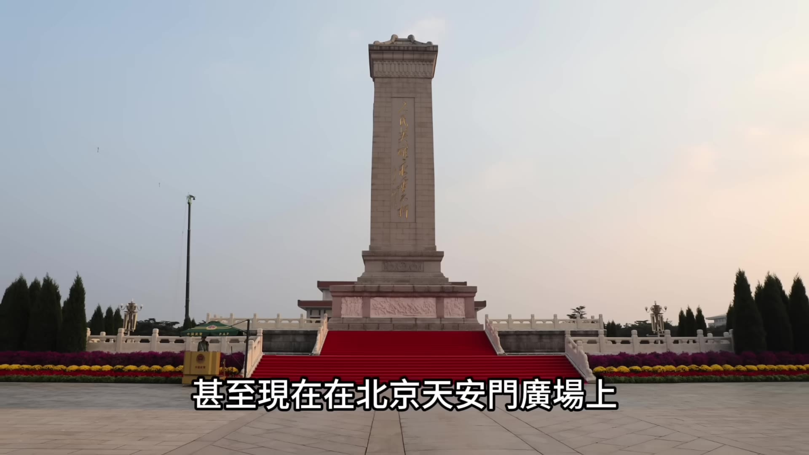
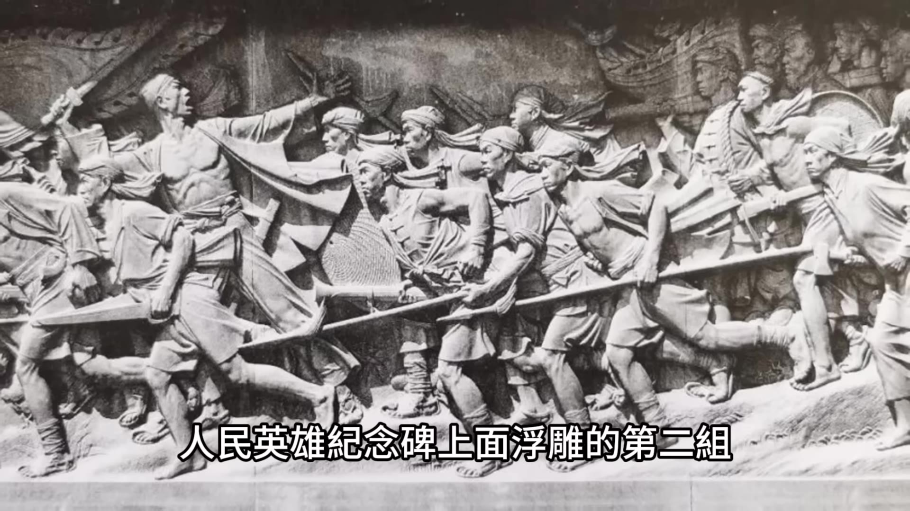
當太平天國興起之時，清朝已經出現了末世跡象。當時除了太平天國以外，還有許多其他反清勢力在各地興起，包括湖北、四川、陝西的白蓮教叛亂、西南地區的苗瑤之亂、東南沿海的海盗活動以及河南、安徽、山東的捻匪作亂，雲南和陝甘地區也因回民問題陷入了動亂。這些動亂幾乎在同一段時期發生，而這期間還遭遇了第二次鴉片戰爭，連咸豐皇帝都逃離北京，顯示出清朝岌岌可危的局面。
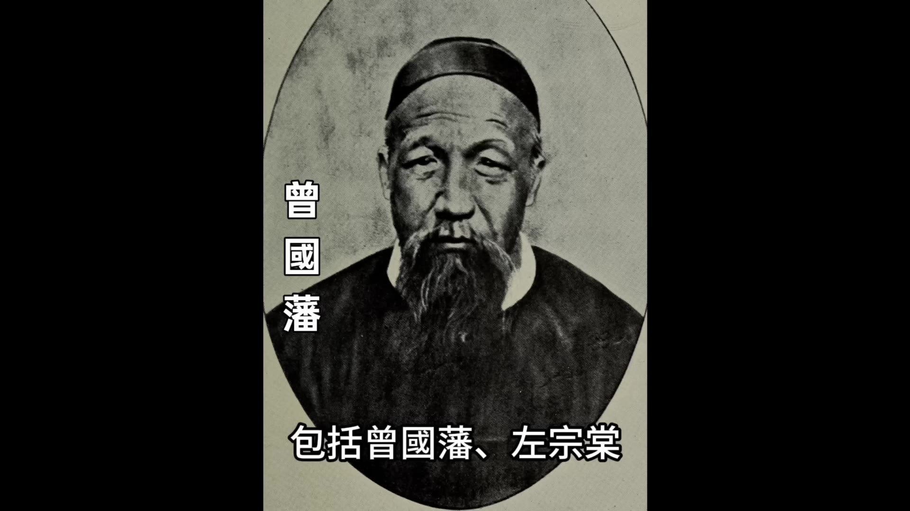
然而在如此危險的局勢下，清朝竟然平安度過了並迎來了同光中興。這樣的轉變背後肯定有其原因。清廷統治者當時所做出的一些關鍵決策是什麼，又是在哪些「關鍵時刻」做出了這些正確的選擇？從太平天國對手的角度來看，洪秀全當時應該處於大好形勢之下，但為什麼最後還是失敗了？太平天國的失敗有多種原因，其中最核心的問題又是什麼？
在這個系列講解中，我們將逐步解答這些問題。晚清影響很大的一些人物如曾國藩、左宗棠、李鴻章、慈禧、奕訢等也會陸續登場。今天的主要內容圍繞三個方面來講述：首先，清朝為什麼會走到這種百姓都要造反的地步；其次，洪秀全是怎樣創立拜上帝教的，這背後的動力和理論基礎是什麼；最後，洪秀全的拜上帝教又是如何能夠在短時間內傳播出去的。我們知道，當時基督教已經進入清朝多時，但其信徒並未大幅增長，而洪秀全的拜上帝教卻能快速擴張，積累大量信眾。
關於第一個問題，我們常說每個朝代都有一種循環模式或周期律，即新王朝建立初期一切是新的，經過幾十年到一百年的發展之後會進入鼎盛期，然後開始走下坡路。當走到最低點時農民起義就會爆發，推翻現有統治而建立一個新的王朝，新王朝再按同樣的模式進行周而復始。造成這種周期律的一種說法是土地兼併引發地主與佃農之間的矛盾。但隨著越來越多的研究表明，這只是一部分原因，實際的土地兼並程度各地區差異很大，平均約在30%到40%，並非像傳統觀念所認為的70%以上的土地被地主佔有。
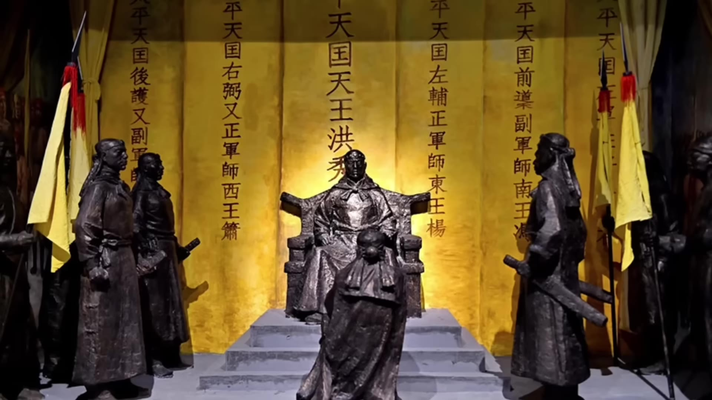
00:05:03
在北洋時期的一段歷史中，地主與佃農之間的關係並非如一般所認為那般劍拔弩張。當時的地租率大約為30%，這表明地主對佃農的要求並不過分，甚至有許多情況下地主與佃農是合作而非衝突的。例如，《水滸傳》中描述的情節顯示莊主帶領其手下——即稱作「莊客」的佃農一同起義，這種現象也出現在當時中國社會中。如果主要矛盾確實存在於地主和佃農之間的話，為什麼他們選擇一起反對官府而不是互相敵視呢？這表明土地兼併並非導致王朝更替的主要原因。
實際上，在這一時期，觀察到的更多是擁有權力與地位的官吏與普通百姓間的矛盾。當統治者及其附屬官僚階層日益腐敗，漸漸地佔據了更多的社會資源時，原本設立的制度會逐漸失靈並無法維護公平公正。這種轉變通常發生在王朝發展到較後期階段，此時開國君主與其建國元勛已經從民間遠離，成為高層統治者。
清朝時期更是專制集權達到頂峰的時代，在此之前明朝廢除宰相制度令君權進一步加強。到了清朝時，軍機處等機構實際上只是皇帝個人意志的執行工具，沒有任何力量可以限制皇權，這使得朝廷在面對社會問題與衝突時缺乏有效的糾錯能力。
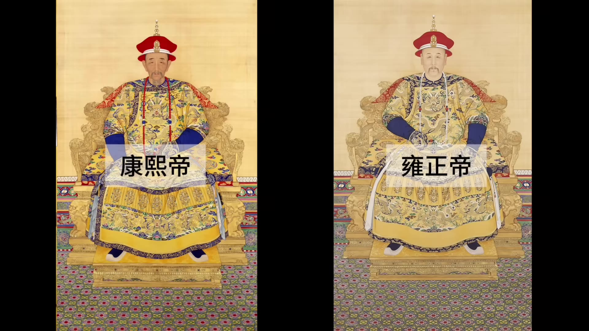
此外，在人口方面也出現了前所未有的增長。清朝初期人口達到一億後，到康雍年間已達此數量；至乾隆時期翻了一番，再次達到二億人；到了嘉慶、道光年間則再增至四億人。
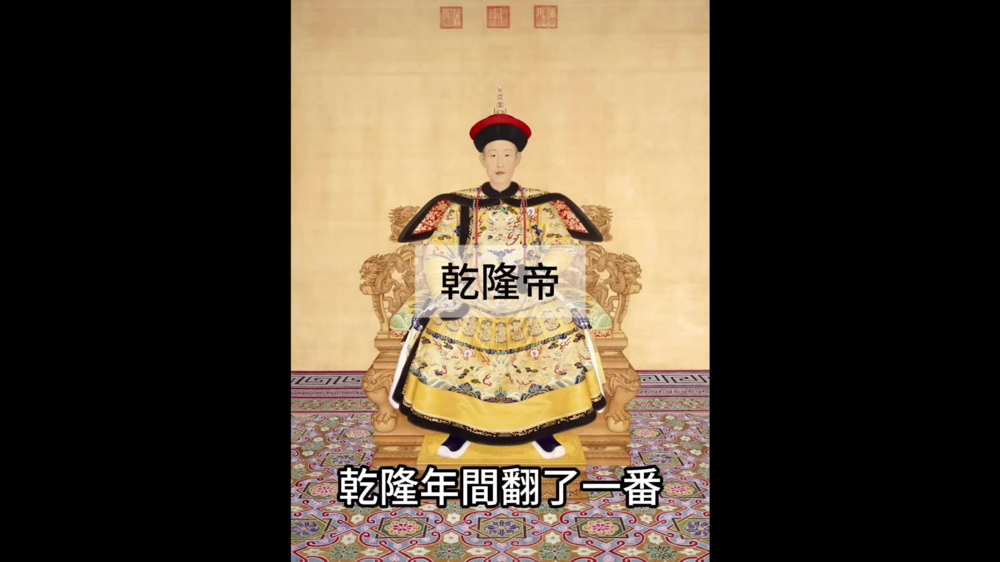
如此龐大的人口數字在中國歷史上前所未見。然而，在這樣的背景下，一些高產農作物如番薯和玉米的引入幫助解決了部分問題。這些作物不僅能夠適應多種土壤條件，而且還具有很高的產量，因此被廣泛推廣並種植。
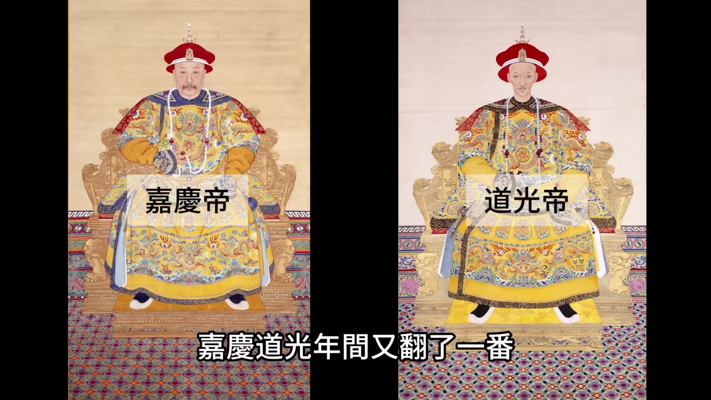
儘管如此，人口激增仍給農業生產帶來巨大壓力。一旦遭遇天災人禍，這種脆弱的平衡便會立刻瓦解，導致飢荒和社會動盪。到了嘉慶年間，官僚體系已高度腐敗，這也標誌著清朝的統治機器開始衰落。例如，在查辦和珅時發現其私人財產達九萬萬兩白銀之巨，顯然當時整個官場已被嚴重腐蝕。
隨着時間推移，各省份不斷爆發叛亂，其中最為著名的便是太平天國運動，這是由洪秀全領導的一次大型民間起義。洪秀全是廣東花縣人，1814年出生，原名火秀、仁坤，其家屬農民家庭但生活較為殷實。
這樣的社會背景與政治環境孕育了諸如太平天國等重大歷史事件的發生，進一步揭示了清王朝衰落時期特有的內在矛盾和結構性問題。
00:10:01
當年，洪秀全因其家族的鼓勵和支持得以專心讀書。當時科舉制度對於大部分讀書人而言意義重大，他們通過考試以求獲得官職和榮譽。洪秀全於16歲時參加縣試並順利考中，但在隨後的府試中卻未能晉級。當時的科舉分為三個階段：縣試、府試以及院試，其中府試是在省城進行，如廣州之類的城市，通過者可以獲得秀才的身份。
洪秀全從16歲至31歲間共參加了四次考試，但一直未能取得秀才的資格。每一次縣試他都表現出色，卻總是無法在更高一級的府試中脫穎而出，這樣的結果對他的心理造成了不小的影響。第二次赴考時，洪秀全於廣州獲得了《勸世良言》這本小冊子，此書由華人基督徒梁發編寫，內容主要為基督教學說的基本知識，如伊甸園和諾亞方舟的故事以及部分《馬太福音》與《啟示錄》的節選。
然而，洪秀全獲得該書後並未細讀便回家準備下一次考試。第三次府試再度失利使他深受打擊，導致病倒昏迷了七天。在這期間，家人描述他有時沉睡、有時站起高喊「斬妖」等不正常的行為。
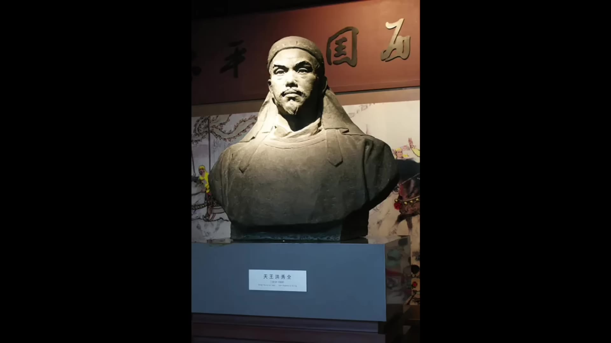
醒來後的洪秀全表現得有些神經錯亂，並宣稱自己接受上天之命成為太平天子，要為人間帶來和平。他甚至改名為「洪秀全」以符應其新認定的身份。「秀全」二字拆開便是「我乃人王」之意。
在經歷了一段精神失常後，洪秀全再次清醒過來並繼續準備考試。馮雲山後來將這段經歷描述成是天啟，但學者們對此有所保留，認為這些故事多為加工結果。事實上，在考科舉的過程中，他似乎沒有真正理解《勸世良言》的內涵。
直到31歲第四次赴廣州府試再次失敗後，洪秀全才重新審視這本小冊子並深感啟示，認為自己夢見的情景與書中的描述吻合。
他認定在夢境中看到的是他的天父上帝和幫助他的天兄耶穌，並決心傳播此信仰給世人，建立拜上帝教。
洪秀全開始傳道時，首先說服了同鄉好友馮雲山與洪仁玕等人加入，這二人後來成為太平軍的重要人物。
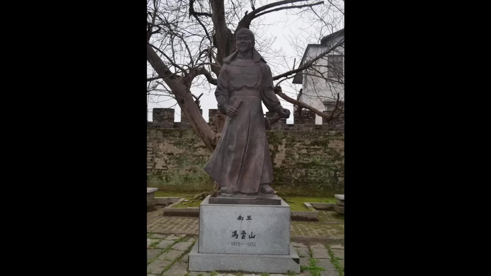
馮雲山比洪秀全年長一歲，兩人都志同道合，致力於傳播新信仰。
00:15:00
他們兩個有相同的經歷，都是考科舉好幾次沒有考上。馮雲山信教之後就跟隨著洪秀全一起傳教，他們最開始是在廣東地區傳教，先到省城廣州，然後再到順德、番禺、清遠、陽山等地區宣傳上帝信仰和基督教義。然而，這個過程中的收穫非常小，幾乎沒有人相信他們的教誨。
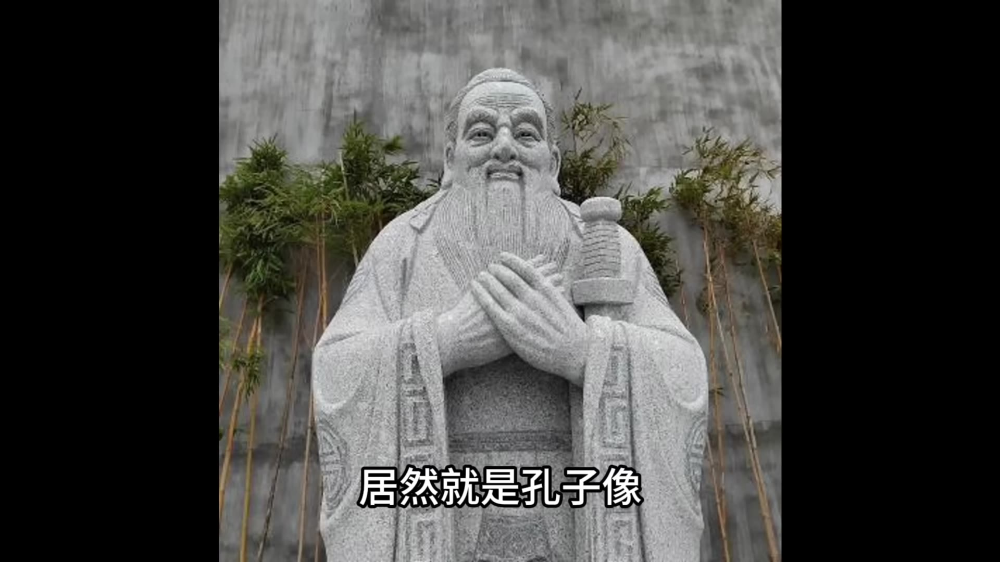
基督教的教義要求打破一切偶像崇拜，只能信奉唯一的真神——上帝。洪秀全與馮雲山決定以此為突破口來擴大影響力。最令人驚訝的是，他們選擇的第一個目標竟是當地儒家文化的象徵——孔子像。這兩位傳教士在這些地區破壞了許多孔子像，並宣稱這是為了讓民眾轉而信奉上帝。這樣的舉動無疑觸犯了當時的社會風俗與傳統習慣，當地人甚至認為他們是因屢次考試失敗而精神錯亂。
洪秀全與馮雲山在考科舉期間靠教書維生，然而破壞孔子像後，再也沒有人敢將孩子送到他們開設的私塾。於是，在這樣的背景下，兩人在廣東地區傳教宣告失敗，不僅宗教傳播遭遇困難，連謀生之業也難以為繼。

他們決定轉戰廣西，洪秀全的親戚住在貴縣（現今貴港市），兩人便前往投靠當地的親戚。在貴縣傳教時，洪秀全做了一件令當地人震驚的事情——作詩痛斥六烏廟。
六烏廟供奉著一對殉情的戀侶，這一故事源於當地青年男女在六烏山口相遇，通過山歌互訴衷腸、雙雙自殺的愛情傳說。然而，在洪秀全看來，這不過是背離儒家傳統禮教的一種陋習，於是作詩痛斥。
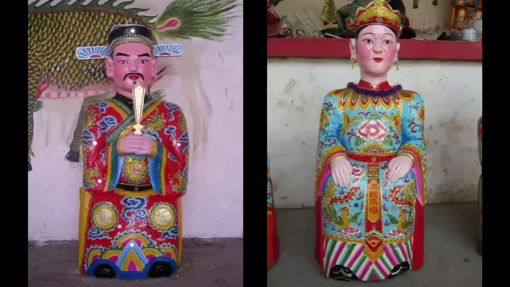
人們對此反應不一，有人咒罵洪秀全會因六烏神的報復而遭遇不幸。然而，幾天過去後，洪秀全依然平安無事，與此同時，六烏廟內卻開始出現大量白蟻侵害問題，這更使得當地民眾開始懷疑六烏廟的力量是否真的存在，並逐漸接受拜上帝教。
雖然在貴縣的傳教活動略有起色，但是信徒數量仍然有限。此時由於洪秀全親戚在貴縣也難以立足，他便與馮雲山商議各自回鄉一段時間。
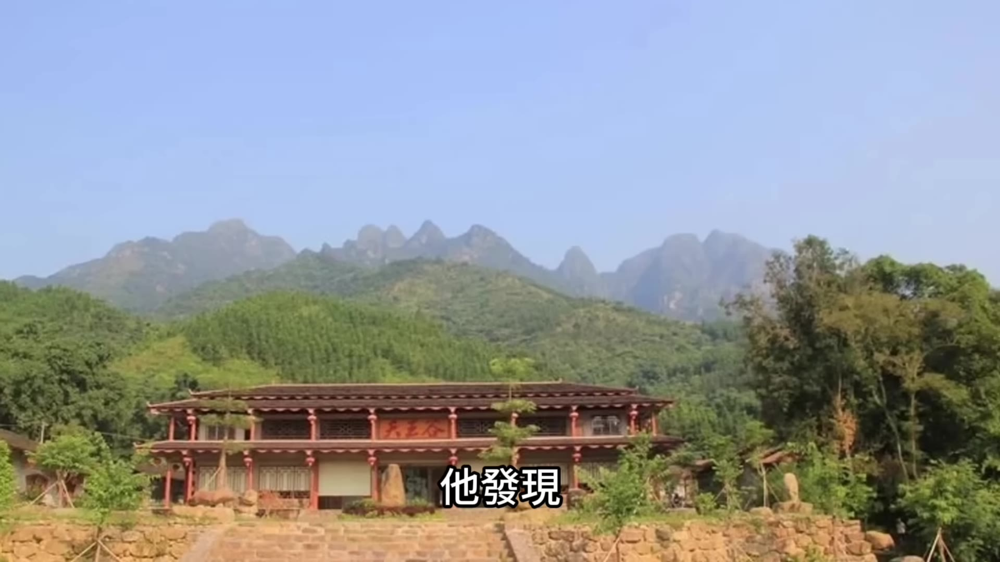
然而，馮雲山並沒有返回廣東花縣的老家，而是根據其敏銳的洞察力，選擇留在廣西繼續傳教。他在紫荊山發現了一個絕佳的傳教地點，這裡土客籍械鬥十分嚴重。

在紫荊山這個地區，由於長期以來的土客籍械鬥問題，使得該地成為一個重要的傳教場所。馮雲山在此遇到了將來非常重要的角色——楊秀清。
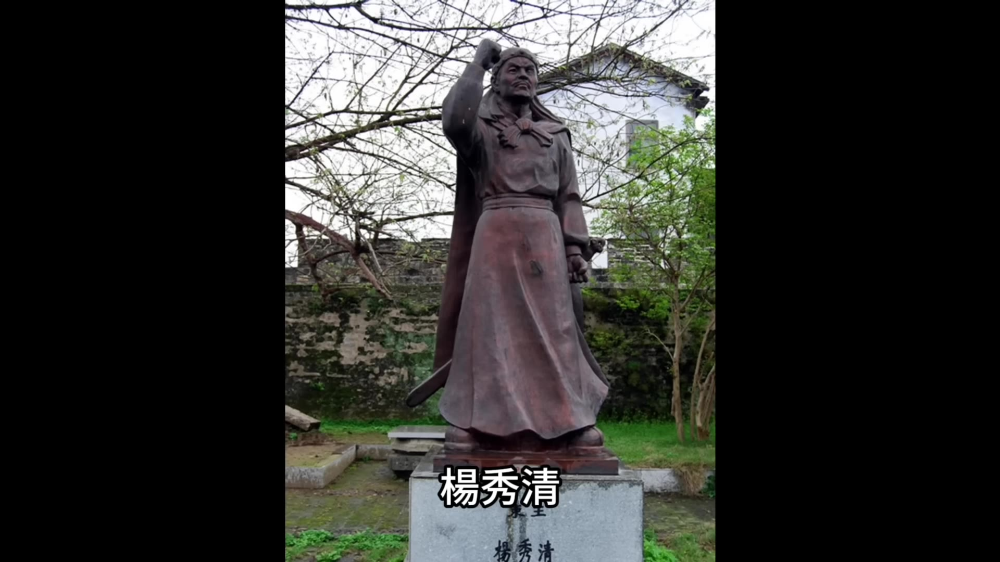
楊秀清是當地一個依靠燒炭種植為生的客家青年。燒炭是一個危險且辛苦的工作，而種山則是在貧瘠的土地上種植藍草或者耐旱雜糧，這些活動進一步加深了土客籍之間的矛盾。
因此，通過在紫荊山的傳教活動，洪秀全與馮雲山開始建立起一個由當地客家民眾組成的龐大信仰群體，而楊秀清也在其中發揮著越來越重要的作用。
00:20:00
馮雲山在紫荊山進行宗教活動，發展了一批後來成為太平天國重要人物的信徒，如楊秀清、蕭朝貴、韋昌輝及石達開等人。這些人皆為客家籍，當地土籍人與客家人的隔閡促使客家人轉向尋求新的信仰和團體支持。馮雲山利用這種狀況，在紫荊山成立了「上帝會」，並宣傳其宗教教義，將所有信眾凝聚在同一個神祇之下，藉此組織起了一支能夠對抗當地土籍人的力量。
不到一年的時間，這個宗教已經吸引了兩千多名信徒。馮雲山在宣傳上帝信仰時十分謹慎，他推舉洪秀全為教主並大肆渲染洪秀全夢中所見的奇異景象，將其塑造成一位受神聖感召的人物。隨著信眾逐漸增多，上帝會也逐漸壯大。
一年多後，洪秀全得知馮雲山的消息便前來與其會合，在紫荊山眾望所歸之下被推舉為上帝會的領袖。二人合作下，拜上帝教得到了初步的成功。
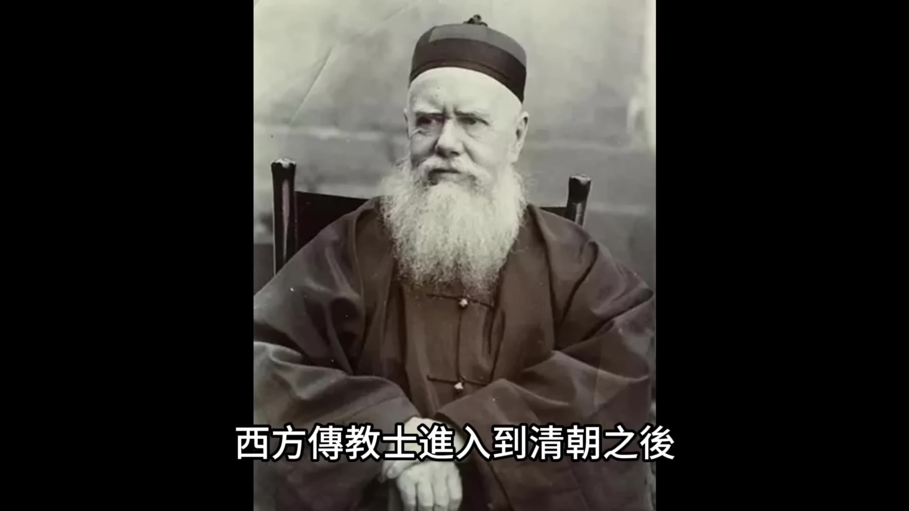
在此期間，洪秀全完成了數部著作，如《原道救世歌》和《百正歌》，闡述其宗教的核心思想——勸世人遵循上帝的教誨，行善事、做正人。洪秀全在這些著作中通過與中國傳統文化的聯繫，將基督教中的「上帝」概念本土化，使之更易為普通百姓接受。
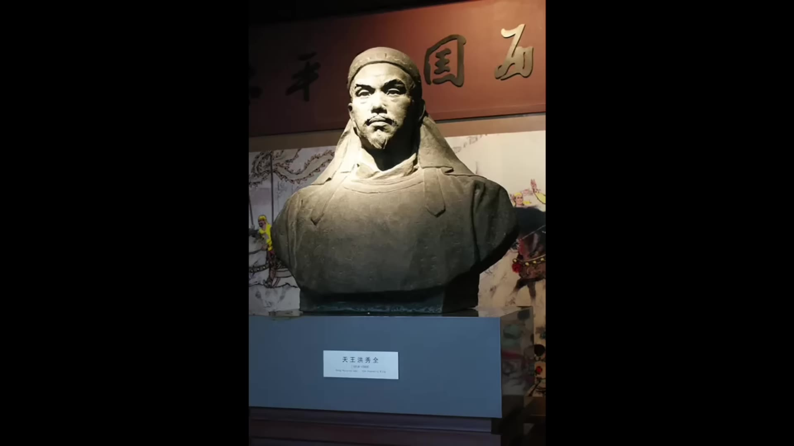
他引述《詩經》等古代文獻中的「上天」來解釋基督教的上帝觀念，在中國文化中「敬天拜天」是民眾習以為常的做法，因此洪秀全將西方的上帝信仰與傳統祭天文化相結合，使得拜上帝教成為一種地道的中華宗教，傳播起來自然更加容易。
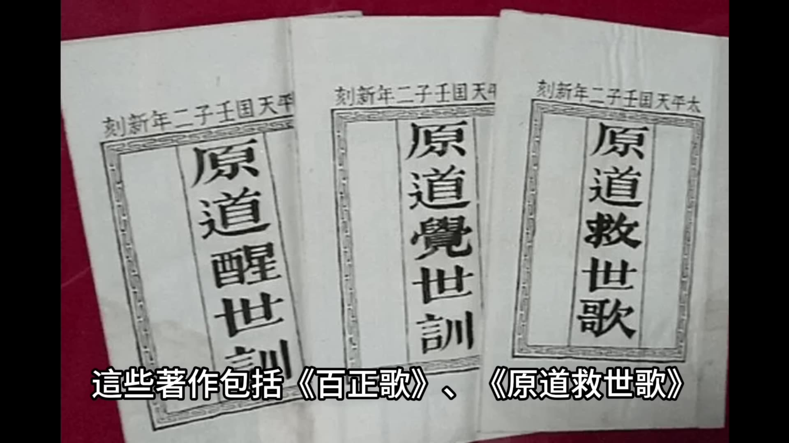
此外，洪秀全在著作中的寫作風格偏向於通俗易懂，更適合民間流傳。這也讓他能夠將西方的基督教義與本土文化完美結合。同時，在創教過程中，他還加入了諸多迷信色彩，如夢中與上帝和耶穌見面等神話故事，用以強化自己的權威地位。
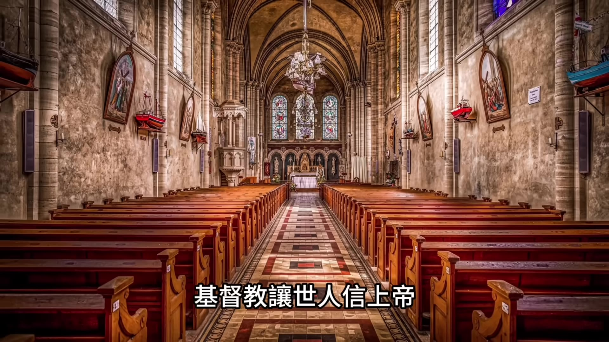
這些因素共同作用下，拜上帝教得以迅速發展並深深植根於廣大民眾之中。
00:25:00
和耶穌之間的血緣關係被宣稱為是上帝派到人間拯救世人的真命天子，他繼承的法統據說是最純正的法統。這個故事既是他打造的一個神話，又是一篇政治宣言，把宗教權威與政治權力相融合，太平天國成為了一個神權國家，實現了政教一體的體系。洪秀全既是拜上帝教的教主又是太平天國的天王，在這個過程中他利用了許多迷信色彩的故事來增加自己的神秘感和影響力。
起初在廣州傳教並未成功，但到了廣西後，情形截然不同。廣東是洪秀全的老家，當地人都認識他從小到大的經歷，因此不容易相信他的說法；而廣西則是一個陌生的地方，沒有太多人認識洪秀全，為塑造其神聖形象提供了便利。馮雲山在洪秀全抵達紫荊山前一直不斷地宣傳和塑造他的一個神秘人物形象，使他在來到紫荊山時被眾多教徒自然地接受並拜服。
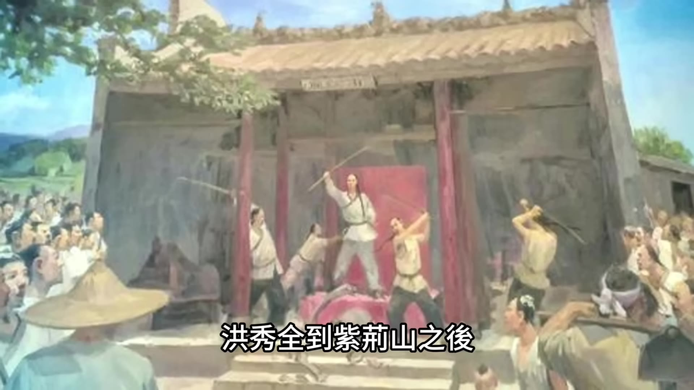
洪秀全和馮雲山在廣西紫荊山傳教成功，部分原因是團結了客家人。通過上帝會，客家人被組織起來並有了與土籍人對抗的能力；這引發的衝突也日益激烈，尤其當基督教教義要求打破一切偶像時。
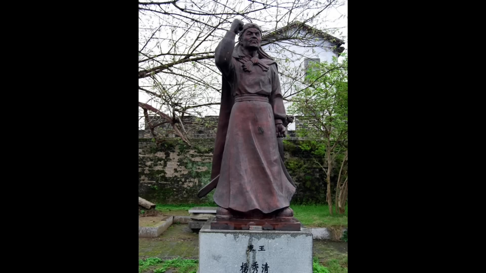
隨著這種矛盾加劇，土籍人開始向上帝會發難。第一次是由王作新率領團練抓走了馮雲山，後來被上帝會的人救回了；第二次他向官府告狀說馮雲山迷惑鄉眾、聚眾謀反，馮雲山因此被捕並坐牢半年。
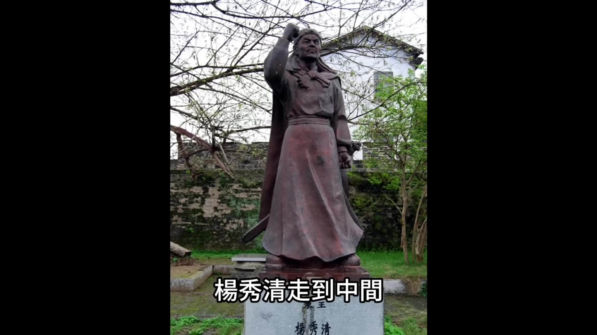
在此危機下，楊秀清挺身而出挽救了拜上帝教。本來在教內默默無聞的楊秀清，在教徒集會時突然「天父降體」，以此控制住局面讓信眾重新相信他和洪秀全。
這種利用民間巫術中「請神上身」的做法在當時具有超自然的魔力，教徒們極度信服。蕭朝貴也進行了一次「天兄耶穌降體附身」以增強迷信色彩。
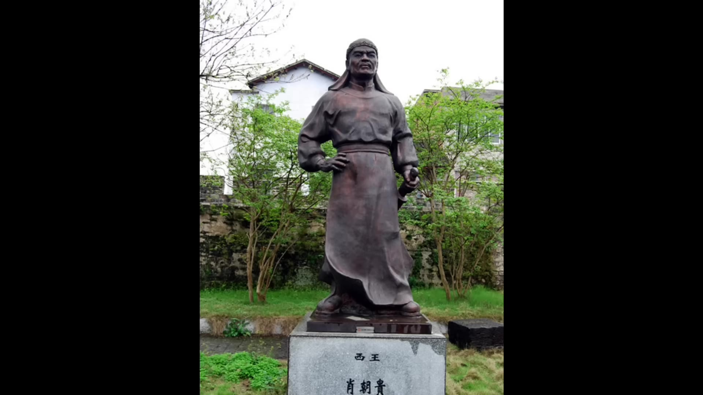
這種做法雖然現在看來或許可笑，但在當時卻具有極大的說服力。後來馮雲山被釋放、洪秀全也回歸後，他們對楊秀清和蕭朝貴的降神附體行為雖然是不信的，但由於這些言行維護了拜上帝教以及洪秀全自身的地位，他們也只能被迫承認並接受。
00:30:00
拜上帝教之所以能夠大規模傳播，與其與中國本土文化的融合以及洪秀全對基督教進行的改造有著密切關係。第一步是將西方的「上帝」概念與傳統文化相結合，將其融入到中國神話當中；第二步則是在此基礎上加入迷信色彩，通過升天異象使洪秀全成為上帝的次子，進一步增強他的權威地位；第三步則是加入了巫術成分，這一步驟再一次確認了上帝的存在，從而更加烘托出洪秀全的身份與權威。經過這樣的改造，原本在中國水土不服的基督教得以在民間迅速傳播開來。
拜上帝教之所以能夠受到廣大群眾的支持，還有一個重要原因就是洪秀全構建的理想社會模式。聖經中的「天國」概念原是神的統治領域，是一個抽象的概念，但洪秀全將其具體化為一個可以實現的社會形態——太平天國，並將之描述成一個沒有剝削、天下為公的理想社會，這與中國傳統文化中《禮記·禮運》所提出的「大同」理想不謀而合。他還在《原道醒世訓》中明確提出「天下一家」的主張，並把太平天國作為一個沒有欺凌、男人皆為兄弟、女子皆為姐妹的理想社會。這種設想不但滿足了人們對美好生活的嚮往，也迎合了農民對於土地的需求以及對清廷腐敗不滿的情緒，因而能夠迅速地傳播開來。
此外，拜上帝教還有一個本土化的特徵，就是將神人倫化。根據太平天國運動中的記載，在洪秀全的故事中，他與肅朝貴家族形成了一個「天人合一」的小家庭，其中上帝被稱作天父、洪秀全是二鬼子；拜上帝教的其他頭目也成為了上帝的子女或親屬。這樣一來，他們之間就形成了如同兄弟姐妹一般的關係，進一步強化了宗教團體內的凝聚力。

值得注意的是，肅朝貴家族的蕭朝貴還能降神附體扮演天兄下凡的角色，根據在英國發現的《天聖旨》一書中的記載，在三年多的時間裡，蕭朝貴曾一百二十多次扮演天兄下凡，這顯示了他的豐富想像力和優秀演技。每次扮演時，他會握著一把名為「雲中雪」的寶劍與妖魔作戰。
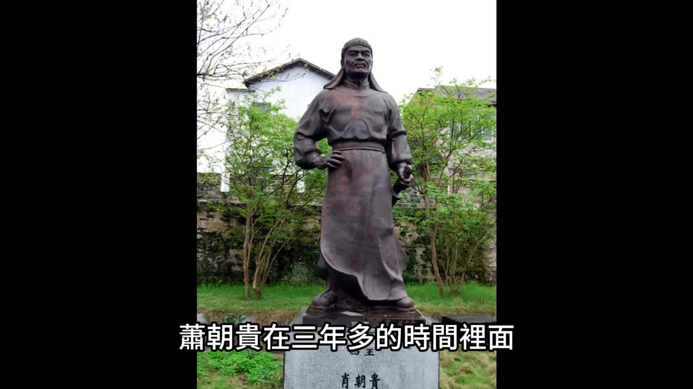
馮雲山在蕭朝貴扮演天兄降臨時交給他這把寶劍的情景被詳細記錄下來，顯示了這一神異現象的影響力。蕭朝貴手握寶劍舞動，對著空氣揮劍，稱之為將妖魔驅趕。
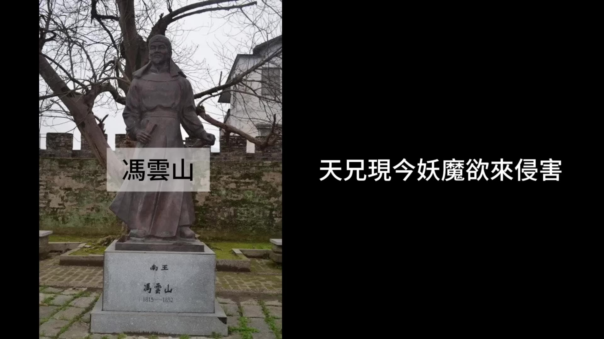
這段過程中，蕭朝貴表現得非常自信和堅決，自稱通過這種方式將邪惡力量清除出太平天國的領地。
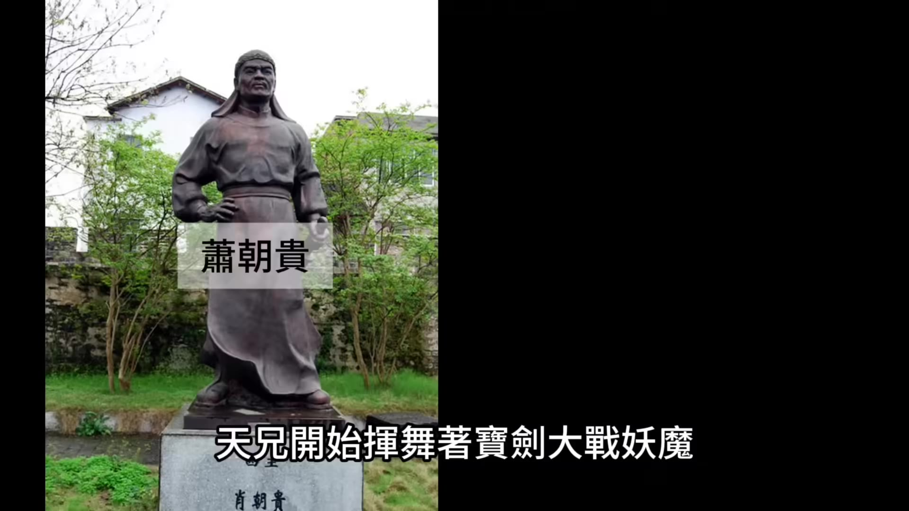
他還會在場上宣佈各種決定或指令，以此來加強信徒對宗教神權體系的信任感與歸屬感。
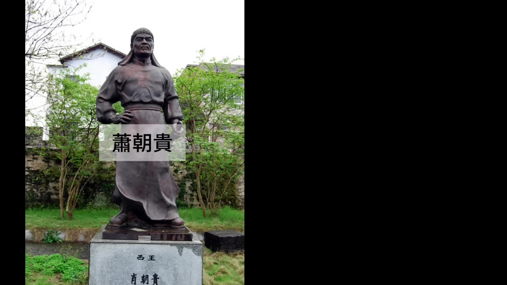
這就是蕭朝貴扮演天兄下凡時的一幕。
00:35:00
我們看洪秀全的表演和民間驅趕病魔的巫術套路大致相同，雖然看起來愚昧，但在當時的民間卻深信不疑。接著來談論一下洪秀全的家庭事務，他的大老婆名叫賴蓮英，但並不是傳統意義上的皇后。事實上，洪秀全曾經明確規定，任何人不得稱他為皇帝，因此他頒布過一道嚴肅的詔令。
這道詔令指出，只有上帝才是真正的「皇帝」，而其他人只能是「王」。在這種情況下，即使洪秀全是天王，他的大老婆賴蓮英也只能被封號為「又正月宮」，而非傳統意義上的王后。這個稱號反映了太平天國內部的特殊等級制度和權力結構。
根據《太平天日》的記載，當洪秀全被上帝召喚升天見到天父時，他領受了改造人間的神聖使命。同時，在天上他也有一位妻子——正月宮，這位天妻還為他生下了一個兒子。因此，即使賴蓮英是洪秀全的人間正妻和幼主洪天貴福的母親，她在太平天國中的地位也只能排在第二位。
此外，蕭朝貴曾經假扮作「天兄」下凡，與洪秀全進行對話，並傳達上帝的旨意。這顯示了洪秀全及其核心成員如何通過神靈附體的方式來鞏固自己的權力和統治合法性。
接下來我們簡單介紹一下太平天國早期幾個重要人物的背景：首先是溤雲山馮雲山，他不僅是洪秀全的同鄉，也是拜上帝教早期創立與傳播的重要成員。相對於洪秀全而言，馮雲山在傳教工作上顯得更加堅定和積極，並具有真才實學。他對歷史有深入研究，且擁有較強的政治頭腦，反清的主張最早也是由他提出。
然而，隨著楊秀清和蕭朝貴在組織中地位上升，馮雲山的地位相對下降。根據某些史料記載，洪秀全在營救馮雲山被抓入大牢時不在場，而這一空白被楊、蕭二人利用來提升自己權力；但亦有另一說法指明當時洪秀全已在現場。
拜上帝教的領導層因此分化成兩派：一派以洪秀全和馮雲山為首，代表著從廣州花縣起步的老革命黨人；而另一派則由楊秀清、蕭朝貴等地方勢力組成，他們對拜上帝教初期發展做出巨大貢獻。雙方在組織內部形成一種相互制衡的格局。
最後介紹楊秀清，他是孤兒，很小的時候父母便離世，由伯父撫養長大。楊秀清在太平天國早期領導人當中具有重要地位，並且通過各種手段逐步提升了自己在組織中的權力和影響力。
00:40:02
洪秀全與馮雲山皆來自農民家庭，至少他們還有土地。楊秀清則屬於所謂的“棚戶”，意即沒有自己的田地，只能靠燒炭和種植山上作物維生。楊秀清未曾受過正規教育，但據當地傳聞，儘管貧窮，他卻喜愛交際，經常邀請朋友聚會喝酒，自己卻從不沾酒，而喜歡靜坐旁聽友人談論。
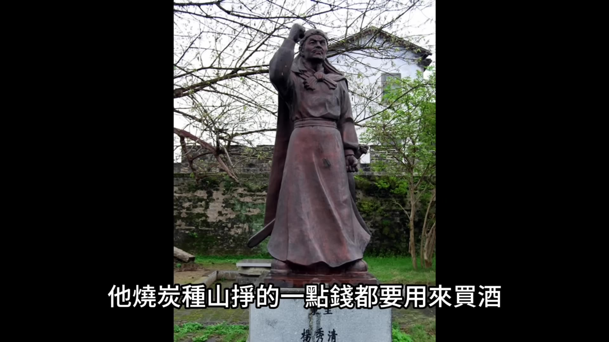
這種行為在楊秀清日後加入“拜上帝會”並迅速崛起中似乎扮演了重要角色。當馮雲山進入紫荊山區傳教時，楊秀清是較早的一批入教者之一；但他當時只是個不顯眼的小人物，沒有人注意到他。通過私下建立自己的社交圈，楊秀清先是與蕭朝貴結成同盟，然後開始默默擴大影響力。
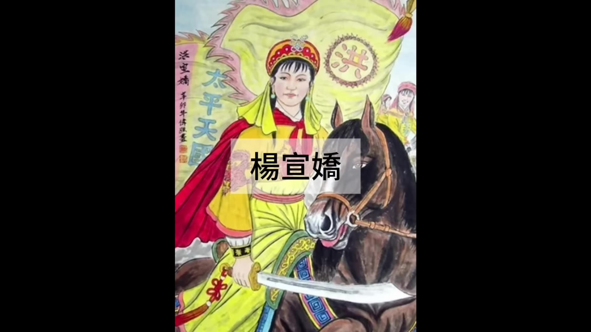
蕭朝貴的妻子名叫王宣嬌，在加入“拜上帝會”後，她改名為楊宣嬌。據說她是早期教會中非常活躍的人物之一，甚至有人稱呼她是女權主義者，不拘泥於傳統道德束縛。在洪秀全剛到紫荊山區的時候，楊宣嬌曾公開向信徒講述十年前她靈魂升天時遇到一位老人，並被告知十年後將會有一位來自東方的人來教導他們如何拜上帝的故事。這些敘述為洪秀全的神聖地位增添了色彩。
在“拜上帝會”初期，楊宣嬌比楊秀清和蕭朝貴更具名聲；然而，隨著馮雲山被抓捕後，“拜上帝會”群龍無首時，兩人開始表演降神附體等靈異行為以獲取更多信眾。從此以後，他們的小圈子逐漸成為教會內一股強勢的本地派別。
楊秀清在獲得地位之後，他展現出出色的統帥才能。出身於燒炭種山、未讀過書且貧窮的他顯然有著異常堅韌的性格；而更令人驚訝的是他的管理與軍事才能。通過強化教會內部管理，讓每個成員各司其職，並嚴格訓練出一批精銳部隊，楊秀清進一步鞏固了自己的權力。
轉向談及韋昌輝。韋昌輝原名韋正，廣西桂邪縣金田人，他家是當地的富豪之一，在拜上帝教早期對該教派有著重要貢獻。據說韋昌輝曾不惜捐出所有家產來支持革命活動。然而，為什麼這樣的富戶會轉而成為反清的力量呢？這要從他們客家人在當地受到排擠的地位不公講起。
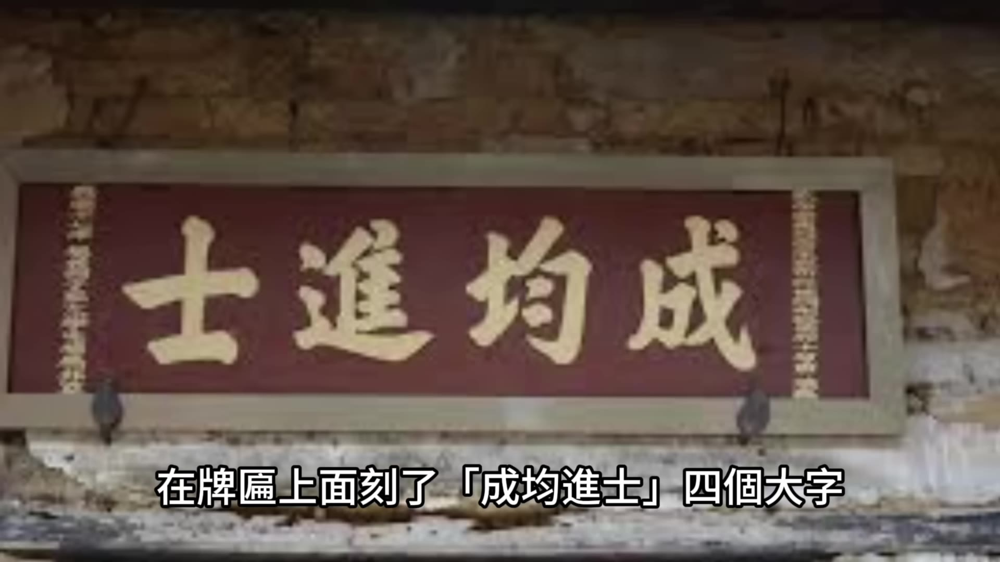
韋家為了提高自身的社會地位，甚至花費巨資購置“成均進士”這一虛榮稱號。然而，在一次慶祝父親韋元玠壽辰的活動中，他們卻被當地土著世族家庭所陷害，最終遭到縣衙的嚴厲處罰。這件事讓韋家對政府感到極度失望，並決心加入反清行列，成為革命的堅定支持者之一。
00:45:02
蕭朝貴與韋家結識後，韋昌輝加入了上帝會。韋昌輝加入之後，其家庭成為了上帝會的一個重要據點，洪秀全和馮雲山經常居住在韋昌輝家中。韋昌輝將家中所有的財產拿出來用於購置武器，以支持太平天國的軍事建設。因此，在太平天國前期，韋昌輝發揮了重要作用，清廷一度誤以為他是太平軍的最高領導人。
接下來談到石達開的故事。石達開出身於廣西桂縣一戶家庭條件一般的人家，他還會自己下田勞作。雖然石達開讀過書但並未參加科舉考試，他的詩作曾得到梁啟超的讚賞。在民間傳說中，石達開是最具傳奇性的人物之一，不論是武林高手還是講義氣的故事都為人所稱道。由於他年輕時表現出傑出才幹和俠義精神，族人與鄉親對他都非常推崇和敬佩。
洪秀全和馮雲山在紫荊山密謀起事之際聽聞石達開的盛名，決定效仿劉備三顧茅廬的故事請石達開加入他們的行列。太平天國定都天京後曾編纂自己的史書，在其中詳細記錄了這段故事。
當石達開加入上帝會時，因為他極高的聲望，直接被提拔至領導層成為「上帝的七子」之一。值得一提的是，雖然石達開1831年出生，僅在1850年金田起義時還不到20歲，但已具備非凡影響力和組織才能。
自從1845年馮雲山在紫荊山傳教成功之後，經過五年的發展，拜上帝會的信徒已經遍布廣西各地，總數超過一萬人。主要分布在六個地區：天平山、龍山、紫金山、鵬化山、象州地帶和賜谷地區，以及廣東與廣西交界處。

這六個地區多為客家人的聚居區，彼此之間隔著高山，交通不便。隨著信眾數量增加，他們與當地土籍人和官府的衝突也隨之增多，導致頻繁發生械鬥。面對不斷升級的軍事壓力，拜上帝會決定於1850年7月在金田村集結領導層。

1851年初洪秀全發佈「團營」命令，號召各地信徒向金田村集中。當月11日楊秀清等人在該地宣布起義，組建了約兩萬人的太平軍。由於官兵迅速包圍金田村，楊秀清與洪秀全不得不撤退至大湟江口暫時停留，準備再次突圍轉移。最終，他們撤往紫荊山並於武宣縣東鄉正式建立「太平天國」。3月30日，通過一次特殊儀式，洪秀全宣布自己受到天兄耶穌的授命，成為了建立人間天堂的將領。
以上就是本次講述的主要內容，關於1850年金田起義過程我們下次再詳細介紹。
00:50:01
太平軍於紫荊山堅持了半年後，在軍事上連遭失利，已無法再維持下去。為了提高士氣，洪秀全及楊秀清決定率領部隊突圍。在突圍前，洪秀全向教眾宣佈，天父告知他們不久將會有新的基地——「小天堂」，那是個充滿和平與幸福的地方。因此，他宣稱帶領教眾尋找這片樂土，不過他自己也不清楚這個地方確切在哪。
由於清軍的包圍圈在東北方向有一缺口，太平軍便朝著東北方向撤退。
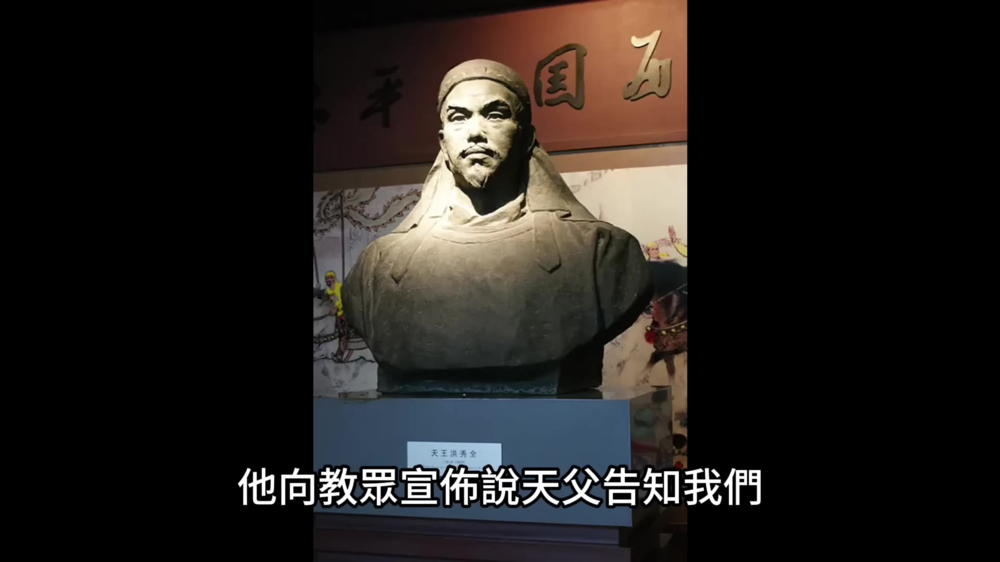
在此過程中，他們向北行進至容墟（戎墟），並攻佔了當地的一座城池——永安城。

永安是太平軍奪下的第一座城市，該城牆堅固且居民眾多，東西、北三面環山的地勢也使其易守難攻。因此，太平軍決定在此落腳，穩紮穩打地進行一系列軍政建設。

軍政建設的首項便是封王：洪秀全自稱天王、萬歲；楊秀清被封為東王、九千歲；蕭朝貴是西玉、八千歲；馮雲山是南王、七千歲；韋昌輝則是北王，而石達開被封為翼王，稱五千歲。
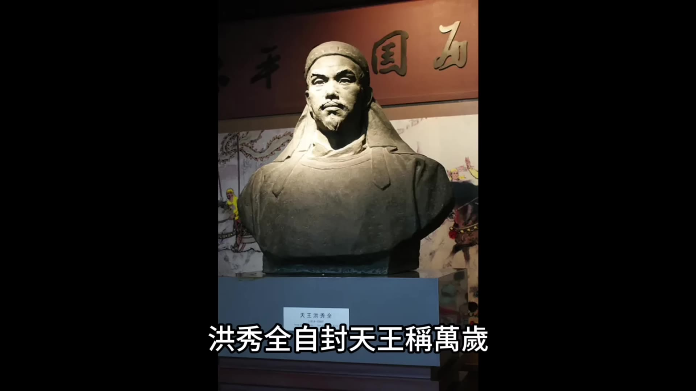
太平天國在洪秀全之下一共封了五個王：東、西、南、北四王加上一個翼王。
這些封號看來更像是通俗演義中的稱謂，而非文化人士所擬定的，從此便可窺見太平天國缺乏文人和精英知識分子的一個重要問題。

事實上，在洪秀全與楊秀清之間，世俗中的權力多由東王楊秀清掌控，因此軍政建設的第一步便是封王。第二項則是廢除清朝的正朔「天歷」，並頒布太平天國自己的曆法——「天歷」，該曆法由馮雲山制定，參考古籍與西洋曆法，將一年定為366天，分12個月，單月各為31天。
此外，他們還制定了《太平軍目》、《天條書》等禮制規章，規定天國的等級制度、軍紀及部隊編制。其中值得一提的是，禁止男女同房，即使是夫妻也不例外，在戰時這可提升士氣與戰鬥力，但諸王可以不受此約束，擁有妻妾。
第三項則是洪秀全發佈「聖庫制度」——太平天國的子民均不得持有私產，必須將一切財產上交至聖庫，由其統一分配食物和衣物等物資。
在戰爭初期，聖庫制度確實幫助了資源的有效調撥，然而隨後隨著天京定都後，太平軍高層生活奢靡，私用聖庫導致該制度的弊端逐漸顯現。
00:55:00
為了激勵士兵作戰，洪秀全下令每次殺敵之後記錄功過，逐級上報，以決定小天堂建成後的官職高低。這種賞罰分明的制度讓太平軍將士即便不知小天堂所在何處，也能在戰場上英勇衝鋒、視死如歸。太平天國這種「打天下坐天下的」江湖做派，最能迎合底層老百姓的心理。
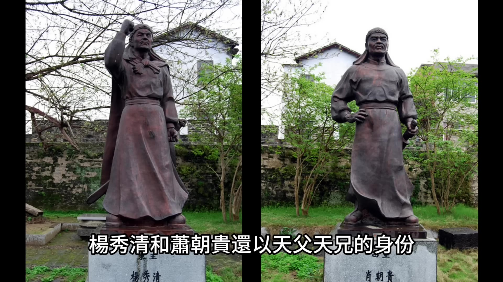
楊秀清和蕭朝貴以天父天兄的身份向將士說明現在所經歷的是皇上帝第四次顯聖：第一次是用六天時間創造天地萬物；第二次是他降凡救以色列人出埃及；第三次遣耶穌降生猶太國，替世人贖罪受苦；第四次則是天使接天王升天命天王誅妖。楊秀清告訴全體將士，凡是殺清妖死掉的人，都能在天上獲得封賞且封賞能世襲。有著天父天兄的保佑和天王論功行賞的承諾，太平軍的戰士在戰場上更加勇猛。
1850年2月26日道光帝去世後，咸豐帝登基。他繼位後第一個要處理的公文就是廣西巡撫上報李沅發造反之事。李沅發因饑荒和水災聚眾起義，最多時達四五干人，湖廣總督親自指揮用了半年多時間、花費了25萬兩銀子才鎮壓下去。這讓咸豐帝在位第一年就遇到了地方的動亂。
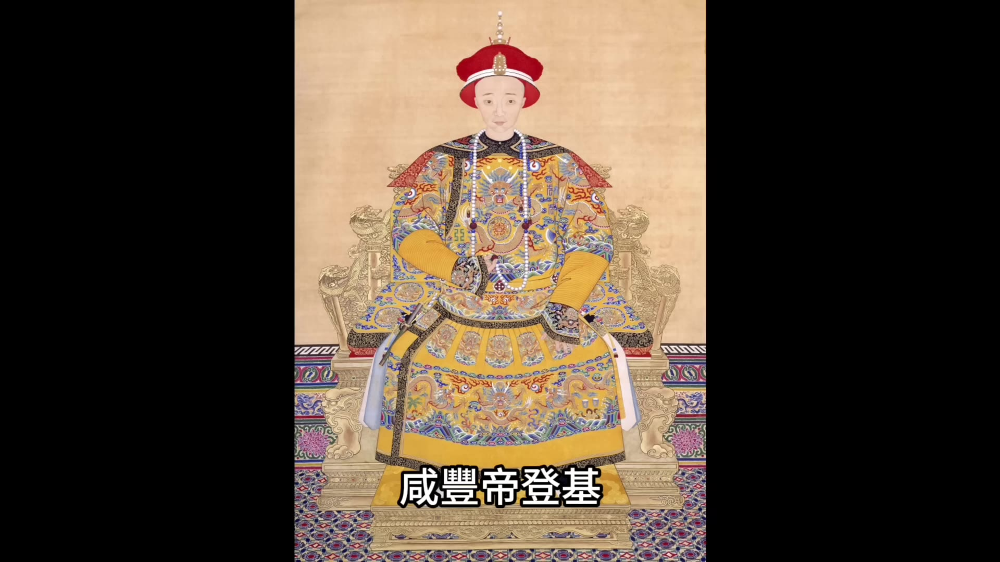
1851年3月，洪秀全在廣西成立太平天國時，咸豐對此還一無所知。因為地方官員對於造反事件從來就是能壓就壓、能不報就不報，所以直到李沅發事件瞞不住才上報朝廷。咸豐這才意識到廣西問題的嚴重性，決定派遣一個有能力的大臣去鎮壓局面。
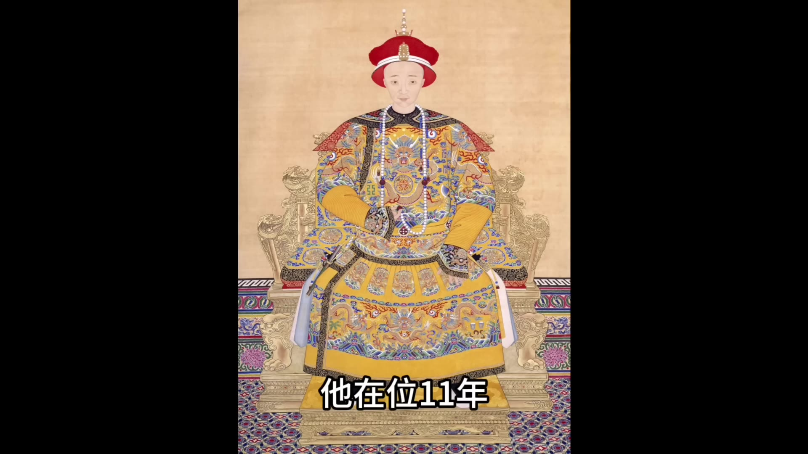
他本來想指派林則徐為欽差大臣前往廣西「蕩平群醜」。然而，咸豐下旨時還不知道洪秀全的名字或拜上帝會的情況，因此他的旨意裡用的是「蕩平群魄」這個詞。
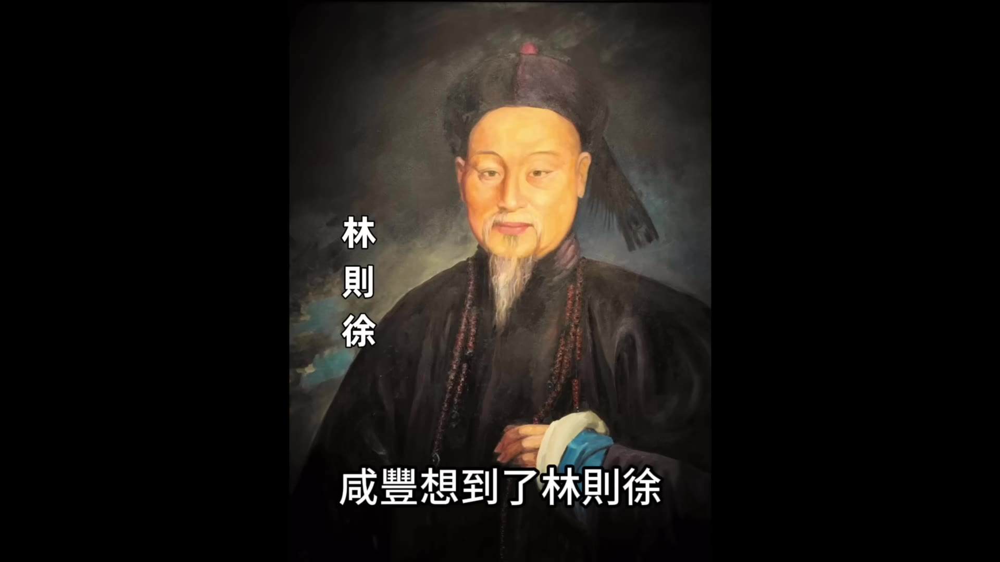
林則徐接到聖旨後準備前往廣西，但不幸的是他在路經廣東普寧時病重去世。咸豐改派李星沅為欽差大臣去廣西，同時撤掉了原廣西巡撫鄭祖琛的職位，由周天爵接任廣西巡撫一職。在咸豐眼中，李星沅是個能臣但辦事稍顯軟弱，而周天爵則以暴烈著稱，兩人配合似乎可以剛柔並濟。
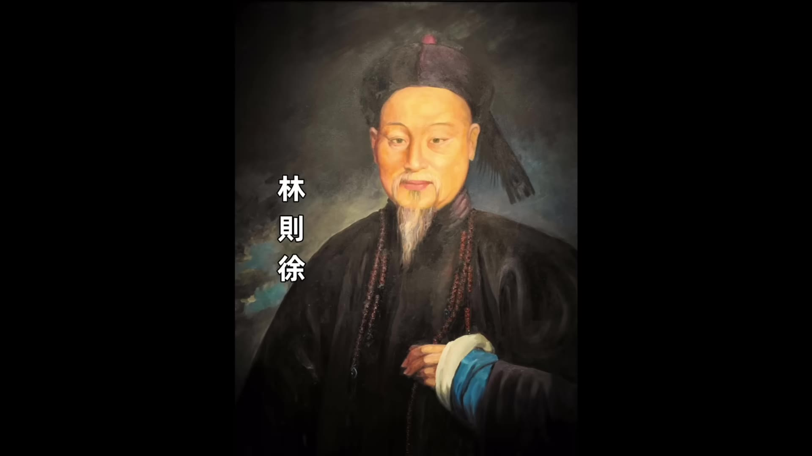
1851年1月初，李星沅抵達廣西。他到任後，在廣西數十股叛亂之中迅速鎖定了桂平金田村這一股勢力，並將此情上報咸豐，奏折中將韋正列為首領，而洪秀全的名字僅被提及在次位；李星沅還將「拜上帝會」誤寫成「尚弟會」。
01:00:02
顯然咸豐帝當時尚未完全明白上帝會的情況。
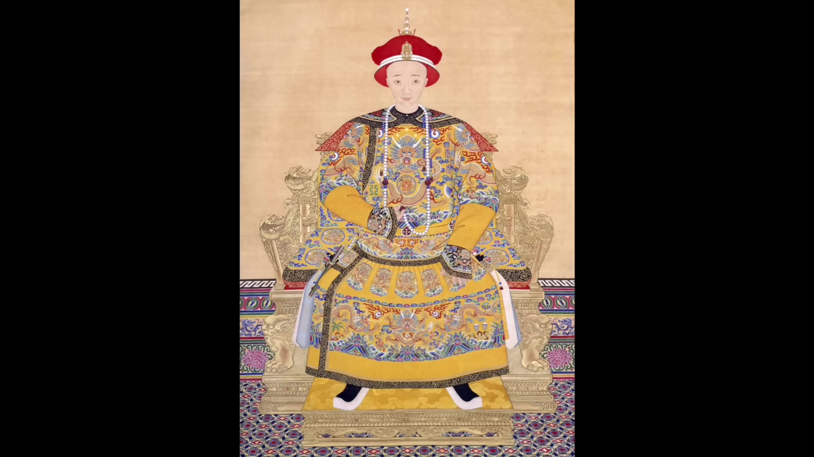
當他收到李星沅的奏報後，立即批准了其請求，並附上了一句話「朕亦不為遙制」。在這份奏折中，咸豐首次見到了洪秀全的名字，卻還未意識到這會成為他未來十年的主要對手。周天爵於1851年1月底抵達廣西，同意了李星沅的看法，將金田的叛亂視作主要敵人。然而，在探查形勢後上報的奏折中，周天爵誤稱「尚弟會」為首逆韋元玠（事實上，韋元玠是韋昌輝之父），這顯示了他的情報錯漏嚴重。經過兩個多月的剿匪行動，李星沅和周天爵於4月21日向咸豐報告了前線的情況，但其中關於敵人情況的描述仍舊混亂。他們已經知道叛軍首領可能是名為「洪泉」的人（「洪泉」應該就是洪秀全），但也將其誤認作西洋傳教士來散播天竺教，並稱天主教為天竺教。
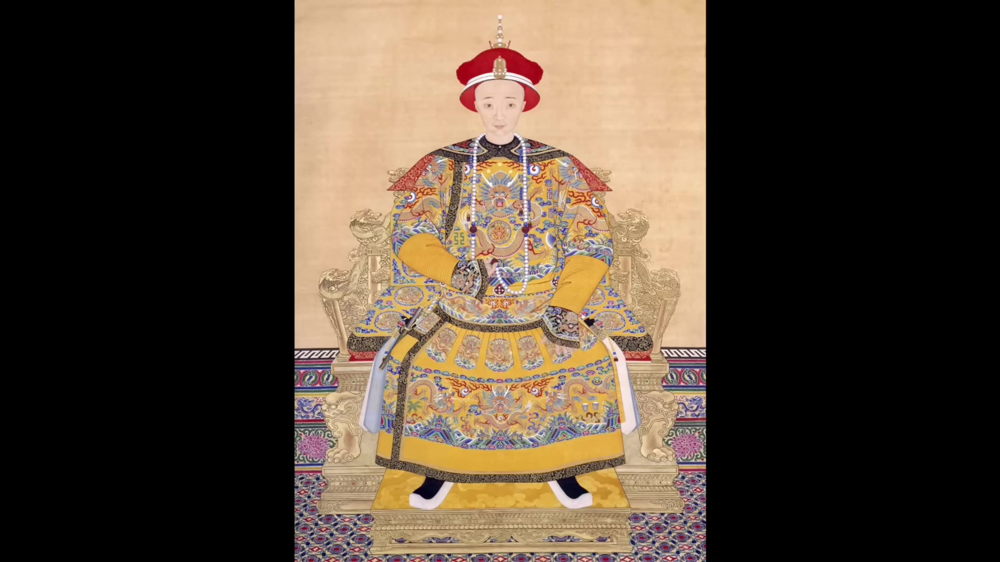
儘管如此，咸豐帝鎮壓叛亂的決心十分堅定，在此半年間，他從安徽、湖南、貴州、雲南等地調集了大軍到廣西前線，至5月時，已部署了約13,600名士兵。同時，咸豐任命向榮為廣西提督，指派其前往前線剿匪。然而，由於三員將領——李星沅（欽差大臣）、周天爵（廣西巡撫）及向榮（廣西提督），在實際作戰中無法配合，清軍雖人數優勢仍未能有效鎮壓太平軍，導致戰報多為虛假勝利，而敵人的實力似乎日益壯大。咸豐於此時陸續從內務府、戶部調集大量銀兩支援前線，但成效不佳。
當李星沅請求咸豐派遣一名「總統將軍」來統領全局時，咸豐才意識到自己的用人失誤。咸豐決定更換指派的重臣，而賽尚阿——文華殿大學士、軍機大臣及戶部主管，成為了他眼中最後可以依賴的大臣。賽尚阿於7月份抵達廣西，此時太平軍已從金田突圍成功佔領永安。

賽尚阿到達廣西後即刻展開部署，圍攻永安城。當時，各省增援的清軍已經到位，連同廣西本地和團練，總兵力已接近10萬人，而城內太平軍不過2萬。面對如此數量的敵軍，太平軍依仗永安地形佈置堅固防禦，有效抵抗了清軍多次攻勢。經過半年時間，賽尚阿發動五次大規模聯合圍剿，均被太平軍擊退。直至1852年4月，眼看太平軍即將彈盡糧絕，卻又被其突圍逃脫。

此次突圍顯示了太平軍在面對持續增援的清軍和物資枯竭的情況下，被迫撤離永安。洪秀全、楊秀清等領袖率部撤退，尋求新的立足點以保存實力並繼續擴張勢力。
01:05:00
為了突圍，洪秀全做足了準備，甚至還出版了根據《出埃及記》故事改編的《三字經》，鼓勵教眾相信他們就像以色列人一樣，在上帝眷顧下能夠成功脫困。這部《三字經》為太平軍帶來了士氣上的支援。
大體上，《三字經》闡述的是：以色列人被上帝保護，埃及人不肯放行，上帝便降災於埃及幫助以色列人化險為夷。同樣地，拜上帝教徒也被視為受上帝眷顧的一群，相信上帝必定會助他們突圍成功。
洪秀全的預言成真，太平軍確實從清軍包圍中成功脫逃。此後，我們可以看到清軍與太平軍突圍整個過程中的配合失誤對前者造成了不利影響。
賽尚阿在永安城外圍困了半年之久，最終只佔得一座空城；面對這樣的情況，他將一名俘虜捏造為「洪大全」並指稱其是洪秀全的兄弟且地位與洪秀全相仿，在太平天國內具有極高權力。這名俘虜被秘密押解至北京獻給咸豐皇帝，雖後事實上證明此人身分並非所謂的逆賊首腦，但咸豐為了鼓舞士氣，仍下令將其凌遲處死。

洪秀全與楊秀清在永安建制之後的表現看來似乎並無奪天下的雄心壯志，更像自封號稱「山大王」那般存在於世；若非清軍追迫緊逼，他們可能會一直在永安防禦而不願突圍。然而，從永安成功突圍後，太平軍反而猶如蛟龍入海，開始了主動進攻的戰略。

他們的目標指向廣西省城桂林，對當地地形熟稔，當抵達柱林時，後方清軍還遠未反應過來；而桂林守軍亦未曾察覺太平軍已從永安突圍成功，導致攻勢初起之際防禦不足。
在攻城過程中，由於桂林城牆高大堅固，每日不斷地試圖突破但始終未能破城。眼看清軍主力即將趕到，他們只能撤退放棄桂林而北上；雖未拿下桂林，但在圍困期間太平軍積累了許多實戰經驗和後勤補給技術，並發展了一支水軍，在桂林附近繳獲了40多艘大船。
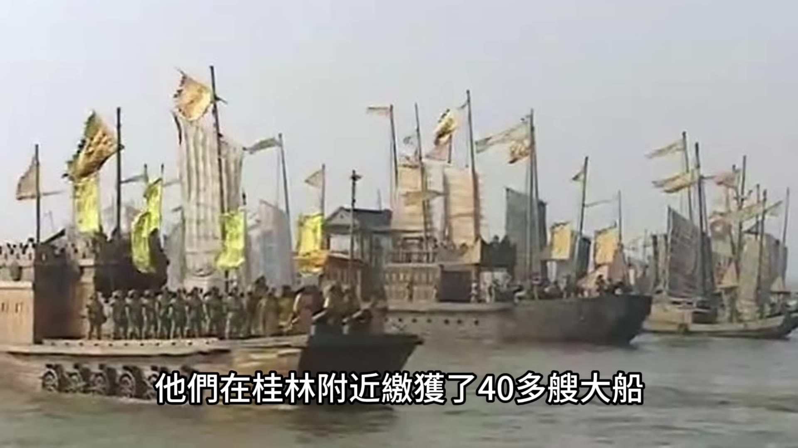
他們將糧食、物資及婦女傷員安置於船上，沿著湘江北上。

抵達全州城下時，因該城牆高大堅固，太平軍原打算繞過它繼續北上；但不料城頭守軍發炮誤擊，導致南王馮雲山受重傷，這激怒了太平軍，他們開始猛攻全州。經過10天的強烈進攻，在5月24日至6月3日之間，終於攻破城門入城後，太平軍見人即殺，短短兩天內將全州居民屠戮殆盡。

起初突圍永安時，洪秀全還特意下令保護居民不遭殺戮；但在全州因南王馮雲山受傷而情緒激動下，太平軍未留情面進行屠城，隨後選擇離開全州繼續北上，沿湘江直指長沙。然而，當他們剛出全州8公里之處，在蓑衣渡遭遇伏擊，這場戰役成為了太平軍的重要轉折點，也是未來湘軍崛起的開端。
如此，今日內容告一段落；有興趣瞭解1921年至1945年專題歷史課程的朋友們歡迎點擊影片下方鏈接查看，並請多多關注、點贊。
01:10:01
邓绍良部继续北上，意图进攻湘南。此时，太平军进攻湘南图中展示了他们行进路线，然而刚出全州不久，在蓑衣渡附近便遭到埋伏。设下这一埋伏的是江忠源率领的部队。
江忠源是湖南新寧人，他从小读书，25岁那年考中了秀才，并且在同一年又考中武舉人，可见其文武兼备。江忠源之所以学习武艺，是因为所在的新寧縣当时不太平，咸豐登基初期处理的第一个造反的李发就是新寧人，同时还有白蓮教、三合會等势力作乱。作为当地的大家族之一，江家组织了团练以保卫家乡安全。随着时局日益混乱，这支地方武装也逐渐壮大至1000多人规模，多次镇压过地方叛乱，在当地颇有名气。
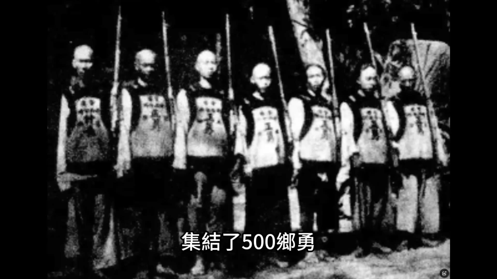
当赛尚阿到廣西鎮壓太平軍時，聽聞江忠源的威名後便點名要他率領部隊支援。江忠源集结500湘勇，出湖南至廣西作戰，這支地方團練被稱為「楚勇」。
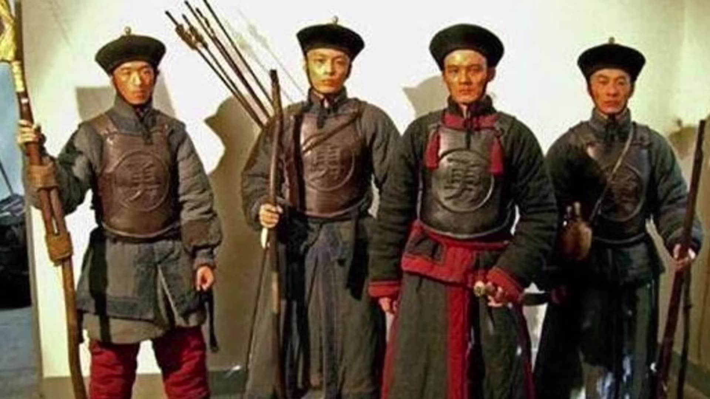
勇營士兵與八旗兵和綠營兵相比有很大的不同，他們是地方子弟軍費來自於地方鄉紳集資打仗也是為了保卫家鄉所以團結且拼命。江忠源的楚勇就是這種模式下的產物，儘管只有500人卻具有強大的戰鬥力。
这支队伍在湖南、廣西作戰時受副都統烏蘭泰指揮，然而乌兰泰和向榮之間存在矛盾導致兩人互不配合。随着矛盾升级，江忠源逐渐获得了独立指挥权，并通过多次实战总结了太平军的战略战术，发现其薄弱点在于东路方向。

江忠源預判了太平軍行軍路徑並在蓑衣渡設伏以截斷其去路。此戰中，他把戰略計劃上報給賽尚阿，但未獲重視。

江忠源在東岸布置埋伏，然而和春率领的绿营兵未予配合，只靠楚勇孤军奋战。太平军由冯云山指挥探查地形时决定采取杨秀清建议，全军水陆并进，然而此举恰中了江忠源的算计。

蓑衣渡地处湘江转弯处，水流湍急，江忠源布置了巨木障碍及岸上火炮、弓箭手等防御措施，当太平军的船队来到此处时毫无防备直接被阻截，最终在猛烈火力攻击下遭受重创。
此次设伏行动显示了江忠源卓越的战略眼光以及训练有素的地方武装力量对八旗绿营兵而言是新的挑战。
01:15:00
太平軍的船隊在蓑衣渡突然遭到攻擊，亂成一團，前面的船過不去後面的船又停不下來。相撞事故頻繁發生，不少船只被擊沉或自燃，造成嚴重損失和傷亡。楊秀清所率領的士兵試圖登陸西岸進行反擊，但最終還是被迫退回江中。在此期間，太平軍的另一位重要將領馮雲山在戰鬥中不幸被炮彈擊中身亡。江忠源率領僅不到一千人的楚勇與太平軍激烈交鋒，長達兩天兩夜之久，殲滅了數千名太平軍中最精銳的部隊。此期間和春並未派出援軍增援湘江東岸防線，導致該處空虛。最終太平軍從東岸撤退，損失慘重。
這場蓑衣渡戰役對太平天國影響深遠。首先，馮雲山被視為太平天國唯一的一位政治家，他的去世使組織失去了重要支撐；其次，太平軍在這次戰役中損失慘重，其最精銳部隊大半數被殲滅，導致新補充的非忠實信徒部隊加入後凝聚力下降。第三，在長沙城防備空虛之際，太平軍未能攻下此地，若當時長沙城被攻克，湘軍將無從建立；最後，江忠源以少勝多的事跡鼓勵了曾國藩等人另立新軍的想法。

太平軍在蓑衣渡戰敗後向連州撤退，在此休整和補充人手。他們通過宣傳吸引了大量貧苦百姓加入，並至少補充了五萬士兵。這支新隊伍士氣高昂，再度南下，先攻佔道州，然後沿湘水南進至桂陽、郴州等地。

太平軍與當地清軍發生激烈戰鬥，雙方在郴州陷入僵局。這時太平軍獲悉長沙防備空虛的消息，決定分兵攻打長沙。蕭朝貴自告奮勇帶領精銳部隊前去攻城。
當時湖南巡撫剛換人，新任的張亮基尚未到職，舊任駱秉章雖被撤職但仍駐守長沙負責防禦任務。此消彼長之間，太平軍獲得了進攻長沙的最佳機會。
01:20:01
讓蕭朝貴協助新來的巡撫張亮基防守長沙。當蕭朝貴從郴州向長沙進軍的時候，張亮基尚未到任，守衛長沙的重擔仍在駱秉章肩上。
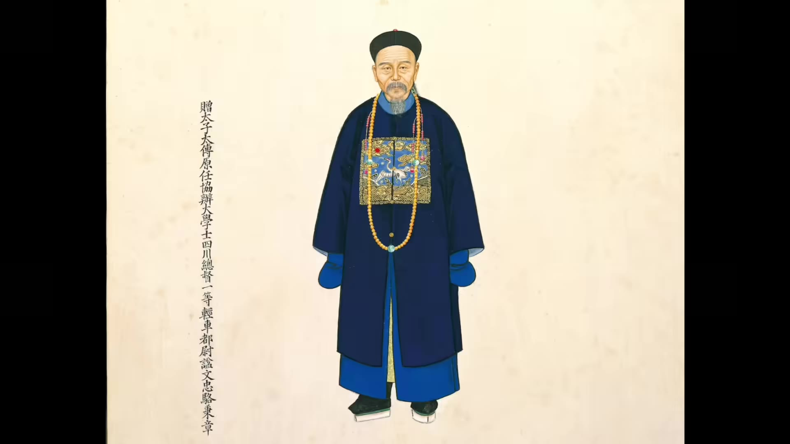
蕭朝貴率領部隊逼近長沙時，駱秉章收到太平軍即將來臨的消息後立即緊急部署防禦工作。由於多年未打仗，城牆年久失修甚至有個城門無法關閉，駱秉章遂帶領民工日夜趕工，勉強補修了壞掉的城牆與城門。長沙守軍由駱秉章臨時召集上千名團練組成，但面對如此大城，城牆上有四千多個城垛，兵力顯然不足*；且城內無人懂得軍事事務，導致指揮混亂。

蕭朝貴率領約兩千多人抵達長沙城下之後，清軍進擊方向為石馬鋪和新开铺。由於兵力不足，蕭朝貴只能集中力量攻打南面的幾個城門。此時長沙防禦指揮雖混亂，但其高大的城牆令太平軍短時間內難以攻陷。
在蕭朝貴率領部隊試圖突破長沙防禦時，他發現自己在指揮攻城方面缺乏經驗，尤其是面對如此大規模的城市。這導致他的攻擊計劃並不順利。一次守軍士兵於城牆上見到一名穿著華麗的男子，即開炮射擊，成功擊斃了蕭朝貴本人——此人正是「天兄耶穌」專用肉身，其死對太平軍士氣影響甚大。
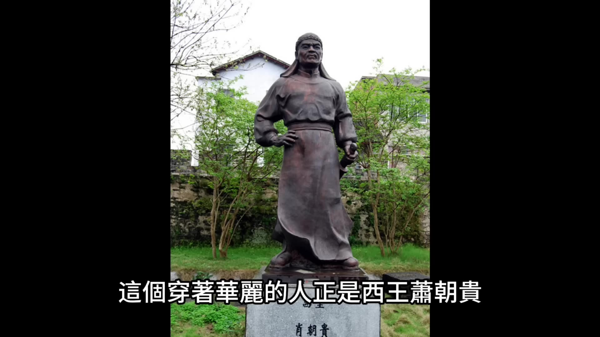
蕭朝貴陣亡後，太平軍被迫轉為防守狀態等待支援。消息傳回清廷，清軍各部隊紛紛增援長沙；至十月上旬，新任巡撫張亮基也抵達長沙。
到任後，張亮基即請左宗棠出山相助。當時左宗棠已40歲，早年曾考中舉人卻未成進士；他認為投身於八股文無濟於事，故自學水利、農耕等實用知識，在軍事地理方面亦有獨到見解。諸多名臣如陶澍和林則徐對左宗棠評價甚高，張亮基請其出山時獲得多方推薦。入幕後，左宗棠被授予全權指揮之責。

決定放棄永州和郴州兩大基地後，太平軍由南向北行進途中，在永州遭張國梁部伏擊，導致行軍受阻。用時約二十天才到達長沙；此間清軍援軍亦陸續抵達。據說太平軍號稱擁有十萬兵力，但實際上應有五萬人左右，其中能戰之士約兩萬；清軍方面則由官軍兩三萬和當地團練組成，總計四萬多人。

雙方在阿弥岭及周邊地區展開激烈攻防戰，歷時近一個多月；此間太平軍嘗試過包括挖地道爆破等多種進攻方式，但均未能成功攻克長沙。太平軍在廣西起義初期便已吸納了大量礦工和農民，其中包括楊秀清等人。
01:25:00
這些礦工的開山能力非常強，這種技能正好也適合挖地道。他們在挖好地道之後，在其中放置大量的火藥，然後將城牆炸開。這成為太平軍攻城的一個主要戰術。然而，在長沙城外挖掘地道時被左宗棠發現了。由於左宗棠研究過風水堪輿的學問，他搜羅盲人利用其卓越的聽覺來尋找地道的方向，隨後清軍進行破壞。

在阿彌嶺地區，太平軍共挖掘了十條地道，其中有七條被城內發現並破壞，但有三次成功爆炸。這些爆破將城牆炸開缺口，卻未能讓太平軍突破防守進入城中。從8月下旬至11月底，太平軍圍攻長沙達81天，始終無法成功攻下城市，損失了西王蕭朝貴，士氣受挫，最後撤離。

從長沙撤圍之後，太平軍沿著湘江順流而下，攻佔寧鄉和益陽，並且在這些地區獲得大量民船補充艦隊。在岳陽進行反清宣傳後吸引了許多貧苦水手加入太平軍。他們重新建立起龐大的水師並獲得了火器補給，使得糧草、武器彈藥全部補充充足，士氣恢復高昂。

太平軍抵達武昌後，先攻佔漢陽與漢口兩座城市，並搭設兩座浮橋跨越長江，為進一步攻城做準備。當時守衛武昌的是湖北巡撫常大淳和湖北提督雙福，但他們只有8,000人的臨時拼湊軍隊，並且在戰略部署上犯了嚴重錯誤。

圍攻武昌時，太平軍再次使用他們擅長的挖掘地道策略，在文昌門下引爆大量炸藥炸開缺口。負責攻城的將領林鳳祥在每次攻勢中都派童子兵打頭陣，這種做法在太平天國常見。
此番描述以簡潔明了的方式概述了太平軍圍攻武昌期間的重要事件與戰術演變過程。
01:30:00
敢拼命、敢衝鋒的勇氣甚至比精銳老兵都要強。這個方法非常不人道，但洪秀全有一套理論來支撐他說的道理。據稱童子兵衝鋒之後若是生還就能坐享人間的小天堂；若是被殺死升天後還能坐大天堂。太平軍裡的童子兵信了這一套理論，都不惜性命地衝鋒，在武昌城外冲锋的時候就是陳玉成。
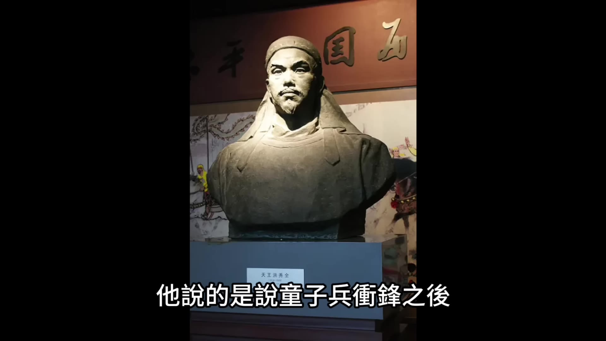
在1852年和1853年的歲月裡，太平軍發動了一系列攻勢。1月12日這一天，太平軍終於攻下了武昌城。太平軍進城之後頒布了幾項主要的詔令：官兵不留、百姓不傷，但對接受官兵投降一律殺掉；對於老百姓則是進行招撫。當時，清朝守將常大淳自殺身亡，雙福被抓捕，而原先駐紮在武昌城內的清廷官員全部被處決。這是太平天國攻陷的最大一座城市，也是它們第一次在如此規模的城市中實踐自己的制度。

我們先談一下他們在武昌城做的最主要兩件事情：第一是斂財，主要是為了擴充聖庫並籌措軍餉。太平軍進城之後先是查抄了官府的金庫，沒收官銀一百餘萬兩；接著又搶劫富戶楊秀清給這種行為取了一個名稱叫做「打先鋒」。過程是首先找到平民讓他們仇恨富人，再通過平民帶路去抓富人，之後通過刑訊逼供把所有財產搜刮一空。
對於普通老百姓則實行進貢政策——即讓百姓自願上交錢財、茶米油鹽等物品；達到一定數量後就頒發執照，有執照的人就可以不用當兵。不過雖然是自願進貢，但不進貢便會被強制徵兵，而即使進貢不足也會被征募入伍。因此，老百姓只能將自己家裡的財產盡量拿出來供奉。
太平天國還有一套徵兵的流程：第一步叫做「講道理」，類似於後來的政治動員和思想教育；他們會把居民集中到一個空曠場地開始宣講太平天國的制度以及拜上帝教的信仰。第二步痛罵滿清對漢人的壓迫和官員腐敗欺壓百姓。第三步則是讓大家都入伍，不從軍就等同於妖魔或其幫凶。
這套動員方式事實上屬於半動員半強制性，在武昌、漢陽等地推行後，他們將三鎮居民都編入了軍隊。太平軍進入武昌城之前有十萬人，待了一個月出武昌時已經成了五十萬大軍；其中真正能打仗的不過只有十萬人，其他多是隨軍家屬或完全沒有訓練的新兵。在這十万士兵中，從廣西出來的老兵和湖南早期加入的精銳老兵只剩兩三萬。
太平天國還把軍營管理制度直接推廣到全城，將武昌變為大軍營。他們拆散了家庭，男人女人分開住入不同軍營，老人孩子住在別館；25人一組由士兵監管過軍營生活，每日有聖庫撥給口糧，一切房屋床鋪等都由軍方統一調配。這樣的制度也意味著不需要商業活動：他們廢除了城內所有商業貿易，商戶的貨物都被沒收了。
對於佛教道教僧侶來說，太平天國將其定義為「妖」；寺廟裡的神像被視為「死妖」，而清朝統治者則被稱作「清妖」。所有這些「生妖」與「清妖」都成了要消滅對象：他們勒令和尚道士尼姑還俗，禁止穿戴袈裟道冠等服飾；對於不服從的人一律誅殺；太平軍路過的地區寺院全遭破壞，寺廟田產也收歸國有。
此外，在太平天國控制區內，民間祭祖也不被允許了，他們稱之為「拜邪神」並堅決禁止。強制拆除宗祠牌位、搗毀祖墳石碑，將其改造成拜上帝教的儀式。如此這般地推行了一系列政策。
好了，今天的內容就講到這裡，下期節目我們將會繼續談論太平天國定都天京之後的事宜。
01:35:01
我開通了「1921-1945年的專題歷史課程』有興趣的朋友歡迎點擊影片下方鏈接瞭解歡迎大家點贊關注
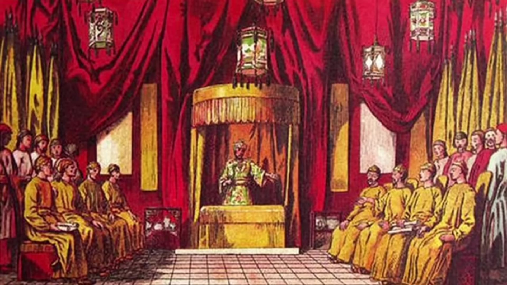
1853年2月4日，太平天國在武昌過了個新年，這是他們天歷的第二個新年。他們在這座大城舉行了隆重的慶祝活動，隨後洪秀全、楊秀清決定放棄武昌，沿長江而下進攻南京。

慶祝之後，洪秀全、楊秀清決定放棄武昌沿長江而下，進攻他們的目標南京。他們率領著50萬大軍帶著大量的金銀珠寶向南京挺進，在離開武昌的時候，太平軍的船隊已經超過了一萬艘，完全控制了長江制權。
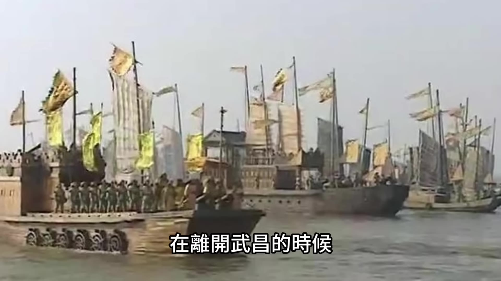
隨後，太平軍的陸軍先行開道，然後再用水師搭載大部隊由林鳳祥、李開芳、胡以晃等將領率領陸軍夾岸護衛。洪秀全、楊秀清、韋昌輝、石達開等統帥則率領水師往下游行進。此時，清軍和太平軍打了這麼長時間的仗，在人數上一直都是清軍佔優勢，現在形勢反轉了，已經遠遠超過了沿途的清軍，沿途的清軍看到太平軍之後直接望風而逃。清軍的接連失敗讓咸豐非常生氣。
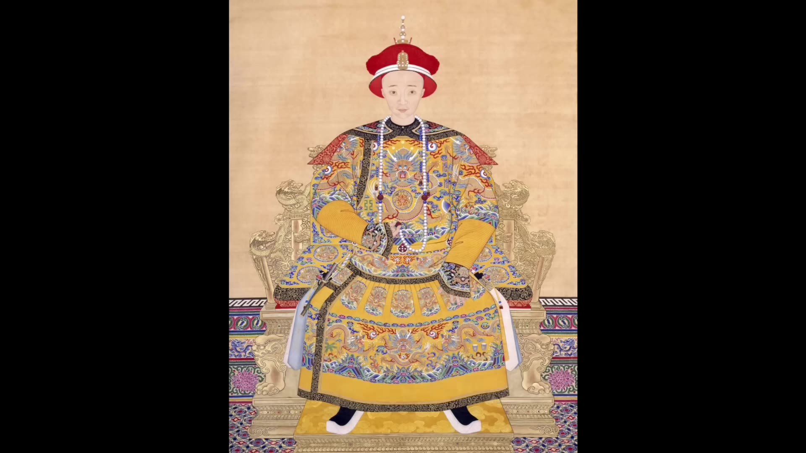
咸豐認為是前方的將帥不背用命，在湖南戰場失利之後，咸豐換下了賽尚阿，然後任命兩廣總督徐廣縉接任欽差大臣。他選擇徐廣縉的原因是他剛剛在廣東鎮壓天地會很有成效。但是誰知道呢，徐廣縉也不頂用，他受命之後一直在拖延沒有任何行動，導致湖北戰場失敗，湖北失敗之後咸豐又大怒，他把徐廣縉給革職查辦。

讓其成為兩湖地區的最高軍政長官。咸豐又把琦善給招回來，琦善是在鴉片戰爭的時候被革職發配到吉林，咸豐想起來琦善還是有能力的。

他把琦善給招回來任命為河南巡撫，然後也授命他為欽差大臣，讓他帶兵南下防堵太平軍。咸豐還安排了第三個欽差大臣，這位是陸建瀛。

陸建瀛是兩江總督，咸豐也授命他為欽差大臣，讓他帶兵西進防堵太平軍。咸豐一下子受命了三個欽差大臣，他是想讓這三路大軍配合合圍太平軍，但是咸豐的想法還是過於簡單了，因為三個欽差大臣又是各有各的心思。

向榮跟太平軍交手三年是知道對手的厲害，現在太平軍擴充了這麼多兵馬他根本就不想跟太平軍硬打，採取了一個很滑頭的做法——「等距離追擊」，就是跟在太平軍的後面追，不要太靠前也不能太落後，顯示出自己很努力實際上卻不真打。

琦善呢？他負責河南的防務，太平軍並沒有往北走所以他也沒去招惹太平軍，採用的戰術是在江北隨著太平軍東進『平行監視』，就相當於是遠距離護送當然也沒真打。

向榮和琦善都虛著急的是陸建瀛，因為太平軍是朝著陸建瀛的方向去的。陸建瀛受命當欽差大臣之後他率領5,000兵力從南京到達九江打算在九江防堵太平軍，老鼠峽是長江中游的一個軍事要地，但是3,000兵力和太平軍完全不成比例，太平軍到了之後只用一個晚上就擊敗了老鼠峽的守軍。陸建瀛看到前方戰敗連夜逃跑返回南京。

所以安慶、銅陵蕪湖的守軍都是聞風而逃，南昌太平軍東進一帆風順如入無人之境直接到達南京城下，陸建瀛逃回南京之後江寧將軍祥厚力勸他再返回上游督戰以穩定軍心。但是陸建瀛當時已經是嚇破了膽，在總督府裡面，陸建瀛的做法讓咸豐氣的暴跳如雷。
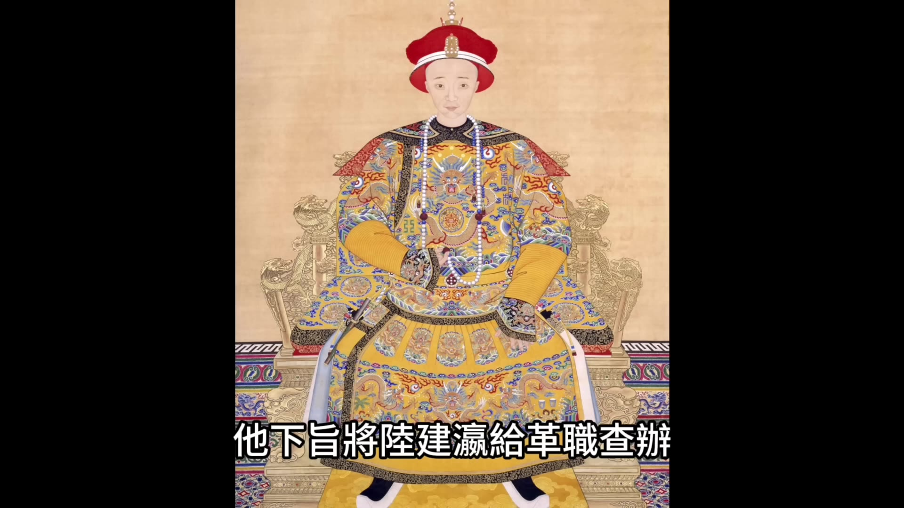
所以他下旨將陸建瀛革職查辦並且送到刑部治罪，然後授命江寧將軍祥厚為欽差大臣兼兩江總督，讓他負責南京城的防禦。
01:40:00
咸豐皇帝的奏折在1853年3月8日太平軍前鋒開始攻打南京時已經無法送達了。太平軍沿著水陸路線進攻，逐步逼近這座城市，其水陸兩路進軍的路徑在地圖上清晰可見（

）。南京城牆高大堅固，在城外也有大量的營壘。然而，城內的清軍官員互相猜疑、勾心鬥角，無法協力守城。加之天地會在城內散佈謠言，聲稱有很多太平軍奸細匿藏於此，使人心惶惶，城內官兵也因這流言而彼此提防，防守意志逐漸瓦解。
楊秀清在外指揮攻城，太平軍通過炮火轟擊以及挖地道爆破等方法不斷攻佔南京的防御據點。最終在3月19日，太平軍成功攻克南京（

），城內不管是革職未上任的陸建瀛還是未到任的祥厚，都被處決。雖然南京外城被攻破，但內城仍堅守著。內城原本為明朝皇宮舊址，城牆十分堅固且防禦工事完備，旗兵堅決抵抗太平軍。然而，由於人數龐大的太平軍的進攻以及內城居民參與戰鬥導致旗兵傷亡慘重，最終內城失守，內城中的兩萬多旗人均被屠殺。
從廣西金田起義到攻克南京僅用了不到三年時間，這期間太平軍經歷了無數次戰役，在實戰中成長為一支非常善戰的軍隊。然而，洪秀全建號稱王的做法並非聰明之舉，因為當時全國多處農民起義，清廷本來可以分散其力量去打擊其他反叛勢力，而洪秀全過早地宣布自己為天王使得清廷把所有精力集中到了太平軍身上。另外，太平天國在佔領大城市時採取的不是長期治理的方式而是掠奪資源後撤退的做法，這種做法令當地百姓反感。太平軍雖有優異的武力表現，但在政治和治民方面存在嚴重缺陷，缺少有效的文官體系及大政治家來進行長遠的戰略規劃與管理。
太平天國這一時期可稱為「第一階段」，其得失分析顯示出他們在軍事上的輝煌成就背後隱藏著許多長期無法解決的政治問題。
01:45:00
但是他的主要精力也都放在打仗上了，沒有放在治民上，也沒有成為一個政治家。意識形態宣傳轉變跟不上局勢是一個很大的問題。最早太平軍的意識形態是靠宗教凝聚人心，但隨著出了廣西地區，這種方法就難以繼續發揮作用了。人們很容易相信宗教，但在湖南尤其是長江流域，靠宗教就不那麼奏效了。
太平天國也意識到這一點，開始轉向打民族主義的大旗，鼓吹「驅除韃虜、恢復神州」的理念，強調滿人欺壓漢人，我們漢人需要反抗。然而，太平軍的宗教信仰和他們宣揚的代表漢人的形象卻格格不入。因為洪秀全掃蕩一切民間信仰，在佔領區內百姓必須放棄傳統文化，無論是儒家、道教還是佛教都不允許，只能拜上帝，而這個上帝又是從西方學來的，並不是漢人原有的東西。
這種做法使得太平軍在宣傳上未能成功轉型。對比伊斯蘭教早期擴張時，默罕默德就相對靈活得多，他允許非穆斯林臣民在繳稅後仍可保持自己的信仰，這樣便消除了很多反對力量，幫助其先穩固地盤，再慢慢進行同化。若洪秀全能允許漢人保留自己的信仰，或許他的民族主義宣傳會更為成功。然而他摧毁一切民間信仰的做法只能是越來越失去人心。
曾國藩後來就利用這點打出了「衛道」的大旗，定義太平軍為粵匪、「洋教邪教」的代表，而非中華正統漢人文化的繼承者。在意識形態上，太平天國完全敗北，被曾國藩擊中要害。
此外，太平天國之所以缺乏政治家，也與他們摧毀儒家文化反對傳統漢族精英有關。江南地區有很多士大夫都是大政治家，但因為太平軍反對儒家文化，所以這些士大夫都不可能去幫助太平軍，反而選擇了支持清朝統治。沒有士大夫的支持，太平天國起義缺乏組織和戰略提升，農民的力量也就難以整合。
第三方面，我們來談一下太平天國在軍事上的成功。他們的具體表現非常出色，雖然犯了不少錯誤卻仍能一路突圍變被動為主動，這也是他們成功的關鍵原因。當時清朝派往對抗太平軍的主帥多是文人或油滑將領，沒有真正的帥才，而八旗兵和綠營兵更是腐爛透了。這些問題在之前的《清朝軍隊的真相》中有詳細介紹。
此外，太平軍建立龐大的水師也是一大成功，在長江流域完全控制了制江權，直到曾國藩的湘軍建起自己的水師才有所反擊。太平軍攻城技術也在後期大大提高，最擅長挖地道爆破，多個方向同時爆破讓威力巨大，這也是在長沙累積經驗得來的方法。
01:50:01
他們成功爆破了城門，但未能攻入敵軍駐地。太平軍總結經驗，調整戰術，讓爆破與攻城更加協調順暢。這些都是太平軍軍事上的成功。
接下來談論第四方面——太平軍對清軍的政策。太平軍將清廷人員視為妖魔，目標是斬妖除魔。他們對清軍極端殘酷，尤其是旗人，一律格殺勿論，不容投降。這使得清朝官兵為了自保不得不奮力抵抗至最後一刻。當時清廷腐敗嚴重，許多官兵都不願為朝廷效命。若太平軍能接受降兵，不僅可快速壯大己方力量，也能減少不必要的流血。
與此相比，辛亥革命時期，革命黨人先前通過宣傳將滿洲人污名化，但實際起義後卻對他們表現出寬容態度，在大部分地區實現了和平過渡。這種從痛罵到包容的轉變大大減少了殺戮並加快了革命進程。若太平軍能及時調整政策，或許無需太多戰鬥便能使許多官兵倒戈。
這四個方面總結了太平軍前期的成功與失誤。下面我們來看看他們進入南京後的情況：
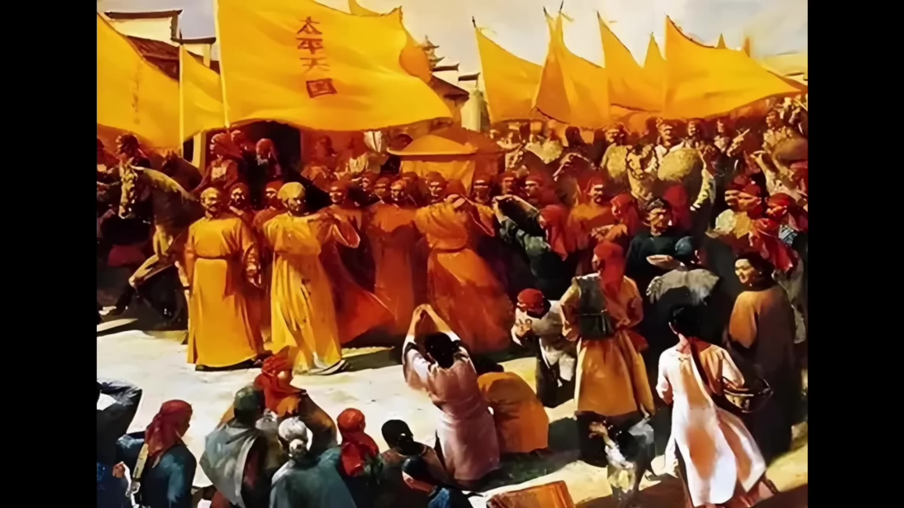
1853年3月28日，洪秀全率領大軍入駐南京，城中百姓跪地迎接。進入南京後，太平軍展開了政權建設、社會管理和軍事擴張等多方面工作。
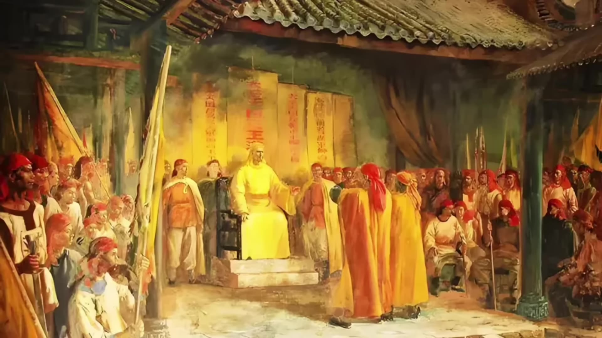
洪秀全宣佈定都南京，將其改名為「天京」，並正式宣告此地是他們夢寐以求的天堂。太平天國制定嚴格禮制，確立天王至高無上的地位，並且設定朝廷君臣秩序。
楊秀清作為軍師執政東王府成為實際行政中樞，頒布了《天朝田畝制度》。該文件主張土地公有、平均分配等內容。在社會管理方面，南京城被軍事化管理，所有家庭都被拆散，財產沒收，男人編入男營，少數機靈美貌的女性被挑選進入各王府擔任女官和侍女，善於織錦的手藝人則被編入錦繡營。此外，城內廢除工商業，工匠們被分配到不同的營地工作，而老弱病殘者則被安排在牌尾館做簡單粗活。
關於土地政策，《天朝田畝制度》要求徹底廢除土地私有制，建立一切財產公有的制度，但農民除了留一小部分口糧外，其他所有東西包括糧食、布匹和牲畜均需上繳國庫，由國家統一分配。這種制度雖然詳細，卻無法有效執行，因為農民失去了生產積極性，國庫也因此缺糧。因此太平天國不久後恢復了私有制及原有的賦稅制度。
在南京的政權建設中，洪秀全大肆擴建其王宮府邸，消耗了大量的物力人力資源。其他幾個王看到洪秀全的作風，也開始修建自己的王府，並且私自挪用聖庫金額，官員們因此迅速腐化。基層管理中的兩司馬更是克扣物資、虛報賬目，導致民眾隱匿財產，進一步削弱了聖庫的財源。

01:55:00
老百姓對太平天國制度的不滿情緒隨著時間日益強烈。自1854年後，聖庫制度雖未正式廢除，但實際上已名存實亡。「男女分營」的規定亦隨之被廢止，各個王可以擁有眾多妻妾。（此處插入照片）
這種政策的雙重標準進一步激起民間及官員的強烈不滿，尤其由於有官員因與妻子私會而遭受懲罰，民怨更加沸騰，以致百姓頻繁逃跑。直至1855年初，楊秀清宣佈允許男女婚配並恢復家庭生活，但《天朝田畝制度》作為一個脫離現實的空想方案，始終未能實現其初衷。
轉而談論太平天國的科舉考試。洪秀全對傳統科舉有著極強烈的情結，他曾四次參加科舉卻無緣功名，豪言「待我開科取天下士」。建國後，他確實推行了科舉制度，並高度重視此事。太平天國在永安時期便舉辦了首次科舉考試，當時城內仍處於清軍圍攻之中，這顯示出洪秀全對科舉的執著。
然而，首屆科舉考試相當尷尬，因讀書人早已逃散一空，剩下的多為未經教育的老百姓和士兵。太平天國規定所有百姓必須編入軍營，故首次考試僅有內部士兵參加，南王馮雲山榮獲狀元殊榮。
當太平天國定都南京後，條件改善，洪秀全更進一步實現其宏願，確立了由鄉試、縣試、郡試、省試和京試組成的完整科舉體系。每年有四次「京試」，分別在天王與東王生日時進行。
然而，1856年天京事變後，「北試」「翼試」及「東試」被取消，僅剩「天試」一項。這期間，真正的讀書人大多已逃逸，留下的多數選擇參加考試以期獲得功名，但發現太平天國的考試教材與傳統四書五經大相徑庭。
洪秀全自編了一批基於拜上帝教教義的科舉考試教材，包括《舊遺詔聖書》、《新遺詔聖書》及《天條書》，這些成為考試核心內容。面對如此迥異的題材，傳統讀書人難以應對，且頻繁因答題不符合拜上帝教要求而被處決。
楊秀清為迫使所有人參加考試，甚至下達強制命令，不來者則直接斬首。即便如此，仍不乏缺考情況發生，常見考試場次不足的現象。
例如1853年「天試」命題考驗對耶穌受難神學的理解；同年的「東試」由楊秀清出題，要求批評世俗理論並高誦楊氏尊貴，此類題目令舊讀書人難以作答。（此處插入照片）
太平天國的科舉考試最終成為一個巨大的笑話，每年中舉者數量驚人，如某年舉人的名額居然達900人之多。然而，實際上通過這些非傳統考核選拔出的人才並未顯示出過人之處，而更多是優秀工匠被提拔為官員。
因此，清朝詩人以諷刺方式譯評太平天國科舉制度的荒誕與失敗。
02:00:03
大家好，今天我們來講太平天國的北伐。在太平天國定都南京後，在軍事方面展開了兩大行動：一是向北出兵攻打北京，二是沿著長江往上游進攻，也就是西征。

北伐的目的很明確：推翻清朝政權，因此太平天國派出一支軍隊前往北方攻打北京；而西征則是為了獲得糧食補給，因為當太平天國進駐南京後，隨著不斷擴充的軍隊，糧食短缺成為了最大的問題。解決糧食問題的第一個選擇就是西部地區如安徽、江西等地，這些地方都是產糧大省。此外，通過西征還可以調動包圍南京的清軍，尋找機會予以消滅。
這兩次軍事行動中我們先來重點講解北伐。太平天國在北伐中的兩個問題顯而易見：一是派出的兵力僅有2萬人，二是派出的主要將領是林鳳祥和李開芳。要知道當時太平天國進駐南京時已經有50萬軍隊，這兩名將領雖然英勇善戰但並非太平軍內最為出色的統帥；北伐這樣的大事至少應當派王級別的將領擔任主帥。
楊秀清負責軍事工作，他在戰略上已積累了豐富經驗。要理解他為什麼會做出這樣的決定，我們必須從楊秀清的角度來看當時的局面：保衛天京的安全是首要任務，而這需要足夠的兵力對抗江南大營和江北大營；其次是解決糧食短缺問題，因此西征被排在戰略首位；第三才是北伐。

太平天國的兵力雖然總數達到50萬人，但大多數是來自江南地區的新兵，這些新兵需要經過訓練才能使用。楊秀清有一套標準的練兵流程，不僅包括身體上的訓練，還重點強調思想上的轉化，比如傳播拜上帝教的教義和增加對清朝的仇恨感。當新兵被成功轉化為忠實信徒後，才會被派上戰場。
以上是太平天國北伐及其軍事行動的一個概述，我們將在下一集進一步探討其具體過程與影響。
02:05:02
當太平天國於天京定都時，其50萬大軍中大部分為新招募的士兵需要時間訓練與轉化，只有十幾萬老兵可以立即投入戰場。這是楊秀清精兵策略的一部分，讓太平軍在對抗清軍時能夠憑著這些精銳部隊取得以少勝多的戰果。這十多萬名精兵中，4萬用於保衛天京，2萬用於北伐，剩餘則被派往西征。
楊秀清為什麼僅派出兩萬人進行北伐？數量雖看似偏少，但考慮到太平軍從廣西出發時便是兩萬人，在沿途不斷收編天地會及其他義軍後，這些部隊的規模可以隨著進展而擴大。此外，北方也有天地會和捻軍等可收編的力量存在，因此兩萬精兵可作為種子部隊來發展軍力。
從事實來看，這兩萬人確實一度壯大到一定規模，體現了楊秀清認為北伐有成功的可能，儘管這是一次冒險的軍事行動。主將林鳳祥與李開芳未被派往那些首屈一指的大將，因為他們需要留守天京和西征兩湖更重要的戰略位置。因此，北伐雖然是在戰略上的冒險，但並非沒有機會達成目標。
楊秀清的整體戰略是在鞏固天京的情況下以偏師北伐，用主力進行西征；前者可以牽制北方的清軍，減輕天京周邊的軍事壓力，後者則可搶奪糧食、拓展根據地。這一策略既具冒險性又未將所有家當賭上。

太平軍北伐的具體過程開始於1853年5月六安地區，林鳳祥與李開芳帶領兩萬太平軍渡過長江抵達浦口。他們兵分兩路：一路主力進入安徽境內準備攻佔滁州；另一路由東北方向攻打六合縣。六合縣當時是交通要道且位於長江北岸，控制該地可確保北伐軍的後方安全。
六合縣知縣溫紹原半年前就開始預防太平軍的進攻，訓練出一支數千人的團練隊伍來守衛家鄉；這些當地志願兵士氣高昂、戰鬥力強。在兩萬太平軍抵達時，他們與縣城內的溫紹原部隊交手，雖初期稍佔上風但最終遭到重創，並被迫撤退至城內。

當太平軍在六合縣遭到阻擊後，他們轉而撤退準備攻打其他目標；然而，在城南民房做飯時卻引發了埋伏炸藥的爆炸，造成大量傷亡。隨後溫紹原率領部隊主動出擊，將來犯之敵幾乎全部殲滅。得知六合縣戰況的林鳳祥親自帶領一支救援部隊前來支援撤退的友軍，卻也中了埋伏，損失慘重。
林鳳祥見六合縣難以攻克，且不想延誤行軍進度，便被迫放棄繼續攻打該地。此役讓太平軍北伐行動遭受嚴重打擊。
02:10:00
追上了李開芳的部隊進入安徽，太平軍在六合縣遭遇了北伐出征以來第一次敗仗，不僅損失慘重而且還延誤了進度。林鳳祥和李開芳從天京出發的時候，楊秀清給他們的命令是要速度行軍。
因此對他們來說，行軍速度非常重要。在六合縣耽誤了進度，就對他們非常不利。但是接下來，太平軍的行軍就很順利。他們輕易攻克了信阳州後進入安徽境內，第一座城池便是滁州。攻克滁州之後，太平軍一路高歌猛進。

他們來到了歸德——一座重要的軍事要地。過了歸德之後就是劉家口，在這裡可以渡過黃河。清軍在歸德的守將是陸應谷，他率領5,000部隊在黃河渡口與北伐軍展開血戰，雖然最後戰敗，但提前把劉家口的船隻都給毀了，所以太平軍未能成功渡過黄河。他們只好沿著黃河北上，一路攻克了寧陵。
然後進佔了另一個重要的軍事要地朱仙鎮，在這裡打下的地區有很多黃河渡口，但是由於沒有足夠的船隻，太平軍無法渡河。最後走到黃河南岸的鞏縣，這才成功渡過黃河。在鞏縣渡河之後，他們需要繼續北上，而下一重鎮是懷慶。太平軍以2萬大軍包圍了懷慶，打算快速攻佔該城然後繼續進發，但出乎意料地遇到了巨大的阻力。

懷慶是一座北方的重要城鎮，城牆堅固高達四文（丈），守將是余炳燾，他是一名能力很強的官員，深受百姓愛戴。他在清軍人數不足的情況下，進行了充分的動員工作，附近有6,000多名壯丁主動站出來幫助守城，懷慶的守軍在準備好拼死守城後迎接太平軍的攻勢。

林鳳祥和李開芳多次強攻懷慶城，都被城上的守軍擊退。他們決定採用挖地道爆破的方式攻打城池，這是太平軍最常用的法寶之一。他們一邊不斷攻城，一邊挖掘地道，在裡面埋設炸藥把城牆炸垮後衝入城內，這通常都能成功。然而在懷慶東門的第一次爆破後，缺口被余師燾率領的守軍拼死堵住，太平軍未能入城。
第二次爆炸同樣是在東門炸出缺口，攻城部隊順利地衝到城裡，但城內的鄉勇越戰越勇，最終擊退了進攻的太平軍。雙方在城內展開巷戰，攻城的太平軍全都被殲滅，守軍又把缺口給堵上了。
林鳳祥決定改用兩面爆破的方式，在懷慶東門和西門同時挖地道，一舉成功引爆，但令人驚訝的是，西門的炸彈成了啞彈。東門雖然成功爆炸了城牆被炸出缺口，又被守軍給堵住了。
經過多次攻城無果後，太平軍士氣受挫。而城內守軍的情況也不好，消耗很大。余師燾為補充兵力，把監獄裡的犯人放出來幫助清軍守城，其中一個叫做任隨成的高明人物對挖地道很有經驗，在城牆上眺望野草就可知道地道位置在哪，太平軍辛苦挖了20多條地道都被他識破。
02:15:00
北洋時期，太平軍在北方進攻時遭遇到重大挑戰。其中懷慶一役是典型例子，該地於1853年被林鳳祥率領的太平軍包圍了數週之久。城外的林鳳祥對清軍突然增援感到不解，氣憤不已。

此時，清廷在北方的兵力約有數十萬人，但他們缺乏大規模部隊的快速調動能力。八旗兵共有20萬，其中10萬京營駐守北京及其周邊地區，另10萬駐防營則分佈於全國各地的滿城中，主要負責監視綠營兵並維持地方穩定。綠營兵60萬人是清軍主力，散佈於各省以壓制盜匪及執行日常治安任務。
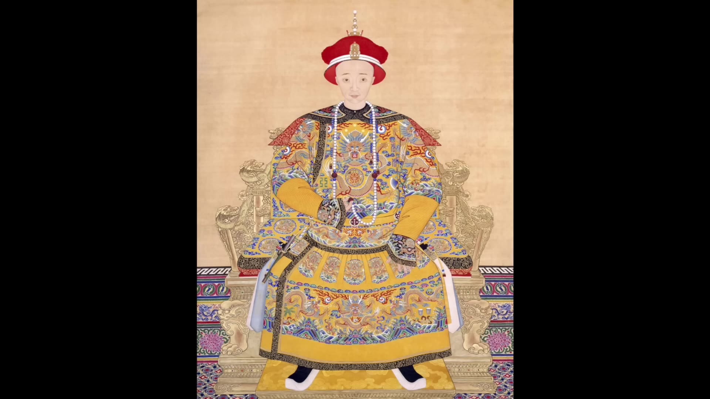
咸豐帝得知太平軍啟動北伐後顯得非常緊張，因此他迅速從河南、山東等北方多省抽調兵力前往前線。這些部隊分別來自盛京及各省，總計數萬人，均被派往懷慶等地以抵抗太平軍的進攻。

清軍以各個小股部隊尾隨而來，但未能對太平軍構成實質性的威脅。反而是地方官員組織的鄉勇團練，在六合縣及懷慶等地給太平軍帶來較大阻力。懷慶城外，林鳳祥率領的太平軍已陷入數週圍攻之困，隨著清軍增援部隊陸續抵達，形勢變得更加嚴峻。
在這張地圖上可以看見中間黑色圓圈標示著懷慶城，而紅色包圍線則代表了太平軍的陣地。綠色箭頭指示的是從各地趕來的清軍進攻路徑和駐紮位置，其總數約達兩萬人，在此由訥爾經額統領剿滅北伐太平軍。
隨著清軍增援部隊到達，原本以壓倒性優勢包圍懷慶城外的太平軍突然處於腹背受敵的局面。林鳳祥及其士兵迅速利用工兵技術挖掘壕溝和建立木城，僅用數日便築起一圈防禦工事。雙方隨即形成對峙狀態，在此期間，清軍雖擁有更多火炮但缺乏訓練和膽量，無法有效進攻太平軍陣地。
最終，由於太平軍長期圍困懷慶，未能按楊秀清所指示的避免與清軍糾纏的戰略，導致他們兵力不斷被分散削弱。咸豐帝嚴厲命令前線將領全力對抗太平軍，這使清軍即使士氣低落仍施壓於太平軍，使其被迫撤退。
02:20:00
因此，各路清軍的將領大力發動驅趕著這些清兵去攻打太平軍的營壘。太平軍在與清軍一次又一次對戰中消耗也很大，士氣越來越低落。

林鳳祥終於決定撤圍南不打懷慶了要突圍逃跑。當時清軍在太平軍的南、東北兩個方向都有駐軍，只有西面有漏洞，太平軍就往西突圍，成功進入山西地區。太平軍在淮慶這一戰損失慘重，突圍出來的時候只剩下四五千人，士氣低落；但他們進入的山西清軍防守卻是非常空虛，清軍的將領沒想到太平軍會進入山西按照正常的路線。

渡過黃河之後應該是走山東北上，如果是從懷慶走則是走彰德北上；走山西卻是繞遠路，所以清軍沒想到在山西布防且把山西的軍隊都調出去了。太平軍突圍時西面防守空虛，誤打誤撞進入山西，山西防守空虛，太平軍只用了20多天就連續攻克10多座城池。

從潞城、武安朱似鎮一路打進直隸州寧陵◎新鄭（1853.7.8）、推州寧陵（1853.7.8）。
太平軍在山西境內路過時，為了補充兵力裹挾了很多老百姓。當他們打到洪洞的時候，太平軍已經擴充至5萬人。很多資料裡面用的都是「裹挾」兩個字，意指老百姓是不自願的，被強行徵兵北伐。楊秀清打仗時也曾裹挾過老百姓，但他會花很長時間來訓練和轉化新兵直到他們成為信仰堅定的士兵才派上戰場；而林鳳祥和李開芳則沒有做這樣的轉化工作，直接裹挾著新兵上戰場就出現了很多問題。在河南境內渡過黃河之前，太平軍一度擴大到了將近10萬人，其中8萬是新兵，這些被裹挾的新兵一路上都有逃跑的，碰到跟清軍打仗有機會就會逃跑，在路上給太平軍搞破壞；例如渡過黃河的時候有一個被裹挾的新兵趁著清軍來攻擊一把火把船上的火藥都給燒毀了，太平軍剩下的火藥就更少了。因此在圍攻淮慶時，太平軍由於缺乏足夠的火藥而遲遲打不下懷慶。

太平軍進入到直隸境內之後攻打藁城（1855.3.19），歷晟济南大名八；從而直奔天津而去，大名八（1855.3.18）。在天京的楊秀清收到北伐軍打到直隸的消息後，他封林鳳祥為靖胡侯、李開芳為定胡侯。一個是「靖胡」，一個是「定胡」，從這個封號就能看出來楊秀清鼓勵他們一鼓作氣打下京城。
咸豐收到消息之後更加慌了，這次他不是憤怒而是感到恐懼。有資料記載了咸豐居然做了出逃的打算：有的官員建議往東北跑、有的官員建議往西跑遷都西安；咸豐最後還是強行打氣再一次換將，把訥爾經額從主帥的位置換下去，主帥換成了勝保。對勝保他也不放心，他又派出了科爾沁郡王僧格林沁。
新換的這兩個主將中，勝保是滿洲鑲白旗人，表現能力強但志大才疏實際能力不太行。例如，勝保號稱自己文武全才，在武方面特別崇拜岳飛為了表示學習岳飛的精神他也要在後背上刺「精忠報國」四個字；刺完「精忠」兩個字就不讓刺了，改用朱砂筆塗抹每過半個月上一次色。勝保就是這麼一個連刺字都忍不了疼的人上了戰場也是個花架子。
02:25:01
另外一位主將僧格林沁，他確實有真才實學。
僧格林沁雖然是皇室子弟，但他與其他的皇室子弟不同。到了清朝咸豐時期，皇室貴族已經式微，多數皇室子弟成為紈絝子弟。僧格林沁出生在科爾沁草原，但到他父親一代時，家族已十分貧困，靠放羊為生，家境艱難。僧格林沁從小就是一名牧童，直到十五歲才得到轉機：他的遠房族叔是科爾沁左翼後旗的郡王，無子嗣繼承爵位，聽聞僧格林沁勤奮好學、吃苦耐勞，便收他為養子。因此，僧格林沁一下子從牧童變成了郡王嗣子，而其養母又是道光皇帝的外甥女莊敬和碩公主，這使他的地位迅速提升。
— 僧格林沁勤奮好學，嚴格要求自己，沒有絲毫滿洲八旗貴族子弟的習氣，反而具備蒙古人的豪爽與勇猛。道光帝發現他後非常欣喜，在皇室之中培養這樣的人才。僧格林沁開始從御前大臣逐級升遷至鑲黃旗蒙古都統，繼承了養父爵位。咸豐帝此次派他出征，寄予厚望。

勝保從山西一路追擊太平軍至良馬砲花泊，僧格林沁則從京師出發在天津方面堵截太平軍；此時期太平軍已逼近天津門戶滄州。滄州知府沈如潮組織了3,000人的團練隊伍防禦。

太平軍攻滄州時適逢大霧天氣，雙方都不敢輕舉妄動；沈如潮利用對當地地形熟悉主動出擊，令太平軍吃敗仗損失慘重。後林鳳祥重整旗鼓率部隊再戰，卻又被沈如潮的火藥陣炸傷了許多人。

雖然最終滄州還是被太平軍攻破，但因實力相差懸殊，沈如潮的團練僅有3,000人對抗超過5萬人的太平軍，滄州城失守後林鳳祥下令屠城；然而這次屠殺不僅殘暴，也傷害了太平軍的聲譽。

攻克滄州後，太平軍直逼天津；然而天津守衛堅固成功擊退了太平軍的第一波進攻，而此時的太平軍已經傷痕累累、士氣低落，選擇退往靜海和獨流防守。

在靜海與獨流困守兩個多月後，太平軍被迫撤退至河間束城鎮，一個月後又進一步撤退至阜城等待救援。不久林鳳祥收到楊秀清派來援軍的消息，決定留在阜城不再南撤。
1854年5月29日至1856年3月17日之間，僧格林沁與勝保分別從不同方向夾擊太平軍，在北方地區形成嚴密的包圍圈。
02:30:01
隆平於1854年5月28日，楊秀清派出援軍支援戰場。然而，這些援軍在途中被清軍擊退，未能與林鳳祥及李開芳會合。這反而令林鳳祥陷入困境，失去突圍的最佳時機並士氣受挫。如果沒有援軍的期盼，林鳳祥或許能更早地拼死一搏逃脫。

李開芳持續向南突圍，但殘兵敗將的情況使其難以支撐。在連鎮時林鳳祥被俘，在馮官屯時李開芳被捕。兩位主將都被押解到北京斬首，太平軍的北伐最終失敗。清軍方面，勝保和僧格林沁作為主要指揮官，他們的命运也截然不同：咸豐帝革去了勝保的職務並問罪；而僧格林沁因鎮壓太平軍有功被封為親王且世襲罔替。
這份殊榮在清朝罕見，通常親王的爵位只能傳承一代。然而，對於開國元勳，清朝特許他們的爵位可以世代相傳，稱為「鐵帽子王」。僧格林沁作為蒙古貴族被封此殊榮，顯示了咸豐帝對其戰績的高度肯定。
太平軍北伐失敗後，楊秀清於1854年發動西征以補救損失並確保天京的安全。此次行動的主將賴漢英率領水師首攻江西南昌。他被封為夏官副丞相，相當於兵部第三把手。

賴漢英的任務是打開南方戰略要地並獲取糧食補給，但由於楊秀清權力壟斷，官職名義與實際權力脫節。此外，太平軍在江南大營遭遇強烈抵抗。

清朝在此布下的江南大營和江北大營雖然包圍了天京，但並未能成功奪回此地。
02:35:00
看起來，清軍對於天京有著威脅性的勢力，但是他們卻不敢真正攻擊天京。圖中顯示了天京西南郊的營壘分布情況。江南大營和江北大營合計兵力約35,000人，遠低於太平軍的實力，而且清軍缺乏出色的主將。江南大營由向榮統領，他算是當時清軍中最能讓大家放心的一員武將。然而，由於向榮的部隊是由湖南、四川貴州等地臨時抽調而來的不同系統，指揮起來並不順暢。況且，大部分士兵戰鬥力低下，往往一看到敵人就逃跑了。因此，向榮只能採取保守策略，深挖壕溝，高築營壘以保護自己軍隊的基地。

在這期間，向榮手下有一名能打的將領張國梁。他是廣西天地會前首領之一，接受朝廷招安後帶領一批原屬天地會的手下組成「捷勇」部隊，協助鎮壓太平軍並取得多場勝利。
賴漢英則率領著一支強大的水師突破了江南大營的包圍圈，因為他主要採取水路作戰，而這正好發揮了太平軍水師優於清軍水師的長處。賴漢英帶領約一萬名精銳部隊順著長江一路攻克安庆並進入江西境內，直指南昌。

當時守衛南昌的江 西巡撫張芾低估了賴漢英攻勢的速度與力量，直到敵軍抵達城下才恍然大悟自己被誤導了。他急向朝廷求援並得到了曾天養部和石達開督師的支援。
江忠源恰好在江西境內，奉命率領楚勇增援南昌，並接手指揮權；這使得張芾可以安心地依靠江忠源。此外，來自湖南和湖北的援軍也陸續到達，其中江忠淑帶來約兩千名訓練有素的楚勇，而羅澤南則率領一千六百名湘勇增援南昌。

這些援軍加上江南大營派遣的部分部隊總計約有六七千人，他們的到來大大增強了南昌的防禦力量。
02:40:00
隨著援軍的到達，南昌守軍總兵力達到約12,000人。然而與太平軍相比，這支守軍顯然仍處於劣勢，賴漢英指揮下的太平軍首鋒軍就擁有1萬人，後續大部隊更達2萬之多。在南昌的防守力量中，江忠源率領的楚勇和羅澤南統帥的湘勇具有較強的戰鬥力，這兩支軍隊合計約4,000人，其餘綠營兵則幾乎不堪一擊。太平軍方面還擁有多位善戰將領如曾天養、韋俊、林啓榮及石鳳魁，相比之下，南昌守軍的實力明顯不足。

為應對太平軍的強大壓力，江忠源下令燒毀南昌周邊三里範圍內的所有民房和寺廟以防止敵人利用建築物挖地道攻城。其中包括著名的滕王閣也在這場焚燼中被摧毀了，這一舉動讓江忠源在士林中的聲譽受到很大影響，然而從守城的角度來看，這種做法卻是必要的防禦措施。
憑藉著其水戰專家的背景，江忠源還在江邊佈置了多處炮台和壕溝並埋伏數百楚勇於登岸點，以便斷絕太平軍步兵與水師之間的聯繫。他的同僚郭嵩燾也參與其中協助防禦。

當太平軍抵達南昌城下時，江忠源派出大將李光寬率領楚勇主動出擊對抗曾天養的2,000名太平軍。儘管以少勝多，楚勇最終在後撤途中被伏擊，導致李光寬陣亡且全軍覆沒，但他們也殺傷了1,000多名敵人，這令守城清軍士氣大振。

面對攻勢猛烈的太平軍，江忠源採取多種手段來應對，包括預測敵方可能挖掘地道的路線並提前設置防禦工事，以至於當太平軍在德勝門外挖通地道準備爆破時被快速堵截。

太平軍隨後調整策略，改用兩次起爆法並加大爆炸規模試圖突破防線。然而江忠源始終能夠迅速反應，將損失控制在最低限度內。即使面對多次爆破和火攻的挑戰，他的部隊依舊能穩固城牆並將進犯之敵擊退。
從5月20日雙方首次交鋒到6月底，太平軍連續一個月對南昌發動猛攻卻毫無建樹。韋俊率領的兩萬大軍加入後，也未能撼動江忠源堅固的防禦體系，最終只能選擇撤退，宣告此輪進攻的失敗。
這段時期內，雙方互有損失，但南昌城始終未被攻克。
02:45:01
太平軍在攻城時經常使用挖地道的方式，但隨著戰事的推移，他們發現這個方法不再有效。這主要是因為清將江忠源總結出了多種破壞地道攻城的方法。江忠源與太平軍多次交手，在對抗對方的地道攻擊方面積累了豐富的經驗。他總結出四個主要策略來應付這種情況。
第一招是在長沙時左宗棠用過的「翁聽法」，即利用盲人的聽覺來判斷敵方是否在挖掘地道；第二招是修建月牆作為保護層，當爆破成功後可依靠月牆阻擋突入之敵；第三招則是快速封堵缺口，江忠源除了使用傳統的沙袋和石塊外還創用了棉被這一材料。他在城牆上放置了許多裝滿水的水缸，在地道炸開時讓士兵將棉被浸濕投下以堵塞破洞，由於棉被吸水後重量增加，其防堵效果與沙袋相當，同時棉被還便於攜帶和使用。
第四招則是從楚勇中選拔精銳騎馬巡城，一旦發現爆破位置就迅速增援。這些措施有效地遏制了太平軍多次地道攻城的嘗試。

曾天養、韋俊和胡以晃均是太平軍中的勇將，在多次硬攻及地道爆破都未能攻入後，加上當地進入雨季，使得太平軍的火器因雨水腐蝕而失靈，加之地道被積水淹沒，攻城愈加困難。南昌圍城持續三個月，卻毫無進展。這時太平軍已對突破該城失去信心，因此轉向在周邊區域掠奪糧食作為首項任務。隨著雨季來臨，他們不得不放棄直接攻打並開始沿水路運送糧食回天京。
然而，在此過程中遇到江忠淑的楚勇及羅澤南的湘勇進行堅決抵抗，雙方陷入激戰，最終是江忠淑率領的楚勇被擊敗，隨後羅澤南部隊接續作戰直至最後一刻。羅澤南帶領的1,000多名士兵幾乎全數戰死，顯示出太平軍在此役中動用了非常精銳的部隊。

9月24日，楊秀清命令太平軍從南昌撤退。這表明他認同賴漢英的統帥能力不足並將其撤職。江忠源憑藉僅有數千楚勇成功抵抗住了太平軍近三萬人的猛烈攻勢，保衛了該城三個月之久。
隨後石達開被提拔為新的統帥，但他改變了策略，決定不繼續攻打南昌而轉向其他地區活動，其中最重要的是派部隊攻打安徽和湖北兩地。9月底，韋俊率領約兩萬人馬由湖口進入長江，輕鬆奪取重鎮九江並讓林啟榮留守該地。他本人則率主力沿長江繼續北進攻佔湖北。

石達開在安慶站穩腳跟後，開始在這裡進行長期佈局和建設工作。他並未採用太平天國的強制性政策，而是允許當地居民保持原有的生活方式，僅需繳納稅收即可。同時派士兵協助維修水利設施，這一舉措贏得了當地人民的支持與擁護。

咸豐得知安徽情勢後非常震怒，罷免李嘉端並任命江忠源為安徽巡撫；短短兩年間，憑借其軍事才幹和成就，江忠源從無名小輩一躍成為地方要員。
咸豐得知情勢後震怒，罷免李嘉端並任命江忠源為安徽巡撫。江忠源接到旨意後即刻率軍從南昌出發準備支援湖北的戰場。
石達開在安慶站穩腳跟後，開始向四周派兵搶糧，尤其針對清廷的漕運糧食進行打擊。幾個月間就掠奪了超過16萬石漕糧並運送回天京。

韋俊從湖口進入長江後輕易奪取重鎮九江，打下該城後讓林啟榮駐守九江，自己率主力沿長江向湖北進軍。
這樣一系列的動作標誌著太平軍在戰略上開始調整方向，轉而關注於控制更多關鍵地區並維護自己的補給線。
02:50:00
湖北清軍在田家鎮佈置防禦，企圖在此阻截太平軍。田家鎮位於江西與湖北交界處，是長江沿岸的重要要塞。若田家鎮失守，太平軍便能順利北上，威脅整個湖北省。為此，湖廣總督張亮基集中了3,000名清兵準備死守該地。此外，江忠源亦率領楚勇從南昌趕來增援。

然而，楚勇在此次行動中遭遇嚴重問題：儘管該部隊為了保衛南昌付出了巨大代價，朝廷卻未有任何賞賜，甚至連應有的糧餉也未能如期到達。這種不平等的待遇致使楚勇內部發生兵變，使得原先作為清軍中最精銳部隊之一的楚勇損失慘重，僅剩1,000名新兵左右。
江忠源帶領殘餘楚勇來到田家鎮支援張亮基。此時，清軍已覺察自身實力大增，士氣高昂地準備與太平軍一決雌雄。然而，交戰後事實証明，經歷兵變的楚勇已無法再像往昔那般頑強應敵，最終幾乎全軍覆沒，江忠源亦僅以身免。隨著田家鎮失守，太平軍沿著長江迅速攻佔了朝州、黃州及漢口、漢陽等地，武昌城岌岌可危。
守衛武昌的是湖廣總督吳文鎔，面對威脅，他緊急向外求援，首先想到了他的學生曾國藩。然而，曾國藩認為其湘勇尚未成型，無法應戰。隨後他又求助於另一名學生江忠源，但此時的江忠源因在田家鎮受挫且自身生病，在六安養病。

吳文鎔只得焦急地等待援軍，幸運的是，太平軍突然撤圍武昌，轉而攻打合肥等地。這是由於韋俊接到命今支援石達開派遣的另一支向皖北進攻的部隊。

胡元煒為合肥知府，他緊急求援江忠源，為了使江忠源來救援，他在信上誇大廬州守軍的實力與糧草供應狀況。實際上城內士兵僅有數百人而已。
當江忠源率領2,400名部隊，其中大多為新招募之團練，抵達廬州時才發現真實情況與其收到的信件內容大相徑庭。儘管如此，高傲的江忠源並未撤退，而是積極動員城內百姓共同守衛，但面對不利的地勢條件，這種作法僅能稍緩太平軍攻勢而已。
在廬州城內的人力不足以填滿所有戰崗的情況下，江忠源只能動員城裡的所有男丁上城助戰，勉強填滿了城牆的城垛。即使如此，因兵力不足，防禦部署仍顯虛張聲勢，無法持久。
在此期間，江忠源努力向外求援，但由於形勢危急，他不得不依靠當地的力量來維持廬州的守衛狀態。
02:55:01
江忠源向曾國藩求援，希望曾國藩率湘勇來支援。當時曾國藩已經編練了六千湘勇，但認為湘勇尚未訓練完成且缺乏水師保護，前往救援可能會全軍覆沒，故拒絕派兵援助江忠源。因此，江忠源只能獨自面對數量遠超己方的太平軍。

1853年11月12日，胡以晃率領數萬大軍分成五路進攻廬州，分別攻擊南嫩门、德勝門、小東門、南門、北門和大西門，其中胡以晃親自指揮一路精銳部隊攻打大西門。經過激戰後，太平軍成功打開大西門。江忠源在大西門內築有月城並親率兵防衛，雖多次擊退敵人攻勢，雙方仍血戰了兩天兩夜。最終，胡以晃和江忠源均受傷，雙方損失慘重，但清軍成功守住了大西門。

次日，胡以晃調整策略，派出一支部隊攻打小東門並引開守軍注意力，自己則率領主力部隊攻擊北門。江忠源識破其計，將主要兵力集中在北門防禦，雙方在北門激戰後太平軍被迫撤退。隨後胡以晃調集萬人再度攻佔小東門，江忠源見狀派兵出城反擊敵營地，但未能阻止胡以晃再次進攻。

到了12月初，六安的部分清軍來到廬州救援。江忠源計劃從城內突擊，兩面夾擊太平軍，但遭敵人阻擊未能成功，損失了不少士氣與兵力。胡以晃改用挖地道爆破的戰術進攻西門，而江忠源也派人挖掘對應通道，在適當時機殺出奇兵截斷敵人行動，小勝一場。

胡以晃見正面攻城受阻轉而改用地道爆破的方式成功衝入西門。江忠源帶傷率軍奮勇殺敵，但因病勢加重被迫撤退，後有舊部楚勇數百人聞訊救援，與敵激戰並順利進城。至1854年1月14日，胡以晃再率軍攻城，同時炸開小東門和小西門兩面突入城內，而廬州知府胡元媁竟擅自打開北門讓大批太平軍蜂擁而入。

此後，兩方展開激烈巷戰，直至城內形勢已難以挽回。江忠源雖奮力抵抗，但仍無法阻止廬州陷落，其本人亦在激戰中身亡，而胡元媁的反水行動則徹底改變了整個戰局走向。
03:00:00
南嫩門這一情況是江忠源完全沒有預料到的。太平軍從北門——德勝門衝進來之後，清軍陣腳大亂，紛紛逃跑，廬州城隨即被攻陷。胡元煒為什麼會打開北門呢？這是因為他騙江忠源來守廬州，自己是廬州知府，如果城池被攻陷，他肯定得死，因此便暗中聯繫太平軍向胡以晃投降，在戰場上關鍵時刻臨陣倒戈。胡元煒之所以會這樣做，也是因為江忠源守城期間對他並沒有好臉色，經常斥責他，甚至懷疑他有殺機，所以選擇了這樣的手段來保護自己。
廬州失陷的時候，江忠源想要揮劍自盡，但被左右將士救下，背著他逃出城外。然而，江忠源生性剛烈，曾在上奏咸豐帝時表示要與廬州共存亡：“城存，臣存；城亡，臣亡！” 在逃跑至水關橋時，江忠源跳橋自殺身亡。
對於江忠源的奏折，咸豐帝回復道：“廬州可失，江忠源必不可死！” 然而，當這道詔書到達時，廬州城已經陷落兩日，江忠源也已自殺。江忠源的自殺和太平軍西征的階段性勝利之間有著直接聯繫。
接下來我們從江忠源的角度來分析一下導致其死亡的原因。首要原因是他內部出現問題：楚勇兵變。江忠源僅用兩年時間便由一個小小知縣升任為安徽巡撫，責任加大但組織和能力卻未跟上，他沒有培養出成熟的軍政班底；再者，他在政治上也不夠成熟，不像曾國藩那樣懂得給下屬爭取封賞與糧餉。加上胡元煒的背叛行為，使得江忠源陷入了更大的困境。
胡元煒先是騙江忠源來守廬州，最後又臨陣倒戈，使廬州被攻破。如果不是胡元煒這些事，江忠源也不一定這麼早就死了。這也跟江忠源的性格有很大關係：進入廬州後他發現自己上當了，完全可以退出去；但他因自信和好面子不肯撤退，才置身險地。城破後，本來逃出去的他也選擇自盡。由此可見，性格確定了他的命運。
再從安徽、湖北大戰場的角度來看，太平軍西征的總體戰略就是在這個廣闊的戰場上尋找清軍的薄弱點進行攻擊。楊秀清比咸豐要高明得多，他看出南昌攻打不下後，轉而先打湖北吸引清軍主力去援救，然後再打江西、安徽，使得清軍處於被動挨打的局面。

江忠源在這個大戰場上就像是咸豐的救火隊員，被調來調去，處處奔波，在這種大的戰略對決中，咸豐的指揮已輸給楊秀清。太平軍攻佔廬州後繼續南下攻打湖北，守衛湖北的是湖廣總督吳文鎔，面對強敵太平軍，他根本無法抵抗，韋俊率領大軍到達武昌之後，吳文鎔戰敗自殺，武昌遂被攻陷。隨後由林紹璋帶頭的一支大軍繼續南下攻打湖南長沙。對此咸豐帝一點辦法都沒有，因為在他所控制的長江中下游區域內，各省清軍已經被太平軍掃蕩過一遍，能調動的部隊幾乎都已集中至江南大營準備攻擊敵人中心了。
以上改寫保留了原始文字中的所有信息和事件順序，並適度加入一些轉承句使整段描述更為連貫易讀。
03:05:02
咸豐時期，由於太平軍起義，清廷急需兵力應對危機。當時咸豐並無力削弱江南大營的力量，僅能倚重江忠源及其勇營士兵。然而，在江忠源自殺之後，咸豐便再無可用之人選，即便透過放大鏡尋找亦未能找到合適的兵將。此時，曾國藩及其部隊進入了咸豐視野，成為希望之光。
實際上，曾國藩憑藉其卓越組織能力，從無到有地訓練了一支萬人精銳軍隊——湘軍。這支部隊隨後屢次取得勝利，當捷報傳至北京時，咸豐震驚不已。自太平軍作戰以來，清軍罕見如此大的勝仗；而在此之前，咸豐即便更換了無數將領、甚至下達《罪己詔》，也未能改變不利的局勢。
曾國藩不僅讓咸豐看到了一線希望，實際上還扭轉了戰場局面。這位年輕才子是如何打造如此一支聞名於世的軍隊呢？從年僅27歲考中進士進入翰林院開始，曾國藩便展開其學問與實踐並重的道路。
在京城的這段期間，他拜了當代大儒唐鑒為師。唐鑒提倡將程朱理學與實際應用相結合，主張“義理為體，經濟為用”，即以義理作為根本來統攝其他學問，尤其強調經世濟民的思想。此外，曾國藩還從唐鑒那裡學到了靜坐和反省的功夫，這對他日後帶兵打仗及處理政務都大有裨益。
除了思想啟迪外，曾國藩也在穆彰阿的提拔下快速升遷。然而，在道光帝去世、咸豐登基之後，情況發生轉變。首先，穆彰阿失勢被罷免，牽連到所有“穆黨”，幸運的是曾國藩未受影響；其次，他因「死諫」批評新皇帝而引來波折。
咸豐登基之初便鼓勵大臣上書言事，希望以此表達其勤政中興之願。然而這多數成為表面文章，曾國藩卻因直言不諱而引起咸豐的關注和反感。
以上便是曾國藩在翰林院時期至初入軍界的重要轉折點及思想基礎，這為他日後創立湘軍、挽救清朝局勢奠定了基石。
03:10:00
當時，曾國藩僅三十餘歲便已成為禮部侍郎，在朝中初露頭角。他目睹咸豐帝登基後的積極作為感到興奮不已。從小看不慣官場中的腐敗氣息，曾國藩決定把握機會向上級提議多方面的改革建議。然而，咸豐帝雖允許群臣提出意見，卻並非真心希望朝廷有實質性變革；他天資平庸且性格膽怯懦弱，在接連收到曾國藩的奏折後感到不耐煩，常以「無庸議」三字作答。一般官員見此反應便已明白咸豐帝心意，不敢再言，唯獨曾國藩執意上書，反招來同僚嘲諷與譏笑。然而他毫不退縮，反而更加堅定地表達自己的觀點。
最終，曾國藩寫了一封極具挑戰性的奏折，直指咸豐帝在小事精明但在大事上卻顯得糊塗自大。此舉令咸豐勃然大怒，甚至將奏章摔在地上，準備對曾國藩嚴厲處罰。
幸好當時有大臣為曾國藩說情，勸諫皇帝不可因言治罪以免落人口實。咸豐最終在眾臣的勸說下未予追究，但心中對曾國藩懷恨在心。此後，當湘軍取得戰功時，曾國藩並未得到預期中的嘉獎，這與他先前得罪咸豐帝不無關係。
由於歷史恩怨以及官場套路的原因，湘軍雖屢次立功，但咸豐對曾國藩的防範態度始終沒有鬆懈，拒絕授予其督撫實權。即便在湘軍戰績卓著之際，咸豐仍不願放手。這一系列事件讓曾國藩心灰意冷，對於在京為官漸感無趣。
直到1852年7月，咸豐帝給了曾國藩一個外放的機會，派他前往江西擔任鄉試正考官。對曾國藩而言，這無疑是一個轉機，終於可以離開京師呼吸一口新鮮空氣。然而就在他準備啟程之際，卻聞知母親病故，不得不匆匆返鄉辦理喪事。
1852年9月2日，當曾國藩抵達安徽太湖縣時獲悉家中噩耗，遂立即折返回湖南奔喪。途中遭遇太平軍圍攻長沙，為避亂繞道武昌經岳陽最終回到湘鄉。此次經歷讓曾國藩對於清廷的衰敗與太平天國對百姓造成的困擾有了切身感受。
母親喪事未竟之際，咸豐帝又下諭旨命其協助湖南巡撫辦理團練。朝廷之所以選中在家守孝的官員，是因為需要當地士紳支持來應對太平軍危機。曾國藩雖然一度在京城失意，卻因家鄉緣故被朝廷再次重用，準備好為國家盡一份力。
03:15:00
然而，丁憂在家時曾國藩雖然是在籍大臣並無實際官職，在其家鄉湖南卻有極大影響力。這樣的官員尤為適合辦理團練。但嚴格來說，曾國藩若是接手此任務會處於尷尬境地：朝廷並沒有「團練大臣」這樣一個官職，故他算不上正式的朝廷命官。因他擁有二品大員的身份，可直接向皇帝上奏專折，但只能自稱「前禮部侍郎」。因此，他的身份屬於「非官非紳」，處境尷尬且不穩當。諭旨明確規定曾國藩等為「幫同巡撫辦理團練」，即以巡撫為主，輔助工作。咸豐帝並未僅給曾國藩一人下達任務，而是向全國各省45名在籍官員均發佈了該指令，故曾國藩只是其中一員而已。因此，曾國藩初接諭旨時意圖拒絕，理由是丁憂守制無暇他事。
身份問題是一方面，更重要的原因是曾國藩判斷當時形勢下太平軍對朝廷威脅並非重大，無需全國總動員設團練。在丁憂期間，圍困長達數月未能攻破，最終撤圍也似乎印證了曾國藩的看法：當務之急並非肅清太平軍（其視作流寇），而是解決官場暮氣沉沉、京官退縮及地方官不作為等諸多弊病。故而，即便許多湖南士紳勸他出來主持大局，曾國藩亦拒絕了。
直至太平軍攻佔武昌並迅速擴大勢力，才令曾國藩觀點轉變。此時，好友郭嵩焭來勸其出山，曾國藩隨即順水推舟同意。這展示了曾國藩決策遲緩的個性特徵：他自認「天下之至拙，能勝天下之至巧」，堅信踏實作風和誠懇態度為成功之道。這種性格亦體現了其反應不敏、決策慢於他人的一面；但一旦下定決心便會義無反顧地執行到底。
曾國藩決定出山後，不再只是操辦一支小規模的團練隊伍，而是著手訓練一支部隊以平息天下動亂。他從兩個方面著手：一是檢討綠營兵存在的問題，二是借鑒太平軍的優點和劣勢。綠營兵最突出的問題可總結為「勝則相忌、敗不相救」，即因分散駐紮各地導致部隊之間缺乏協同與互信，加之制度性缺陷，如編制混亂、缺乏統一訓練和管理等，導致綠營軍士戰力疲弱。此外，軍餉微薄亦是其一大劣勢：按當時生活水平，軍餉僅夠養活個人，難以支撐整個家庭開銷。
以上為改寫後的歷史敘述文字，保持了原文核心內容與風格，並適當加以潤色使之更加通順。
03:20:01
因此，綠營兵為了維持生計，大多數會兼職做其他工作以賺錢養家。這種情況下，他們自然沒有時間進行軍事訓練。綠營兵的長官對於士兵無法參加軍事訓練也心知肚明，所以綠營兵每周能有一天來操練已經算是不錯的情況了。更有一些士兵通過打通上下關係，從來都不會參加操練。這樣一來，這些綠營兵在戰場上幾乎沒有任何戰鬥力。正如之前提到的，在敵人出現時能夠逃跑就算是勇敢的表現；很多士兵甚至連敵人都未見到就已經先行逃跑了，有些資料中還記載過一些被嚇得連逃跑的勇氣都沒有的士兵。
廣西巡撫周天爵在他的經歷描述中曾說過，帶兵打仗的時候，清軍將領為了防止士兵逃跑，會用壕溝和要塞將敵我雙方一併圍困起來。「坐戰」（）的「坐」就是指靜止不動，這種戰法通過修建壕溝和要塞來限制敵軍行動並防止己軍逃跑。然而這種做法只能暫時解決逃兵問題，綠營兵整體上的無力和膽怯在很多時候使得將領不得不驅趕著士兵上戰場。
面對綠營兵的這兩大問題，曾國藩提出了一個解決方案：建立「私兵體制」。所謂私兵，是指長官和士兵的利益休戚相關，士兵對自己長官忠心耿耿，願意為其賣命。這樣一來，在戰爭中就能發揮出最大的戰鬥力。曾國藩是如何做到的呢？他讓軍隊中的將領自行招募士兵，即誰招募的兵員便歸誰指揮，湘軍就是以營作為基本單位，下面再細分哨隊和小隊（）。一般來說，一個隊裡面有10個士兵加上隊長和炊事員。曾國藩要求將領自行挑選自己的營官，營官再挑選自己的哨弁，而隊長則負責招募自己小隊的士兵。湘軍每一級軍官所屬的下級部屬都是由他自己來選擇的，通常這些人與他有親戚、師生或同鄉等關係。
當時湖南有很多窮苦人家，湘軍給的軍餉很高，因此他們對於能夠去當兵吃糧都看作是一種恩賜。這樣一來，下級士兵對上級就養成了感恩之情，而上級就是下級的恩主。如果長官戰死，這支部隊就要全部解散，士兵回家後便再也沒有機會當兵升官發財了。因此，士兵會拼命保護自己的長官。曾國藩還規定了一項「取具保結」的制度（），即將士兵招募與保甲制度相結合，湘軍招募的士兵必須是在鄉裡登記在冊並由地方官員擔保過的人，這樣才能從軍。這一措施使得每一個士兵從哪來都一目了然，在逃兵問題上可以追溯其家鄉進行追查和懲處。
這一系列制度讓湘軍士兵與長官之間形成了牢不可破的利益聯繫，使整支部隊在戰場上空前團結。這樣，曾國藩就如樹根一般，樹幹上的每一個枝節都貫通到他這裡來。然而，這種做法的問題就是軍隊不再屬於國家所有，而是成了曾國藩個人掌控下的私軍。因此，咸豐帝不得不對曾國藩進行防範，即便將其撤職，湘軍的實際控制權依舊在曾國藩手中。
當曾國藩父親去世回家丁憂時（），咸豐不讓他奪情返回軍隊繼續服役，這導致了兩人的關係破裂。不過即使失去了軍權，湘軍的大將如胡林翼、楊載福等人依然會向曾國藩彙報情況，因為他們之間的師生和同鄉關係盤根錯節，在軍中也形成了一個緊密的利益網。例如李鴻章、彭玉麟等將領都是師從羅澤南（），通過這種複雜的人際網路，湘軍在組織上非常堅固，使得曾國藩對整個軍隊的控制力極強。
03:25:00
曾國藩的學生包括江忠源，江忠源也曾拜曾國藩為師，這體現了一種師生關係。此外，還有姻親關係如左宗棠和胡林翼是親家；左宗棠的侄子娶了胡林翼的妹妹，而胡林翼娶了兩江總督陶澍的女兒；陶澍的兒子又娶了左宗棠的長女。羅澤南和胡林翼既是師生也是親家，羅澤南的第四個兒子娶了胡林翼最小的妹妹；羅澤南與曾國藩之間也有姻親關係，其子娶了曾國藩第三女。因此，湘軍的領導層由親戚、老師與學生構成，這種紐帶將他們緊密聯繫在一起。
在湘軍成立之前，湖南已經形成了一個以曾國藩和羅澤南為中心的經世派圈子，該圈子包括曾國藩、羅澤南、劉蓉、郭嵩燾、江忠源、王鑫、歐陽兆熊、左宗棠等人。他們研究經世之學，在湖南小有名氣，而曾國藩則是京官中最有名望的人，也是這個圈子的核心人物。他會適時地將圈內人才引薦到朝廷，如江忠源就是通過曾國藩的推薦進入朝廷視野。在京城期間，曾國藩上奏朝廷的折子通常都會抄錄一份寄給湖南士子。
湘軍的高層領導團體，不僅在精神上有共同的思想和理念，在現實中又有親上加親的關係網。他們這種政治團體牢不可破，不比拜上帝教的信仰差勁。曾國藩選將和選兵很有特點：他選將不選擇武將，而是讓書生領軍，這些書生大都是程朱理學派，更講道義。根據統計，在湘軍中姓名可考的將領有179人，其中書生出身者佔104人；在13個高級統領中，書生的比例更是居多。曾國藩選兵則注重年輕力壯、樸實土氣的農夫，這類士兵身體強壯且思想單純，符合重新灌輸新思想的要求，故有「書生率領農夫」之稱。
湘軍在軍餉方面也有所創新。為了規避綠營兵無法養家的問題，曾國藩發放的軍餉遠超過綠營標準：一個普通士兵每月約四兩二錢（是綠營的一倍多），統帥五百人則每年能獲得3,000兩餉銀。
訓練方面，曾國藩特別強調練兵和精兵的重要性。他說有兵不練和無兵相同，兵不練精與不練也同，所以必須先練成精兵再出戰。當老師吳文鎔及好友江忠源向他求救時，因當時軍隊尚未完全訓練好，曾國藩沒有立即出動救援。湘軍還有一大特色是有水師，江忠源、郭嵩燾等人都有與太平軍水師作戰的經歷，建議湘軍要有水師，曾國藩亦同意此見解並撥款4萬兩建立水師。
經過整整一年訓練，1853年2月開始至1854年2月，曾國藩組建了一支由陸軍和水師組成的新式軍隊。1854年2月，湘軍誓師出征。
03:30:01
上期影片我們講到了湘軍編練完成誓師出征。

湘軍出征之後駐紮在長沙城外。他們的第一個任務就是保衛長沙，當時太平軍進犯湖南的部隊是由石祥禎和林紹璋率領的三萬人，這三萬人一部分由石祥禎率領部署在靖港，另外一部分由林紹璋率領部署在湘潭。靖港位於長沙的北面，湘潭則在長沙的南面。太平軍的計劃是從南北兩方面夾擊長沙。

曾國藩與將領們商量之後決定派主力去打湘潭，留下一小部分兵力防守長沙。首先是塔齊布率領四千陸軍主力出發奔向湘潭；然後是彭玉麟率領五營水師出發目標也是湘潭。按照原計劃，還剩下五個營的水師應該是由曾國藩親自率領隨後出發。但塔齊布和彭玉麟都已出發之後，曾國藩卻改了主意，他得到一個情報說靖港的太平軍兵力空虛只有不到一千人。曾國藩手裡有五個營的水師，共兩千五百人；陸軍八百人。這些兵力遠超太平軍。因此，曾國藩決定改變戰略率領部隊突襲靖港。

不曾想曾國藩得到的情報是一個錯誤情報，太平軍在靖港的軍隊有幾千人。曾國藩雖然練了一年多的兵但並沒有實際指揮經驗。他得到一個情報沒去核實就改變戰略，結果是中了敵人的埋伏。
曾國藩帶到靖港的部隊為五個營共兩千五百人的水師和八百人的陸軍。水師是主力。湘軍的水師比太平軍的水師裝備要好，太平軍用的是民船，主要武器是弓箭與火箭，攻擊敵人射程很近。湘軍水師分大船與小船。
大船為快蟹和長龍；
快蟹和長龍是真正的戰船，都裝載了西洋大炮可以遠程射擊。小船是舢板輕巧速度快環衛在大船的側翼保護。所以湘軍的水師比太平軍裝備要更高級。
然而曾國藩第一次指揮水師作戰他對水戰完全沒有經驗，選擇在順風和順流的方向向敵人開戰。開戰之後順風順流風力與水流同時給戰船加速，人力想減速和控制航向根本控制不住，這就導致湘軍的戰船直接衝到太平軍的攻擊範圍內。
湘軍的戰船有大炮本來應該拉開距離在遠距離攻擊，大炮能發揮優勢，現在衝刺到了敵人的射程之內。湘軍戰船艦體言大在近距離大炮反而射不到低矮的民船，湘軍的戰船被太平軍火箭打得狼狽不堪；太平軍在湘江兩岸還都佈置了土炮，這些土炮本來射程很近打不到敵船，沒想到湘軍的戰艦自己衝擊到攻擊範圍了。太平軍炮手在兩岸紛紛開炮，湘軍損失慘重。

看到水師戰敗曾國藩讓陸軍上陣，八百名陸軍士兵對戰幾千名太平軍士兵。陸軍也很快潰敗。
曾國藩站在主帥的戰船上看到江面上漂浮的一大片一大片都是湘軍兵勇的屍體，這都是他精心挑選親自訓練的兵勇。沒想到剛出征的第一戰就輸得一敗塗地，羞愧難當，曾國藩一躍而下跳船自殺。幸好他身邊的親兵發現及時把曾國藩從水面上救上來。
返回到長沙之後曾國藩憋悶幾天都不說話。還好沒過幾天就收到湘潭大捷的消息。

塔齊布率領四千人的陸軍主力前去攻打湘潭，與彭玉麟的水師相互配合，在湘潭殲滅了太平軍兩萬多人一戰殲滅敵軍兩萬多人，這是清軍跟太平軍打了這麼多年仗從來沒有過的成績。咸豐收到捷報之後非常驚喜，他立刻嘉獎曾國藩讓他再接再厲收復湖北。
曾國藩很善於總結通過這一戰他總結出來兩點。
曾國藩把打仗時候膽小怯儒的潰散逃跑的士兵全部裁撤只保留精兵，在裁撤之後，他原來一萬多湘軍部隊只剩下五千人然後再以這五千精兵為基礎擴大規模，嚴格選兵把軍隊擴大到了一萬五千人。第二點通過這一戰曾國藩意識到了自己不適合統兵打仗。
03:35:02
在戰場上需要迅速反應和機動靈活，這並非曾國藩的長處。因此，在這次作戰之後，他很少親自上陣了。曾國藩能夠意識到自己不是將才，這是相當難得的一點。他不上第一線，也給手下将领更多的發揮機會；雖然他不是將才，但他絕對是個合格的帥才，在戰略方面、選拔將領方面和練兵方面都表現出了強大的能力。

曾國藩整備完畢後率領大軍直奔岳州。太平軍在湘潭戰敗之後，楊秀清撤掉了林紹璋的職務，讓石祥禎防守岳州，同時派出曾天養領兵增援岳州。曾天養是太平軍的一員猛將，在西徵戰場上的幾場大勝利，如田家鎮、廬州和黃州等皆由他打下。江忠源生平有兩次重大敗仗：一次是在田家鎮對陣曾天養；另一次則是在廬州。

曾天養率領太平軍兵分二路與湘軍作戰，而湘軍也分成三路迎敵。塔齊布是湘軍的主將之一。塔齊布原先是京師火器營的一員，後升為三等御前侍衛，在湖南綠營中擔任游擊職務，負責地方防務。曾國藩在湖南練兵時發現塔齊布是個人才，懂戰術且勇猛，遂將其收入麾下。
湘潭之戰便是塔齊布率領湘軍取得的大勝仗，而這次攻打岳州也由他領軍。另一名主帥羅澤南則是與塔齊布並肩作戰的另一員大將。曾天養和塔齊布兩人均為猛將，在陣前對決的情況十分罕見，尤其是在明清以後鳥槍和火炮成為主要武器之後。但在岳州戰場上，他們竟然上演了主帥間的一對一對決，結果是塔奇布獲勝，曾天養敗退並被殺。
太平軍雖失去曾天養，但主力部隊仍保持2萬9千人。這支大軍兵分兩路，一路攻擊塔齊布的4,000人，另一路由19,000人對戰羅澤南的2,000人，企圖先殲滅羅澤南的部隊，再回師圍攻塔齊布。然而，羅澤南以其精湛的指揮和訓練有素的弟子，如李續賓、蔣益澧等人，打敗了19倍於己的敵軍。
這些戰士們在羅澤南的帶領下，以寡擊眾，將比自己多十倍的太平軍擊退。而塔齊布率領4,000人也成功擊敗了與之對陣的1萬太平軍。最終，湘軍順利收復岳州，塔齊布和羅澤南因此名揚天下，並稱為「塔羅」。
湘潭、岳陽這兩場大戰中，湘軍殲滅了太平軍的精銳4萬人。自此後，湘軍越打越順利，兵鋒直指武昌。當時駐守武昌的是韋俊，他攻下武昌時有兩三萬兵力，其中多為精銳老兵；隨後又在武昌周圍徵募了一些新兵，總兵力達到五六萬人。然而，在湖南戰場上被湘軍消滅的則是一部分精銳老兵。

韋俊派往湖南戰場的一部分精銳兵力被湘軍消滅，另一部分則被帶回天京支援。當時，天京出現危機，向榮的江南大營被迫出擊推毀天京的江防及運糧路線。咸豐帝對太平軍西征成功後大量搶劫漕糧表示極度震怒，並命令向榮必須阻截太平軍。這迫使向榮不得不率軍出戰。
03:40:02
太平軍的糧路被切斷，楊秀清緊急調韋俊回來支援。韋俊接到命令之後，將武昌城剩下的精銳老兵都帶走，他離開後，剩下來守衛武昌的都是他在周圍剛招募的新兵。

湘軍來攻打武昌城的時候就是這些新兵在守衛，他們根本不是對手。湘軍輕易就奪回了武昌城，而武昌是湖北省城，也是長江上游最大的據點，這是清軍第一次奪回戰略要地。湘軍這一連串的勝利讓咸豐帝驚呆了。
曾國藩的捷報遞到咸豐面前的時候，咸豐給曾國藩的回覆是「攬奏感慰實深獲此大勝殊非意料所及。朕惟兢業自持叩天速赦民劫也」。從他的這個回覆中可以看出他顯然是激動了甚至有點不知所措。咸豐立刻封賞曾國藩二品頂戴，並任命他為署理湖北巡撫。
曾國藩得到署理湖北巡撫的命令之後非常高興，這是他期盼已久的督撫實權。從創立湘軍開始，曾國藩一直以非官非紳的身份帶兵，這對他有很大的影響，最大的影響就是籌措軍費非常困難。他的湘軍其實本質上是團練，不是正規軍，朝廷中央不給撥款，軍費全靠地方支援。湖南巡撫駱秉章才會因為太平軍的威脅而給曾國藩軍費支援，但這些軍費只夠他最基礎的軍餉，造船、買武器都很受限制。現在有了湖北巡撫的實權，曾國藩就能自主調配湖北的糧餉，並且有了湖北這個根據地，也不用寄居在駱秉章湖南的地盤上。
咸豐給曾國藩的任命是署理湖北巡撫，「署理」這兩個字是暫時代理的意思。不過，在下發這個命令的時候我們判斷應該是真心想讓曾國藩做這個湖北巡撫，以他的功績來看，給個湖北巡撫是合適的。咸豐給的是署理最大的原因可能是當時曾國藩還在母喪守制期間，清朝有這個規矩就是官員在三年守制期間如果是朝廷有要事，皇帝是可以讓大臣奪情的出來工作，但一般給的官職都是署理不是實授，等三年守制期過了再給實授。所以咸豐一開始讓曾國藩署理湖北巡撫應該是想真給，不過他的命令下發之後一個軍機大臣提醒咸豐說曾國藩以在籍侍郎身份就能拉起一支萬人隊伍，再給他督撫實權恐非朝廷之福。
咸豐聽了這話勝利之後的興奮勁頭還沒過就被澆了一盆涼水。歷史上擁兵自重的藩鎮的故事一幕一幕在他腦子裡面閃過，他思考之後決定收回成命不再讓曾國藩署理湖北巡撫，而是改為授予兵部侍郎專辦軍務，這兩職是同品但一個有實權誰都能看出來區別。
曾國藩收到咸豐的諭旨之後也明顯能感覺到咸豐的防範他落差很大。沒有督撫實權就沒有財權，湘軍無論多大都得靠朝廷供給，這樣咸豐是有安全感了，但對曾國藩來說他就難受了。一沒錢二沒地盤，這支部隊無論在哪打仗都是客軍，軍餉必須得靠地方政府供給，比如說在湖南打仗就得靠湖南政府供給，在湖北打仗就得靠湖北政府供給，這些地方政府最大的問題是他們沒有全局觀，只管自己境內沒有太平軍就行，所以都嚴格控制給曾國藩的軍費不會多出一分錢。湘軍無論擴大規模還是想多造戰船都沒有費用，這在軍費上曾國藩被卡得死死的，他再有全局觀、有想跟太平天國在全國範圍內佈局也難做到。
反觀太平軍統帥楊秀清是站在國家層面佈局的可以統籌一切。咸豐對曾國藩的防範雖然是能控制住漢人軍權壯大，但對於跟太平天國的戰爭來說沒有一點好處，他這麼做讓清廷在戰場上的局面剛有一點好轉立刻又落入下風，把清廷置於危險之中。還是咸豐自己和他的朝廷。
曾國藩打下湖北之後從軍事上來說湘軍應該在湖北休整一下最好是能夠經營湖北把湖北變成自己的後方基地，穩扎穩打成功的幾率更大。
03:45:01
但是，咸豐皇帝下令曾國藩立即全軍前進以攻打江西九江和天京。咸豐的想法顯然是不想讓曾國藩在湖北地區擴張勢力，只是希望利用曾國藩消滅太平軍。他的策略是期望湘軍與駐紮於安徽、江西的太平軍戰鬥到兩敗俱傷時，再由江南大營的綠營軍坐收漁翁之利。然而，這純屬咸豐的一廂情願，現實與此相差甚遠。實際上，太平軍縱然已失去湖北地區，其主力精銳部隊仍完好無損且尚未出擊。
曾國藩收到咸豐的聖旨後，
立即率領湘軍東進，前往九江、湖口等江西境內地點。在黃梅縣，太平軍派出秦日綱為主帥，帶領羅大綱及陳玉成；而湘軍方面則由塔齊布和羅澤南統兵迎戰。這場仗打得十分慘烈，湘軍傷亡慘重，連主將塔齊布都身受重傷，雖然最終獲得了勝利卻也是苦澀的勝利。

在攻下黃梅縣之後，湘軍開始進攻九江城。九江位於長江中游，是江西的重要門戶，也是湖北、江西、安徽三省間的交通樞紐，對於太平天國來說具有極其重要的戰略意義。楊秀清派遣石達開親自到九江部署防禦，安排黃文金鎮守湖口，林啟榮駐紮九江，羅大綱則負責梅家洲的防務。三處互為犄角，難以被圍攻。

湘軍在進攻九江時遇到石達開親自指揮的太平軍，這是他們第一次面對頂級的太平天國統帥。曾國藩首先集中兵力攻打九江城，防守的是善於守城的林啟榮，再加上湖口和梅家洲兩處的支援，湘軍損失慘重。隨後，他分兵攻打湖口，但黃文金堅守不退；同樣地，派兵攻擊梅家洲時也未能突破羅大綱的防禦。這三處皆是難以攻克的堅固據點。
在多次反覆攻城未果的情況下，曾國藩倍感焦急。他冒險親自來到九江城附近詳細觀察其防禦設施。發現只有當湘軍士兵接近城牆時，才會有守軍突然出擊迎戰，這種無聲無息的防守方式非常高明，讓城內保持寂靜，不容易被攻破。
曾國藩認為直接圍攻九江太難了，轉而考慮利用湘軍水師的優勢。湘軍的水師擁有快蟹和長龍兩種大型戰船，這些船隻原本是參考廣東水師建造而成，適合海上作戰但卻在內河中顯得笨重且靈活性不足，容易被民船圍堵。
03:50:01
為了彌補軍事上的不足，湘軍開始製造舢板船，這些輕快的小船可以在每艘大型船只周圍作為護衛。
在當時的戰爭中，湘軍的水師艦隊顯得比太平軍更加強大，這主要歸功於其裝備了可在船上安裝火炮的大船，而民船由於無法架設大型武器，只能進行近距離作戰，例如使用弓箭或火箭攻擊。石達開仔細研究過湘軍的戰船並在靖港和城陵磯兩場戰役中俘獲了好幾艘敵方戰船，用這些作為樣本自行製造了一些大型戰船，但從整體上看，太平軍的大船數量仍然不及對方。面對湘軍戰船的特點，石達開擬定了一個策略，打算利用誘敵深入來分散對手的兵力，通過將敵軍引至不利地形，使得其快慢不一的船隻被分隔開，進而再逐一擊破。

石達開安排太平軍繼續堅守九江湖口以及梅家洲等地，同時於鄱陽湖口設置障礙物並堵住大部分水道僅留一條狹窄的航道供船隻通行。曾國藩率領湘軍圍攻九江城長達一個多月卻未見成效，在這樣的僵持狀態下，石達開開始實行誘敵深入的戰略，撤退湖口守軍以引湘軍進擊鄱陽湖，果不其然，曾國藩聞訊即命水師船隊衝破小徑進入鄱陽湖內。
當敵方舢板船穿越湖口水道後，太平軍迅速堵住入口使湘軍的大小船隻無法連接在一起；而隨著夜幕降臨，太平軍利用快艇靠近並用火箭和火彈噴筒對付湘軍的大型戰艦「快蟹」與「長龍」。由於這些快艇動作敏捷，很快便成功燒毀了四十余艘敵船，導致湘軍水師遭受重創且士氣低落。在撤退過程中，曾國藩的座船遭到太平軍鐵索勾拉，士兵們攀爬而上開始廝殺，隨著越來越多太平軍人員登船，曾國藩身邊護衛不斷喪生；最終他為了避免被俘，選擇跳入江中逃生，幸得門生救起後轉移至安全地點。湘軍水師在湖口遭受慘敗後，舢板船幾乎全損且「快蟹」和「長龍」大都燒毀無法繼續作戰，這讓陸軍攻打九江更加困難。
曾國藩不甘心失敗，仍令塔齊布率軍對九江城進行猛烈攻擊。然而九江守備森嚴，林啓榮作為守將亦頗具實力，使湘軍攻勢難有進展。就在這個時候，塔齊布突然因病吐血落馬身亡，失去這位猛將對湘軍而言是一大損失；塔齊布不僅武藝高強，還因其旗人身份而讓朝廷更加信任湘軍。

石達開在湖口戰役大獲全勝後，乘勢擴張影響力，一方面加緊加強九江城防線，另一方面派遣部隊佔領湖北空虛的軍事據點。此時胡林翼為應對武昌告急的情況急忙回師救援，但由於缺乏水師協助，他的陸軍很快被太平軍打敗，武昌失陷後新任巡撫陶恩培選擇自盡身亡。隨著形勢變得更加不利，曾國藩決定撤出九江並率軍向南移動至南昌以暫時避免進一步的損失。

隨著湘軍撤退，九江攻防戰告一段落，翼王石達開憑藉著其卓越的將領才能和策略，在這場重要戰役中重創對手，進一步鞏固了自己「善戰」的形象。
03:55:01
他在太平軍內部更受尊敬，林啓榮憑藉固守九江城及擊敗湘軍大將羅澤南、塔齊布與李續賓的戰功，晉升為一流將領。

太平軍攻下武昌後橫掃湖北全境，並回頭攻打江西，除了南昌有曾國藩湘軍駐守外，其他地區皆淪陷。石達開不僅在軍事上獲勝，在治理上也得民心，他放棄了太平天國制度，讓百姓按時繳稅便可安居樂業，深得人民擁護。隨著湖北與江西的攻佔，太平軍擴軍至數十萬人，形勢一片大好；相對之下清軍處境惡劣，咸豐不信任曾國藩導致湘軍缺乏根基。湘軍退到南昌重整裝備並需大量資金修整戰船，但當地官員拒絕撥款，導致曾國藩無力對抗太平軍。咸豐派胡林翼與羅澤南作戰，卻因兵力單薄遭敗。
羅澤南雖隸屬於曾國藩但可獨立指揮其部隊，咸豐令他增援湖北時，曾國藩不僅同意還多派1,500人支援。羅澤南與胡林翼合軍攻武昌，卻遭石達開派出大軍攻打南昌。曾國藩被圍困於南昌，急需救援。
羅澤南欲率軍回救南昌，但咸豐命令他必須先攻下武昌方可救援。曾國藩無力反對並再給1,500人支援，這讓羅澤南感動不已。然而，羅澤南在陣前指揮時被太平軍的抬槍擊中頭部身亡，湘軍遭受重大打擊。
塔齊布與羅澤南先後戰死於九江和武昌之役，曾國藩被困南昌，湘軍形勢極為艱難。此際楊秀清集中兵力一破江南大營，太平天國軍事力量達到鼎盛。

楊秀清與石達開聯手攻破江南大營，主帥向榮自盡。咸豐陷入絕望，而太平天國內部爆發的變亂則給清朝帶來了轉機。
大家好，今天我們講解的是天京事變，這是一次影響極大的事件，它將成為太平天國歷史中的重要轉折點。
04:00:00
在天京事變中，東王楊秀清被殺。
此次事件中，北王韋昌輝、燕王秦日細同樣遇害；翼王石達開雖未身亡，但全家老小遭滅門之禍。太平天國大量骨幹官員及忠於楊秀清的上萬精兵亦被屠殺，由此可見太平軍元氣大傷。當時士兵間流傳一歌謠，從此歌謠中可以看出士兵對領導層內鬥感到極度失望；太平天國宗教信仰亦隨之破滅。
我們來簡單介紹一下天京事變的經過：據說是天王洪秀全下密詔，指示北王韋昌輝殺東王楊秀清。韋昌輝得令後先殺死楊秀清，並欲取代其地位；因他認為石達開會對自己構成威脅，遂追捕石達開，但未果。後來石達開率軍返回；而北王在殺掉東王之後，天王卻又指示其除掉翼王石達開，韋昌輝未能成功反而被洪秀全所殺。由此可見，整個事變的動機源於天王洪秀全對楊秀清的不滿。
那麼，為什麼洪秀全會想除掉楊秀清呢？他倆之間的矛盾由來已久。楊秀清掌握軍政大權，在太平天國中地位顯赫；而作為創始者的洪秀全卻被排擠到次要位置，這兩人的關係早已瀕臨破裂。根據太平天國的政治體制設置，天王是國家元首，軍師則負責軍事及行政管理。這個制度原本設計時並沒有計劃讓楊秀清擔任軍師一職，但隨著楊秀清的崛起，他最終奪得了這一要位。
楊秀清成為軍師後展現出卓越才能，在他的領導下太平天國一路挺進直至定都南京。然而這時洪秀全已很少親自參與政務，更偏好在宮廷中過著安逸的生活。
楊秀清則積極組織北伐和西征，在這些戰役中取得輝煌勝利，甚至擊破了清朝的江南大營；此時他的個人威望達到頂峰，幾乎掌控整個太平天國。
隨著楊秀清權力日增，他逐漸擺出與天王並駕齊驅之勢。官員們對楊秀清的恭維甚至超過了天王洪秀全，而後者僅剩一個虛名地位。楊秀清嘗試要爭取成為萬歲，但仍考慮到太平天國是政教合一的體制，若廢黜洪秀全將會暴露其神權統治的假象；因此他企圖保持現狀，即由二人共同執政，一個在後宮享樂，另一個則實際掌握軍政大權。
楊秀清通過頻繁地威脅洪秀全以迫使對方授予他萬歲之稱。一次，甚至借助「天父下凡」的名義命令洪秀全封自己為萬歲。當時他的府邸門聯更換為「參拜天父永為我父護衛東王」，近乎公開宣佈要自立為人王、萬歲。
面對楊秀清的威脅，洪秀全開始籌劃密謀除掉他。他知道韋昌輝、石達開和秦日綱手中握有兵權，便暗中聯絡這些王，發下密令讓他們進京勤王。
北王韋昌輝及燕王秦日綱等人早對楊秀清不滿；當洪秀全要求他們進入南京時，正好利用了這個機會。韋昌輝甚至與楊秀清之間存有私人恩怨，曾因一次士兵騷亂受到楊秀清嚴厲懲罰，雖然他表面上更加謙卑以求自保，但暗地裡一直尋找著報復的機會。
綜上所述，天京事變是洪秀全和楊秀清之間權力鬥爭以及諸多個人恩怨所導致的一場大規模內鬩。
04:05:00
石達開與楊秀清之間雖無具體過節，但對於楊秀清的諸多舉動——特別是他「天父下凡」這一誇張的行徑，石達開深感不齒且不予信從。每次楊秀清進行這種儀式時，石達開也必須被迫跪拜，聆聽所謂天父的訓示。此外，楊秀清在洪秀全面前表現出的跋扈態度，以及其欺壓他人的方式，讓石達開再也無法忍受。
當洪秀全發佈密詔召集諸王勤王時，這成為了倒楊的一個契機。關於從下發密詔到最終殺害楊秀清的整個過程，有許多版本：包括太平天國官方記載、李秀成供詞、石達開的看法以及清朝南京人張汝南所著《金陵省難紀略》等。這些資料大體上對主要事件過程描述一致，但在細節上有若干差異，如天王洪秀全是否真正參與密詔的發佈及韋昌輝是否單獨行動等問題。
事實上，在楊秀清被殺事件中，石達開擁有最龐大的軍事力量，其部隊數萬人部署在湖北，距天京較近。然而，韋昌輝從江西前線迅速帶兵三千入京，成為首位採取實際行動的人。無論石達開是否收到密詔，他都未即時動員，反而是韋昌輝率先大開殺戒。
根據多份史料及筆記，韋昌輝和秦日綱確曾獲得天王的授權並進行了戰前動員，且兩人帶兵回京後未被楊秀清察覺。此外，李秀成供詞稱洪秀全事先不知情，但考慮到當時他本人不在天京且正率軍駐守丹陽，這份供詞更可能是出於官方需要而做出的說法，意在為天王脫責。
結合上述材料及推理，我們傾向認為洪秀全確有參與並主導此次事變。韋昌輝殺死楊秀清後，為了消除東王勢力威脅，他還實施了一系列殘酷手段，包括利用詐術誘捕敵對部隊並進行大規模屠殺，這場鎮壓行動持續了近三個月之久。
得知此事後，石達開立即從湖北趕回天京試圖阻止韋昌輝的行為，卻只帶有兩名隨行人員。
04:10:01
韋昌輝殺掉楊秀清之後，本想取而代之成為太平天國的軍師。當石達開返回時，見到韋昌輝後，因韋昌輝殘忍過度忍不住出言痛斥，認為其無法再擔任重要職位。韋昌輝認為石達開對自己構成威脅，決定除掉他；石達開聞風而逃，韋昌輝則讓秦日綱滅了石達開全家。石達開回到自己的軍營後，帶領十萬大軍以清君側的名義打回天京，當時天京城內無力抵抗，洪秀全只能拋棄韋昌輝。
洪秀全秘密殺掉韋昌輝並派人帶著韋昌輝首級去見石達開，邀請其回朝輔政。根據部分資料記載，韋昌輝由於殺戮過甚引發眾怒；他死後，其首級被送往石達開軍營，並且身上的肉被割成無數小塊掛在天京各處示眾。韋昌輝的殘酷行為亦讓石達開不滿，因秦日綱是滅掉其全家的主謀，石達開便逼迫洪秀全殺死秦日綱；洪秀全不得已只好派人殺了秦日綱，至此天京事變結束。總結這場事變可見權力之爭在太平天國始自廣西時期便已存在，洪秀全忍讓楊秀清已久，此次因楊秀清欲當萬歲才觸發大亂；楊平時對人太狠，樹敵眾多，韋昌輝與秦日綱都願助天王。
天京事變結束後，太平天國最初的六個王只剩下洪秀全和石達開；東王部下二萬餘人被殺，這些都是太平軍中最精銳的官兵，導致軍事體系中流砥柱的流失，士兵訓練出現斷層。從戰略角度看，當時太平天國已攻破江南大營，形勢大好，可順勢攻取蘇杭富庶地區；但因事變，湘軍獲喘息機會，在胡林翼努力下重振旗鼓。

事變期間天京幾乎不設防，雖然清軍未抓住機會進攻天京城，卻重建江南大營重新圍困天京；楊秀清之前取得的軍事戰果化為烏有。從信仰層面看，太平天國的信仰根基動搖，底層官兵士氣低落，人心難以挽回。此外，楊秀清逝世後無人能接替其職位，石達開雖具領兵打仗的能力，卻在戰略部署和政治管理方面遠不及楊秀清；洪秀全對他防範甚嚴，導致石達開率部離京。1857年6月2日，翼王石達開於天京城南門外雨花台給太平軍士兵講道理，並於9月時集結十多萬大軍開始遠征。
石達開離京遠征的主要原因是洪秀全對他的猜忌過度嚴重。
04:15:00
石達開在天京時期主持軍政事務，然而洪秀全對他並不信任。根據李秀成的供詞，洪秀全是被楊秀清和韋昌輝嚇怕了，不再相信外人。
為了牽制石達開，洪秀全提拔了他的兩位哥哥——洪仁發、洪仁達為安玉王和福王，並安排了一批親戚到關鍵崗位。這些人能力薄弱但握有大權，使得石達開難以開展工作。更嚴重的是，他感受到了來自洪秀全的威脅。洪秀全曾秘密下令滿門抄斬手握重兵的楊秀清及其幫凶韋昌輝，這一舉動讓石達開深感不安，因為他知道自己的處境岌岌可危。
石達開面對三個選擇：一是委曲求全；二是背叛造反；三是投降清朝。然而，李秀成即便遭受猜忌仍忠於天王，但石達開作為開國元勳與半神般的人物，在這種情況下難以委屈求全，因為他功勞巨大、名聲卓著且威脅到洪秀全的位置。背叛造反不符合他的價值觀，而投降清朝也不符合其義氣風格。因此，這三條路都不適合他。
最後石達開決定離京遠征，這樣既能保命又不是叛逃的行為。他以出征為名離開京城，與洪秀全保持若即若離的關係，實際上另立山頭。但是，石達開始終打著太平天國旗號並自稱翼王，沒有僭越天王的位置。
新餘市石達開從安慶出發後先進入景德鎮，在江西盤桓了四五個月，想拉攏陳玉成和李秀成一同遠征。雖然這兩位大將最終沒有跟他走，但他的煽動能力很強，成功吸引了一些高階將領加入，包括石鎮吉和楊輔清——楊秀清的舊部。
1858年3月，石達開率軍進入浙江。他善於探知清軍兵力薄弱之地進行進攻，在浙江時，當地的清軍兵力被抽調到其他戰區，因此十分空虛。石達開率先攻克江山縣後，兵分兩路，一路由他親自帶領攻打衢州，另一路由偏師攻打常山和開化。儘管守衛衢州的總兵饒廷選僅有不到一萬清軍，但依仗城牆拼死防守，石達開則以數萬人圍攻，三路同時進攻大南門、小南門及小西門。


清軍將領福興率領五千人增援衢州時，戰況已經十分激烈。


石達開在這種情況下，仍保持著強大的軍事能力及戰略智慧。
04:20:00
清廷得知石達開進入浙江後，咸豐皇帝立即調集各路清軍支援。當時負責江西地區的福興部隊率先抵達衢州，與城內守軍對太平軍形成兩面夾擊之勢，在浮石波一帶打敗了一支太平軍部隊，斬殺數千人。

隨著清軍援軍陸續抵達衢州，石達開被迫停止攻城，在衢州附近安營扎寨進行圍困。福興與周天受所率領的3,000名清軍是其中最有戰鬥力的一支部隊。當時衢州城內守軍為饒廷選的1萬清軍，而城外則有1萬多清軍駐紮在各處，形成對石達開的大規模包圍態勢。

面對不利局面，石達開決定分兵作戰，派石鎮古率領一支部隊前往攻打龍游以分散清軍兵力。不過，周天受識破了石達開的意圖，下令部下死守龍游，不願分兵。石鎮吉未能攻克堅固防守的龍游，轉而偷襲南面空虛的遂昌並成功佔領該城。隨後他又輕鬆拿下松陽、處州等城池。同時，石達開最早派出的一支偏師也在常山等地取得勝利。

由於太平軍在浙江的攻勢非常猛烈，咸豐急需再調兵力支援該省。當時清廷手頭可用的主要部隊有三支：江南大營綠營軍、湖北胡林翼湘軍以及江西李續賓湘軍。
首先考慮的是江南大營的綠營軍，其主帥為和春及張國梁。這二人認為攻克天京是清軍的重要目標，因此拒絕分兵支援浙江。
接著咸豐轉而尋求李續賓的湘軍支援，但胡林翼考慮到若將李續賓調往浙江可能會導致湖北及江西戰線不利，建議讓曾國藩出山率領另一支湘軍前往浙江。
最終由於官文的介入支持，咸豐不得不接受不調動李續賓的決定。這也間接促成了曾國藩重新出山支援浙江。
04:25:03
胡林翼成功收復武昌後，咸豐帝提拔胡林翼為湖北巡撫。此時胡林翼以湖北作為根據地，迅速將湘軍擴展至三萬人的規模。同時，湖南的駱秉章與左宗棠也在發展湖南湘軍，使之達到兩萬人的規模。清軍的整體態勢在此期間有所改善，江南大營也重建起來，由和春及張國梁統領，這使得曾國藩被要求在家丁憂守制而暫時失去職務，無法復出。
胡林翼一直努力尋找機會讓曾國藩能重新獲得軍權。當石達開率軍攻打浙江之際，這成為了曾國藩復出的一個契機，如果不是石達開的行動，胡林翼很難再為曾國藩創造機會。雖然此次咸豐帝並未給曾國藩督撫實權，但湖南與湖北兩省都已由湘軍掌控，李續賓也獲得了巡撫銜和浙江布政使職務。湖廣兩省每年可提供六七百萬兩的軍餉，支援湘軍擴展。
在此期間，曾國藩與胡林翼共同制定了戰略計劃：對付太平軍方面有兩個主力部隊，一是石達開的部隊，二是陳玉成的部隊。石達開兵力號稱二十萬人，實際約有十幾萬訓練老兵；而陳玉成方面則號稱十萬，實力僅有四五萬具戰鬥力的軍隊。曾國藩安排李續賓、李續宜、多隆阿和鮑超等將領對付陳玉成，而自己親自率領一萬湘軍前往浙江對抗石達開；饒廷選與周天受等清軍將領亦有兩萬多人支援，使整體實力足夠應對石達開的部隊。
然而計劃尚未實施時，陳玉成在三河一役中大敗湘軍李續賓戰死，湘軍損失了五千精銳。曾國藩因此未能按原計划支援浙江，而是先到皖北穩定局勢；他派出書生出身但具備強烈軍事才能的李元度率領平江勇前往常山附近與太平軍激戰。
在最激烈之時，江南大營派來五千人的部隊支援，這支部隊到達後與李元度的湘軍會合，在郭啟舉率領下擊敗常山地區的太平軍。

隨後，李元度率領湘軍返回衢州支援戰場，此時周天培也帶領部隊來到衢州，使清軍總數超過三萬人；石達開在未能攻佔衢州的情況下撤圍而去。

從衢州撤退後，石達開本想進軍壽昌、杭州，但其戰略意圖被清軍將領周天受識破，於壽昌佈置埋伏大敗石達開；石達開最終決定離開浙江轉往福建。

總結而言，在浙江戰場上，儘管石達開初期表現得頗為精明，但他未能制定一個全局性的戰略部署，最終還是被清軍擊敗並撤出浙江戰區。
04:30:00
石達開在對付清軍時，雖然是準確地判斷了形勢，但他的作戰態度並不堅決。當他進攻衢州而遇到頑強的防守時，並未進行硬打，而是選擇分兵尋找其他機會，這與其多變和狡詐的用兵風格有關。石達開不喜歡正面直接衝鋒陷陣，相反更傾向於利用奇兵戰術，這種方式正好與湘軍「結硬寨，打呆仗」的作風形成對比。李元度帶來的湘軍在防禦上滴水不漏，使得石達開無法找到對方的破綻。
這不僅暴露了石達開在用兵上的欠缺，也讓他遭遇了軍紀問題。他的部隊在衢州地區掠奪當地百姓，引起民眾反抗，導致太平軍營寨遭到焚燒，這反過來讓石達開陷入被動境地。太平軍的軍事紀律一向嚴格，但隨著楊秀清去世後，這種紀律逐漸鬆散。由於楊秀清在練兵方面貢獻卓著，當他逝世後，其嫡系部隊也遭受屠殺，導致整個太平軍出現訓練上的斷層，兵員參差不齊。
石達開自己缺乏有效的練兵能力，在這種情況下，軍紀混亂成為常態。這一系列問題最終讓他在浙江戰場遭遇敗績。
在此之前，石達開作為天國頭號名將的美譽是因為他確實在前線指揮中表現出色，運用多種戰術獲得了許多勝利。然而，失去楊秀清後，石達開在戰略上和練兵上的弱點顯露無遺，使其無法再保持原有的輝煌。
為突破困境，石達開先前已進行了一次兵力分派：他命楊輔清帶領一支約一萬人的部隊進入福建，希望能在該地打開局面，以支援浙江戰線。楊輔清是楊秀清舊部，治軍嚴謹、賞罰分明，同時也很重視與民眾的關係和佔領區建設。

楊輔清進入福建後，成功奪取邵武等地，控制住周邊地區，並吸收了不少當地起義部隊的力量，兵力迅速壯大到數萬人之多。這得益於當時浙江戰場上的湘軍部隊大多被調往了這裡，使得福建地區的清軍沒有得到足夠支援。

石達開決定前往福建與楊輔清會合，在兩者兵力結合後，太平軍的力量顯著增強，其在福建的局勢一度看好。然而，此時卻出現內部分歧：隨著楊輔清在福建取得勝利而壯大實力，他開始有了功高蓋主之感，甚至自封為「東殿」，這引起了石達開的嫉妒與警覺。
楊輔清察覺到危險後，決定趁夜逃跑並帶走六七萬人返回天京。洪秀全不僅沒有懲罰楊輔清，反而重用他並將其冊封為五軍主將之一。楊輔清的離開使太平軍在福建的許多據點被迫放棄，導致局面急轉直下。
石達開嘗試重新恢復勢力，但此時浙江戰場上的湘軍開始向福建進攻，使得當地清軍實力迅速增強。曾國藩帶領一支部隊也追擊而來圍困石達開。面對這種形勢，石達開又不想打硬仗，只能選擇撤退。在撤離過程中，太平軍再次出現大規模分裂現象。
這樣一連串的事件和變故嚴重削弱了石達開的力量，使得他在福建同樣遭遇敗績。
04:35:00
石達開在北洋時期的太平軍內戰中，面對部隊不斷遭受敗仗的局面，始終未能獲得他所期待的成功與榮譽。由於連戰連敗和缺乏封爵的可能性，許多跟隨他的將領對他感到失望，紛紛出走或自立為軍；而回天京的楊輔清反而獲得了洪秀全的信任和重用，這更讓石達開手下的將領心寒。石達開手下最主要的驍將石鎮吉也離開了。
隨著部隊在內部分裂後只剩下三四萬人，石達開只得帶著這殘軍退出福建進入江西。他在江西重整旗鼓，再次招兵擴大到10萬人，不過由於訓練不嚴格，導致部隊的質量進一步下降，整體戰鬥力並未提升。當他看到湖南空虛時，便計劃進軍湖南。然而，左宗棠在當地招募了4萬新兵，加上5,000老兵，對抗石達開。

左宗棠在寶慶佈置防禦並決意在此與石達開進行決定性的戰鬥。他料到石達開想從湖南進入湖北，認為衡陽是最佳的跳板；因此，在衡陽設防嚴密以期將石達開引往寶慶一地，利用城內加固工事及外圍挖掘溝渠來阻擋敵軍進攻。然而，石達開未能攻克衡陽後轉而攻打寶慶，雙方於寶慶展開了為時近三個月的大會戰。儘管石達開兵多，其新招的士兵並非全然訓練有素且士氣低落，在面對左宗棠守備堅固的陣地下顯得束手無策；反觀左宗棠的部隊約束力強、戰鬥力更佳，最終獲勝。石達開敗逃，損失慘重。
返回廣西後，石達開部隊再度經歷分裂，不少老將領對他失去信心；回天京者有之，解甲歸田於當地亦有之。在這種情況下，石達開身邊僅剩下約一萬多人，他選擇回到自己的家鄉貴縣欲隱居山林以避戰爭。然而，這一決定並未得到清廷的同意，廣西巡撫劉長佑積極追擊，迫使石達開再度招募士兵重新出山；這一次目標是四川。但因數次入川均遭挫敗，最終石達開被逼退至大渡河。
在大渡河，由於騷擾當地彝族百姓，引起土司的反抗，其部隊攻擊令石達開損失慘重。最後，在無法再戰的情況下，石達開選擇向四川總督駱秉章投降，希望能用自己的性命換取不殺他手下的數萬士兵之命。然而，這一切努力終歸徒勞無功，他最終被凌遲處死。
這位曾經被譽為天國第一名將的石達開，其一生起伏坎坷，最後以這樣悲壯的方式結束了他輝煌又短暫的一生。
04:40:00
石達開遠征初期兵強馬壯，但隨著出走後的一系列問題陸續顯露。首先，他的遠征目標不夠明確。他曾被洪秀全排擠而不得不出走，帶領十幾萬士兵出走後卻未能給這些人一個具體的目標和未來展望。他是否想要建立另一個太平天國或是另立門戶，這在遠征之前都沒有清晰的答案，致使整個軍事行動缺乏方向。
石達開曾經考慮佔領四川或效仿隆中對以川蜀為根據地與北京、南京三分天下，然而當時形勢與三國時期相比差距甚大，成功機會微乎其微。即便如此，在遠征初期如若能明確目標並迅速進攻四川，憑著十幾萬大軍，佔領四川還是有較大可能性的。可惜石達開在浙江、福建多次戰敗後士氣低落，大量將領也紛紛離去或回流天京，使部隊陷入了極大的困境。
從石達開後來的表現來看，他似乎並沒有爭奪天下的野心或是成為一方霸主的決心。甚至一度想退隱山林，這更表明其缺乏明確的目標和戰略規劃，導致遠征軍行軍路線多為隨意選擇清軍薄弱點進攻，而非直接迎戰敵人。
另外一個問題是石達開手下許多將領紛紛回流天京。這些將領最初跟隨著石達開以為可以獲得更好的出路，但隨著發現石達開既不稱帝也不封王，且沒有明確的戰略規劃，他們對前途失去信心，於是選擇返回天京以求重用。
在帶兵方面，石達開雖懂戰術、善於打仗，卻缺乏練兵能力和軍紀約束。他不能很好地規範士兵行為，這也是打敗仗的原因之一。
此外，一個隱性的問題是石達開不信拜上帝教的信仰體系，導致帶出來的老兵老將失去凝聚力。這些老兵老將原本就是靠著共同的宗教信仰凝聚在一起的，一旦失去了這種信仰，他們在戰場上就沒有士氣可言了。
曾國藩對此有其獨到的看法，他認為石達開不善戰鬥，遠不如陳玉成。這表明曾國藩眼光銳利，看出來石達開不會有大的作為，因此選擇將精力放在與李秀成、陳玉成等更強勁的敵手爭奪長江流域上。
在主戰場方面，我們轉向介紹由忠王李秀成負責的長江流域戰局。天京事變不僅是太平天國國運的一個關鍵轉折點，也是許多重要人物命運的改變。由於大量幹部死於這場內亂中，太平天國不得不啟用大批後起之秀如陳玉成和李秀成等人。
在此過程中，我們先來介紹陳玉成。他在太平軍早期就參與其中，全家人都加入了太乎軍行列。
04:45:02
陳玉成年紀尚小，故未能成為太平軍正式的聖兵。在太平軍從廣西一路打到天京期間，他始終未被編入聖兵行列。但是，在攻佔武昌之戰中，他作為童子兵衝鋒在前線，表現得非常英勇。當太平軍定都南京後，軍隊規模急速擴大，由最初的10個軍逐漸擴充至25個、50個乃至95個軍，這便需要大量新晉的軍官來補充各級空缺。
儘管陳玉成年紀輕，但他資歷老，在軍中屢次升遷。最終，他不僅成為聖兵之一，還被任命為左四軍正典聖糧，這一職級與監軍同列，僅次於軍帥。隨後，他被派往西征戰場，協助韋俊攻打武昌。當時守衛武昌的是曾國藩的師傅吳文熔，在戰敗自殺之後，太平軍攻佔了武昌城，史稱「二克武昌」。
陳玉成在此次攻佔武昌中表現傑出：他率領五百名大平軍首攀上武昌城牆，擊敗守衛並將大門打開，讓大部隊得以進城。因此，這場勝仗讓他迅速升遷至殿右十八指揮的職位，這是其首次獨當一面出任大將，時年僅18歲。
到1855年，陳玉成已脫離韋俊的直接管轄，被派往廬州支持當地戰事。次年初，當太平軍試圖解救被清軍圍困的鎮江時，由燕至秦日綱統率多路大軍前往救援，而陳玉成也是其中之一。在成功解除鎮江之危後，他們又順利攻破了清軍設立的江北與江南兩大營，迫使向榮自殺。此時，太平天國的軍事實力達到巔峰。
隨後發生的天京事變中，秦日綱遇害身亡，陳玉成則被留在丹陽對抗清軍，幸免於難。事變令太平軍內部元氣大傷，急需有才能的人來補缺，這時洪秀全便迅速提拔了陳玉成為右正掌帥，並封賜他爵位。
次年1857年，石達開離去後，太平天國更感人才匱乏。洪秀全遂改組中央權力結構，在廢除軍師職位後設立掌率會議作為最高行政機構，陳玉成與李秀成為其中的關鍵人物之一。正掌帥雖比舊時軍師地位略低，卻仍握有實質決策權，陳玉成因此在太平天國中僅次於洪秀全的存在。
李秀成本名四李以文，加入太平軍後改名李壽成，再因立下大功獲賜現今之名「李秀成」，此賜名內含的「秀」字在太平天國中地位特殊，須避諱使用。
04:50:02
在太平天國時期，李秀成的名字中帶有「秀」字，顯見洪秀全對他的倚重。李秀成最早參加拜上帝會時已年滿28歲，比14歲的陳玉成大了整整一倍，在參軍之初他直接成為士兵即聖兵。自從太平軍於1851年建立以來，李秀成始終是一個最底層的聖兵，沒有任何升遷機會。與陳玉成相似，他在天京定都後隨著太平軍擴軍浪潮被迅速提升數級。在太平軍進行西征之際，他先是跟隨石達開到安徽，並在胡以晃攻佔廬州之後轉而加入胡以晃麾下，升任殿右二十二檢點，成為負責防衛皖北地區的主要將領。
與陳玉成不同的是，陳玉成這時頻繁參與野戰已立下許多功績。然而李秀成在1854年和1855年的兩年間幾乎沒有進行過任何大規模的作戰。直到1855年底，他迎來了轉機：李昭壽投降太平天國並被李秀成招募。李昭壽帶來了一座城池及上萬名捻軍，這讓李秀成亦獲得殿右七十二檢點的封號，成為地官副丞相，進入核心領導層。
1856年初，燕王秦日綱指揮解圍鎮江之戰，李秀成也在這場大軍中參戰。儘管陳玉成在此次戰役中表現突出，李秀成仍扮演了重要的配角角色。幾個月後發生的天京事變中，當時在金壇與清軍作戰的李秀成幸運地未捲入混亂，且未受傷或沾上內鬨之血。
1857年春季，經由李昭壽關係，李秀成又招攬了捻軍盟主張樂行及其十餘萬大軍。雖這些捻軍戰力較弱且不聽調遣，但對太平天國仍具有重要意義，因此洪秀全加封李秀成為「合天侯」。
石達開退出後，洪秀全改組中央機構由蒙得恩、鐘芳理執掌朝政及洪仁發與洪仁達掌控兵權，但這幾人能力有限導致天京周邊的句容和溧水失陷。當清軍圍困瓜州和鎮江時，洪秀全臨時調遣李秀成增援，他不僅救出被困的洪仁發還解除了鎮江之圍。
石達開離去後，洪秀全重組中樞機構任命蒙得恩、陳玉成及李秀成為掌率。其中蒙得恩年邁多病，陳玉成常年在外帶兵，李秀成反而成為朝中最重要人物，他被視為能幹的大將軍，並成為執掌軍政大權的核心人物。在軍事分工上，陳玉成負責安慶和皖北的軍務，而李秀成則確保皖北與天京之間交通暢通。
隨著時間推移，陳玉成逐漸收編了太平天國四五萬精銳老兵，使其部隊擴大至10萬人。然而此時李秀成兵力仍顯薄弱，僅有數千子弟兵，在補充力量不足情況下他只能依靠投靠而來的捻軍，這些軍力雖達六七萬，但聽封不聽調，關鍵時刻難以信任。此後，太平天國因天京事變導致元氣大傷，已進入最脆弱時期。
04:55:02
石達開率領十多萬人出走，使得太平軍的局勢雪上加霜。剩下的太平軍士兵士氣也非常低落，陳玉成和李秀成面臨著一個艱難的局面，但他們確實都具有軍事才能且各有特點。
陳玉成在太平軍史上享有大義名分。他在短時間內調整過來並練兵有方，按照書中的記載是「無日不操練，無一隊不精壯」，繼承了楊秀清的精兵政策。陳玉成擅長打野戰，自出道以來靠著這一點取得了多場勝仗。他的部下稱讚他善於排兵布陣與使用尖兵，常將軍隊擺成前少後多的錐形態勢，層層推進有進無退；並會把最鋒利的部隊藏在隊伍中，假裝敗退吸引敵軍追擊，然後突然反身殺回。安徽民間稱這戰法為「三十檢點」，這是陳玉成當時擔任的官職名稱。然而，他也有戰略視野不足的弱點，勝仗後容易忘形或因疏忽失去重要據點。
李秀成則是太平天國後期真正的戰略家，大局觀良好。兩人合作便有了扭轉局面的機會。在他們號召下，包括李世賢、韋俊、黃文金等太平軍將領及捻軍首領聚集於樅陽籌劃對策，決定集中力量統一指揮，在皖北與清軍進行大規模會戰。他們分成東路軍和西路軍兩支聯軍，東路軍由李秀成率領，西路軍則為陳玉成帶領。最終，陳玉成率先出發，先後打下舒城、廬州等地，穩固了皖北局勢；然後與李秀成兵合一路，攻克江北大營及揚州，使太平天國脫離危機並獲得戰略主動權。
在此局面下，咸豐皇帝著急起來。他下令讓李續賓率軍攻打廬州，以期迫使陳玉成回師救援，阻擋其東進北伐的計劃。然而，從實際戰力來看，要攻佔廬州或安慶須有六七萬精銳大軍，而李續賓僅有一萬多湘軍，無論數量還是作戰角色上都顯得力不從心。曾國藩與胡林翼對此指令也不以為然，深知讓湘軍孤軍深入皖北必將陷入困境，他們的補給與後援問題同樣棘手。
曾國藩跟李續賓商討下一步行動方案時，對於咸豐的決策展開了激烈辯論。
05:00:00
李續賓接到咸豐帝命令攻打廬州時，内心充满矛盾。尽管朝廷授予他浙江布政使的实职并加赏巡抚头衔，使他对皇恩深感感恩戴德，但他也清楚自身兵力不足、难以单独完成任务。此外，在曾國藩和胡林翼看来，李續賓资历尚浅且初入战场，需要谨慎行事；而咸豐帝在其他将领未能集结到位的情况下催促他出兵，则使得情况更为复杂。
当时湖北的主事官员官文亦急功近利地督促李續賓立即发兵。面对压力，李續賓决定分兵两路：他亲自率领一路湘军约一万人进攻廬州；另一路由都興阿带领同样的一万湘军前往安庆。
在这一战略部署中，地图显示出中国中部地区的城市和主要道路。李續賓分兵之后，在进军途中展现出了极强的战斗力，迅速攻占了太湖縣等太平軍的重要据点，并于三天内攻克桐城。

随后，李續賓又在短时间内占领了舒城，此举令其声望达到高峰。与此同时，由都興阿率领的另一路湘军也表现出色，在多隆阿与鮑超两位猛将的带领下迅速攻克集賢關，并最终包围安庆。

然而，在取得一系列胜利后，李續賓的部队开始显露出疲惫迹象。此时他的幕僚建议他暂且停止进攻，返回桐城进行休整，并支援安庆围城的同时等待湖北援军的到来。

但李續賓一心希望在陈玉成回援之前拿下庐州，因此并没有听从建议，而是选择继续前进。他首先进攻三河，这是巢湖西侧的一个重要据点，控制著水陆交通，并且对廬州南面构成强有力的保障。

此次进攻三河也是李續賓听信太平軍的误导而采取的战略决策。此地太平军已筑起坚固防御工事，并储备大量粮草与军火，作为后勤基地支援天京和庐州。

李續賓本人的威名在此期间达到顶峰，在此之前攻下九江已令其名扬天下。然而，湘軍在短时间内占领多座城池后显得疲惫不堪，需要休整时间。
尽管如此，李續賓仍执意要进攻庐州。最终，他从舒城县出发，首先进攻东面的三河镇。太平軍在此地构筑了坚固防线，并且拥有充足补给以支援天京与庐州。

这一系列行动使得李續賓的军事才能得到了极高的评价，但同时也暴露出他轻敌且急于求成的心态。
05:05:00
當時有不少百姓及當地文人傾向於支持陳玉成，而湘軍在攻佔桐城和舒城後，收留了不少來投奔的文人。這些人實為細作，他們建議李續賓應先攻打三河以奪取太平軍的錢糧輜重，再進攻廬州。李續賓被說服，同意此戰略。然而，他並未察覺「三河防禦不堅固」的言論其實是一場騙局。

在三河作戰中，太平軍早在三河設下重重防禦工事，外圍有大量營壘，使李續賓部隊遭受重大損失，戰至只剩約五千兵力時，陳玉成率領大軍回援。據傳其軍力號稱十萬，實際上則是五萬左右。起初，李續賓的戰略目標已達成，成功引得陳玉成回援。然而此時自身處境危急。
面對太平軍的大軍，李續賓選擇了夜間偷襲的策略。他率領疲憊不堪的湘軍在夜晚悄無聲息地接近敵營，在黎明時分發起總攻，打亂了敵方陣腳。太平軍中的烏合之眾一觸即潰，連帶影響到精銳部隊，迫使陳玉成撤退；而湘軍則窮追猛打。
戰場上出現一個奇異現象：僅五千名的湘軍竟追擊著五萬名的太平軍。由於天色突然變暗，大霧籠罩，能見度極低。李續賓率部緊隨太平軍，結果卻穿過了陳玉成的大軍，從其前進路徑中突圍而出，反超至敵軍前方。
陳玉成迅速反應過來，決定收束軍隊並向湘軍後方發起攻擊。此時，湘軍以為自己遭到兩面夾擊的計謀，不知情形下的他們變成了防守姿態。恰在此時，李秀成率領援軍到達，雙管齊下，形成對湘軍前後夾擊的局面。

三河守軍亦派出一支部隊殺出，與兩路太平軍形成包圍圈，將湘軍緊密困於陣地內。此時，無論防禦如何堅固，也難以抵抗數量上的巨大差異，最終李續賓戰死，五千名湘軍全軍覆沒。
三河之役成為湘軍歷史上最大的一次損失，不僅如此，隨同李續賓犧牲的還有四百多名武將級別的軍官和曾國藩的弟弟曾國華。這些亡者多數是文人出身的軍官，他們多年在戰場上的磨練使這支部隊成為湘軍中最為精銳的一員。
胡林翼在評價三河之敗時指出，此次戰役令湘軍元氣大傷，此前四年間辛苦籌組的精銳力量一夜之間毀於一旦。此外，一大批敢戰之人與明達足智之士也幾乎凋零殆盡。隨後，曾國藩不得不暫停支援浙江的計劃轉而前往皖北進行救急行動；胡林翼則停止守孝返回湖北主持大局。
（圖片僅顯示於原文中所標示位置）
05:10:02
太平軍於三河大捷後，陳玉成和李秀成乘勝收復了皖北的全部失地，迫使安慶駐守的都興阿撤兵。太平天國自此完成了軍事上的反轉。
這場大勝令陳玉成名聲日盛。1859年4月22號，洪秀全的族弟洪仁玕來到天京。洪仁玕到達後，由於其非凡的學問和才識受到洪秀全的高度讚賞。當時洪秀全文人之中缺乏可用之才，故僅在二十天內便連升洪仁玕三次官職，最終封他為「千玉」及精忠軍師，使他在朝中成為第一大臣。在此前的天京事變後，洪秀全曾表示不再封王或軍師，但為了平息非議並顯示其論功行賞的原則，破例授予陳玉成「英王」之稱號，同時讓陳玉成擔任欽命文衡右正總裁一職。陳玉成被封為玉王時年僅22歲，而他所獲此職務作為負責科舉考試的文衡總裁，雖文化程度不高，但因該職務具有重要的政治地位，故深感榮幸，直至其被捕前仍自稱「本總裁」。
與陳玉成相比，李秀成在三河大捷後的待遇則較為不公。儘管二人共同取得了這場勝仗，但封賞時卻沒有李秀成的一席之地。在分地盤時，皖北的地盤幾乎全部歸於陳玉成手中，而李秀成只得到滁州、來安和天長三塊地盤，其駐軍亦不得不借用天京防地設於浦口，兩人的實力與地位逐漸拉開距離。這也為兩人間的友誼蒙上了一層陰影。
太平軍在取得戰略優勢後仍處於相持狀態中，主要與清軍的兩大戰場分別位於長江上下游地區。其中一個戰場在天京附近，張國梁率領的綠營軍在此與太平軍交鋒；另一個則是在長江上游，湘軍進攻安徽之際，由陳玉成守護安徽地盤，其主要對手包括曾國藩、胡林翼等湘軍將領。上期提及的三河戰鬥即為此一時期內陳玉成防守皖北的一場重大勝仗。

三河大捷後不久，陳玉成因輕敵而於二郎河遭受敗仗。在介紹這場戰役前，我們先來認識湘軍中兩位關鍵人物：多隆阿與鮑超。
此兩人被稱為「多龍鮑虎」，是湘軍後期最強的兩員大將。他們有別於一般湘軍將領，皆非湖南籍人士，且不是文人出身。多隆阿為滿洲正白旗人，雖多數旗人在關內已養廢，但多隆阿卻因在關外成長而習得一身武藝。
多隆阿原本一直駐防於關外，後被調至關內，參加對抗太平軍北伐之役。
05:15:02
多隆阿進關內後最初隨勝保行動，其後轉投僧格林沁麾下。他在遼寧時騎射技藝已十分出色，跟隨僧格林沁期間更學會了全套騎兵戰術，因此所帶領的是一支精銳騎兵部隊。他協助僧格林沁平定了太平軍北伐部隊後，並未返回關外，而是應官文之邀，率北方騎兵南下。官文為滿洲高級官員，將多隆阿調至湖北視為自身力量的補充。
然而，多隆阿部隊在湘軍體系內常受排擠，且其漢語水平不足，故感不得志。不過胡林翼卻非常器重他，在任何紛爭中均暗中支持多隆阿，原因有二：一是胡林翼胸懷寬廣，能容納非湖南籍將領；二是湘軍僅具步兵與水師，缺乏騎兵部隊。太平軍雖原本無騎兵，但收編捻軍後獲得了強大騎兵力量。因此，若湘軍要與擁有騎兵的太平軍抗衡，勢必要建立自己的騎兵部隊。
多隆阿進入湘軍系統後，帶來上千名精銳騎士。胡林翼毫不保留地將湘軍戰術和制度授予他，使其從原有的遊牧民族戰術轉變為適應南方地形的作戰方式。在學習了湘軍的營制和團隊訓練後，多隆阿的騎兵隊伍變得更具衝擊力，能夠短距離提速突襲，並能根據複雜戰場條件使用更多變化戰術。他們還掌握了步兵與騎兵配合作戰的方法，使之戰鬥力進一步提升。
此後湘軍圍困安慶時，多隆阿的騎軍成為打援主力部隊，對抗太平天國援軍表現出色。儘管其戰功卓著，但由於非湖南人且個性倔強，常不聽上司指揮，故曾國藩並不喜愛他。胡林翼去世後，多隆阿在湘軍內的唯一靠山消失，遂考慮離開湘軍另闢蹊徑。
西北戰亂時，朝廷調兵入援，多隆阿便借機率部前往陝西，與湘軍脫離關係，自此獨立發展。在此期間，鮑超成為另一位與多隆阿齊名的將領，二人性格迥異：多隆阿愛民如子，而鮑超則殘暴好殺；但他們皆英勇善戰。
鮑超出身貧窮四川家庭，在豆腐房做工，卻是個武藝高強的將領。他討好上司曾國藩，曾在曾國藩開玩笑時巧妙應對。曾國藩以聖賢自居，偶爾欣賞部下諂媚；儘管多隆阿軍紀嚴明而鮑超則有敗壞之處，但曾國藩仍更喜鮑超。
西南地區有句諺語：
05:20:00
四人生有三苦，因為這三樣都需要下苦力。鮑超常年在豆腐房裡面推豆腐，因而練出了一身好筋骨。後來他帶著老婆逃荒到長沙，在長沙的一個機緣巧合之下被招募進了湘軍。鮑超進入湘軍之後從一個小兵開始，跟隨湘軍參加一系列戰鬥，作戰勇敢，立了很多戰功。
有一次轉折點是他救過胡林翼一命。太平軍二破武昌城的時候，胡林翼在高廟駐軍，韋俊指揮的太平軍將胡林霬的軍營給包圍住了。胡林翼面臨危險，鮑超率領一支水師隊伍拼死突破了韋俊的包圍，進入高廟把胡林翼救出。他不僅救了統帥的性命，還攻克了金回，因此被保舉為游擊。因為救了胡林翼，胡林翼對他也特別照顧。
湘軍在湖北擴軍的時候，胡林霙讓鮑超回湖南招募三千湘勇創建自己的部隊。鮑超字原是「春亭」（涼亭的「亭」），但胡林翼將他的字改為「春霆」（雷霆的「霆」）。這個字很有氣勢，象徵著猛將的勇氣。同時，胡林翼還給他的軍隊命名為「霆子營」。「霆」寓意讓他以強軍橫掃天下，為天下開太平；但實際上，霆子營在湘軍裡面是軍紀最差的一支部隊，他們經常搶劫百姓、殺良冒功。鮑超不但不約束軍紀，還有意培養部下嗜殺的風氣。
他培養嗜殺風氣的理由是為了激發軍人的勇氣以增強戰鬥力。鮑超給部下訓話時表示，霆軍能四處搶掠發財全因為打仗能勝利，一旦打不了勝仗，好日子就到頭了。因此必須要打仗勇猛，這樣平時軍紀敗壞的士兵一上了戰場就能拼死奮戰。鮑超賞罰分明，在戰鬥中他總是靠近前面拿著望遠鏡觀看士兵表現，誰勇敢、誰怯懦他都看在眼裡並據此議論賞罰；因此不像別的部隊由軍官上報戰功，基層士兵不易得到提拔。而在鮑超的軍營內則是賞罰分明。
由於這些特點，他的這支部隊在湘軍裡面就是一個異類。霆字軍擅長進攻，與湘軍其他部分互補，而整個湘軍不崇尚個人勇武講究團隊配合，他們像一台機器結硬寨打呆仗，行動穩重緩慢；這種戰術堅韌難纏但缺少能帶頭衝鋒撕開敵人防線的力量，鮑超的霆字軍剛好互補。另外，霆子營招兵跟其他湘軍也不一樣。傳統上湘軍選誠樸憨厚農村人，但鮑超喜歡招募市井流氓和亡命之徒，他將這些人招進來再用升官發財誘惑用殘暴督戰隊鎮壓。
由於這種特點，霆字軍對地方的破壞力太大，在戰爭年代還可以容忍，但一旦戰事結束後就是最棘手的禍害。因此在戰後曾國藩最先要裁撤的就是這支部隊。
接下來我們來介紹一下多隆阿和鮑超兩個人。陳玉成在三河戰役獲勝之後雖然損失很大，但他認為應該一鼓作氣打敗另外一支湘軍，也就是當時李續賓派去圍攻安慶的那支部隊。這支部隊由都興阿率領，其中有多隆阿和鮑超兩個人，他們是陳玉成始料未及的強敵。

陳玉成首先在宿松碰到了多隆阿的騎兵部隊，這些騎兵速度超快連奪取三十多座警壘殺了陳玉成一個措手不及。接著，陳玉成轉而圍攻鮑超的部隊。鮑超只有三千人，但面對幾萬人的太平軍依然奮力抵抗。陳玉成認為三干人很快就能打下，然而不料鮑超的部隊相當善戰且多隆阿的騎兵迅速增援過來了，這些騎兵只用了三十幾里地就趕到了現場。
05:25:01
在二郎河戰敗之後，陳玉成此前於三河大捷中的進攻態勢被遏止，皖北地區轉入防禦狀態。隨著此地太平軍與湘軍進入相持階段，長江上游的戰局趨向穩定。然而，在長江下游，即天京附近的戰區又出現新的變化。
此時李秀成正在與江南大營對陣，而他招募的捻軍首領李昭壽及薛之元卻叛變了。這一事件直接導致天京陷入危機之中。在此之前，我們提到過李昭壽原本為清廷所用，後轉投太平天國，並受到李秀成招攬。由於他的帶動，張樂行、龔得樹等捻軍首領也紛紛建立聯繫，補充了天京事變導致的兵力空虛。
儘管如此，李昭壽在太平天國內未得到重用，與其他幾路捻軍首領獲得封賞相比，他僅獲幾個虛職。這主要是由於其軍紀敗壞之故，且他曾對地方百姓造成極大困擾，甚至搶劫太平軍基層官員的財產，因而遭到多位太平軍將領的反感。
李昭壽最終再次叛變投靠清廷，並率部下數萬人歸附清朝名將李孟群及勝保。這一動向亦與陳玉成的態度有很大關係：當初李昭壽在陳玉成地盤上行為不檢，差點被陳玉成斬首，雖後得免一死，但雙方關係始終微妙。
隨著李昭壽的叛離以及其結義兄弟薛之元同樣降清，清廷獲得大批捻軍及江北兩座重要城池。這兩個據點對清朝而言意義重大，使其得以在江北連成一片勢力範圍，從而重新收攏了對天京的合圍網。
天京被完全包圍，糧道也被切斷，只能依靠儲存糧食維持防禦態勢。原本李秀成負責天京的守衛工作，但在李昭壽和薛之元叛變後，洪秀全對他產生猜忌之心，扣押了其母親與妻子作為人質，並將渡江船隻全部封存，使其陷入孤立狀態。
即便如此，李秀成仍不斷表示忠誠。見到此景，洪秀全也感到自己過於防範，因而親手書寫「萬古忠義」四字賜予李秀成，並冊封其為忠王，試圖拉攏他。然而，在這種情況下，李秀成即使不受猜忌，其力量亦不足以解開江南大營的圍困。
此時清廷派出勝保增援江南大營，帶來大批軍隊，形勢益發嚴峻。李秀成都不得不請求陳玉成回師支援。隨後，陳玉成率領七萬太平軍從皖北殺回天京，面對當時只有三萬多兵力可用於野戰的江南大營，清軍顯然難以應對。
陳玉成一路攻勢猛烈，擊敗了勝保、張國梁及馮子材等主要敵將，成功解除了天京之圍。然而長江上游地區再起動蕩——太平天國守衛池州的將領韋俊亦投靠清朝。這位早年便參與金田起義的老將，在太平軍初期便以戰功顯赫而聞名；當時陳玉成與李秀成不過是小聖兵，而韋俊已是開國元勳之一。然而在天京事變後，由於其兄韋昌輝的牽連，韋俊也被猜忌所困，無法恢復往日地位。若非如此，他應成為太平軍主帥的人選。
隨之而來的，是陳玉成再度面臨新的挑戰與困境。
05:30:00
朝不保夕，韋俊雖面臨困境，但他並未叛變，依然忠於太平天國。他駐紮在皖南的池州一帶，但後來由於受到陳玉成的排擠而感到難以忍受。陳玉成本來是韋俊的下屬，在發展起來之後怕韋俊和李秀成聯合，因此處處制約韋俊。韋俊終於無法忍耐這種被排擠的情況，選擇降清。韋俊投降後，他獲得池州城以及2萬太平軍精銳部隊的控制權，這支部隊是太平軍中戰鬥力極強的老兵。因此韋俊的叛變對太平天國來說是一大損失。

清軍方面由湘軍將領楊載福接收韋俊的投降，由於韋俊官階較高，楊載福起初懷疑他是詐降並未立即報告朝廷，僅向曾國藩和胡林翼報告。曾國藩等人也對此有所顧慮而沒有立刻派湘軍來接應韋俊。韋俊為了顯示忠誠，親自率領部隊攻打蕪湖；然而，在他攻打蕪湖時，手下的大將劉官芳、賴文鴻和黃文金等四人卻撤走了對蕪湖的圍攻，轉而圍困了韋俊守衛的池州。此時楊輔清也率領2萬大軍來攻打池州，使韋俊受到前後夾擊，池州形勢危急。曾國藩依然不信任韋俊，未派湘軍援救，最後導致池州被太平軍攻破，韋俊的投降未能為清軍帶來實質好處，反而讓曾國藩失去池州城。
這一段時間內，安徽境內的太平軍部隊都被吸引去攻打韋俊，湘軍則趁機發動反攻。陳玉成的大後方遭受重創，他不得不撤回救援長江上游。然而在陳玉成撤退至天京之際，張國梁率江南大營進攻長江下游的太平軍據點，使得李秀成獨木難支，導致天京再次陷入圍困。

陳玉成率領大軍快速回撤到長江上游解圍後，又與湘軍陷入苦戰無暇再顧及長江下游的情況。張國梁則在李秀成撤退之際攻佔了天京外圍的重要據點九洑洲，清軍順利完成對天京城的全面合圍，這也使得太平軍面臨前所未有的危機。

面對這種嚴峻形勢，李秀成在九洑洲被清軍攻克之後，展開了一個「圍魏救趙」的戰略計劃，意在分散清軍兵力並尋找攻破江南大營包圍圈的機會。他發現江南大營的總兵力雖有七萬之多，但在天京城下僅部署四萬人進行包圍，而餘下的三萬兵力則負責維護蘇南、浙江及安徽南部等廣闊地域的安全。
李秀成注意到，江南大營的主要糧餉供應地在杭州、蘇州和湖州等地區。於是，他決定派遣部隊佯攻這些地區，以迫使江南大營分散兵力來救援這些重要城市，從而削弱包圍天京的清軍力量。最終，在實施「圍魏救趙」戰略後，李秀成與太平軍將領們共同商議具體部署，並指揮多路部隊分別行動製造假象以迷惑敵人。
此舉使太平軍成功吸引了江南大營的部分兵力，為反攻天京創造了有利條件。李秀成從浦口出發前往蕪湖與多位將領一起討論戰略，決定由他與其弟李世賢分別帶兵向湖州和杭州進發，製造大規模行動的假象，以此來分散敵軍注意力並尋找攻破江南大營包圍圈的機會。
05:35:01
然而，這些地方防衛兵力不足，這使得江南大營的部署被打亂。太平軍不攻天京而是轉而進攻江浙腹地，這一舉措斷了清軍的錢糧補給線，這是必救之地。和春緊急派遣多路大軍前往救援：首先，張玉良率領2,200名精兵赴杭州；羅熙賢與向奎則帶4,000士兵增援杭州；曾秉忠率1,000水師支援湖州；劉季三和梁成桂各自帶領2,000人駐紮在高淳和東壩；鄭魁士率領4,000人援救廣德；最後，李若珠帶5,000士兵支援常州。由於兩江總督何桂清駐守在常州，保護該地顯得尤為重要。

結果，和春從江南大營調出約2萬兵力支援江浙地區，天京圍城的清軍數量驟減一半，李秀成「圍魏救趙」之計已見成效。
隨後，李秀成率領六七千名太平軍兵鋒直指杭州。攻佔此等大城市需有足夠兵力，且守將須有能力應對，但杭州城內僅有四千清軍，而防守者浙江巡撫羅遵殿卻無能為力，在太平軍逼近時驚慌失措。李秀成見狀改變策略決定直接攻打杭州，並在城外設置許多虛假營地並插上大量旗幟以製造聲勢，藉此引誘江南大營派援兵。

羅遵殿未能識破李秀成之計，反而下令在杭州抽丁組建團練防衛。江忠源曾在南昌成功守城並臨時徵集民壯抵抗數萬太平軍進攻，但此舉有風險且需足夠的號召力維持秩序。羅遵殿無足夠威望約束團練，杭州因此大亂：暴徒趁機作亂、清軍與團練加入搶劫行列，士紳組織民眾與官兵鬥爭，雙方陷入混戰。
最終，杭州城內呈現一片煉獄景象，幾乎沒有人防衛太平軍的攻勢。當李秀成炸開城牆時，城內的清軍正陷於群眾圍剿之中，無力抵抗，故杭州輕易淪陷，成為太平軍攻克的第四座省會城市，前三位依次是武昌、安慶和天京。
05:40:02
太平軍攻打杭州城時，這幾個省會城市從來沒有這麼輕鬆過。這是一次最容易的攻城行動，完全體現了李秀成臨場應變的能力。原計劃是到杭州虛晃一槍就走，但到達後發現杭州防禦空虛，他當即改變計劃決定攻打杭州城。實際上，這個決定是非常冒險的，因為後方有張玉良率領的幾千名清軍在追擊，僅剩數天路程便能抵達。
羅遵殿作為杭州巡撫非常草包，在李秀成攻入城後自殺身亡。杭州官員大多也相繼自殺，由於長時間被圍困和補給短缺，太平軍缺衣少穿，進入杭州城後便大肆掠奪以補充物資。四天後張玉良的追兵抵達，但李秀成並未與其纏鬥，因為他主要任務是解除天京之圍。
張玉良率領清軍進入杭州城時，本來可以及早攔截李秀成，卻因無官員鎮守縱容士兵掠奪。杭州城市經歷多次洗劫，先是太平軍，接著是張玉良的部隊，民不聊生、屍橫遍野。
在完成補給後，約六七千人的「叫花子兵」士氣高昂地返回天京外圍，準備攻打江南大營。此時李秀成聯繫了其他多路太平軍將領，包括李世賢、楊輔清等，他們與陳玉成共同參戰，兵力已達十幾萬人之巨。經過在杭州和湖州的行動，江南大營調動了一半兵力分散防守，圍困天京的部隊僅剩兩萬多人。
太平軍以十餘萬對抗清軍二萬，展開猛烈攻勢。張國梁率頭號勁旅奮力抵抗，但得不到增援，最終被李秀成所領導的聯軍擊敗。關鍵人物何桂清此時發揮了重要影響力，他作為兩江總督，負責籌集錢糧補給江南大營；在太平軍攻勢下，他又將所有派出部隊調回守護常州，導致張國梁無法獲得援兵。
最後，張國梁被迫放棄江南大營逃往鎮江，在丹陽與太平軍展開總決戰。因傷重溺死於水中，殘餘清軍被徹底殲滅，江南大營再無恢復可能。此役不僅解除了天京之圍，也扭轉了整個江南地區的戰局，為太平軍攻佔江浙、掌控全國半數財源奠定了基礎。
至此，太平軍從天京事變後的低谷一躍成為最高峰，這是一次重大軍事奇跡。
05:45:00
大家好，今天我們繼續講太平天國。在上期影片中，我們講述了太平軍第二次攻破江南大營後的發展情況。在此之後，幾乎沒有任何力量可以阻擋他們向蘇南地區擴張。李秀成立刻率領部隊挺進蘇南。

兩個月之內，他連續攻克丹陽、常州、無錫、蘇州、江陰、嘉興、昆山、太倉及嘉定等地區。尤其令人難以接受的是，李秀成對江南地區殘餘清軍的招撫行動讓大批清軍轉而歸附太平軍，總計有六萬多名清軍投奔了太平軍。李秀成不僅在軍事上取得了戰略勝利，在政治上也同樣得心應手，使得蘇南地區一夜之間變為太平天國穩固的基地。

江南地區每年的稅收有七百萬兩白銀，每月至少可以向江南大營提供六十萬兩軍費，按照湘軍標準，這筆數額足夠養活十五萬名士兵。此外還有通商口岸的關稅收入，在上海危機時，上海士紳曾前往安庆請曾國藩出兵，並表示僅憑上海士紳每月就能協助軍餉六十萬兩，即能養活約一萬五千湘軍。因此失去江南地區意味著朝廷失去了足夠養活三十萬大軍的財源。而太平軍養兵成本比湘軍低很多，若能獲得同等數量資金，他們可以養活更多士兵。李秀成拿下江南地區後開始迅速擴軍，在這方面對清朝來說是極大的不利。
當江南大營被攻破時，咸豐帝驚恐不已。他原先的部署一直是壓制湘軍，期望他們消耗太平軍力量，再讓綠營軍攻打天京，然而事與願違，偏偏是江南大營被攻破了。此時咸豐只能依靠湘軍抵抗太平軍勢力。
曾國藩於一八五三年創辦湘軍，一八五四誓師出征至今整整七年時間，終於獲得了兩江總督的實權，這對他來說意義重大：因為可以調動整個江南地區的人力、物力和財力。對於朝廷來說，任命曾國藩為兩江總督亦非常重要，因為江南大營失敗的原因就在於未能設置全戰區最高指揮官。此前湘軍在上游作戰而綠營軍則在下游，雙方無法有效協調配合，導致江南大營被攻擊時沒有獲得任何援軍。
現在長江上下游兩個戰場統一由曾國藩指揮，才能避免內耗，確保整齊劃一的作戰態勢。然而從政治上來說，這也為湘軍帶來了重大機遇：曾國藩任兩江總督後，管理範圍擴大至江西三省、以及江蘇和安徽二省；浙江巡撫左宗棠被任命後，朝廷亦讓曾國藩節制四省軍務。湖南湖北原先就在湘軍手中，因此，湘軍此時已掌握長江上下游所有省份的軍政實權。

曾國藩被任命為兩江總督，朝廷本意是讓他帶領湘軍去守衛長江下游，保護蘇南地區，因為該區域對朝廷來說是財政重地，失去它將造成極大損失。但曾國藩已部署好圍攻安慶的計劃，如果此時撤回攻打蘇南，就要放棄此前準備好的圍攻安慶。
曾國藩與胡林翼為攻克安慶作了充足的准備。安慶扼守長江北岸至天京各個要道，是太平軍向北或西進攻的重要據點。太平軍佔領安慶後極重視其防禦，甚至將家眷安置於此。因此，曾國藩和胡林翼決定長期圍困安慶，直至攻克為止。按照曾國藩的風格，他會穩扎穩打，一定要先攻下安慶才會沿長江從上游向下游進軍攻打天京。
但咸豐帝的諭旨讓曾國藩不得不考慮先保護蘇南地區的可能性。如果能佔領蘇南地區，則可選擇從該地東進攻打天京。從軍事角度看，攻克安慶再攻天京是最有把握的方式；而從長江下游打向上游難度較大且需渡江作戰。然而考慮到經濟因素，若拿下蘇南地區，就能獲得極其重要的財政支持。
05:50:00
湘軍每年可多得七八百萬兩軍餉，這些軍餡足以讓湘軍擴充十幾萬新兵。這樣一來，太平軍的軍力會相對減少，冒險從下游進攻天京亦成為可能。因此，胡林翼建議招募4萬新兵，分別由李元度、李鴻章、沈葆楨和左宗棠領軍進入蘇州、常州、杭州等地區，同時在長江上游圍攻安慶，開闢兩條戰線進行作戰。此策略受到李鴻章等人的支持，但遭曾國藩拒絕。曾國藩同意徵募新兵，但仍將其部署於安慶；他不願冒險開闢下游新戰場。

李續宜亦提出一項大膽建議：將援軍裝載於船上，繞開太平軍的阻擊，從水路進入下游，奇襲太平軍。此計劃受到胡林翼的高度贊賞，但同樣被曾國藩拒絕。因該計劃風險較高，湘軍一旦深入太平軍腹地，糧草補給困難，易陷入困境。
當咸豐下旨讓湘軍救援蘇州、常州時，李秀成已先一步攻佔這些地區。曾國藩認為，若湘軍遠離大本營湖北進攻江南，糧道不繼，作戰困難重重。因此他拒絕開闢下游新戰場的建議。

曾國藩深諳太平軍將領特點，認為唯有消滅陳玉成的部隊才能擊敗太平軍。他堅定要打下安慶來實現這一目標。隨後，湘軍展開圍攻安慶的戰略計劃：曾國荃親率1萬軍隊主攻安慶；多隆阿率領1萬軍隊駐紮桐城阻截陳玉成援軍；李續宜則率領1萬軍隊駐紮於桐城與潛山之間，作為機動兵力；胡林翼率湘軍預備隊居中策應。曾國荃抵達安慶後，並未強攻，而是挖掘長壕圍困敵方，準備待其糧草耗盡或援軍來臨時再行作戰。
實際上，湘軍在安慶城外挖掘了三道長壕：第一道距離安慶二里半，用以阻擋敵軍衝擊；第二道距安慶五里，第三道則位於前兩道之間保護軍營。這些壕塹總長達70里，在中國古代歷史中規模可謂空前。
曾國藩指示曾國荃須依託這些長壕作戰，不可越過壕塹冒險進攻。通過這種嚴密的圍城策略，打擊陳玉成的援軍成為主要目的，而非僅僅攻克安慶城。
05:55:00
而打援部隊則為兩萬人，根據曾國藩打仗講究「主客之辨」的理念，在進攻安慶初期他是客軍，但在城下修建長壕後，他得以變客為主，靜待太平軍的援軍來犯。這時，他既可以依託長壕擊敗援軍，也可以等待安慶城內糧草耗盡，迫使守軍出城迎戰。曾國藩並不在意一城一池的得失，而是以殲滅敵人的有生力量為目標，在他看來陳玉成的主要部隊並不駐紮於安慶城中。
因此，曾國藩旨在通過圍困安慶吸引陳玉成的主力來支援，希望在野戰中殲滅其有生力量。這場戰役規模甚大，湘軍將五萬人全部投入安慶戰場，意圖圍城打援，以安慶作為誘餌迫使陳玉成與之決戰。
面對湘軍的威脅，太平天國內部針對如何應對形成了不同意見。陳玉成建議集中太平軍的所有力量解救安慶，因為單憑自己部隊的力量難以確保城池不失；而李秀成則主張放棄安慶，轉向長江下游地區發起進攻，目標是佔領上海和浙江等富庶區域。
依照形勢分析，陳玉成與李秀成的建議各有利弊。前者強調死守安慶，因其地理位置極其重要，若失陷則湘軍將直逼天京，進而威脅太平天國政權安全；後者則著眼於長期戰略發展，認為佔領江浙地區能大幅增加財力和兵源補給。然而，李秀成的計劃需要一個前提條件：安慶不能失守。
洪秀全最終決定不放棄天京，這意味著李秀成的遠景規劃無法實現。在此情況下，洪仁玕提出了一個折中方案：首先集結所有軍隊攻打蘇南地區，接著佔領通商口岸以獲取更多資源與財力支援。
06:00:00
購買洋人的輪船從江南出兵兵分二路去救援安慶和攻打湖北，為什麼要攻打湖北？因為湖北是湘軍的老巢。攻打湖北就是圍魏救趙，這樣就能逼著湘軍撤掉安慶的包圍回援湖北。洪仁玕所說的兵分巨路第一路是由陳玉成領軍從皖北救援安慶；如果陳玉成解救安慶順利的話，他能在安慶城下擊敗湘軍，然後繼續西進攻打湖北，最後大獲全勝。若不順利，他們就繞過安慶直接攻打湖北，以攻敵所必救之策逼著湘軍解除對安慶的圍困。這就是第一路大軍陳玉成的主要行軍計劃。
第二路大軍由李秀成領軍，他從皖南經過江西然後進入到湖北南部攻打湖北，最後與陳玉成會合。
第三路由李世賢、黃文金領軍，他們走中路居中策應陳玉成和李秀成的兩路大軍。這三路大軍如果行軍順利的話，他們在湖北會師，如作戰順利就可以打下湘軍的老巢，即使不順利也能逼著湘軍回師，這樣安慶圍城就自然解了。
洪仁玕的方案雖然看起來更宏偉但也更難實現。最後的決定卻是按照他的方案執行：先在一個月之內打下蘇南全部地區，但在蘇南盤桓了六個月都沒有結果。這期間湘軍加緊調集軍隊完成了對安慶的合圍。
洪仁玕方案的第二步是購買洋人的輪船，然而洋人以中立為由拒絕賣輪船給太平天國。雖然前兩步都不順利，但太平軍還是按照洪仁玕的計劃執行兵分三路去救援安慶和攻打湖北。
湘軍通過諜報系統探得了太平軍的情報，曾國藩要做出對策：陳玉成若去打安慶他不怕，因為在安慶城下安排好了足夠的圍城部隊也安排了足夠的打援部隊。然而曾國藩要防禦的是太平軍從浙江、江西進援安慶或者進攻湖北。

曾國藩增加了一個駐兵地，駐兵在祁門防守太平軍從皖南進攻湖北或者支援安慶。祁門是咽喉之地且位於山區，是兵家必爭之地。曾國藩設立祁門大營作為湘軍阻擊敵人的基地。原先的打援部隊是在安慶北面，現在則需要阻止太平軍從南面增援。

當太平軍兵分兩路時，湘軍就要防止他們從江西、浙江來增援安慶，在祁門則由鮑超負責保護，李元度守衛徽州。
我們剛才說過徽州是祁門的通道，如果徽州失守，駐紮在祁門的湘軍就會面臨危險。太平軍到達徽州後很快就擊敗了李元度，使徽州失陷，這讓祁門駐軍非常危險。當楊輔清、李世賢率領約10萬人勢如破竹抵達徽州時，鮑超的13,000湘軍顯得力不從心。
太平軍擊敗李元度後，曾國藩主帥陷入險境，胡林翼打算調李續宜增援祁門，但又擔心這會導致安慶戰局提前發生不利局面。最終，在個人安危與全局成敗之間反復權衡，一個更可怕的消息傳來了，使決定變得更加困難。
06:05:00
咸豐十年，英法聯軍逼近北京之際，咸豐帝被迫逃往承德並沿途發佈急旨，命令各地督撫領兵勤王。其中特別指示鮑超率領三千湘軍北上，歸勝保統帶。
然而，鮑超離開後祁門大營將會面臨嚴重的兵力缺口，無論李續宜來與不來，大營都極度難以保衛。即便如此，勤王之責迫在眉睫，曾國藩深明其中的大義，決定北上救援朝廷。他不僅計劃派遣鮑超三千人馬北上，更打算親自率領數萬湘軍援京，並向朝廷奏請批准。
曾國藩在上奏中表示，單靠鮑超三 thousand 人的兵力難以應對，他希望帶領萬人以上北上勤王。這項決定意味著必須撤銷圍困安慶的戰略部署，因為即使只派三千人北上也會影響到安慶的戰局穩定性。
曾國藩考慮到祁門大營的情況若失去鮑超，將完全依靠李續宜和多隆阿二人支撐。然而，兩位將領又駐守於不同地方，如要調動需時日，因此曾國藩決定暫不親自率軍北上，而是先呈報朝廷等待回復。此舉既可獲得咸豐帝的批准，亦能趁機組織湘軍整裝待發。
然而，在一個月之內北京局勢突然轉變：恭親王奕訢與英法聯軍議和成功，清朝正式停戰。咸豐帝因此不必再請曾國藩北上勤王，而曾國藩也鬆了一口氣。
另外，太平軍的李世賢部隊並未如預期般對祁門大營發起攻擊，這得益於其不知曉湘軍主帥在該地的情況，加上他本人更關注富庶的浙江地區，最終未按計劃進攻湖北。由此，祁門大營的安全也得以維持。
曾國藩晚年時曾言其平定太平天國主要靠運氣，此中的“好運”無疑包括此次的危機解除。
所有外部威脅解決後，戰場中心再次回到安慶圍城。當時陳玉成、李秀成及李世賢三路大軍分別攻打安慶，但各部之間並未完全協同作戰。尤其李秀成和李世賢兄弟皆心繫浙江，導致對湖北的進攻遲緩不前。
根據洪仁玕的原定計劃，太平軍本應先解圍安慶，若失敗則三路大軍會師西征湖北。但實際上，各部由於各自盤算而未能全面協作，進攻節奏亦因此延緩。
06:10:00
採取圍魏救趙的計劃看起來很好，但實現起來卻有很大困難。陳玉成去解救安慶並沒有約定一個時限也沒有約定打到什麼程度算是救不下來。陳玉成是解救安慶的主角，李秀成和李世賢只是幫手，他們在等陳玉成消息一起去湖北的時候是一邊打浙江一邊在等待陳玉成。

當陳玉成解救安慶時，碰上了多隆阿和李續宜的打援部隊，湘軍在安慶城下的部署是饟由多隆阿和李續宜負責打援。湘軍這三支主力部隊相比較曾國荃則相對來說比較弱一些。多隆阿和李續宜的部隊是精銳中的精銳，所以湘軍是以弱圍城以駐打援是非常厲害的戰術。陳玉成來救援的部隊雖然有十萬人之多，但真正能打仗的就幾萬人，他碰上多隆阿和李續宜算是碰上了克星。陳玉成擅長打野戰，他有大隊的騎兵；而多隆阿更擅長打野戰，且其騎兵來自黑龍江比陳玉成的騎兵還要厲害。應對多隆阿一支部隊，陳玉成都很吃力，再加上李續宜在旁邊策應，陳玉成打得非常艱難，在掛車河和樅陽損失非常大，不僅未能解除安慶的圍困，甚至連安慶外圍的湘軍據點都沒能突破。既然這樣不行就只能執行第二套方案進攻湖北，但偏偏這時候他跟李秀成跟李世賢的大軍溝通又不暢，幾方面沒能協調好一起去進攻湖北的時間。

陳玉成就自己率領部隊先去打湖北，他的十萬大軍很快就兵臨到武昌城下，武昌危機。胡林翼派兵回去救援，因為湘軍把所有的主力都壓在了安慶戰場，武昌的防禦非常空虛，武昌是胡林翼的老巢，他不得不救。胡林翼讓李續宜率領部隊回去救援，看到李續宜回援之後陳玉成居然沒去打武昌。陳玉成的目的就是圍魏救趙，李續宜的部隊回援安慶城下的三路湘軍就少了一路，所以陳玉成認為他的目的也算達到，他就再回到安慶。野戰其實仗打到這時候拼的是定力，湘軍打陳玉成的老巢安慶，陳玉成不能承受安慶丟失；陳玉成打湘軍的老巢武昌，這就看誰的定力不足，誰定力不足誰先撐不住，誰撐不住誰就先回去救援。最終還是陳玉成定力不足，在武昌城下撤圍回安慶救援。

曾國荃的三道戰壕非常堅固，多隆阿的騎兵勇猛無敵，陳玉成還是打不下湘軍的圍困，且被多隆阿打援。陳玉成這次犯了三個重要錯誤：第一個錯誤是他沒真的進攻武昌城，導致吸引湘軍回援的部隊不夠多；當時打江南大營時李秀成也圍魏救趙，李秀成是真打杭州了，所以他吸引了江南大營一半的兵力出來救援。陳玉成並沒有真打武昌，胡林翼只派了李續宜一支部隊回去就導致他吸引回來的湘軍不夠多；第二個錯誤是他沒等到跟李秀成會師，李秀成後來也過來支援湖北戰場但陳玉成並未等得到他直接回援安慶；第三個錯誤是他在黃州、蘄州留了三萬兵力防守。

當陳玉成打湖北戰場時捨不得放棄這兩塊地方，就留了三萬兵力防守，這是他犯的最大錯誤。他把湘軍三分之一的兵力給吸引回湖北了，但自己卻留下三萬兵力在湖北，自己的兵力也減少了，那圍魏救趙還有什麼意義呢？在安慶城下曾國荃憑借堅固的工事抵擋佳了太平軍的進攻，多隆阿在外圍打援殲滅了陳玉成的主力部隊。最終陳玉成在受到重大損失盡最後努力之後終於放棄率領部隊撤離，安慶被湘軍攻破。湘軍取得了這場最關鍵戰役的勝利。
湘軍不僅拿下了安慶城，還摧毀了太平軍最強的一支有生力量。好了，今天的內容就講到這裡，我開通了「1921-1945年的專題歷史課程」，有興趣的朋友歡迎點擊影片下方鏈接了解。
大家好，我們繼續講太平天國，上期影片我們講到湘軍攻破了安慶然後兵鋒直指天京。當湘軍進攻天京時發展出來兩支旁系部隊。
06:15:01
左宗棠在40歲出山後，一直在湖南巡撫幕僚的位置上工作。在此期間，他展現了多項重要的貢獻，包括率領微薄兵力成功守衛長沙、推動湖南財稅改革以大幅提升稅收收入，這些都為湘軍的發展提供了堅實的經濟支持。此外，在與石達開的寶慶會戰中，左宗棠亦取得勝利。這些事跡顯示出他不僅僅是一位出色的軍事人才，也具備卓越的政治才能。
在「樊燮案」事件之後，儘管面臨著極大的危險，但在曾國藩、胡林翼和郭嵩燾等人積極斡旋下，左宗棠最終不僅避免了處罰，還獲得了朝廷的任命。這場危機成為他人生的重要轉折點。
咸豐帝在江南大營崩潰後，決定提拔人才來穩固前線戰局，此時潘祖蔭向咸豐推薦了左宗棠。咸豐詢問曾國藩對於左宗棠的使用意見，而曾國藩則建議朝廷可以將左宗棠安排到湖南辦理團練或直接調任軍營中擔任職務。他更進一步提議授予左宗棠正式官職如布政使、按察使等級別，顯示出曾國藩意圖為左宗棠爭取更高的職位和權力。
最終，咸豐同意讓左宗棠以四品京堂候補的身份隨同曾國藩帶兵作戰。這樣一來，左宗棠便由幕僚轉變為具備正式官職的軍事領導者，這在當時是非常罕見的情況。
隨著曾國藩獲得兩江總督的任命，他開始更加謹慎地處理湘軍擴充與朝廷之間的關係。為了分散來自朝廷的猜忌，曾國藩有意讓左宗棠自立山頭，建立新的軍事勢力——楚軍。
在回湖南後，左宗棠以王錱舊部作為核心力量來組織楚軍。選擇這些人作為骨干是因為他們曾經接受過嚴格訓練且忠於左宗棠本人。這標誌著左宗棠正式從曾國藩的影響下獨立出來，成為湘軍之外的一支新興勢力。
以上所述就是關於左宗棠如何一步步崛起的概況，通過這些事例可以清楚看到他的才幹與時機對他事業發展的重要性。
06:20:01
王鑫在骆秉章的手下，在湖南境内镇压民变。1857年，王鑫因病去世，其部隊由他的弟弟王开化接手统领。王鑫生前与曾国藩通信，两人之间的恩怨已经和解，但世人并不知情，仍以为他们有不解之仇。左宗棠知晓两人的和解事实，却故意利用此信息差，在朝廷中宣告他与曾国藩保持一定距离以获得朝廷的信任。王鑫的老湘军非常能征善战，左宗棠也因此得到了一支强军，并以此为基础建立了自己的军队——楚军。取名“楚军”也意在避开“湘军”的名称，表示自己与湘军是独立的。
以王鑫旧部为班底，左宗棠很快组建了一支5,000人的部队。这支队伍后来跟随他平定太平天国，并远征新疆，赢得了“湖湘子弟满天山”的美誉。
李鸿章与曾国藩的关系不同于左宗棠，他是曾国藩的门生。曾国藩扶持李鸿章是为了培养接班人，有句名言：“成大事必先找好替手。”他在辛酉政变之后扶植李鸿章，并授予其淮军之名，意在表明自己与湘军保持独立地位。
咸丰帝于1861年病逝热河行宫，临终前指定六岁的载淳继位。因载淳年幼，由肃顺、载垣等八名大臣辅政。曾国藩虽受咸丰猜忌却仍获两江总督实权，并对咸丰之死悲痛万分。然而辛酉政变的发生令曾国藩极度恐惧。
肃顺是满人，重视汉人及湘军的发展，在朝中为曾国藩说话。左宗棠得以独立领兵，曾国藩能得实授两江总督等恩典皆因肃顺在咸丰面前的好话。政变后，肃顺被杀，曾国藩感到背脊发凉。
然而朝廷并没有对曾国藩下手，并进一步加强其权力，让两江总督节制四省。这显示太后与恭亲王对局势有清醒的认识：在太平天国未平定时，必须依靠曾国藩的力量。
曾国藩深知自身功高震主，并非长久之计，决定采取“解散军力”策略来获得朝廷的信任。他计划湘军主力解散后由其他独立力量分散其势力，以确保自己的安全。
06:25:02
因此，曾國藩開始考慮讓李鴻章建立一支新的軍隊。這是曾國藩在深思熟慮後作出的決定。當時湘軍出任巡撫的人，如左宗棠、劉長佑、李續宜、曾國荃等，他們都是以純軍功晉升，都沒有進士功名，只有李鴻章有進士功名。清朝是以文御武。
翰林出身的李鴻章提拔起來比純靠軍功出身的曾國荃、李續宜要容易得多，並且因為有進士功名，李鴻章可以走得很遠。扶植李鴻章還有一個好處，就是李鴻章是安徽人，將來他帶兵自然是淮軍，不屬於湘軍，這正好可以跟湘軍形成制衡。此外，李鴻章與湘軍許多的將領都不和，曾國荃就跟他鬧過很大的矛盾，水師名將彭玉麟還跟他打過架，朝廷會樂意用李鴻章來制衡湘軍。雖然如此，李鴻章跟他的老師曾國藩感情深厚，萬一將來曾國藩解散了湘軍之後，只要李鴻章發展起來了，他有淮軍、得意的靠山保護，朝廷也不會對曾國藩痛下殺手。曾國藩確定了要扶植李鴻章之後，便跟朝廷密保李鴻章為江蘇巡撫，讓他回安徽招兵，並且還送了他幾個營的精兵算是嫁妝。安徽的團練和太平軍、捻軍作戰多年，只要稍微整頓馬上就能投入戰鬥。
李鴻章經過整頓之後，一共組織了14個營共7,000陸軍，起名叫「淮軍」。淮軍初期的將領有張樹聲、潘鼎新、劉銘傳、吳長慶、張遇春等人，這樣淮軍的班底就算搭建起來了。當時正是上海的士紳向曾國藩求援，曾國藩就讓李鴻章率領淮軍去救上海。李鴻章率領著他的淮軍直奔上海戰場，後來在得到了上海的財源之後他大肆擴張淮軍，最終達到了7萬人的規模。淮軍的組織模式最開始跟湘軍一樣，但到了江蘇他就開始有變化了：不再是湘軍那種書生帶鄉農的模式，淮軍的成分更複雜，有鹽販子、土匪甚至還有好多都是太平軍的降軍，這些人要是在原來的湘軍體系裡面肯定是不受重用的。但在李鴻章這裡，到了淮軍裡不管你是什麼身份，只要能幹事都會得到重用。他更直接金錢美女要什麼給什麼，所以淮軍的風格跟湘軍完全不一樣，淮軍的西化程度也非常高。李鴻章的風格是實用主義：只要有用就學洋操，淮軍是最早搞隊列、搞齊步走的部隊，他們的口號「向前看齊步走」用的都是英語，不過淮軍一直保持著跟湘軍有一點一樣就是兵為將有，軍隊不跟朝廷而跟著將領走。後來漢人的軍隊都是跟著湘軍學、跟著淮軍學：由漢人士大夫組織軍隊來報效朝廷，在平定太平天國之後，曾國藩遣散了湘軍的嫡系部隊，但淮軍並沒有解散，成為當時最大的軍事集團。
李鴻章也成了勢力最大的地方官員。他既接替了老師的事業剿滅了捻軍，又保證了曾國藩晚年的安危。因此曾國藩居安思危，在得意的時候能夠想得長遠保舉自己的好友和學生接班，這是他非常成功的選擇。縱觀歷史，幫助朝廷平定太平天國這個級別動亂的大臣能得善終的並沒有幾個，曾國藩算是最體面的一位。
我們來談一下英法美等西方國家對於太平天國和清朝這場戰爭的態度。在太平天國剛興起的時候，西方傳教士對太平天國的印象很不錯，因為都是基督教，所以英國、法國不少傳教士都把太平天國運動看作是在清朝傳教的機遇。從太平天國在天京定都開始就有傳教士要從上海到天京來看看情況，當時想到天京並不容易，雙方正在交戰很危險。但危險也阻擋不住傳教士的信念，一些傳教士就冒著生命危險到天京考察。第一個進入太平天國領地的是叫戴作士的傳教士，他剛進鎮江不久就被懷疑是清朝的奸細，所以他沒能跟太平天國任何高級官員交流。第二個進入太平天國領地的也是第一個進入天京的是法國傳教士葛必達，他在天京待了兩天兩夜，秦日綱專門派了一個手下接待他。葛必達通過自己的親身觀察並且經過深入的交流之後，得出結論說儘管是基督教因素佔了主要地位，但是他們的信仰並不純潔，具有類似伊斯蘭教的特徵；而且太平天國禁鴉片這對英國來說也很不友好。後來又有幾批傳教士到太平天國來考察，逐漸看清楚洪秀全的宗教完全是基督教的異端，他們這套信仰不僅對傳播基督教毫無益處。
06:30:00
英國公使及官方對太平天國的態度與傳教士有所不同，他們更關注自身的利益和已經獲得的特權不受侵犯。因此，在得知洪秀全建立的太平天國可能會影響這些條約的有效性後，文翰派遣其特使密迪樂前往天京與太平天國領導層進行直接接觸。
第一次交流是密迪樂與北王韋昌輝面談。韋昌輝代表洪秀全傳達意見，但完全不談及利益相關問題，僅從宗教角度討論。他強調洪秀全是上帝次子，擁有全世界的主權，要求全世界臣服於太平天國之下。這讓密迪樂明白，太平天國是一個政教合一的國家。
第二次接觸中，英國公使文翰直接與楊秀清會面。雖然楊秀清不像韋昌輝那樣強調洪秀全是全球主權者，但對英國人的「歸順」表示歡迎，認為他們是來支持太平天國打擊清朝的。楊秀清比洪秀全更務實，知道獲得列強支援的重要性，但他並不承認與清朝簽訂的不平等條約。
第三次交流發生在羅大綱身上，他是負責外交事務的官員。羅大綱對英國提出兩國間應建立平等關係並鼓勵繼續反清行動，這減輕了英方的部分疑慮。然而，洪秀全對於鴉片極度反感，將其列入十款天條中，使得英國人從利益角度考慮不會支持太平天國。
因此，當時英國選擇保持中立，只求保護上海租界的安全不受侵犯。即便如此，在1860年後，隨著英法聯軍攻入北京並簽訂《北京條約》，以及太平天國再次突破江南大營，情況開始發生變化。由於李秀成迅速佔領蘇南地區、威脅到上海利益，英國改變了態度，開始協助清朝打擊太平軍，禁止西方商人向太平軍提供軍火。
李秀成當時對於外交並無足夠認識，誤以為與英法合作可和平解決問題，稱其為「洋兄弟」。然而，這兩方的利益最終無法達成一致，顯示出即使有共同敵人，也不足以建立真正友誼。
06:35:00
李秀成熱情地接待了這些傳教士，並進行了友好的交流。然而，從交流結果來看，雙方的溝通似乎不是很順暢。是因為洋人傳教士故意欺騙還是因為誤解，這無從得知，但可以確定的是，在交流之後，李秀成居然誤以為這些洋人代表著上海的英法政府前來投降。他與這些傳教士說道：當太平軍進攻上海時不會對他們動武，只要掛上黃色旗幟，我們就不會攻擊；在這個基礎上，李秀成認為傳教士也可以代表西方列強的政府。
此誤解源於太平天國政教合一的體制下，他誤以為英法同樣如此。因此，這使得後來的事件更加複雜化了。
當李秀成率軍進入上海領域時，卻遭到了列強猛烈的炮擊，數百名士兵傷亡慘重，甚至連他自己也被炮彈碎片擊中臉頰險些喪命。這次炮擊清楚地宣告了列強要武裝阻止太平軍佔領上海。
然而，李秀成仍對洋人抱有幻想，並再次與列強交涉表示沒有開戰之意。當時在上海的英法聯軍僅有1,200名正規軍，即使槍炮先進，面對二十萬太平軍亦難抵擋。這時李秀成主動來談判，讓列強看到了通過欺詐延緩太平軍攻佔上海的機會，他們便派出使節到天京與太平天國談判。
蒙時雍代表天王同意一年內不進攻上海和吳淞。然而這舉措對太平天國而言是個重大失策，當時列強在江蘇僅有1,200名駐紮士兵，而李鴻章的淮軍還要等到一年半以後才能組建，二十萬太平軍完全能輕易攻陷上海，控制整個蘇南地區，減少兩線作戰的困擾。由於對列強外交認識不足導致錯失良機。
當談判日期結束時，李秀成再次攻打上海，局勢已發生變化：湘軍攻陷安慶，而太平軍也由二十萬擴大到七十萬人。此次前來的李秀成對洋人的態度完全不同了——他看透了洋人的侵略本質。
李秀成在被俘後還勸曾國藩防備洋人，顯示了他的睿智與洞察力。然而此時上海的防禦已得到增強，尤其是洋槍隊誕生了。
1861年初，江蘇巡撫薛煥和上海商人楊坊等人商議，為了保護上海，由薛煥向朝廷奏請「借師助剿」。楊坊牽頭組織上海紳商提供資金擴大洋槍隊，薛煥的奏折遞至朝廷後，恭親王奕訢支持該計劃，但咸豐帝和肅順反對。
咸豐認為洋人是蠻夷，堅決拒絕「借師助剿」。然而半年之後咸豐駕崩，恭親王奕訢執政，朝廷中央的阻力消失，上海開始擴建洋槍隊。
洋槍隊最早在1853年組建，由美國人華爾領隊。他曾參加墨西哥和克里米亞戰爭，在清政府面臨危機時被上海商人楊坊招募來組織一支雇傭軍，這支裝備全為洋槍洋炮的部隊因而得名「洋槍隊」。在朝廷同意後，上海紳商開始資助擴建洋槍隊，並發放充足的軍餉。
06:40:01
比英法政府提供的軍餉高出許多，當時駐紮在上海的各國士兵紛紛建議自己離隊並帶槍投奔华尔的洋槍隊。據說在這期間上海附近的英國艦隊因水兵大量逃亡而面臨著癱瘓的危險。华尔的洋槍隊戰鬥力不亞於英法正規軍，以傭兵的身份拿錢打仗時非常凶猛。當英法決定支持清朝政府後，英國樞密院授權英國軍官可以在清朝軍隊中服役。
英國皇家兵工團的上尉戈登亦加入了洋槍隊。上海士紳不缺錢，很快洋槍隊便擴大到了五千人。英方以成本價向洋槍隊提供了萬支步槍、十二門大炮及百萬發子彈。在與太平軍戰鬥過程中，洋槍隊協助清朝成功抵擋了多次太平軍的進攻。清軍為了慶祝勝利，將洋槍隊改名為「常勝軍」。李秀成率領的太平軍曾三次大規模進攻上海，這三場戰役中洋槍隊對守衛上海起了重要作用。
但洋槍隊的人數畢竟還是太少，在面對大批量太平軍進攻時根本無法抵擋。於是上海士紳求助於曾國藩，請求派兵支援。曾國藩指派李鴻章組建淮軍來支援上海。李鴻章帶領淮軍到達上海後與洋槍隊合作共同對抗太平軍。
李鴻章聰明靈活，樂意接受洋人幫助。在他的努力下，淮軍配備了外國製造的洋槍，並聘請外籍教官訓練部隊，很快便學會了使用方陣，這在當時前膛槍主導的戰場上極具威力。李鴻章見識到洋槍洋炮的好處後開始大量採購，逐步改造自己的淮軍。
隨著洋槍隊的助力，李鴻章的作戰風格有了很大不同。湘軍傳統攻城方式是圍而不打，但這會拖延時間且效率低下；而擁有洋槍隊助陣後，李鴻章能夠利用西洋大炮轟出缺口快速攻佔城池。
在解除上海危機之後，李鴻章率領淮軍繼續向西進軍，迅速收復了江蘇省的大片地區。在此過程中，上海經濟因太平天國運動而急速發展。自鴉片戰爭後開放五口通商以來，上海作為近代工商業起點的地位逐漸凸顯。
當太平軍騷擾江南時，許多江浙士紳逃往安全的上海租界避難，帶走大量資金和才能，加速了上海經濟的崛起。這些商人擁有深厚的經商背景及豐富的資源，在太平天國過後迅速發展成為上海商業的新勢力。
今天的講述就到這裡結束。
06:45:03
或者跟湘軍關係很近的官員官場迎來了一片新氣象。我們從長江上游開始數，先看四川。
四川總督是駱秉章，駱秉章曾經擔任湖南巡撫，與湘軍有著深厚的交情。自從湘軍成立以來，駱秉章一直為湘軍提供必要的補給。接下來我們來看湖北。
湖廣總督是官文，官文本是一個滿人，在最初的時候他曾試圖對湘軍起到一定的制衡作用。然而，隨著時間的推移，他逐漸被胡林翼拉攏，成為了湘軍的朋友。無論湘軍取得多大的功績——如攻破九江——所有上報朝廷的奏章都是由官文領銜，曾國藩的名字則排在第二位。這樣做令官文也變成了湘軍的朋友。湖北巡撫嚴樹森，在胡林翼去世後接任了一段時間，然後被朝廷任命為正式的湖北巡撫。嚴樹森是胡林翼提拔起來的幹部，絕對屬於湘軍的一員。
接下來是江西巡撫沈葆楨、安徽巡撫李續宜、江蘇巡撫李鴻章以及浙江巡撫左宗棠。這些官員都是湘軍的將領或者與湘軍有著淵源的人物，因此在同治初年清朝官場上形成了一個新氣象：南方重要位置都由湘軍將領或跟湘軍有關係的人佔據。更重要的是，這些官員大多數是漢人，使得漢人在朝廷的話語權變大，這種局面一旦形成就很難改變。從此之後，晚清的五十年間一直維持著這個格局不變，慈禧也只能做出妥協。
曾國藩可以統籌調動南方所有的資源來剿滅太平天國。太平天國在安慶失守之後，皖北的地盤幾乎都失去了。然而，在天京周邊，太平軍還有很多據點，江蘇、浙江一多半的地區仍由太平軍控制著，江西也有一部分地區被佔領了。湘軍要想拿下天京，必須先將天京外圍全部肅清。在水陸方面，有長江北面的九洑洲；陸路上則有蘇州、常州、杭州、嘉興等重鎮。如果不打下這些地方，即使包圍了天京也不會像當年江南大營那樣沒有效果。當年江南大營也曾經包圍過天京，但因為當時天京還未控制江蘇、浙江的據點，所以未能成功。現在太平軍有更多的據點作為後援，這些據點不打下來的話，湘軍很難直接攻破天京。
曾國藩安排兵分三路：曾國荃、多隆阿、鮑超及李續宜率領主力部隊攻打天京；左宗棠則帶楚軍進攻浙江；而李鴻章則率淮軍攻佔江蘇。曾國藩自己作為主帥，坐鎮安慶居中指揮。
打天京的湘軍分成四路大軍：分別由曾國荃、多隆阿、鮑超以及李續宜領軍。這四路大軍的分工與攻打安慶時相似，仍然由曾國荃負責攻城，而多隆阿、鮑超及李續宜則主要負責打援。四路大軍分別出發，其中曾國荃部隊的速度最快。
曾國藩率領的三萬湘軍在1862年3月從安慶出發，僅兩個月時間就抵達天京城下逼近雨花台。曾國荃的軍隊是第一支到達天京周邊的部隊。其他三路大軍則因為路上受到太平軍的阻礙而速度較慢。除此之外，他們還對曾國荃有一些觀感，認為他在打安慶時所負責圍城的工作相對容易，獲得補給卻最豐富，在攻破安慶後他搶功獲得了最多的封賞。因此這些將領們都或多或少與曾國荃產生了一些衝突，但由於他是曾國藩的弟弟，其他將領也只能遵命行事。
在戰略上，曾國荃負責圍城其餘幾路將軍則負責打援，除了因為曾國荃是他的親屬外，他也知道曾國荃這四支隊伍中是最弱的一支，而打援是最難且艱巨的任務。因此他安排了弱軍負責攻城強軍負責打援，從戰術上看來也是合理的不過即便如此合理，曾國荃也應該有自知之明，知道其餘將領幹的是苦活累活，自己則幹著相對容易的事，所以他應該多把功勞分給他人。
06:50:00
他不僅不分功還搶功，這就引起其他幾路將領的不滿。第一個表達不滿的是多隆阿。多隆阿的行軍路線是先去打廬州。
打完廬州之後直奔天京跟其他幾路湘軍會合，多隆阿是這幾支部隊裡面最強的一支也是打援的主力。他率領部隊很順利地就把廬州給打下來了；但是他打下廬州之後卻按兵不動，這是他在用實際行動來表達對曾國荃的不滿，也表達著對曾國藩的不滿。我們前面說過，多隆阿由於不是湖南人，在湘軍圈子裡面一直受到排擠，唯一能真心對待他的就是胡林翼；而胡林翼一直在保護他和培養他。現在胡林翼去世了，他在湘軍裡面唯一的靠山也沒有了，所以多隆阿就不想再繼續留在湘軍裡。當時剛好西北發生了陕甘回亂，多隆阿主動申請要調去陝甘平定回亂，朝廷同意之後，他就率領他的部隊脫離湘軍奔赴陝甘。多隆阿走了之後，湘軍的三支打援部隊裡面就少了一支，而且少的是最強的一支；另外兩支部隊也出現了問題。
李續宜的情況是另一個例子。當時剛好李續宜的母親去世他回家奔喪守孝，按照禮制，他應該丁憂守孝27個月；不過由於軍情緊急朝廷奪情只許李續宜守孝百天後就讓他出來領兵作戰。然而，李續宜回鄉之後因為母親去世，他哀傷過度身體患病病得還挺嚴重；沒等他養好病朝廷就催促李續宜赴任。曾國藩也給李續宜寫信催他奪情赴任，李續宜只能抱病趕赴戰場，在路上病情加重，最終逝世。
「最後一支是鮑超的部隊。」
鮑超在去天京的路上碰上了太平軍最大的阻力，他六月攻佔寧國府後他的軍中感染了瘟疫，大範圍傳染導致無法繼續行軍只能固守在寧國府；所以曾國藩安排的四路大軍只有曾國荃一支孤軍到達了天京城下。其他三路都沒趕到，這樣湘軍的人數就不佔優勢了。不過湘軍一到達天京城下天京就再次面臨威脅，我們來看看太平天國方面是如何應對的。
在安慶陷落之後陳玉成被苗沛霖出賣導致他被清軍抓住並處死；陳玉成死後李秀成就成了太平天國最大的實力派。李秀成不僅擁有蘇南、浙北的大片地盤，並且在名義上陳玉成的舊部也都歸李秀成來指揮，像陳得才、黃文金、劉官芳古隆賢等將領都變成了李秀成的部下；李秀成的勢力快速擴張這讓洪氏家族開始擔心。洪秀全對李秀成的擔心與咸豐對曾國藩的擔心一樣，都是怕他們權力太大功高震主無法控制。所以洪秀全就開始想辦法去分散李秀成的權力，他用的辦法是分化李秀成的手下，怎麼分化呢？洪秀全把李秀成手下的大將先後都封王然後給他們封地讓這些將領貪戀自己的封地從而不再一心一意聽李秀成調遣。太平天國後期遍地都是王就是從這時候開始的；洪秀全為了分化李秀成的權力大量封王，對於洪秀全的做法李秀成當然反應激烈並採取各種方法加以對抗，使得太平天國陷入內耗階段。
這種內耗沒持續多久曾國荃的三萬湘軍打到天京城下的雨花台後；洪秀全非常恐慌。他在一天之內接連下了三道詔書召李秀成回來救援；這就是洪秀全是平時想方設法地去限制李秀成，一出事第一個想到的還是李秀成；這也說明洪秀全是既防範李秀成又信任他。當時李秀成正在圍攻上海眼看就要打下來了卻不想功敗垂成。
李秀成給洪秀全分析局勢：「第一湘軍的力量不足以攻城，天京周圍的據點大多數都在太平軍手裡所以也不怕湘軍攻城；湘軍要是敢攻城我們應該憑城堅守以逸待勞等銳氣消減再集中冥力決戰。」所以他跟洪秀全說天京城牆堅固守佳完全沒有問題，現在上策是他先把上海打下來，打完上海之後太平軍就佔據了蘇南地區並且有了上海的財源就可以繼續擴軍；擴軍之後再去解決天京之圍這是最佳方案。但是洪秀全不同意也聽不進去；他讓李秀成必須立刻回援為此洪秀全是軟硬兼施：軟的方法是他給李秀成更大的權限，洪秀全下詔書讓他調遣內外一切人馬的權力；硬的方法是洪秀全暗中給江浙皖各路太平軍將領直接下詔書命令他們回京勤王。
06:55:01
在这种情况下，李秀成不得不从上海撤军回援天京。如果他当时不撤离上海，极有可能能成功拿下这座城市。

在上海战场上，形势对李秀成非常有利，打下上海之后，他可以把苏南地区发展成为太平天国稳固的后方基地。可惜的是攻打上海功亏一篑，这使得李鸿章的淮军站稳了脚跟。李鸿章依托上海扩大力量，并使常州等苏南核心区域受到威胁，这让李秀成再次陷入两线作战的尴尬境地。再来看李秀成回援天京的情况，虽然他是被迫撤退但亦认真对待，他召集杨辅清、李世贤等各路将领召开军事会议，会后还写下了一句口号：“如欲奮一戰而勝萬戰，必須聯萬心而作一心。”这句话的意思就是希望各路将领能团结一心，齐心协力打赢这场关键之战。10月13日，李秀成率领十多个王共约十万太平军打响了著名的雨花台战役。关于这裡提到的60万大军的说法，根据以往的经验我们知道太平天國喜欢夸大人數，实际数量一般只占号称数目的四分之一左右，因此这次雨花台战場太平軍號稱六十余萬人實際大約只有十五萬人。而湘軍在南京城下則有三萬人，從兵力上看，湘軍在這方面明显处于劣势。
面对这种情况，曾國藩非常担忧，因此他不停地给在家丁憂的李续宜写信，希望尽快出山赴任。也因此出现了李續宜帶病出山最後在路上逝世的情況。
曾國藩如此焦急是因为担心曾国荃部隊的安全，但事实上曾国荃的表现超出他的预料，他不仅勇猛顽强，并且依托坚固的战壕抵挡住了李秀成十几万大军的进攻。当李秀成到的时候，湘军已经挖好了多层防线严阵以待。
大炮和地道都未能奏效後，李秀成就转向了更为直接的方式，这时曾国荃就开始有些吃不消了，因为太平軍使用的槍械比湘軍要先进得多。在上海与洋枪队交战过后，李秀成通过西方商人大量走私购入洋枪。西方商人在这一时期找到了一个很好的销路：将被淘汰的枪支卖给正在东方作战的太平军和清军。
李鴻章除了有常勝軍相助，还开始大量给自己的淮军配备洋枪。左宗棠则迅速跟进，组建了一支常捷军（类似于常胜军的外国雇佣军），并也大量购买了洋枪。
最後一個轉變的是曾國藩的湘軍，在一開始李鴻章向曾國藩推銷洋槍好處時，曾國藩并不以為然。但隨著形勢變化，他也不得不開始考慮這一點。
以上改寫保留了原始文字的信息，并增加了必要的連接詞和句子使整段文字更流暢、易懂。
07:00:01
李鴻章在當時認為即使可以通過傳統兵法殺敵制勝，他也深知現代武器的重要性。曾國藩則指出取勝之道在於人而非器械，但李鴻章因實際領軍作戰，親眼見證了洋槍、洋炮的威力，因此他不僅接受老師的觀點，還積極申請購買新式武器。這段時期，淮軍和楚軍都配備了新式的洋槍洋炮，而湘軍則相對落後，依然使用鳥槍和抬槍。這種差距在曾國荃與李秀成近距離交戰時尤為顯著，李秀成的洋槍射程更遠，使湘軍處於不利地位，只能退守到城牆內防禦，雙方遂陷入僵持狀態。
湘軍憑藉堅固的壕溝和城牆守住了天京46日，雖然損失了約三分之一的兵力，但最終擊退了數倍於己的太平軍。曾國荃在攻陷天京、俘獲李秀成後情緒失控，將其刺傷以洩憤，這場雨花台戰役讓湘軍付出巨大代價，也給曾國荃帶來深重的心理陰影。
雨花台戰役雖未分出勝負，但天京的危機並未解除。洪秀全與李秀成之間就接下來如何行動出現分歧：李秀成主張暫時休整，等待援軍和補給到位；洪秀全則強令李秀成北上迎擊陳得才部隊以解圍。然而，李秀成都清楚北方的險惡地勢與清軍堅壁清野戰略將使太平軍陷入困境。

果然如李秀成預料，太平軍北上途中因皖北土地荒廢，清軍實行堅壁清野政策而斷糧；渡江時又遭遇湘軍封鎖，損失慘重，兵力直接減少了十幾萬人，導致收復的州縣全部失陷。
李秀成在這場慘敗後坦言其部隊元氣大傷，太平天國也自此衰落。由於洪秀全命令李秀成北上，原本困守於上海的淮軍與常勝軍反而得以喘息，開始進攻蘇南地區。

李秀成面對危機不得不返回救駕，但在與洪秀全商談後才獲准歸來並籌集軍費。當他回到蘇南時，形勢已經逆轉，淮軍與常勝軍依仗洋槍洋炮和輪船優勢快速反擊，太平軍則因各王固步自封，失去統一協調的防禦能力。
07:05:00
李秀成回返後，由於他的主力部隊在北上的過程中元氣大傷，不得不依靠各路郡縣將領來配合他。然而這些地方的將領各自為政，並未與李秀成協調行動，使得局勢變得更加困難。戰鬥進行到1863年底時，形勢已經非常不利，李秀成甚至考慮放棄蘇州轉移部隊。但意想不到的是，蘇州主將譚紹光反而反對李秀成的決定。

在譚紹光反對的情況下，李秀成感到絕望而選擇率領自己的部隊離開蘇州。三天後，蘇州的八個將領（被稱為“八王”）殺了譚紹光並將城池獻給了清軍中的李鴻章。這些人希望藉此獲得一條生路，卻未料到李鴻章不僅沒有放他們和部隊一馬，反而屠殺了大部分投降的太平軍。
離開蘇州後，李秀成取道丹陽，準備返回天京。此時他的堂弟李世賢已失去金華，在溧陽駐守，並勸阻李秀成不要回天京，建議他們另作打算。然而李秀成堅持要回到天京去。

李秀成回到天京後向洪秀全提出建議，希望放棄天京，並利用西北回軍、河南捻軍及貴州起義部隊等力量來打開局面，但洪秀全不以為然。

面對洪秀全的態度，李秀成感到十分悲傷甚至祈求天王將他處死以免戰敗後遭受羞辱。轉換視角來看，湘軍圍困天京的情況也在此時達到關鍵階段：曾國荃於1862年5月抵達雨花台開始修建壕溝進行圍城作戰；同年十月發生了雨花台戰役。次年5月太平軍北上失敗後，湘軍水師攻克九洑洲並肅清長江之敵，從而控制了天京西面。1863年8月湘軍陸軍攻陷東南方向的十幾個堅固堡壘，1864年初則占領鍾山頂部的「天堡城」，這標誌著對天京的全圍完成。

在外圈更廣的範疇內，李鴻章於1863年收復蘇州，左宗棠則在次年初收復杭州，使曾國荃圍困天京的壓力減輕不少。不過清廷希望通過肅清東南來完成任務，而南京作為最後一塊主要城市，其重要性更加凸顯。在此期間，曾國藩多次勸說曾國荃採取更靈活策略，如先佔領太湖西岸再圍困天京；但曾國荃堅守雨花台不動，這也讓清廷對他寄予厚望與壓力並存。
07:10:02
另外一種情況是，太平軍沒有援軍回來，駐守天京城下的兩三萬人部隊顯然閒著無事可幹。其他如湘軍、楚軍及淮軍等都在攻城略地，唯有曾國荃的部隊在天京這裡待著，不僅是個閒職而且還有危險，因此需要撤離。但曾國藩苦口婆心地勸說，曾國荃卻執意不動，理由是「天京是長毛的老巢」。
湘軍的最終任務便是攻佔天京，從安慶到天京的水陸通道已打通，駐紮一支部隊在天京城下有其必要性。這樣既能起到威脅作用，又能牽制蘇州、嘉興等地區的太平軍力量，使之處於兩難境地：或是回援天京，或是在上海擴張勢力。曾國荃則認為，自己駐紮在此雖危險但絕非無用。

然而，曾國荃不撤兵的原因亦有其私心。倘若他撤圍而去攻打溧陽或宜興等地，如果戰事拖延太久，無法及時回師天京，則揚州的都興阿與鎮江的馮子材等清軍勢力可能會接替圍困天京之責。湘軍多年來苦戰太平軍，攻佔天京乃是最大的功勞，絕不容他人染指。因此曾國荃堅守不動。
隨著李鴻章攻克蘇州與左宗棠收復杭州的進展，朝廷的壓力也逐漸加劇。朝廷下諭催促曾國藩親自督辦以期迅速攻佔天京。此際，打圍一年多未克之狀似乎令朝廷不滿，而實際上湘軍缺乏西洋開花大炮是關鍵問題之一。
曾國荃沒有開花大砲，只能採取挖地道的方式攻城，但這種策略效果有限。太平軍對於挖掘地道的技術非常嫻熟，湘軍難以與之抗衡。
隨著戰局進入1864年4月，李鴻章率領淮軍攻克常州後，朝廷開始有意讓李鴻章接手天京圍攻的任務。然而，曾國荃與其兄長曾國藩之間的深厚關係令李鴻章為難，他不願與老師爭功。
曾國荃在缺乏開花大砲的情況下只能挖地道作戰，但這種方法不僅耗時且危險重重，最終成效甚微。
07:15:00
李鴻章立即向朝廷回覆，稱淮軍攻打常州消耗過大，需要休整，暫時無法調動。此舉一方面對朝廷構成拖延，另一方面也是對曾國藩的表態。經過一個月後，至五月份，曾國荃仍未能取得任何進展。此時，朝廷已明白李鴻章攻城力量主要來自火炮支援，若能將淮軍的火炮調往天京配合曾國荃攻城，必定可加速攻城進度。因此，朝廷再次下旨，命令李鴻章派火炮部隊支援天京，並讓曾國藩統籌協調。
曾國藩深知攻克天京是巨大的功勞，但同時他也認為曾國荃獨佔此等大功不利於穩定軍心。因此，他致信給曾國荃勸其與李鴻章合作攻城，並建議兩者共享功勞；然而，曾國荃拒絕了曾國藩的建議，堅持要自己攻下天京。
面對朝廷再次的命令，李鴻章以種種理由拖延，包括江蘇境內治安未穩、協助左宗棠攻打湖州所需人力不足等，總之就是聲稱兵力短缺無法立刻支援天京。他寫了一封洋洋灑灑的回覆給朝廷，表達各種困難，並表明必須等到某個條件滿足才能遵旨行事。
慈禧太后親自主持下發命令，要求李鴻章和左宗棠一個月內剿滅境內逆賊後再協助攻打金陵。面對如此明確的指示，李鴻章仍堅持拖延策略，陳述炮彈損壞需修理、天氣過於炎熱等理由。
此期間，天京城內糧食斷絕，洪秀全宣稱上帝允許他們食用野草充飢。然而，六月初二，洪秀全因長期食用野草且拒絕服藥而病逝，幼主洪天貴福繼位後，天京軍心更為動搖。
曾國荃只能奮力攻城不輟，於7月初拿下天京城外最靠近城垣的绶带洲地堡城。在地堡城上架設三組大炮日夜轟擊龍脖子城墙，儘管他沒有開花大炮威力不足未能直接破壞城牆。

李典臣提出明轟暗挖地道的策略，以炮彈傷敵，同時掩護挖掘地道接近城牆，經歷15天日夜不停的轟擊後終於達成目標。

湘軍於地道內埋置火藥，點燃導火線引爆城牆下 explosives，造成巨大破壞，打開缺口讓湘軍衝進天京。
李秀成護送幼主洪天貴福從炸毀的缺口逃出城外，兩人在亂局中分頭逃跑。最後，李秀成被俘獲，數月後洪天貴福亦被捕獲，兩人皆遭凌遲處死，天京城破滅，經歷史無前例的大劫難。
07:20:00
忠王李秀成被俘處死之後，殘餘的太平軍已經不足為患，轟
00:00:00
大家好今天我們開始講一個新的系列太平天國
太平天國是清朝的一個轉折點非常大的轉折點在發生太平天國之前和平定太平天國之後滿清政權對國家的統治發生了重大變化國家的官僚體系結構滿清官員的比例民間士紳階層的地位國家發展的方向都發生了巨大變化太平天國對中國的影響還不僅是在清朝時期它對後來的辛亥革命對後來的五四運動都產生了重要影響甚至現在在北京天安門廣場上
人民英雄紀念碑上面浮雕的第二組
還是太平天國的金田起義在太平天國興起的時候清朝其實已經出現了末世跡象了因為當時除了太平天國各種反清的勢力都在興起湖北四川陝西有白蓮教叛亂西南有苗瑤之亂東南沿海有海盗河南安徽山東有捻匪作亂雲南有回亂陝甘有回亂14個都在戰火之中而且這些動亂幾乎都發生在同一段時期當時呢還夾雜了第二次鴉片戰爭連咸豐皇帝都逃離北京了所以清朝真的是已經到了覆沒的邊緣在這麼危險的局勢之下清朝居然沒有覆沒平安度過而且呢不僅平安度過過來了在太平天國過去之後清朝還迎來了一個同光中興能發生這樣的轉變清朝他的統治者肯定是做了一些正確的事情才能平安度過他做對了什麼事情清廷統治者當時可以說是很大一部分的決策都是有問題的或者說是錯誤的但是呢就是在那一兩個「關鍵的時間點」在一兩個「關鍵的決策」上是做對了讓他贏得了最後的勝利這個關鍵的決策點是什麼是誰做出的決策從清朝對手的角度來看呢太平天國當時是在一片大好的形勢之下那他為什麼會輸太平天國的失敗有很多方面的問題這裡面「最關鍵的問題」又是什麼我們這個系列的講解會逐漸給出這些問題的答案在這個系列裡面呢對晚清影響很大的一些人物也會陸續登場包括曾國藩、左宗棠
李鴻章、慈禧、奕訴等等李鴻章&奕訢等等慈禧李鴻章、慈禧、奕訢等等今天的內容呢我們主要圍繞著三個方面的問題來講第一個問題是清朝為什麼會到這種地步也就是到這種全國各地都發生叛亂的情況這個問題要是回答了就能夠解釋為什麼洪秀全一造反就有那麼多的百姓願意跟隨第二個問題是洪秀全是怎麼創教的創立宗教不是一件容易的事洪秀全為什麼會想著去創立一個宗教他的動力是什麼他的理論基礎又是從哪來的第三個問題是洪秀全的拜上帝教是怎麼傳播出去的我們知道洪秀全的拜上帝教脫胎於基督教基督教當時已經進入清朝很多年了傳教士通過各種方式去進行傳教但是傳的並不順利一共也沒有多少信眾洪秀全的拜上帝教反而能夠快速傳播能在短短的幾年內積累大量的信眾他是怎麼做到的這是我們今天主要要聊的三個方面的問題先說第一個問題清朝為什麼會到這種百姓都要造反的地步
我們經常說啊每個朝代的歷史都是一個循環套有一個週期律一個朝代剛建立的時候是全新的經過幾十年一百年的發展之後會發展到一個鼎盛時期鼎盛時期過後就會走下坡路下坡路走到一個最低點會再次爆發農民起義推翻王朝統治然後建立一個新的王朝新王朝還是按照這個循環套來走造成這個循環套的原因啊有一個比較普遍的說法是說由於土地兼並造成的這種說法的邏輯啊是說在王朝初期農民獲得的土地是平均的但是經過幾代的經營之後就會發生土地兼並有人會失去土地失去土地的農民就會變成佃農佃農就要給地主交地租了所以佃農的生活狀態就很糟糕旦碰上天災人禍的時候就會吃不上飯一個王朝要是發展到一定階段的時候土地兼並嚴重大量的農民失去土地變成佃農他們就會揭竿而起推翻王朝然後新王朝再重新分配土地再重新來一個循環這個說法核心講的是是由於土地兼並地主和佃農的矛盾是造成王朝更替的主要矛盾越來越多的研究指出來這個邏輯是有問題的現在有很多學者專門去研究當時土地兼並的程度研究的結果是首先各省的兼並程度是不一樣的有的地方肯定是高一些有的地方低一些平均的兼並在30%=40%左右也就是說地主佔的土地只是30%-40%並沒有出現像以前說的70%甚至更多的農民都失去土地的情況
00:05:03
而且還有一點啊就是地主對佃農收的地租是30%左右地主並沒有非常的欺負佃農反而呢是我們看到的情況是很多地主帶著佃農一起造反《水滸傳》裡面就能看出來我們從《水滸傳》描寫的就是莊主帶著一幫莊客去造反莊客是什麼莊客就是佃農所以就是地主帶著佃農去造反從這裡面我們也能看出來啊大部分的佃農反的不是地主如果主要矛盾是地主和佃農的矛盾那為什麼他們不殺地主而是一起要去造官府的反呢所以我們認為土地兼並造成王朝更替的這個說法應該是有問題的邏輯上雖然講得通但是並不一定是這樣我們仔細看當時社會矛盾的時候反而看到更多的是有權有勢的官吏和百姓的糾紛官府和百姓的矛盾才是更大的矛盾如果說有一些大地主跟百姓有矛盾那這些大地主也是有官府的勢力在做後盾或者他們本身就是腐敗的官吏如果我們用另外一套邏輯來解釋王朝更替可能更合適這個邏輯就是在一個王朝最開始的時候政治是比較清明的開國君主和建國元勳都是來自民間比較能體會到民間的疾苦但是當王朝發展到一定時期統治者就已經完全脫離民間貪官污吏越來越多權貴階層越來越多的侵佔百姓的利益這時候制定好的制度已經無法運轉了開始潛規則當家當潛規則也被破壞的時候王朝的統治機器就徹底失效了
清朝當時還有一個特點啊就是清朝是專制集權的頂峰沒有誰能夠制衡皇帝的權力在明朝初期以前宰相對皇帝是有一定的限製作用的相權對君權是有作用的但是從明朝開始就廢丞相了廢丞相之後君權的專制程度就開始越來越高到清朝時期皇權達到頂峰軍機處只不過是皇帝的秘書所以清朝的專制是達到頂峰的這樣的專制程度就讓他沒有什麼糾錯能力當國家機器需要調整的時候沒有能力去進行一個調整尤其清朝是異族統治滿人對漢人的防範是非常嚴重的清朝的文字獄也是達到了歷史的頂峰他不允許漢族士大夫說話以前漢族士大夫每天想的事情都是修齊治平想的都是如何為朝廷為國家分擔責現在朝廷是擺明了告訴漢族士大夫儒家這些意識形態方面不需要你們去管意識形態該怎麼解釋都是由皇帝說了算所以呢清朝那些比較牛的皇帝吧都有自己對經典的解釋所以總體來說清朝糾正制度問題的能力是比較弱的很多問題在該修補該調整的時候就是調整不了統治機器的腐朽是一方面另外一方面呢當時清朝還碰到一個問題就是人口激增的問題中國在清朝以前啊人口從來沒有超過一個億的時候
清朝到康雍年閒人回到達了一個億乾隆年閒翻了一番
到2個億嘉慶道光年間又翻了一番
到了4個億這樣的人口數量在中國歷史上是從來沒有過的要是按照以前的農業產量肯定養活不了這麼多人但是呢這時候一些高產的農作物已經引進來了而且大面積的推廣種植了比如說番薯和玉米明朝中後期番薯和玉米就已經開始大量推廣了這些農作物不僅什麼土地都能種而且還都高產跟農作物高產肯定也是有關係人口激增了這麼多雖然靠著新農作物的高產人是能活下來但也就是勉強吃飽如果風調雨順政通人和還好一旦有個天災人禍就很容易餓殍遍野隨著時間的推移清朝的官僚體系越來越腐敗到嘉慶年間其實就已經到了循環週期的最低點嘉慶初年查辦和珅根據故宮博物院裡面保存的檔案和珅的私產有9萬萬兩白銀9萬萬兩白銀啊從這就能看出來當時官場的腐敗程度從嘉慶道光開始清朝各省就已經開始不斷的有叛亂了咸豐一登基就碰上太平天國這是民間叛亂到達最高峰了洪秀全的拜上帝教形成一定規模之後他們會揭竿而起開始反清跟當時的叛亂的大形勢是脫不開關係的
洪秀全1814年出生原名叫洪火秀也叫洪仁坤廣東花縣人他有兩個哥哥一個叫洪仁發「達」他家這個名字不白起以後這哥倆確實發達了我們從起的這兩個名字也能看出來洪秀全家裡面的文化程度是什麼樣洪秀全是地道的農民家庭家裡還算殷實
00:10:01
估計是看出來洪秀全有點靈氣家族裡面專門供他讀書當時讀書人讀書的功利性是比較強的讀書是為了考科舉考科舉是為了做官所以讀書讀得好這是大部分讀書人的動力洪秀全確實有一點才華16歲的時候第一次趕考縣試就考中了但是在府試的時候被淘汰了當時的科舉分三級縣試、府試和院試洪秀全縣試是在本縣考府試是在省城考也就是在廣州考如果考中府試就有秀才的身份洪秀全從他考科舉開始一共參加過四次考試從16歲考到31歲他也就一直沒能獲得秀才身份洪秀全的考試有一個情況讓人很尷尬就是每次考試的時候縣試他都是高列前十名但是呢到府試的時候卻每次都是落選這樣的大起大落就很容易讓洪秀全心裡面有落差洪秀全第二次考試的時候在廣州得到一本名叫《勸世良言》的小冊子這個《勸世良言》是一個叫梁發的華人基督徒寫的內容呢是用比較通俗的語言去普及基督教的基礎知識比如說伊甸園的故事比如說諾亞方舟的故事他還翻譯了《馬太福音》和《啓示錄》裡面的一些句子洪秀全得到這個小冊子之後並沒有仔細閱讀然後他就回家準備下一次考試洪秀全第三次參加考試的時候又是落榜而且呢還是跟前兩次一樣都是初試的考試成績很好復試名落孫山洪秀全可能是經受不了這樣的打擊一下子就病倒了據說昏迷了7天
7天之後才蘇醒在他7天的昏迷期間他家裡人看他有時候是沈睡有時候居然站起來高喊「斬妖」他蘇醒之後精神也不正常經常滿口胡話
說自己上了天堂受命斬妖除魔為人間太平天子洪秀全還把自己的名字給改了他本來叫洪火秀他說自己洪火秀的「火」字跟上帝的名字有忌諱上帝的名字耶和華當時被翻譯成「爺火華」這樣火字就有忌諱所以他就不能叫洪火秀了他改名為洪秀全「秀全」兩個字很有講究如果拆開來看就是我乃人王的發音洪秀全病好了之後鬧了一陣後來就完全清醒了完全清醒之後這事呢就像沒發生一樣他就繼續復習
洪秀全做夢包括精神錯亂的這段時間的表現後來被馮雲山給描繪成了一個生動的故事說成是洪秀全「承天受命的天啓」但是這個故事呢經過後來學者根據各方面的資料的分析比對洪秀全生病可能是真的說胡話可能也是真的但是有一個很大的漏洞洪秀全當時對基督教根本就沒有理解他也不知道上帝叫耶和華也沒聽過撒旦會化成蛇誘惑人的故事所以基本上可以斷言這個故事是馮雲山後來加工過的而且洪秀全病完全好了之後就跟沒事人一樣一邊準備再次考試六年之後洪秀全31歲了他第四次到廣州參加府試還是沒考中這次洪秀全是徹底失望了而且他把這麼多年對科舉的希望變成了對國家對朝廷的不滿洪秀全這時候想起來那本《勸世良言》把這本小冊子拿出來重新仔細研讀我們看洪秀全考科舉的這段經歷啊他是在第二次考試之後在廣州得到了•《勸世良言》第三次考試結束之後大病了一場做了奇怪的夢然後呢他又備考6年6年之後考試又沒中才開始研讀《勸世良言》這說明在這6年多的時間裡面他根本就沒有把《勸世良言》當回事他的主要目標主要精力還是放在科舉上在對科舉徹底失望之後洪秀全拿起《勸世良言》仔細研讀的時候他說他恍然大悟說找到了6年前夢中情景的解釋書里的內容和他夢中看見的非常吻合
他說他在夢中看到的-個端坐在寶座上的人是他的天父上帝幫助他斬妖的中年人是他的天兄耶穌他看到的兄弟姐妹是世間的人類他得到這本書又做了完全吻合的夢他在冥冥之中接受了止帝的重托負有神聖的使命在這種使命的驅使之下他立志喚醒世人還世人一個人人相安的清平世界從此開始洪秀全接受使命成立拜上帝教在人間佈道讓人們信奉上帝
洪秀全開始傳教之後他首先說服的兩個人是馮雲山和洪仁玕這兩個人以後都是重要人物馮雲山是傳教的重要人物洪仁玕在太平天國的後期是個重要人物馮雲山
馮雲山跟洪秀全是同鄉他比洪秀全小一歲跟洪秀全一樣
00:15:00
他們兩個有相同的經歷都是考科舉考了好幾次沒考上馮雲山在信教之後他就跟著洪秀全兩個人一起傳教他們最開始是在廣東傳教他們先到的是省城廣州然後到順德、番禺、清遠、陽山等地區一路上傳教宣傳上帝信仰但是呢收穫很小沒幾個人相信他們洪秀全、馮雲山為了擴大影響他們就決定做一件大事要打破偶像基督教的教義啊就是要打破一切偶像只能信奉上帝的教導洪秀全和馮雲山打破的第一個偶像
居然就是孔子像這兩個人啊專門挑乳子像來打破對儒家經典有憤恨他們在當地打破孔子像之後說讓人們信上帝這可犯了大忌諱了啊這簡直是驚世駭俗的舉動縣裡面的鄉親甚至都認為他倆是由於屢次考試失利已經瘋掉了洪秀全和馮雲山他們兩個在準備科舉考試這十幾年的時間裡面他們兩個的生活主要都是靠教書生活的他們在私塾裡面教書這把他們砸了孔子像也沒人再敢把孩子送來跟他們學習了所以呢他們是等於把自己的飯碗也砸掉了他們在本地不僅傳教失敗生存都出現問題在本地傳教失敗之後他們就開始轉戰廣西傳教洪秀全在廣西貴縣有一個親戚他們就去投奔親戚貴縣就是現在的貴港市
在貴縣傳教洪秀全做了一件引起轟動的事情
他做了一首詩痛罵（口誤）當地的一個廟六烏廟
六烏廟供奉的是一對男女戀人這對戀人有一個美麗的故事故事講的是一對青年男女在六烏山口相遇互和山歌兩情相悅然後雙雙殉情的美談當地人建這個廟呀是為了繼承男女和歌和自由戀愛的習俗廣西貴縣是一個客家人居住的地方當地人不太注重男女大防可以自由戀愛但是洪秀全聽到這個故事之後他認為這哪裡是什麼美談這簡直就是傷風敗俗的陋習洪秀全雖然砸孔子像但是他接受的還是儒家教育他就做了一首詩來斥責六烏廟這首詩我貼在這裡他的這首詩很通俗所以流傳的很快當地人詛咒他說六烏神顯靈會殺死洪秀全但是幾天過去之後啊洪秀全還是安然無恙
這時候六烏廟反而受災了六烏廟裡面出現大量的白蟻白蟻把神廟和神像都給蛀壞了這件事情發生之後當地人就反過來相信洪秀全相信他有神力顯靈也開始接受他的拜上帝教洪秀全、馮雲山在貴縣的傳教就算還稍微有點起色但是呢信眾也不多這時候因為洪秀全那個親戚啊他們在貴縣也住不下去了
洪秀全就跟馮雲山說你先回廣東花縣老家過兩個月我也回去洪秀全和馮雲山就算是分開行動了但是馮雲山呢並沒有回花縣馮雲山的嗅覺很敏銳他認為在廣西傳教的機會更多他繼續在廣西傳教他在廣西走了幾個地方之後來到一個叫紫荊山的地方
他發現
這個地方是一個絕佳的傳教地點為什麼紫荊山是傳教的好地方呢因為這個地方的土客籍械鬥很嚴重這裡面我們就要說一個背景洪秀全和馮雲山他們在廣東都是客家人他們去的地方像貴縣也是客家人居住的地方馮雲山在紫荊山就很容易跟當地的客家人打成一片融入客家人的群體土客籍矛盾我們說一下土籍人就是當地的土著人他們是先到這個地方生活的是後遷徙到這個地方來的客家人來的時候土籍人不願意把土地分給他們所以客家人就很受排斥我們看紫荊山的客家人主要以什麼為生啊主要是以燒炭種山為生馮雲山在紫荊山發展了一個未來非常重要的人物
楊秀清楊秀清就是以燒炭種山為生的客家人燒炭當時是一種專的職業是利用當地山裡面的硬質樹木在土窯裡面連續燃燒用一系列專業的方法燒成炭燒炭非常辛苦而且土窯坍塌的風險也很高土窯一坍塌燒炭人就會掉到土窯裡面直接就會喪命燒炭是一個既辛苦又有危險的職業種山是什麼種山是當地的土籍人已經把平原地帶好的土地都佔了就只能深入到陡峭的山區裡面開荒種山是在山上的石縫間種植藍草或者種植耐旱的雜糧由於山上土壤貧瘠種植的產量就很低楊秀清的祖上自從搬到這個地方之後三代人都是靠燒炭種山為生所以當地客家人的生活很辛苦還容易跟土籍人產生矛盾每次產生矛盾的時候官府都是向著土籍人客家人就屬於被欺負的狀態
00:20:00
馮雲山在紫荊山發展教徒他發展了一批後來很重要的人物像楊秀清蕭朝貴、韋昌輝、石達開等人清一色這些人都是客家這些人為什麼會信馮雲山可以把他們客家人凝聚到一起當地的宗廟和地方廟是主要供土籍人來拜的土籍人用當地的宗廟作為信仰把他們連接到一起他們排斥客家人拜當地廟馮雲山在紫荊山傳教成立了一個「上帝會」宣傳上帝信仰不僅在精神層面上讓客家人都信了同一個神把客家人也都組織起來了客家人有了組織能夠組織起來就可以跟土籍人對抗戰鬥馮雲山利用當地士客籍的矛盾傳教成功不到一年的時間就發展到了2,000多名信徒馮雲山在傳教的時候非常有技巧雖然洪秀全不在場他仍然推崇洪秀全為教主他刻意的去樹立洪秀全的權威渲染洪秀全在夢中見到的異象他把洪秀全的形象給樹立的非常的高大非常的神聖洪秀全作為教主越神聖信徒呢就越相信溤雲山他傳的這個教信眾多起來之後馮雲山就成立了一個以拜上帝為主要特徵的宗教組織上帝會
一年多以後洪秀全打聽到馮雲山的下落他就趕往紫荊山洪秀全到紫荊山之後和馮雲山會合兩人見面之後是百感交集洪秀全的形象已經被馮雲山給樹立的非常高大神聖了他到紫荊山之後眾望所歸被擁戴為上帝會的領袖洪秀全和馮雲山的傳教算是獲得了初步的成功好了今天的內容就講到這裡了「1921-1945年的專題歷史課程」我開通了有興趣的朋友歡迎點擊影片下方鏈接瞭解歡迎大家點贊關注
大家好我們繼續講太平天國洪秀全的拜上帝教為什麼傳的比基督教快我們知道拜上帝教脫胎於基督教西方傳教士進入到清朝之後
通過各種方式傳教傳的速度都不快為什麼洪秀全創的教可以傳的這麼快上期節目我們說到馮雲山在廣西紫荊山傳教成功馮雲山傳教的時候洪秀全也沒閒著
洪秀全完成了好幾部著作他用這些著作來闡述他創教的核心思想
《原道救世歌》這些著作包括”《百正歌》。這些著作的核心思想是勸世人遵循上帝教誨做正人行善事核心思想雖然是讓人們信上帝但是洪秀全加了很多本土化的改造我們一個一個來說第一方面在解釋上帝這個概念的時候洪秀全跟中國傳統文化進行銜接
基督教讓世人信上帝但是呢中國百姓不知道上帝是什麼用基督教的教義去解釋老百姓很難理解
跟中國本土的「上帝」等同他在中國古代的典籍裡面找出來很多處出現「上帝」這兩個字的經典比如說《詩經》裡面有一句是
說的是周文王恭敬謹慎的侍奉上帝這裡面的上帝在原文裡面是上天的意思
洪秀全就把這個上帝說成是基督教的上帝說信上帝就是信上天在中國敬天拜天這是老百姓很容易接受的事情所以把拜上帝等同於拜上天民間老百姓一下就能理解我們再看一段他在《原道救世歌》裡面寫的詩
他把盤古開天闢地皇天這些概念都揉到一起上帝這樣他就把西方的上帝等同於中國古代經書裡面的上帝西方傳教士在傳教的時候經常被認為是外道邪說拜上帝教就成了地地道道的中華傳統所以傳播起來就沒有困難而且洪秀全寫詩的風格基本上都是順口溜級別的在民間非常好流傳這是第一方面的改造他把基督教的教義跟中國傳統文化相結合第二方面改造是讓創教的過程帶有迷信色彩洪秀全把上帝形象給塑造出來之後他通過講述自己在夢境中的故事把自己定義為上帝次子夢見上帝和耶穌是洪秀全教義裡面的核心環節凡是拜上帝教的教徒對洪秀全升天異夢的內容都是耳熟能詳對於洪秀全夢中的一些情節比如說上帝在天上囑託洪秀全斬妖除魔耶穌幫助洪秀全殺妖怪這些情節信眾都能很自然的口口相傳洪秀全用這些故事烘托了他自己的權威也確立了他自己和上帝
00:25:00
和耶穌之間的血緣關係是上帝派到人間拯救世人的真命天子他繼承的法統就是最純正的法統這個故事既是他打造的一個神話又是一篇政治宣言他把宗教權威和政治權力相融合太平天國就形成了一個神權國家成為了政教一體的體系他既是拜上帝教的教主又是太平天國的天王帶有迷信色彩天降異象的故事這是民間最容易相信的也是流傳最快的我們最開始說過洪秀全在廣州傳教沒效果到廣西傳教就很靈也有這方面原因廣東是洪秀全的老家家鄉人都認識他從小到大是看著你長大的你突然有一天自己說自己是教主了人都以為你是精神病認為你是科舉考不中精神病了沒人相信你到廣西就不一樣了廣西沒人認識洪秀全形象很好打造洪秀全到達紫荊山之前馮雲山在不斷的塑造他神聖的形象洪秀全還遲遲不露面越不露面就越神秘越神秘關於他的種種神話傳說就傳的越離譜當時啊有各種洪秀全的神秘傳聞有說他能驅逐妖怪的還有說他能讓啞巴開口說話的所以當洪秀全後來來到紫荊山的時候所有人都會很自然的拜他當教主這是第二方頁利用迷信色彩來創教傳教第三方面是和民間的巫術相結合前面兩個方面我們說的是來自西方的基督教經過洪秀全的解釋已經和中國的傳統文化相結合又通過升天異夢講故事帶有了迷信色彩到紫荊山之後又意外的跟巫術相結合
我們得從他們到紫荊山傳教開始說洪秀全和馮雲山在廣西紫荊山傳教最開始傳的成功是因為能夠團結客家人通過上帝會客家人能夠被組織起來客家人被組織起來之後他們就有了跟土籍人對抗的能力他們跟土籍人的衝突就越來越激烈尤其是基督教的教義是打破一切偶像洪秀全到紫荊山之後
直接就帶著教徒摧毀了當地香火最旺的甘王廟衝突加劇之後土籍人開始向上帝會發難第一次發難是土籍人王作新率領團練把馮雲山給抓了後來被上帝會的人給搶回去了然後王作新又向官府告馮雲山告他迷惑鄉眾聚眾謀反馮雲山被官府傳喚要打官司在打官司期間馮雲山坐了半年牢馮雲山坐牢的時候洪秀全跑去了廣東拜上帝會群龍無首拜上帝會的信眾本來是迷信馮雲山和洪秀全有法力現在一看這兩個人被抓的被抓逃跑的逃跑也沒顯示出法力所以拜上帝教就出現了崩潰的危機
這時候楊秀清挺身而出救了拜上帝教楊秀清本來是教裡面默默無聞的在裡面就是一個小人物出身也很苦是靠燒炭種山為生他突然間演了一出戲在教徒集會的時候楊秀清走到中間
哐當一下子摔倒在地上等大家注意力都看向他的時候他微微閉著眼睛扶著他妹夫蕭朝貴站立起來擺出一副嚴肅的面孔厲聲對眾人說眾小子聽著我乃天父是也今日下凡將托楊秀清來傳聖旨楊秀清裝作是天父下凡向教眾訓話他先是說了一番天父無處不在無所不能的話讓大家信仰天父然後說讓大家誓死追隨洪秀全不可心生動搖當然最後他沒忘了告訴教眾以後楊秀清就是天父專用肉體大家要相信楊秀清訓話結束之後楊秀清又摔倒在地上然後慢慢站起來裝作對剛才的事情一無所知楊秀清這招天父降體下凡把信眾一下子都震懾到了這種方法在民間叫「降神附體」也叫「請神上身」屬於是民間巫術的一種老百姓一般都很信楊秀清就通過這種方法控制住了局面讓信眾重新相信上帝
後來蕭朝貴也來了一次降神附體肖胡鲁他降的神是天兄耶穌天兄用他的身體向信眾訓話天兄訓話的內容跟天父訓話的內容相互應和迷信色彩更強這種降神附體的巫術在我們現在看起來可能有點可笑但是在當時山民的心中有著超乎自然的魔力我們前面講過義和團義和團的時候他們還是用這種方法降神附體的把戲老百姓也是無比的相信後來馮雲山被釋放洪秀全也回來之後他們對楊秀清蕭朝貴降神附體的行為肯定是不信的他們當然是知道上帝和耶穌是怎麼回事但是他們也沒辦法也只能啞巴吃黄連被迫承認因為楊秀清天父附體的時候傳的話是維護他的拜上帝教也是維護他洪秀全的地位如果否定了楊秀清就是在否定他自己還有蕭朝貴降神附體的時候
00:30:00
應該是跟洪秀全達成了某種交易這個我們一會詳細說就這樣拜上帝教又有了巫術的內容我們總結一下拜上帝教經過三個步驟的加工改造第一步是結合傳統文化把西方上帝變成中國神話中的上帝第二步是加入迷信色彩洪秀全通過升天的異象把自己打造成上帝的次子第三步是結合巫術就是神話再次確認上帝確實存在烘托了洪秀全的權威經過這三個步驟的改造之後西方傳過來的水土不服的基督教在民間就被廣為接受了傳播很快
拜上帝教能大面積傳播還跟一個更重要的因素有關洪秀全設計了一個理想的大同社會聖經裡面不是有「天國」「天國」本來是神的統治領域是一個抽象的概念洪秀全卻把天國給具象化了變成了一個可以實現的社會形態起名叫「太平天國」「太平」這兩個字就是中國傳統文化的思想了《公羊傳》裡面有「三世說」的說法把社會分成了據亂世、升平世和太平世太平世代表著沒有剝削的理想社會「太平」二字就是出自這裡太平天國的洪秀全在《原道醒世訓》裡面「明確提出來天下一家「太平」作為政治目標他還直接引用《禮記•禮運》裡面關於大同社會的經典描述「老有所終」等等比如說「天下為公」、把這些作為太平天國的社會藍圖所以太平天國這個名字結合了中國傳統文化和西方的宗教信仰他把太平天國描繪成了一副人間天國是底層老百姓心中嚮往的理想社會在這個社會裡面沒有欺凌天下男人皆是兄弟天下女子皆是姐妹凡天下田天下人同耕共享太平天國但是要想實現這一切必須和人間的「閻羅妖」拼鬥人間的閱羅妖就是清政府清政府被說成是「滿妖」或者「躂妖」說滿人的祖先是白狐赤狗交媾所生太平天國的設計完全滿足了人們對美好生活的嚮往也滿足了農民對土地的需求跟清廷戰鬥也能吸引民間對清廷腐敗不滿的群體洪秀全成功的把宗教理想
和農民的現實利益結合到一起所以他的宗教他的天國可以迅速的傳播
拜上帝教的另外一個本土化特徵就是把神人倫化我們來梳理一下在洪秀全的故事裡面他這個天人合一的小家庭
肅朝貴小家庭裡面肅朝貴上帝是天父肅朝貴洪秀全是二鬼子肅朝貴拜上帝教裡面的其他頭自限肅朝貴也要做上帝的鬼子肅朝貴他們和洪秀全的利益談妥之後肅朝貴馮雲山就變成了上帝的三兒子肅朝貴楊秀清是四鬼子肅朝貴韋昌輝是五兒子肅朝貴肅朝貴楊宣嬌是六女鬼肅朝貴石達開是七鬼子肅朝貴蕭朝貴困為跟楊宣嬌是夫妻關係所以他不是兒子他是上帝的女婿洪秀全講他和上帝和耶穌的關係本來是要創造一個君權神授的故事沒想到最後變成了一個拜上帝會領導層全部都加進來的天人合一的小家庭上帝來到清朝之後也真是多子多福下就多出來這麼多兒女由於都是上帝的孩子所以洪秀全跟他們幾個都以兄弟或者兄妹相稱只有蕭朝貴是妹夫這是在正常的情況下幾個領袖都是兄弟兄妹不正常的情況就是楊秀清和蕭朝貴都能降神附體降神附體之後楊秀清就變成了天父蕭朝貴就變成了天兄洪秀全還得管楊秀清叫父親還得管蕭朝貴叫哥哥關鍵問題是附體不是一次兩次根據在英國發現的太平天國印書《天聖旨》裡面的記錄蕭朝貴在三年多的時間裡面肖胡鲁
有120多次扮演天兄下凡肖胡鲁我們說蕭朝貴的想象力也是夠豐富的演技也是夠好的三年演120多次平均每個月都得演好幾次他下凡都演什麼我們來看一段《天兄聖旨》裡面描繪的記錄這段是蕭朝貴扮演天兄下凡馮雲山跟他的對話
馮雲山肖胡鲁雲中雪是一把寶劍的名字馮雲山把寶劍遞過去天兄開始揮舞著寶劍大戰妖魔
回裡面振振有詞
他自己拿著寶劍對著空氣舞一會喊一會就算是把妖魔給趕走了
這是蕭朝貴的表演
00:35:00
我們看他的表演跟民間的巫術驅趕病魔的套路基本是一樣的看起來雖然很愚昧但是民間就是相信我們再說一個洪秀全的家事洪秀全的大老婆叫賴蓮英賴蓮英卻不是皇后確切的說不能說是皇后因為洪秀全不許別人稱他是皇帝他曾經鄭重其事的頒布過詔令
也就是說只有上帝才是皇帝其他人都不行他也只能是天王天王的大老婆按理來說應該是王后但是他給他大老婆的封號是「又正月宮』又正月宮」是什麼意思我們看太平天國排列銜職的時候
來分主次洪秀全把他自己比作是太陽他的妻妾就是月亮很顯然按照他這個排法「又正月宮」是排在第二位的妻子問題是啊賴蓮英（口誤）明明是洪秀全的正妻也是幼主洪天貴福的生母為什麼只能排在第二位誰是第一位呢第一位不是一個現實中的人是洪秀全在天上的老婆根據太平天國官修史書《太平天日》的記載洪秀全被詔升天見到了他的天父上帝領受了改造人間的神聖使命同時作為上帝次子他在天上有一個老婆是正月宮並且在他升天期間還為他生了一個兒子所以他在人間的妻子只能排在第二位後來蕭朝貴還配合洪秀全演了一出戲蕭朝貴有一次假扮天兄下凡
和洪秀全聊天天妻附體之後告訴洪秀全你天上的兒子已滿12歲了這位天妻還說自己思念丈夫埋怨洪秀全還不回朝上帝和洪秀全這個天人合一的小家庭的故事他們編了很多情節細節都是有模有樣的這裡就不多說了以後有機會可以單獨聊一集下面我們簡單介紹一下太平天國早期幾個人物的出身
先說溤雲山馮雲山我們前面簡單介紹過一些他是洪秀全的同鄉馮雲山也是早期創教傳教的重要人物馮雲山在傳教方面馮雲山甚至比洪秀全的意志還要堅定準確的說是馮雲山把拜上帝教給傳出去的洪秀全和馮雲山雖然都讀書都有科舉經歷但是他倆的性格完全不一樣洪秀全是有點瘋瘋癲癲不踏實的感覺他喜歡寫詩但你要看他寫的詩也最多就是個打油詩的水準馮雲山讀書是有點真才實學的他喜歡看歷史而且很有政治頭腦拜上帝教反清的主意最早也是馮雲山提出來的不是洪秀全提出來的洪秀全最開始可能只是想傳教是馮雲山看到政治形勢之後提出來反清這是在《李秀成自述》裡面有記錄的李秀成寫的原話是
馮雲山的政治頭腦組織能力實幹能力都很強而且脾氣還很好所以在太平天國裡面他是唯一一個大家對他的能力品德都很贊賞的人物早期洪秀全和馮雲山配合的時候洪秀全是精神領袖馮雲山是實際領袖實際的事務性操作基本上都是馮雲山在做但是楊秀清和蕭朝貴降神附體之後他們在組織裡面的政治地位就高過了馮雲山馮雲山本來是二把手後來就一下降到了四把手楊秀清升級為二把手蕭朝貴是三把手這個地位變更的過程也值得說一下按照傳統的說法馮雲山是被抓進大牢的時候洪秀全去廣州設法去營救他去了因為洪秀全不在場才被楊秀清和蕭朝貴給鑽了空子在教中獲得了地位但是後來在英國出現的史料《天兄聖旨》裡面有一段記錄這段記錄裡面說明了蕭朝貴第一次天兄下凡的時候洪秀全已經回來了他本人就在現場如果真是這樣的話那就很顯然了是楊秀清、蕭朝貴等地方勢力和洪秀全達成了某種交易交易的內容是他們天父天兄下凡給洪秀全這個教主的神聖地位做背書讓天父天兄都說洪秀全是天王楊秀清蕭朝貴換得的是他們自己地位的提升這樣的結果雙方都滿意只不過是犧牲了馮雲山的地位馮雲山被擠到了第四位在這次事件之後拜上帝教的領導層就分成了兩派一派是洪秀全馮雲山他們是最早的從廣州花縣來的老人另一派是楊秀清蕭朝貴等人
他們是廣西當地領袖兩邊就形成了一種相互制衡的也是平衡的力量
我們再說楊秀清楊秀清是孤兒他很小的時候父親母親就都去世了他是伯父養大的在太平天國早期的幾個領導人裡面
00:40:02
洪秀全馮雲山是農民家庭至少還有土地楊秀清是所謂的棚戶棚戶就是沒有土地只能靠燒炭種山勉強糊口他也沒讀過書但是當地人說楊秀清雖然窮卻喜歡結交朋友
他燒炭種山掙的一點錢都要用來買酒然後把朋友聚到一起來喝酒楊秀清他自己卻不喝酒他最喜歡看到的是是那些江湖朋友坐在他自己的草棚裡面把酒言歡高談闊論他就抱著膝蓋靜靜的聽這段記載雖然是口碑相傳但是楊秀清在起事之後能夠快速的拉起—票自己的隊伍說明他好交朋友應該是真的馮雲山進入紫荊山區開始傳教的時候楊秀清是比較早加入拜上帝會的但是他也就是一個小人物不顯山不露水沒人注意到他楊秀清在私下建立他的小圈子他先是跟蕭朝貴結成同盟然後開始默默的發展勢力蕭朝貴的妻子叫王宣嬌楊秀清為了加近關係王宣嬌因此還改名字叫楊宣嬌蕭朝貴就變成了楊秀清的妹夫
楊宣嬌順便說一下楊宣嬌在止帝會杲期也很搶眼她雖然是蕭朝貴的妻子按照現在的話說楊宣嬌就是個女權主義者不受舊道德的約束加入上帝會之後楊宣嬌非常活躍在洪秀全剛到紫荊山的時候楊宣嬌還曾經給他助力有一次集會的時候楊宣嬌對著教眾繪聲繪色的說十年前她靈魂升天的時候一位老人叮囑他十年後將有一人從東方來教你如何拜上帝你要真心順從她用靈魂升天老人傳話這種方式給洪秀全增加了神聖色彩從這個意義上來說楊宣嬌才是太平天國裡面第一個搞降神附體的人口號當時上帝會裡面流傳一個
所以在早期楊宣嬌是比楊秀清和蕭朝貴更有名氣的楊秀清和蕭朝貴不顯山不露水一直低調等待等到馮雲山被抓上帝會群龍無首他倆先後表演降神附體一舉出人頭地楊秀清和蕭朝貴出頭之後他們的小圈子就變成了上帝會本土幫中一股很強的力量
楊秀清獲得地位之後他開始展現統帥才幹他一個燒炭種山的沒讀過書的窮苦人出身如果說他個性堅毅這個可以理解但是他居然還有統帥才幹這個只能說是他有天賦了總之楊秀清獲得地位之後他在教內強化管理讓教眾各司其職管理的是井井有條他還會練兵太平天國最早的兵力都是楊秀清親自挑選親自訓練的他鐵腕治軍軍法嚴格訓練出一批精兵良將當然在這期間楊秀清也培養了大量他的自己人只服從他的指揮
韋昌輝我們再說韋昌輝韋昌輝韋昌輝本名叫韋正他是廣西桂邪縣金田人韋昌輝韋家是當地富豪對早期的拜上帝教貢獻很大據說韋昌輝毀家紆難把全部的家產都捐出來用於支持革命韋家這樣家境好的人家本來應該是清廷基礎社會裡面的管理階層為什麼會變成反清力量的中堅呢還是因為韋家到廣西的時間很短是客家人很受當地土籍世家的排擠遇到糾紛的時候地方政府又偏向土籍人導致韋家對官府失望透頂我們講一個當地流傳很廣的韋家的故事韋家雖然比較富裕但是地位低下多少年連一個秀才都沒考出來過韋昌輝是家中的長子他父親叫韋元玠韋元玠為了抬高一下自家的地位
捐的功名雖然沒有考的好聽但是總算是有點面子這一年韋元玠過大壽為了讓老壽星能體面點在牌盧上面刻了「成均進士」四個大字
『成均進士』是對監生的美稱「成均」是官辦的教育機構比如說國子監成均進士在清朝就特指是通過捐納的方式進入國子監的監生按理說韋家捐了一個監生掛上一個「成均進士」的牌匾也是光耀門楣的事但是韋家在當地有一個仇家是一個土籍人姓藍的秀才藍秀才趁人不注意把牌匾上面的然後他就跑到縣衙裡面狀告韋家告韋家違反制度私自掛「進士」匾額「成均進士」的匾額變成了進士和監生的差別可就大了級別上也差好幾級這罪名不小縣衙審案又是偏向土籍針對客家人韋家最後罰了韋家一大筆銀子韋元玠實在是氣不過他就決定要跟官府對著幹當時正好趕上拜上帝會在當地發展
00:45:02
蕭朝貴跟韋家認識韋昌輝就加入了上帝會韋昌輝加入之後他家就成了上帝會的基地洪秀全馮雲山等長期都是住在韋昌輝家裡韋昌輝把家裡的全部錢都拿出來給太平天國購買武器讓太平天國的軍事武裝能夠建立起來韋昌輝在太平天國前期可以說是出盡了風頭以至於清廷在相當長的時間裡面都認為韋昌輝是太平軍的最高領袖
我們再說石達開石達開是廣西桂縣人家境比較富裕但也不是太富裕有時候需要他自己下地幹活他讀過書石達開但是沒有去考過科舉他寫的詩還不錯梁啓超後來還曾經贊賞過石達開的詩在清朝民間傳說裡面這個傳說准不準確不知道因為石達開可以說是太平天國首領裡面傳說最多名氣最大的一位不確定石達開是不是武林高手但是他為人很講義氣這是各方面記錄都有的石達開的家族在當地不算大家族但是由於他很年輕就表現出俠義心腸和出色的才幹所以族人同鄉對他都很推崇和敬佩洪秀全、馮雲山在紫荊山密謀起義的時候聽說了石達開的盛名他們就模仿劉備三顧茅廬親自登門請石達開出山太平天國在後來定都天京之後曾經寫過一本自己的史書裡面有一篇叫講的就是這段三顧茅廬的故事
石達開加入上帝會之後由於他的威望石達開直接進入到了領導層成為了上帝的七兒子有一點需要特別說一下石達開非常年輕他是1831年生人也就是說1850年金田起義的時候他還是一個不滿20歲的青年好了今天的內容就講到這裡金田起義的過程我們下期繼續講「1921-1945年的專題歷史課程」我開通了有興趣的朋友歡迎點擊影片下方鏈接瞭解歡迎大家點贊關注
自從1845年馮玉山在紫荊山傳教成功之後經過五年的發展拜上帝教在廣西已經有上萬教眾
主要分布在六個地區A天平山 龙山第一個地區是紫金山包括金田村等地方這裡是拜上帝教活動的中心首領是楊秀清、蕭朝貴、韋昌輝等人第二個地區是紫荊山東北方向的鵬化山包含花洲村和鹏化村等地方首領是胡以晃和蒙得恩洪秀全的家眷就安置在花洲村第三個地區是紫荊山西北方向的象州地區包括干山村等地方洪秀全搗毀甘王廟就是在這第四個地區是紫荊山西南方向的賜谷地區秦同綱都是賜谷地區的領袖第五、第六個地區是在廣東、廣西交界的地方石达开回乡率会众团营路线秦日纲率龙山矿区会众团营路线個是陸川博自地區赖九率会众团营路线陆茵村黄文金率会众团营路线石达开回乡率会众团营路线秦日纲率龙山矿区会众团营路线赖九率会众团营路线陆茵村黄文金率会众团营路线石达开回乡率会众团营路线秦日纲率龙山矿区会众团营路线一個是大寮地區赖九率会众团营路线陆茵村黄文金率会众团营路线日纲率龙山矿区会众团营路线赖九率会众团营路线陆茵村黄文金率会众团营路线石达开回乡率会众团营路线秦日纲率龙山矿区会众团营路线赖九率会众团营路线陆茵村黄文金率会众团营路线石达开回乡率会众团营路线秦日纲率龙山矿区会众团营路线拜上帝會發展出來這六塊地區赖九率会众团营路线陆茵村黄文金率会众团营路线
石达开回乡率会众团营路线秦日纲率龙山矿区会众团营路线拜上帝會發展出來這六塊地區九率会众团营路线陆茵村黄文金率会众团营路线石达开回乡本会众团 路线都是客家人聚集的地方都是客家人聚集的地方六塊地區之間隔著大山想要聯通行走也不是那麼容易而且六塊地區之間有很多土籍人控制的地區拜上帝會信眾多起來之後他們跟當地土籍人的衝突也越來越多跟官府的衝突也越來越多土籍人有自己的團練官府也有官兵所以拜上帝會開始頻繁的跟團練跟官兵發生械鬥械鬥規模越來越大官府派兵圍剿被官府逼急了之後拜上帝會決定造反
1850年7月拜上帝會的領導層在金田村會合
洪秀全發佈「團營』命令各地會眾全部開始往金田村集結1851年1月11號楊秀清等人在金田村宣佈起義洪秀全組成了一支有2萬人的太平軍剛剛宣佈起義金田村就被官兵圍剿A天平山 龙山楊秀清等人看金田守不住洪秀全就決定放棄金田率領太平軍突圍轉移A天平山 龙山A天平山 龙山太平軍先是轉移到了大湟江口大湟江口在兩河交匯的地方可以很方便的通過水路獲得糧草供應但是他們在大湟江口還沒有站穩腳跟並且三路形成合圍的態勢太平軍只能繼續突圍A天平山 龙山叉跑回紫荊山原來的基地最後跑到紫荊山西面的武宣縣東鄉在武宣東鄉洪秀全正式登基A天平山 龙山宣佈建立太平天國3月30號太平天國舉行儀式天兄耶穌下风A天平山 龙山附體蕭朝貴傳話A天平山 龙山宣佈天國已降臨塵世肖胡鲁授命洪秀全等將領帶領眾人肖胡鲁建立人間天堂太平天國成立之後洪秀全、楊秀清等人在紫荊山一邊囤積兵器物資一邊抵御官兵清軍圍剿的部隊越來越多但是始終都沒能突破太平軍的防禦
00:50:01
在紫荊山堅持了半年之後太平軍在軍事上接連失利實在是堅持不下去了洪秀全楊秀清就決定突圍在突圍之前洪秀全為了提高士氣
他向教眾宣佈說天父告知我們不久之後我們就會有新的基地我們會把新基地建設成「人間天堂」也叫『小天堂」在小天堂所有的教眾和家人都會過上和平幸福的生活所以他宣傳的是他會帶領教眾突圍是去尋找心目中的小天堂至於小天堂在哪裡洪秀全也不知道由於清軍的包圍圈在東北方面有缺回所以他們就帶著太平軍往束北方向跑
A天平山 龙山在東北方向跑出來之後容墟（戎墟）有一座永安城容墟（戎墟）容墟（戎墟）太平軍就直接攻下了永安城
永安是太平軍奪下的第一座城市永安城牆堅固居民眾多東西、北三面環山地理位置易守雞攻太平軍就决定在永安落腳在永安站穩腳跟之後太平天國開始一系列的軍政建設軍政建設的第一項洪秀全自封天王稱萬歲
楊秀清被封為束王稱九千歲蕭朝貴是西玉稱八千歲馮雲山是南王稱七千歲韋昌輝是北王
石達開是翼王稱五千歲石達開太平天國在洪秀全以下一共封了五個王我們看這五個王的封號東西南北王加上一個翼王這個封號實在不像是文化人想出來的倒像是通俗演義裡面的封號所以從這點我們就能看出來太平天國一個很根本的問題就是缺乏讀書人缺乏精英知識分子這點是太平天國的一個致命傷以後我們還會重點說這個問題東南西北翼五個王五個王不是平起平坐的關係是東王節制其他四王
所以太平天國的權力架構是天王下面是東王
事實上洪秀全和楊秀清的關係洪秀全更偏向於精神領袖世俗中的權力更多的是掌握在楊秀清手裡封王是軍政建設的第一項第二項是廢除清王朝的正朔「天歷』頒布了太平天國自己的曆法叫「天歷」是馮雲山制定的他參考古籍又跟西洋曆法相結合把一年定為366天一年分12個月單月31天第三項是發佈了太平天國的禮制
《太平軍目》、《天條書》等等規定了天國的等級制度軍紀、軍規、部隊編制等內容這裡面有一項需要特別說明一下男人和女人分開即使是夫妻也要拆開不能行夫妻之事不要小看了禁慾這條規定在打仗的時候禁慾可以使人有很大的戰鬥力要是不禁慾人就容易有私心尤其是太平天國的教眾很多都是一家一家來信教的整天要是都惦記著自己的老婆孩子牽掛就多不太能玩命但是這條規矩幾個王不用遵守諸王可以不受約束的擁有妻妾第四項是洪秀全發佈了「聖庫制度」聖庫制度是太平天國的子民都不能有私產需要把一切財產上交聖庫由聖庫統一分配食物和衣服等物資聖庫制度在宗教層面洪秀全在拜上帝教教義裡面有說明說天下一切皆是上帝所造人不應該有私財私藏財物是對上帝意志的背叛需要將財產上交聖庫作為天父恩賜的公共資源聖庫的全名是天朝聖庫有神聖的屬性要是有人敢私藏財物就是違背天父聖旨會被斬首處置所以在金田起義之前拜上帝教的信徒就變賣家產這被視為是對天父天兄的忠誠的考驗這次永安建制的時候聖庫制度被賦予法律地位洪秀全發佈詔書說
聖庫制度在太平天國的戰爭的初期能夠高效率的協調物資分配確實對戰爭有幫助但是後來在定都天京之後太平天國的高層領導生活奢靡私用聖庫破壞原則聖庫制度的很多弊端就顯現出來了這個後面我們再詳細說但是在起義的初期聖庫制度確實有好處除了能夠統一分配資源之外拜上帝會在吸引農民的時候就會用人人平均的理念來誘惑人比如說我們看當時的一他們用來宣傳的打油詩
00:55:00
富貴之人欠我錢貧窮之人跟我去這是很明顯的倡導劫富濟貧平均分配的思想很能吸引底層貧苦的農民太平天國建制的內容裡面最能打動人的是今後小天堂建成之後的封賞也就是日後打天下之後的封賞洪秀全宣佈
為了激勵士兵作戰洪秀全還下令每次殺妖之後記錄一個人的功過逐級上報等到了小天堂之後以定官職高低小功有小賞有了賞罰分明的制度之後太平軍的將士雖然還不知道小天堂到底在哪裡但是都變得作戰勇猛太平天國這種打天下坐天下的江湖做派最能迎合底層老百姓的心理洪秀全頒布完所有的詔令之後他為了加強將士的信心楊秀清和蕭朝貴還以天父天兄的身份肖胡鲁
向將士說明說他們現在所經歷的乃是天父皇上帝第四次顯聖按照他們的說法天父第一次顯聖是用6天時間創造了天地萬物肖胡鲁天父的第二次顯聖肖胡鲁是他降凡以救以色列人出埃及肖胡鲁第三次顯聖是天父遣救世主耶穌降生猶太國肖胡鲁替世人贖罪受苦第四次就是天父皇上帝遣天使接天王升天肖胡鲁命天王誅妖讓天王拯救世人楊秀清告訴全體將士說不用怕死凡是誅殺清妖死掉的死後都會升天在天上也能獲得封賞而且封賞還能世襲有天王論功行賞的承諾有天父天兄的保佑太平軍的戰士在戰場上勇敢衝鋒視死如歸太平天國在永安建制之後士氣大振我們再來看看太平天國的對手清廷的情況
1850年2月26號道光帝去世道光帝去世之後
咸豐帝登基咸豐是個苦命的皇帝他登基後接到的第—份公汶就是廣西巡撫上報李沅發造反李沅發是湖南新寧縣的農民又碰上發水災吃不上飯所以聚眾造反李沅發造反的隊伍最多的時候達到了四五干人就是這次小小的造反湖廣總督親自指揮用了半年多的時間花費了25萬兩銀子總算是給鎮壓下去了匪首李沅發被捕押解到京城處死這是咸豐登基之後親自解決的第一起造反事件事件解決之後咸豐可能感覺到一絲輕鬆但是他沒想到的是這只是一個開端他在位11年
每天要處理的都是各地的造反其中一股最大的造反勢力就是太平天國1851年3月咸豐登基一年之後洪秀全在廣西成立太平天國這個時候咸豐對太平天國還一無所知因為地方官員對於造反事件從來就是能壓就壓能不報就不報黄西巡撫鄭祖垛境內已經有很多起造反事件了但他一直沒有上報自從李沅發事件瞞不住報上去之後鄭祖琛也不敢再隱瞄了他就把境內動蕩的形勢全部都上報到了朝廷咸豐這才意識到廣西問題的嚴重性他要派一個有能力的大臣去快速的鎮壓廣西的局面咸豐想到了林則徐
咸豐下旨授命林則徐為欽差大臣去廣西「蕩平群醜」咸豐這時候還不知道洪秀全的名字也不知道拜上帝會所以他論旨裡面用的詞是「蕩平群魄」
林則徐在接到聖旨之後奉命啓程但是非常不幸他還沒走到廣西走到廣東普寧的時候就病重去世了林則徐去世之後咸豐改派李星沅為欽差大臣李星沅是前兩江總督派出李星沅之後咸豐也撤掉了鄭祖琛廣西巡撫的職位廣西巡撫換上了周天爵在咸豐的眼裡面李星沅是個能臣但是辦事有點手軟周天爵是有名的暴烈讓他倆搭配似乎是可以相互配合剛柔並濟李星沅是先到的廣西他是1851年1月初到了廣西他到他到廣西之後眼光確實是獨到他在廣西的數十股叛亂之中一下子就盯住了桂平金田村的這一支叛亂他上報給咸豐的奏折裡面寫道
我們看他這封奏折寫賊首的時候他把韋正放在了前面洪秀全放在後面他應該認為韋正是第一號首領而且他把上帝會寫成了「尚弟會」
01:00:02
很顯然他還沒搞清楚上帝會的真實情況
咸豐收到李星沅的奏折之後直接批准了他的請求並且還附加一句話說「朕亦不為遙制」在李星沅的這份奏折裡面是咸豐第一次看到洪秀全這個名字他還不知道這會是他未來十年的主要對手周天爵是在1851年1月底到的廣西他也同意李星沅的看法也認為金田的叛亂是主要對手他探查了形勢之後也給咸豐上報了一份奏折不過他的奏折更加混亂他寫的是「尚弟會的首逆是韋元玠』他寫的「尚弟會」也是錯別字而且說首逆是韋元玠韋元玠是韋昌輝的父親他這個情報差的更遠李星沅、周天爵在廣西指揮剿匪剿了兩個多月之後4月21號他們給咸豐彙報的奏折裡面寫的是
這份奏折對敵人的瞭解雖然多了一些但還是很混亂他們已經知道了的人匪首可能是個叫「洪泉」洪泉應該就是洪秀全但是又說洪秀全是西洋人來傳天竺教他們還把天主教說成了天竺教我們看咸豐是5月10號收到前線的奏折從時間上來看這一天距離他最早派出林則徐已經過去半年多了前方的統帥居然還沒弄明白敵人的情況這辦事效率實在是令人堪憂
儘管咸豐還不瞭解對手的情況但是他堅決鎮壓的決心是有的在這半年裡面咸豐從安徽、湖南、貴州、雲南不斷的調兵到5月份的時候他已經調兵13,600人到廣西前線他還委任了向榮做廣西提督讓他也到前線剿匪向榮是一名武將他是鎮壓李沅發的功臣咸豐把他派到前線很顯然是想加強前線的陣容前線的情況跟咸豐想的恰恰相反他派到前線的三個人完全不能配合這三個大臣李星沅是欽差大臣周天爵是廣西巡撫向榮是廣西提督按咸豐的安排來說李星沅的職位最高周天爵和向榮需要聽李星沅的調度但是呢周天爵認為李星沅太軟弱根本不把他放在眼裡向榮是個武將他更是不把上面這兩個文官放在眼裡三個人三條心相互勾心鬥角導致清軍在人數上雖然遠高於太平軍但是在剿匪的關鍵時刻總是不能成功讓太平軍一次又一次的逃跑儘管他們上報的奏折總是一個又一個勝仗但是反賊好像越殺越多前線要兵要錢也越來越多從剿匪開始到現在戶部已經陸續撥了超過160萬兩銀子後來咸豐甚至拿出他皇室的私房錢從內務府撥了100萬兩銀子給廣西前線這麼多錢花出去了前線剿匪居然一直沒有成效當李星沅的又一封奏折呈上來的時候咸豐終於意識到自己用人有問題了李星沅居然請求咸豐派一位「總統將軍」來統領全局在咸豐的佈置裡面李星沅他自己
就是咸豐派出去的統領全局的人現在他居然要求咸豐再派總統將軍
咸豐決定換人他要換一個能鎮得住的重臣到前線他這次派的是賽尚阿賽尚阿是文華殿大學士軍機大臣分管戶部事務他在朝廷中央也是數一數二的人物咸豐派賽尚阿去廣西這也是他心目中最後能依靠的重臣了賽尚阿是7月份到的廣西當時正是太平軍從金田突国成功佔領永安的時期
賽尚阿到達廣西之後開姶部署圍攻永安這時候各省前來增援的清軍已經到位再加上廣西本地的清軍和團練圍攻永安的清軍已經有將近10萬人而城內的太平軍只有2萬人太平軍利用永安的地形構築了堅固的防禦陣地抵御住了清軍一波又一波的進攻賽尚阿圍攻永安在半年的時間裡面共發動了五次大的聯合圍剿但是都被太平軍給擋住了到1852年4月份的時候圍攻到達尾聲眼看太平軍就要頂不住了沒想到又讓太平軍給突圍逃跑了
太平軍這次突圍逃跑是他們實在扛不住了洪秀全、楊秀清等太平軍的領袖眼看著清軍增援不斷而太平軍雖然作戰勇猛但是消耗越來越大被圍了半年之後連基本的物資都得不到補充
01:05:00
為了突圍洪秀全做足了準備他甚至還出版了對應的Q《三字經》洪秀全的《三字經》是根據出埃及記的故事改編的他說他們突圍跟以色列人出埃及是一樣的行為這個《三字經》。給大家讀一段
大體意思就是說以色列人被上帝眷顧埃及人不肯放以色列人上帝就降下瘟疫幫助以色列人化險為夷我們拜上帝教也是被上帝眷顧的上帝一定會幫助我們突圍成功洪秀全一語成讖他們的突圍還真是成功了我們看清軍包圍和太平軍突圍的整個過程配合失誤導致太平軍突圍成功但是太平軍相信的當然是他們得到了上帝的幫助再次挺過浩劫賽尚阿圍城半年最後只得到一座空城實在是沒辦法跟咸豐交代他就把抓到的一名俘虜捏造稱為是太平軍天德王「洪大全』說這個「洪大全」是洪秀全的兄弟在太平天國裡面地位極高跟洪秀全有同樣的地位是逆賊首腦然後他把這個首逆「洪大全」秘密的押送到北京獻給咸豐皇帝「洪大全」被押解到北京之後這個人並不是首逆但是他為了鼓舞士氣還是下令把他給凌遲處死了在「洪大全」身上咸豐也不是一無所獲他總算是搞明白了對手的實情根據「洪大全」的供述咸豐終於知道了洪秀全楊秀清、蕭朝貴馮雲山等人的地位和稱號咸豐得到這份供述清單的時候是1852年5月9號這一天距離金田起義已經過去484天了
我們看洪秀全楊秀清在永安建制之後的表現他們好像似乎並沒有要打天下的意思更像是自己給自己封了個號然後佔山為王想當個山大王要不是清軍逼得太緊他們可能就在永安一直待下去了不一定會突圍也不一定會去真的打天下但是從永安突圍成功之後太平軍反倒是蛟龍入海永安突圍對太平軍來說是一個里程碑在突圍之前他們都是採取防禦戰略永安突圍之後太平軍開始主動的戰略進攻
，在永安突圍之後太平軍把目標設定在了廣西的省城桂林清远市太平軍對地形熟悉他們到柱林城下的時候後面的追兵還遠遠沒有反應過來桂林的守軍甚至不知道太平軍已經從永安突圍成功了
當太平軍突然出現在桂林城下開姶攻城的時候柱林守軍毫無準備1:6 万但是呢桂林城牆高大堅固想打進去也沒那麼容易每天不斷的攻城但是始終打不開城門也無法破壞城牆眼看後面的清軍大部隊要追上來了他們只能撤圍放棄桂林繼續北上*桂林雖然沒打下來但是在圍攻桂林期間太平軍掌握了很多實戰經驗和後勤的補給技巧他們還發展出了一支水軍他們在桂林附近繳獲了40多艘大船
把糧食、物資婦女、傷員都安置在船上這樣呢
水陸兩棲的軍隊他們沿著水路北上
到達了全州全州是一座大城城牆也是高大堅固太平軍有了之前攻桂林的經歷他們不太想打全州想繞過全州繼續北上但是沒想到全州城上的守軍向城下發炮打中了馮雲山的轎子馮雲山被打成重傷南王被打成重傷這一下就激怒了太平軍太平軍停止前進包圍全州開始拼命攻城從5月24號到6月3號經過10天的猛烈攻城太平軍終於攻破城門進城之後太平軍見人就殺不到兩天時間全州居民被殺戮殆盡這情形是從來沒有過的太平軍剛開始打進永安城的時候洪秀全還特意下令要保護居民但是在全州由於南王馮雲山被打成重傷太平軍毫不留情屠城之後太平軍也並沒有佔領全州而是繼續北上太平軍選擇的路線是沿湘江而下直取長沙但是沒想到剛出全州8公里就在蓑衣渡中了埋伏蓑衣渡之戰是太平軍一個重要的轉折點也是未來湘軍的起點這場戰役我們下期繼續講好了今天的內容就講到這裡我開通了「1921-1945年的專題歷史課程」有興趣的朋友歡迎點擊影片不方鏈接瞭解歡迎大家點贊關注
邓绍良部太平军进攻湘南图太平军进攻湘南图
01:10:01
邓绍良部繼續北上太平军进攻湘南图邓绍良部太平军进攻湘南图邓绍良部但是剛出全州太平军进攻湘南图他們在蓑衣疲就遭到埋伏太平军进攻湘南图太平军进攻湘南图在意衣渡設下埋伏的是江忠源太平军进攻湘南图邓绍良部江忠源率領的部隊太平军进攻湘南图跟太平軍之前遇到的清運完全不一樣太平军进攻湘南图太平军进攻湘南图這是一支訓練有素的湘勇隊伍太平军进攻湘南图邓绍良部太平军进攻湘南图江忠源的部隊當時被稱為楚勇太平军进攻湘南图邓绍良部太平军进攻湘南图邓绍良部楚勇是湘軍的雛形太平军进攻湘南图邓绍良部太平军进攻湘南图江忠源也被稱為是湘軍鼻祖後來曾國藩就是學習江忠源創立了湘軍
江忠源是湖南新寧人他從小就讀書25歲考中秀才考中秀才的同一年他还考中了武舉人所以說江忠源是文武全才江忠源為什麼會學武是因為他所在的新寧縣當時不太平我們上期影片說過咸豐剛登基處理的第一個造反的李發就是新寧人當時還有白蓮教、三合會等勢力作亂江家是當地的大家族他們就會組織團練保衛家鄉江忠源學武就是為了能夠帶領團練打仗由於世道越來越亂所以江家的團練的規模也越來越大從最開始的200人到1850年的時候他家團練的規模已經到達了1,000多人江忠源的團練鎮壓過好幾次地方叛亂在遠近很有名氣所以賽尚阿到廣西鎮壓太平天國的時候也聽說了這支團練賽尚阿就點名讓江忠源率領團練到廣西一起圍剿太平軍江忠源接到調令之後
集結了500鄉勇率領他們出湖南到廣西作戰這支鄉勇就被稱為是「楚勇」這是地方團練第一次外出作戰算是開啓了一種新的兵團作戰模式
勇營的士兵跟八旗兵和綠營兵有很大區別勇營是地方子弟軍費不是朝廷支付而是來自於地方鄉紳集資打仗也是為了保衛家鄉所以他們很團結打仗也很拼命沒有清軍的勾心鬥角和腐敗陋習大家都是鄉里鄉親的為了保衛家鄉而打仗誰要是不拼命在家族裡面也沒法容身所以江忠源帶出來的楚勇雖然只有500人但是展現出來的戰鬥力卻遠遠高於八旗兵和綠營兵楚勇出湖南之後是歸副都統烏蘭泰指揮
但是烏蘭泰和另外一名主將向榮之間有矛盾兩人互不配合隨著他倆矛盾越來越激化江忠源逐漸獲得了獨立的指揮權江忠源很善於總結他通過一次次跟太乎軍作戰已經研究出來了太平軍的戰法太平軍在永安突圍之前江忠源就發現了徵兆他也發現了清軍包圍圈的薄弱點是在東路所以當時他給烏蘭泰提建議說應該加強東路的防禦烏蘭泰也同意江忠源的看法但是由於向榮和烏蘭泰的矛盾導致江忠源的建議連續上報了10次清軍都沒有補救最後太平軍突圍成功這次江忠源在蓑衣渡設伏也是他準確的預判了太平軍的行軍路線他把戰略計劃上報給了賽尚阿但是賽尚阿卻並沒有重視
邓绍良部太平军进攻湘南图邓绍良部要是讓太平軍進入到湖南太平军进攻湘南图首當其衝受災的就是江忠源的老家太平军进攻湘南图邓绍良部太平军进攻湘南图邓绍良部為了保護家鄉太平军进攻湘南图也是為了不錯過這次機會"太平军进攻湘南图邓绍良部太平军进攻湘南图邓绍良部江忠源只能帶著他的楚勇！"太平军进攻湘南图鲍起豹部邓绍良部太平军进攻湘南图邓绍良部孤軍在蓑衣疲設伏太平军进攻湘南图邓绍良部太平军进攻湘南图江忠源當時也去找了和春和春是滿洲旗人將領
當時他率須的綠營部隊全州駐守在全州城北的太平鋪全州全州9清军防堵线全州和春的部隊是離蓑衣疲最近的部隊全州在蓑衣渡設防全州9全，江忠源自己的楚勇人數大少全他只能在蓑衣渡的西岸布防全州9要是和春能跟他一起在東岸布防
江忠源多次請求和春跟他配合但是和春就是不答應所以最後還是江忠源自己布防太平軍從全州出來之後馮雲山先派一個小隊探查地形探查小隊發現了蓑衣渡附近的江水湍急地勢凶險為了安全起見馮雲山建議步兵先行步兵在湘水兩岸開道但是楊秀清不同意楊秀清認為步兵先行太慢了他說兵貴神速步兵先行會延誤攻打長沙太平軍的幾個主將討論之後採取了楊秀清的建議決定所有部隊都乘船走水路順江而下沒想到他們的部隊經過蓑衣波的時候江忠源早已經佈置了埋伏
蓑衣渡是江水急轉彎向東的位置渡口雖然比較寬但是水很淺江忠源的佈置是讓楚勇伐樹打樁阻塞水道饟船隻無法通過然後他們在岸邊佈置了火炮還有大量的弓箭手太平軍的船隊到蓑衣疲的時候毫無防備直接被江忠源設置的巨木障礙逼停無法通過江忠源的楚勇在岸邊火力全開火炮、火箭全都往船上發射
01:15:00
太平軍的船隊突然遭到襲擊亂成一團前面的船過不去後面的船還停不下來後面的船直接撞到前面的船上自己就把自己的船撞沈了不少被楚勇的火炮火節點燃的燒死的更多大火在船隻之間迅速蔓延楊秀清镶士兵在西岸登陸還擊又給壓回到了江中在雙方激戰的時候本來就已經受傷的馮雲山又被楚勇的炮彈打中當場死亡江忠源率須楚勇阻擊太平軍長達兩天兩夜太平軍中最精銳的部隊數千人被殲滅楚勇和太平軍激戰這兩天裡面和春並沒有派兵增援湘江東岸空虛最終太平軍的殘部從東岸撤退這一戰太平軍損失慘重南王被殺最早的也是最精銳的廣西老弟大部分戰死300多艘船也沒了輜重糧草全部損失江忠源手裡面要是能再多一些兵
太平軍很可能就被全殲了
這場蓑衣渡戰役對太平天國的影響非常大我們從幾個方面來說
馮雲山可以說是太平天國裡面唯一的一個政治家楊秀清雖然在軍事方面在管理方面有才能但是在政治上卻不擅長太平天國由於信上帝反對儒家所以不能吸收漢人知識分子這導致在馮雲山死了之後太平天國沒有任何的政治能人還有風雲山要是不死他對楊秀清也能有一定的制衡作用對楊秀清和洪秀全的矛盾也能進行調和後來的「天京事變」也就不會發生這是第一方面馮雲山死了這是太平天國的一個大損失第二方面由於太平軍在蓑衣渡戰役損失太大從廣西出來的一路經歷磨練的精銳部隊一大部分都被殲滅了雖然後來在湖南又補充了當地的流民和天地會部隊加入但是新補充的部隊不是拜上帝教的忠實信徒太平軍的凝聚力就不像原來那麼強第三方面由於蓑衣渡戰敗導致太平軍沒有攻下長沙當時長沙城內空虚要不是太平軍剛遭受完慘痛的損失很有可能直接就把長沙給打下來了長沙要是被打下來曾國藩還能不能回家鄉建立湘軍都很難說沒有湘軍清朝可能當時就滅亡了第四方面是江忠源的成功江忠源以不到1,000人的楚勇打出了賽尚阿4萬多清軍都打不出來的戰績這給曾國藩、胡林翼等人寸個重要啓示既然舊的綠營兵已經腐爛到不能用不如打破常規另立新軍
而江忠源通過殺賊有功朝廷對他進行嘉獎
江忠源升到了安徽巡撫的位置這讓曾國藩看到一條新的出路可以通過自己籌備資金自建勇營獲得戰功通過戰功在官僚體系裡面晉級曾國藩當時在文官體系裡面可以說已經走入困境江忠源走出的這條路讓他看到了新的希望太平军进攻湘南B1852.4.17孙应照部◎连州
太平军进攻湘南B-太平軍從蓑衣渡逃出來之後◎连州太平军进攻湘南B1852.4.17孙应照部◎连州太平军进攻湘南B1852.4.17順著湘水南下◎连州太平军进攻湘南B鲍起豹部1852.4.17◎连州太平军进攻湘南B鲍起豹部1852.4.17孙应照部◎连州太平军进攻湘南B道州守軍完全沒有防備◎连州太平军进攻湘南B-太平軍很容易就攻下了道州◎连州太平军进攻湘南R1852.4.D7孙应照部◎连州太平军进攻湘南R-太平軍在道州並沒有著急走孙应照部◎连州太平军进攻湘南R1852.4.N7而是停留了一個半月孙应照部，◎连州太平军进攻湘南B1852.4.N7孙应照部◎连州太平军进攻湘南B1852.4.N7在這一個半月裡面孙应照部◎连州太平军进攻湘南B他們一方面是進行休整孙应照部◎连州太平军进攻湘南B1852.4.N7孙应照部◎连州军进攻湘南E另外一方面他們也在周圍進行宣傳孙应照部，◎连州太平军进攻湘南B鲍起豹部1852.4.N7補充冥源◎连州太平军进攻湘南B1852.4.N7孙应照部◎连州這時候太平天國的反清宣傳已經很成熟了當時湘南有很多生活困難的老百姓自願跟隨太平軍起事在湘南還有大量的三合會的部隊也來投奔太平軍
太平軍至少補充了5萬新兵太平軍的部隊補充休整之後一掃蓑衣渡戰敗的低迷士氣重新恢復鬥志太平军进攻湘南B1852.4.D7孙应照部◎连州
太平军进攻湘南B1852.4.D7在道州休整之後◎连州太平军进攻湘南B1852.4.17太平軍繼續出發◎连州桂陽◎连州太平军进攻湘南B1852.4.17孙应照部◎连州孙应照部◎连州太平军进攻湘南B1852.4.D7孙应照部◎连州太平军进攻湘南B江忠源率領楚勇追擊太平軍孙应照部◎连州太平军进攻湘南B1852.4.N7他先是攻破了桂陽孙应照部◎连州太平军进攻湘南B1852.4.D7然後叉去打郴州孙应照部，◎连州太平军进攻湘南B1852.4.M7孙应照部◎连州太平军进攻湘南B江忠源到郴州的時候孙应照部，◎连州太平军进攻湘南B1852.4.N7孙应照部◎连州太平军进攻湘南B賽尚阿統領的一部分部隊孙应照部◎连州太平军进攻湘南B和萶統領的部隊也到達郴州孙应照部，◎连州太平军进攻湘南B鲍起豹部1852.4.①7一起攻城◎连州太平军进攻湘南B1852.4.①7孙应照部◎连州太平軍和清軍雙方在郴州打成僵局孙应照部，◎连州太平军进攻湘南B僵持了一個月的時間孙应照部◎连州這時候太平軍得到一份情報情報是湖南省城長沙防備空虛長沙只有2,000守軍而且新任巡撫張亮基還沒到任太平軍將領一商量決定分兵打長沙蕭朝貴自告奮勇
率領2,000多名精兵去攻打長沙
當時長沙的情況是剛好湖南巡撫換人原來的湖南巡撫是駱秉章駱秉章在湖南剿匪不利咸豐把他給撤職換上了張亮基張亮基是從貴州巡撫任上調過來的駱秉章雖然是被撤職但是他也沒離開長沙咸豐讓他擔任長沙防禦協調使實際上是撤職留任
01:20:01
讓他繼續協助新來的巡撫張亮基防守長沙蕭朝貴從郴州向長沙進軍的時候張亮基還沒到任守衛長沙的重擔還是在駱秉章肩上
駱秉章收到太平軍要來的消息之後緊急部署防禦長沙很多年都沒打過仗了城牆年久失修居然有一個城門都壞了關不上駱秉章趕緊率領民工日夜趕工勉強把壞的城牆和城門補修好長沙城的守軍有駱秉章又臨時召集了上千名團練但是長沙是座大城城牆上面光城垛就有4,000多個一個士兵站一個城垛兵力都不足*而且長沙城內沒有人懂軍事這是最嚴重的問題聽說太平軍要來長沙城內的指揮亂成一團
清军进击方向清军败退路线清方援军反包围阵线蕭朝貴率領部隊到長沙城下之後清军进击方向石马铺新开铺。石马铺蕭期貴只有2,000多的兵力新开铺o他也不夠圍城渔网市金牛岭A所以他只能集中兵力玫打南面的幾個城門長沙城的防禦指揮雖然混亂但是城牆足夠高大太平軍一時半會也攻不進去我們說長沙城內沒有軍事將領太平軍在這方面也不怎麼樣太平軍裡面楊秀清、石達開、秦日綱都沒來蕭朝貴在平原上指揮衝鋒還行指揮攻城他也沒有經驗而且長沙城還是座大城很可能是蕭朝貴見過的最大的城所以蕭朝貴在城下指揮攻城也沒什麼章法長沙城上面的守軍看到城下有一個人穿著華麗就瞄准方向射出—炮結果正中目標把人打死這個穿著華麗的人正是西王蕭朝貴
肖胡鲁蕭朝貴陣亡蕭朝貴可是天兄耶穌的專用肉身肖胡鲁他陣亡對軍心影響非常大蕭朝貴陣亡之後肖胡鲁太平軍士氣受挫肖胡鲁只能轉攻為守等待後方支援收到長沙告急的消息江忠源等部隊就放棄郴州急忙趕到長沙支援清軍的其他部隊也都陸續往長沙集中到10月初新任巡撫張亮基也到達長沙張亮基到長沙做的第一件事是去請左宗棠出山
左宗棠當時40歲已經人到中年他是21歲就考中舉人然後去考進士考進士考了宣次都没考中他就決定不考了左宗棠認為把時間用在八股文上面實在是浪費生命他就自學一些他自認為有用的學問水利等等像農耕、鹽政、軍事、地理、左宗棠雖然沒走仕途但是他的才華遠近聞名很多名人對他都很欣賞比如說前兩江總督陶澍陶澍是一個偶然的機會認識了左宗棠他居然主動提議要跟左宗棠結成兒女親家還有林則徐林則徐返鄉的時候特意繞道去見左宗棠稱左宗棠是絕世奇才左宗棠還有一些很有名的朋友比如說曾國藩、胡林翼郭嵩燾、江忠源等等張亮基在來湖南上任之前就聽說過左宗棠的名聲張亮基以前在林則徐手下當官林則徐對左宗棠贊不絕口張亮基在貴州當巡撫的時候胡林翼在貴州黎平當知府胡林翼跟張亮基多次推薦左宗棠尤其是張亮基要調任湖南巡撫的時候胡林翼讓他一定要請左宗棠出山所以張亮基剛到長沙就三顧茅廬請左宗棠出山左宗棠進入張亮基的幕府之後直接就是第一幕僚張亮基給他完全的軍事統帥權左宗棠雖然是第一次指揮軍事但是他很有天分一切組織都井井有條太平军进攻湘南图1852.4.N7
決定放棄永州和郴州兩大基地太平军进攻湘南图桂林◎1852.4.7太平军进攻湘南图桂林◎鲍起豹部1852.4.7太平军进攻湘南图鲍起豹部1852.4.7但太平軍從永州出來的時候太平军进攻湘南图被清軍方面張國梁的捷勇伏擊1852.4.7太平军进攻湘南图鲍起豹部1852.4.7導致行動受阻太平军进攻湘南图鲍起豹部1852.4.7太平军进攻湘南图鲍起豹部1852.4.7用了20多天時間太平军进攻湘南图1852.4.7太平军进攻湘南图鲍起豹部1852.4.7太平军进攻湘南图1852.4.7太平军进攻湘南图鲍起豹部清軍官兵的增援部隊太平军进攻湘南图也基本上都趕到長沙了太平军进攻湘南图太平軍方面號稱自己有10萬兵馬這個數字可能有點虚實際上應該有5萬人左右還是包含了家眷的能上戰場的士兵大概是2萬人清軍方面官軍有兩三萬人再加上當地團練一共能有4萬多人將領方面太平軍由楊秀清、韋昌輝、石達開進行指揮清軍城外由向榮、江忠源、張國梁指揮城內由左宗棠指揮
阿弥岭太平軍和清軍雙方展開攻防大戰阿弥岭南湖港阿弥岭這場大戰打了一個多月時間阿弥岭雙方消耗都非綜大阿弥岭阿弥岭太平軍發動了多次大規模的進攻阿弥岭想盡一切辦法攻城阿弥岭但是始終沒有辦法攻進去阿弥岭楊秀清甚至指揮太平軍阿弥岭用挖地道爆破的方法來攻城阿弥岭太平軍在廣西起事的時候阿弥岭吸收了很多礦玉港阿弥岭南湖港我們一開始講過楊秀清就是燒炭種山出身紫荊山那個地方礦工很多
01:25:00
這些礦工開山能力很強用這個能力正好也適合挖地道他們在挖好地道之後在地道裡面放置大量的火藥然後把城牆炸開挖地道攻城的方法以後就變成太平軍攻城的一個主要戰術但是他們在長沙城外挖地道的時候被左宗棠給發現了左宗棠研究過風水堪輿的學問他在城裡面蒐羅盲人讓盲人通過超越常人的聽力找到地道方向之後清軍進行破壞阿弥岭
阿弥岭太平軍一共挖了10個地道阿弥岭有7個都被城內識破給搗毀了阿弥岭有三次成功爆破港阿弥岭阿弥岭南湖港爆破之後阿弥岭城牆被炸閞缺回阿弥岭但是清軍死守缺回南湖港阿弥岭阿弥岭南湖港阿弥岭最終太平軍也沒能攻入城阿弥岭南湖港阿弥岭到11月底阿弥岭太平軍還是攻不進去阿弥岭阿弥岭清軍來增援的部隊卻越來越多阿弥岭太平軍只能撤圍港從8月下旬到11月底太平軍圍攻長沙城長達81天這81天的攻城始終沒能成功還損失了西王蕭朝貴太平軍士氣受挫只能撤圍程矞采部
太平軍從長沙撤圍之後程矞采部沿著湘江順流而下6宝庆程矞采部程矞采部先後攻佔了寧鄉和益陽6宝庆程矞采部在益陽太平軍搶了上千條民船6宝庆程矞采部程矞采部然後他們出洞庭湖程矞采部攻克了岳陽程矞采部程矞采部在岳陽太平軍展開反清宣傳6宝庆程矞采部程矞采部岳陽有很多貧苦的船家6宝庆程矞采部這些船家水手都加入了太平軍6宝庆程矞采部6宝庆程矞采部太平軍重新建立起一支龐大的水師6宝庆程矞采部程矞采部在岳陽程矞采部太平軍還意外獲得了一批火器6宝庆程矞采部程矞采部據說是當年吳宣柱造反時候6宝庆程矞采部製造的火器程矞采部6宝庆程矞采部太平軍的糧草武器彈藥全部補充充足6宝庆程矞采部又恢復了高昂的士氣6宝庆程矞采部太平軍的下一個目標是武昌6宝庆程矞采部程矞采部從岳陽到武昌程 采部水路600里程矞采部程矞采部太平軍走的非常順利程矞采部程矞采部太平天國現在的船隊已經有好幾千條戰船完全控制了制江權因為他們把所有的船都搶走了清軍向榮的部隊在後面追擊的時候甚至都找不到足夠的船來運兵
太平軍到了武昌之後沒有直接進攻武昌城他們先攻下了漢陽和漢口兩座城太平軍拿下漢陽和漢口之後搭了兩座浮橋跨越長江兩座浮橋一座從北岸鸚鵡洲到南岸自沙洲另外一座早刀汞是從南岸嘴到武昌城北大堤回兩座浮橋搭好之後太平軍準備用這兩座浮橋再加上水師的優勢一起合圍武昌清廷方面駐守武昌城的是湖北巡撫常大淳和湖北提督雙福當時武昌城內八旗兵加上綠營兵一共只有3,000人看到太平軍逼近之後常大淳臨時從周邊調過來2,000多名綠營兵又從地方調來團練3,000人所以武昌守軍能用的兵力一共只有8,000人左右而且是臨時拼湊戰鬥力低下最關鍵的問題是常大淳和雙福都不懂軍事兩個人都是瞎指揮武昌城外有很多老百姓一般來說有亂匪來的時候百姓都會站在官府一邊幫助官府守城或者通風報信但是常大淳聽說太平軍在長沙城外挖地道的事情他認為城外這些民宅會是太平軍挖地道的掩護所以他下令所有民宅必須燒毀很多老百姓捨不得房子搬的太慢常大淳居然不顧老百姓死活直接下令放火大火燒了幾天幾夜這操作讓老百姓恨透了官府所以城外的老百姓都轉向投奔了太平軍給太平軍帶路幫他們攻城*雙福也幹了一個幫倒忙的事在備戰的時候雙福率領清軍在城外修築了大量的炮台營壘等工事準備在城外頑強抵抗一波
沒想到等太平軍真來的時候雙福居然放棄了城外的營地率軍撤回到城內這下他在城外修築的工事直接就留給太平軍了楊秀清到的時候看見清軍居然把炮台都給搭好了棲身的營壘也搭好了都不用自己搭了直接就可以攻城這是常大淳和雙福幹的兩個事還有太平軍來的時候同時還有其他幾路清軍的援軍也趕到了他們居然不讓援軍進城其實武昌城足夠大當時太平軍還沒能完全包圍他們完全可以放這些援軍進城但是這兩個將領就是不開城門援軍在外面又沒有營地無險可守只能被動應戰城內跟城外沒有任何的配合這樣常大淳和雙福等於是自己把武昌給變成了一座孤城
太平軍圍佳武昌城之後還是用他們最擅長的挖地道1853年1月12號太平軍的工兵把地道挖到文昌門下他們用棺材裝了滿滿—棺材炸藥然後引爆城牆下面被炸開了一個大缺口太平軍開始攻城負責攻城的將領是林鳳祥林鳳祥在各誉挑了50名童子兵打頭陣用童子兵打頭陣這是太平天國一個常用的做法童子兵衝鋒童子兵很單純對死亡沒有太多的恐懼
01:30:00
敢拼命敢衝鋒的勇氣甚至比精銳老兵都強這個方法非常不人道但是洪秀全他有一套理論支撐他說的是說童子兵衝鋒之後
要是生還就能坐享人間的小天堂要是被殺死升天之後還能坐大天堂太平軍裡面的童子兵信了他這套理論都是不要命衝鋒在武昌城外衝鋒的時候
就是陳玉成
在1月12號這—天太平軍攻下了武昌城太平軍進城之後頒布的詔令是官兵不留百姓不傷就是不接受官兵投降一律殺掉對老百姓要進行招撫武昌城破的時候常大淳自殺雙福被抓原來清廷的100多名官員全部都被處死武昌城是太平天國到現在為止攻下的最大的一座城池太平天國在永安建制的時候就制定了很多政策他們進武昌城之後正好可以拿這座大城測試一下這些制度
我們先說一下他們做的最主要的兩件事情一個是斂財斂財主要是為了擴充聖庫籌措軍餉太平軍進城之後先是查抄了官府的金庫沒收了官銀100多萬兩然後是搶大戶楊秀清給搶大戶起了一個名字「打先鋒」的過程是先找到平民讓平民仇恨富人通過平民帶路去抓富人抓到富人之後通過刑訊逼迫把富人的所有財產都搜刮一空對於普通老百姓太平天國推行「進貢」政策「進貢」政策就是讓老百姓自願把自己家的錢財茶米油鹽等物品都進貢進貢達到一定數量之後太平天國就給頒發執照老百姓要是能獲得執照就可以不用當兵所以雖然他們說的是自願進貢但是不進貢就會被強行徵兵進貢不夠也會被徵兵老百姓只能盡量的把自己家的財產都拿出來進貢我們再說徵兵太平天國徵兵也有一套流程流程的第一步叫「講道理」「講道理」就是類似後來的政治動員思想教育他們把居民都集中到一個空曠的場地然後開始講太平天國的制度講拜上帝教的信仰第一步先講述天王的來歷說天王是受命於天父天父讓天王下凡救世天下子民都要聽從天王聖旨齊心合力剿滅妖魔第二步是痛罵滿清對漢人的壓迫痛罵官員的腐敗對百姓的欺壓第三步是讓大家都得從軍不從軍就是妖魔至少是妖魔的幫凶太平天國的這種動員實際上是半動員半強迫他們把武昌、漢陽、漢回三鎮的居民
都強行的編入軍隊太平軍進入武昌城之前有10萬軍隊在武昌待了一個月出武昌的時候已經變成了50萬大軍這就是強行徵兵的效果這50萬大軍事實上能打仗的只有10萬人其他的都是隨軍家屬或者說是完全沒有接受過訓練的新兵10萬能打仗的士兵裡面從廣西出來的還有在湖南早期加入的這些精銳老兵只剩下兩三萬人這是徵兵的情況我們再說一下他們在武昌這一個月推行的其他制度實際上太平天國是把軍營的制度直接推廣到全城把武昌城給變成了一個大軍營他們把武昌城內的家庭全部拆散男人女人分開編入軍營男人住在男館女人住在女館老人孩子住在牌尾館25個人為一館由士兵監管過軍營生活每天由聖庫撥給一份口糧所有的房屋床鋪等都由太平天國軍方統一調配實行這樣的制度也不需要商業了太平軍廢除了城內的所有商業貿易商販的貨物也都被沒收這是他們基本的制度再說一下他們對佛教道教僧侶的制度太平天國把僧人定義為「妖」僧人是「生妖」寺廟裡面的神像是「死妖」太平天國管清朝統治者也叫所以佛教道教這些「生妖」和「清妖」一樣跟統治清朝的也是要被消滅的對象太平天國勒令和尚道士尼姑都還俗禁止穿戴袈裟道冠等服飾如果有不服從的一律誅殺太平軍路過的地方所有的寺院全部都被破壞寺院的田產也都收歸國有
太平天國不光是對佛教道教的文化破壞民間祭祖也不可以他們管民間祭祖叫「拜邪神」這是堅決禁止的他們強制要求拆除宗祠牌位搗毀祖墳石碑太平天國控制的地區就是拜上帝所有的活動都改成拜上帝教的儀式好了今天的內容就講到這裡了下期節目我們講太平天國定都天京
01:35:01
我開通了「1921-1945年的專題歷史課程』有興趣的朋友歡迎點擊影片下方鏈接瞭解歡迎大家點贊關注
1853年2月4號太平天國在武昌過了個新年這是他們天歷的第二個新年他們在武昌這座大城舉行了隆重的慶祝活動6饶州
慶祝之後6饶州洪秀全、楊秀清決定放棄武昌沿長江而下6饶州進攻他們的下一個自標南京他們率領50萬大軍帶著大量的金銀珠寶向南京開進在離開武昌的時候
太平軍的船隊已經超過了1萬艘完全控制了制江權雖然太平軍已經非常壯大了決定由陸軍先行開道然後再用水師搭載大部隊由林鳳祥、李開芳、胡以晃等將領率領陸軍夾岸護衛洪秀全、楊秀清、韋昌輝、石達開等統帥率領水師往下遊行進清軍和太平軍打了這麼長時間仗在人數上一直都是清軍佔優勢現在形勢反轉了已經遠遠超過了沿途的清軍沿途的清軍看到太平軍之後直接望風而逃清軍的接連失敗讓咸豐非常生氣
咸豐認為是前方的將帥不背用命在湖南戰場失利之後咸豐換下了賽尚阿然後任命兩廣總督徐廣縉接任欽差大臣他會選擇徐廣縉是因為徐廣縉剛剛在廣東鎮壓天地會很有成效誰知道呢徐廣縉也不頂用他受命之後一直在拖延沒有任何行動導致湖北戰場失敗湖北失敗之後咸豐又大怒他把徐廣縉給革職查辦這時候咸豐的思維稍稍有些轉換他再用人的時候就不用朝廷裡面那些位高權重的文官大臣了而是想找有實戰經驗的武將他找來找去找不到合適的最後還是把目光放在了向榮頭上向榮是一開始就參與鎮壓太平軍但是由於戰事失利他曾經被咸豐六次懲處問責不過向榮的實戰經驗咸豐還是能看得到的他認為有可能是因為向榮不是主帥耽誤了他發揮所以他破格提拔任命向榮為欽差大臣
讓他成為兩湖地區的最高軍政長官咸豐又把琦善給招回來琦善是在鴉片戰爭的時候被革職發配到吉林咸豐想起來琦善還是有能力的
他把琦善給招回來任命琦善為河南巡撫然後也授命他為欽差大臣讓他帶兵南下防堵太平軍咸豐還安排了第三個欽差大臣第三個欽差大臣是陸建瀛
陸建瀛是兩江總督咸豐也授命他為欽差大臣讓他帶兵西進防堵太平軍咸豐一下子受命了三個欽差大臣他是想讓這三路大軍配合合圍太平軍但是咸豐的想法還是過於簡單了三個欽差大臣又是三條心
向榮跟太平軍交手三年他是知道對手的厲害現在太平軍擴充了這麼多兵馬他根本就不想跟大平軍硬打他採取了一個很滑頭的做法四『等距離追擊』「等距離追擊」是什麼呢就是跟在太平軍的後面追的不要太靠前也不能太落後顯示出自己很努力實際上卻不真打這是向榮
琦善呢琦善負貴河南的防務太平軍並沒有往北走所以琦善也不去招惹太平軍他採用的戰術是在江北隨著太平軍東進『平行監視』「平行監視」就相當於是遠距離護送當然也沒真打
向榮和琦善都虚的著急的是陸建瀛因為太平軍是朝著陸建瀛的方向去的陸建瀛受命當欽差大臣之後他率須5,000兵力從南京到達九江打算在九江防堵太平軍
老鼠峽是長江中游的一個軍事要地但是3,000兵力和太平軍完全不成比例太平軍到了之後只用一個晚上就擊敗了老鼠俠的守軍陸建瀛看到前方戰敗連夜逃跑返回南京陸建瀛的逃跑給清軍開了一個很不好的先例從九江開始長江沿岸的清軍紛紛效仿都說欽差大臣都跑了我們還守什麼南昌◎
所以安慶、銅陵蕪湖的守軍都是聞風而逃南昌◎太平軍東進一帆風順南昌◎如入無人之境南昌◎直接到達南京城下陸建瀛逃回南京之後江寧將軍祥厚力勸他再返回上游督戰以穩定軍心但是陸建瀛當時已經是嚇破了膽他在總督府裡面陸建瀛的做法讓咸豐氣的暴跳如雷他下旨將陸建瀛給革職查辦
並且送到刑部治罪然後他授命江寧將軍祥厚為欽差大臣兼兩江總督讓祥厚負責南京城的防禦
01:40:00
但是咸豐的奏折到達南京的時候已經沒有人接收了1853年3月8號太平軍前鋒開始攻打南京城太平军进军及入城路线太平军水路进军路线太平军攻城方向
南京城牆高大堅固太平军攻城方向城外也有大量的營壘太平军攻城方向本來是極難攻破太平军攻城方向太平军进军及入城路线太平军水路进军路线太平军攻城方向但是城內的清軍官員內部不和太平军攻城方向太平军进军及人，勾心鬥角太平军攻城方向不能協力守城太平军攻城方向太平军进军及入城路线太平军水路进军路线太平军攻城方向南京城內還有天地會搞破壞太平军攻城方向天地會的人在城內大量的散布謠言太平军攻城方向太平军进军及人城路线太平军水路近军路线太平军攻城方向說城內有很多人都是太平軍的奸細太平军攻城方向搞得城裡面是人心惶惶太平军攻城方向太平军进军及人城路线太平军水路进军路线太平军攻城方向守城的官兵互相猜疑太平军攻城方向太平军进军及人城路线太平军水路进军路线杯弓蛇影太平军攻城方向太平军进军及人城路线太平军水路进军路线太平军攻城方向守城的意志不斷瓦解太平军攻城方向太平军进军及入城路线太平军水路进军路线太平军攻城方向楊秀清在城外指揮太平军攻城方向太平军进军及入城路线太平军水路进军路线太平军攻城方向太平军进军及入城路线通過炮火太平军水路进军路线太平军攻城方向太平军进军及入城路线太平军水路进军路线太平军攻城方向通過挖地道爆破的功式
太平军进军及入城路线太平军水路进军路线太平军攻城方向太平军进军及人，太平军攻城方向就政破了南京這座歷史名城太平军攻城方向太平军进军及人城路线太平军水路进军路线太平军攻城方向3月19號南京城破太平軍衝進城門無論是已經被革職的陸建瀛還是沒上任的祥厚都死在太平軍的刀下
南京城外城雖然被攻破但是南京還有內城小驯象门太平军进军及入城路线太平军水路进军路线但是南京還有內城太平军进军及入城路线太平军水路进军路线內城是原來明朝皇宮的舊城“城垣非常堅固防禦工事也很完備清朝統治之後內城就變成了滿城旗人土兵在內城守衛旗人土兵知道要是讓太平軍進來他們只有死路一條因為太平軍打著民族革命者的旗號對滿人都是無區別的屠殺『以
內城的老人孩子婦女都參與戰鬥◎石门坎都被打敗太平軍攻打內城居然損失了數干人旗人的抵抗雖然凶猛但是最終抵不過太平軍龐大的人數優勢最終內城被攻破城內的2萬多旗人全部被屠殺太平軍也全面佔領了南京南京淪陷之後咸豐當著一眾大臣的面流下了眼淚
太平軍從在廣西金田起義到打進南京一共用了兩年多時間這兩年多時間太平軍幾乎無時無刻都在打仗他們在實戰中成長從一支完全由農民組成的隊伍變成了非常善戰的軍隊這段時期的太平天國我們可以管他叫我們來總結分析一下「天國的第一階段」：的得失從幾個方面來說吧第一方面洪秀全起義之後很快就「建號稱王」這一點從政治上來說並不聰明古代的農民起義有個九字箴言九字箴言說的是洪秀全明顯是違背了這個九字箴言至於他為什麼這麼快稱主有一些分析說洪秀全是著急稱王也是有他自己的苦衷因為當時楊秀清和蕭朝貴的勢力在變大洪秀全稱王是為了確立自己的天王地位但是不管怎麼樣吧這樣的做法是導致清軍把所有的注意力都放在他們這一支造反隊伍上當時全國有很多起造反要不是洪秀全這麼早的建號稱王清廷也不會把所有的人力、物力財力都用來打他們打的他們完全沒有喘息的機會不過反過來看另外一面也是因為這一輪又一輪的清軍來打太平軍太平軍又沒有被滅掉使得他們能夠快速的成長成一支很善戰的軍隊還有一點洪秀全在稱王之後並不一定真的想打天下我們看他稱王之後的動作先是在紫荊山呆了半年時間在紫荊山被清軍圍攻實在是呆不下去了他們只能突圍突圍之後跑到永安在永安又呆了很長時間也不出來
才突圍逃跑所以我們能看出來太平軍的領袖們可能只想當個山大王並不一定出來打天下這是第一個方面洪秀全「建號稱王」第二個方面我們來說說太平天國最大的弱點太平天國最大的弱點是高層沒有大政治家中下層也沒有像樣的文官太平軍能一路打到南京靠的是軍事上的勝利並不是政治勝利我們看太平天國也佔領過一些大城市比如說武昌武昌和安慶這兩個城市對於控制長江流域來說都是非常非常重要的戰略城市太平軍卻是搶了一通就走把財寶帶走把人力也帶走他們並沒有去佔領這些城市-個想要爭霸天下的政權必須要有效的控制佔領區在佔領區裡面恢復生產發展生產吸引百姓把佔領區經營穩定之後再從佔領區裡面獲得源源不斷的賦稅和士兵太平天國由於沒有政治家沒有文官體系他們做不到有效的佔領只能用這種竭澤而漁的方式搶奪資源最後的結果就是老百姓對他們非常反感當時清廷腐敗百姓痛恨政府這是百姓最早能接受太平天國這個革命政權的原因但是經歷了太平天國的掠奪之後老百姓雖然恨清廷但是也不見得喜歡太平天國太平天國唯一還可以算得上是政治家的是馮雲山但是馮雲山死的太早了他都沒到武昌就死了後期還有一個李秀成李秀成也表現出來有治民的才幹
01:45:00
但是他的主要精力也都放在打仗上了沒放在治民上沒有政治家還有一個很大的問題就是意識形態的宣傳轉變跟不上局勢最早太平軍的意識形態是靠宗教靠宗教來凝聚人心但是靠宗教出了廣西就不好使了
人們很容易就相信宗教但是一到湖南尤其是到了長江流域靠宗教就不好使了太平天國也意識到這一點開始轉變開始打民族主義的大旗民族主義就是驅除韃虜恢復神州把滿人和漢人對立強調滿人欺壓漢人所以我們漢人要反抗但是太平天國要代表漢人他們的宗教呢卻格格不入漢人要有漢人的文化要有漢人的傳承漢人修祠堂拜祖先信儒家洪秀全卻是掃蕩一切民間信仰在他的佔領區內百姓必須放棄傳統文化不管你是信儒家信道教還是信佛教全都不允許只允許你拜上帝而上帝又是從西方學過來的本來就不是漢人的東西所以他要代表漢人他要打民族主義的牌這點就沒成功對比一下伊斯蘭教默罕默德在徵戰的早期就比洪秀全要更為靈活默罕默德允許非穆斯林的臣民信仰其他宗教在他的佔領區非穆斯林只要多交稅就可以堅持自己的信仰他這就消除掉了很多的反抗至少先站穩腳跟很柔和的通過經濟槓桿來鼓勵非穆斯林皈依伊斯蘭教在站穩腳跟之後再逐步的進行同化所以洪秀全要是能允許漢人保留自己的信仰他這個民族主義的旗號也許還能轉型成功但是呢他摧毁民間一切信仰只能是越來越失去人心曾國藩後來就是利用這點打出了「衛道」的大旗曾國藩寫的首先是把你定義成粵匪你是匪你非我族類我們民族世世代代都是儒家傳家信的是孔孟我們是華夏子民
不是你什麼爺火華的子民你們是洋教是洋人的邪教不是什麼中華正統代表的是中華正統所以你別扯什麼民族主義你代表不了漢人民族所以在意識形態這點上太平天國的民族主義完敗徹底被曾國藩給擊中要害太平天國要是有政治家他們的轉型就有可能轉的過來但是反過來說呢為什麼他們吸收不到政治家他們都已經控制了江南地區江南地區有很多士大夫都是大政治家就是因為他們摧毀儒家文化反對儒家文化所以漢人士大夫不可能去幫太平天國太平軍每打到一個地方這些士大夫第一個先跑因為他們知道要是讓太平天國成功了士大夫的命運可能比在清朝的統治下還要悲慘清朝至少還尊重漢人的傳統文化所以士大夫選擇了幫助清朝沒有士大夫太平天國就沒有政治家他們的起義就缺乏組織而且戰略戰術都難以提升農民不是沒有力量但是這種力量需要整合沒人來整合再大的力量也成不了事太平天國軍事上這麼成功最後還是失敗了就是因為失去了士大夫的支持第三方面我們說一下太平天國軍事上的成功太平天國在具體的戰爭中表現還是很出色的雖然犯了不少錯誤但是仍然能夠一路突圍變被動為主動這是他們成功的原因他們軍事上能成功清軍犯了比他們還多的錯誤咸豐先後派了一堆主帥李星沅、賽尚阿、徐廣縉、向榮琦善、陸建瀛這些人啊
不是迁腐的文人就是油滑的將領沒有一個是真正的帥才還有當時的八旗兵和綠營兵也確實都是腐爛透了真的沒法用關於八旗兵和綠營兵怎麼腐爛的腐爛到什麼程度我在以前講鴉片戰爭的時候有一集講的是《清朝軍隊的真相》大家可以找出來看看這裡就不詳說了太平軍在軍事上的成功還有一點是他們建立了水師太平軍龐大的水師是他們在長江流域能獲勝的關鍵原因清軍在兩湖一帶沒有正規的水師這讓太平軍完全控制了制江權清軍是到曾國藩的湘軍建成之後湘軍建了水師才能跟太平軍在水面上抗衡太平軍攻城的技術在後期也有提高他們最擅長的是挖地道爆破在積累經驗之後他們能夠做到挖一條地道做多個洞穴多個洞穴多個方向同時爆破這樣爆破的威力巨大在挖地道的時候太平軍不斷的敲鑼打鼓來擾亂城內聽聲音辨方向的盲人左宗棠一開始用的方法是讓盲人辨別挖地道的方向後來太平軍把這招也給破了在爆破成功之後城牆被炸出缺口太平軍攻擊的部隊呈梯形湧入缺口攻城的部隊和爆破的士營配合很默契這也是在長沙累積的經驗在長沙攻城的時候
01:50:01
他們就是爆破成功了但是卻攻不進去後來太平軍總結經驗讓爆破攻城配合的更加順滑這些都是太平軍軍事方面的成功我們再說第四方面第四方面我們說一下太平軍對清軍的政策太平軍把清廷的人都說成是妖魔他們的目標是斬妖除魔對清廷的士兵都非常殘暴尤其是對旗人完全的格殺勿論不接受投降這樣的做法就斷絕了清朝官兵投降的可能性清朝官兵為了保命必須血戰到最後一刻當時清廷腐敗其實很多的官兵都不願意為朝廷賣命太平軍要是肯接受投降其實可以更快的壯大自己的隊伍也可以減少很多殺戮就是太平天國的政策太僵硬沒有及時的轉向把本來可以投降的官兵都逼的推向清廷的一邊導致雙方的仇恨越來越大殺戮也越來越重我們對比一下辛亥革命時期辛亥革命時期革命黨人對滿人的政策革命黨人當時在革命之前在宣傳上把滿人宣傳的非常非常壞天天痛罵滿人說滿人欺壓漢人立志要驅逐韃虜那架勢恨不得把滿人全部都給殺絕但是武昌起義之後真革命了各地的革命黨人對滿人卻都很寬容只有少數地區發生了屠殺滿人的情況還是會黨殺的不是革命黨殺的凡是革命黨和去紳主導革命的地區漢人和滿人的政權都是和平過渡這樣呢就減少了很多殺戮也加快了革命的步伐革命黨人從痛罵滿人到包容滿人是很明顯有政策引導的變化的太平軍要是能及時的轉變思想
很可能都不用打那麼多仗清朝的官兵就直接倒戈了好了這四個方面是總結了一下太平軍前期的得失下面我們看太平軍進南京城之後的情況
1853年3月28號洪秀全在大軍的簇擁下進入南京城城中的百姓跪地迎接太平軍進入南京城之後他們做了三方面的事情第一個是政權建設第二個是社會管理第三個是軍事擴張我們一個一個來說先說政權建設
洪秀全宣佈定都南京確立南京為太平天國的政權中心
南京這個城市在清朝時期名字叫江寧因為清朝在北京定都所以南京就改名了改成「江寧」太平天國來了之後南京又改名改名叫「天京」洪秀全也正式的對大家宣佈說天京就是他們的小天堂是他們夢寐以求的要建設的小天堂然後太平天國制定嚴格的禮制確立天王至高無上的地位設定朝廷君臣秩序在權力分配上面
楊秀清以軍師的身份執政東王府成為了實際的行政中樞太平天國頒布了《天朝田畝制度》《天朝田畝制度》是天國的綱領性文件主張土地公有平均分配這是政權的建設我們再說社會管理對於南京城的社會管理還是跟武昌城一樣把城市軍事化管理把所有的家庭都拆散財產沒收男人編入男營
女人也不是完全編入女營了女人挑選少數機靈的美貌的進入到各個王府擔任女官和侍女再挑選一些善於女紅的編入錦繡營其餘的都編入女營城內廢除所有的工商業和手工業有手藝的工匠都編入工匠營老弱病殘編入牌尾館做一些簡單的粗活關於土地政策《天朝田畝制度》要求徹底廢除士地私有建立一切財產公有的制度農民除了可以留一部分口糧之外其他所有的東西包括糧食布匹牲畜都要上交國庫用的時候由國家統一分配包括婚喪嫁娶等費用都由國家承擔天國的這個土地制度寫的是很詳細但是根本推行不下去廢除私有制農民的生產就沒有積極性農民沒有餘糧國庫也收不上來糧太平天國很快就缺糧了最後只好恢復私有制楊秀清也下令恢復原來的賦稅制度「聖庫制度」在南京也就推行了不到一年天國的各個天王到南京之後迅速腐化洪秀全帶頭挪用聖庫修建宮殿打造金器生活非常奢靡天朝宫殿鸟瞰图
洪秀全大肆的修建天王府天朝宫殿鸟瞰图天朝宫殿鸟瞰图他以原來的兩江總督府為基礎擴建天朝宫殿鸟瞰图天朝宫殿鸟瞰图消耗了巨大的人力物力等資源天朝宫殿鸟瞰图天朝宫殿鸟瞰图有洪秀全做榜樣其他的幾個王也都大肆的修建自己的王府這幾個王私自的挪用聖庫下面的官員當然也迅速的腐化比如說聖庫的收入在基層應該是由兩司馬來管理但是兩司馬克扣物資虛報賬目導致民眾隱匿財產聖庫的財源越來越少老百姓本來對於財產全部充公就不滿意再加上官員越來越腐化
01:55:00
老百姓不滿的情緒就越來越強烈到1854年以後聖庫制度雖然沒有說廢止但實際上已經形同虛設了「男女分營」的制度到後來也廢止了而且各個王可以擁有眾多的妻妾
這個雙標也引發民間強烈的不滿還有很多官員因為跟妻子私會所以民怨沸騰百姓因為這個逃跑的現象越來越多最後到1855年初楊秀清宣佈允許男女婚配恢復家庭生活所以說《天朝田畝制度》只是一個脫離現實的空根根本無法實現我們再說一下太平天國的科舉考試
洪秀全對科舉可是有很強的執念的他自己四次考科舉都沒有考上當時說過一句狂語說等他自己開科取天下士洪秀全建國之後真的開科取士而且這個事他很重視太平天國在永安時期就舉行了第一次科舉考試在永安時期那可是一直被清軍圍著打的時候洪秀全還能抽出精力來搞科舉就說他對這個事的執念有多重吧不過第一次科舉很尷尬讀書人都跑光了剩下的老百姓幾乎都沒讀過書還有當時永安城內也沒有什麼普通老百姓了按照太平天國的制度所有老百姓都被編入軍營了所以實際上第一次科舉考試沒有平民參加應試參加考試的都是太平軍內部的士兵最後是南王馮雲山拿了狀元等太平天國進南京之後條件好了洪秀全更是要實現他當初的宏願他建立了完整的科舉體系他的體系分為五級分別是鄉試、縣試、郡試、省試和京試鄉試、縣試、郡試、省試都是地方考試每年都考最有意思的是京試京試每年要開四次天王的生日考一次叫、「天試」東王的生日考一次叫「東試」
榜眼、探花大家根根每年四個狀元榜眼探花四次開科取進寸這錄取的人才不比清朝得多多了要是西王和南王不死估計每年得開六次京試但實際上每年考四次也沒搞幾年到1856年「天京事變」之後「北試」和「翼試」「東試」就都取消了就剩下一個「天試」了洪秀全在南京搞科舉大部分也都跑光了剩下的沒跑出去的讀書人有一些心存僥倖的在太平天國這個新朝獲取功名的但是他們發現天國考試的教材根本就不是他們能掌握的洪秀全考科舉當然不能用傳統的四書五經他自己編了一批教材教材都是以拜上帝教的教義為依據《舊遺詔聖書他依據《舊約》改編出一部.根據《新約》改編出一部《新遺詔聖書》《天條書》還有他寫的這些都是考試的教材原來的那些讀書人那批讀四書五經的讀書人真是不容易來考試的也很少來應考的人尖考試的場數還變多諸王一過生日就考試所以經常有應試的考生不足的情況楊秀清就強制命令讓所有的讀書人都需要參加考試要是不來就直接處斬就勉強都得來他們來考試有時候實在是弄不清楚拜上帝教的經典還經常犯忌諱犯了忌諱還是要被殺頭其實真不怪這些讀書人我們來看兩個太平天國科舉考試的題目1853年「天試」的題目1853年是定都天京的第一年「天試」就是洪秀全過生日那天考試
這題目考的重點是耶穌受難的神學真不是一般人能答明白的1853年「東試」的題目是東王楊秀清出的題目是
這兩道題「真道豈與世道相同」是要批評世俗理論「四海之內有東王」答題的重點是要神話楊秀清就這樣的題目你別說舊讀書人答不出來就算答出來了選拔出的人才都是些什麼人才也是可想而知太平天國的金榜題名率還很高只要你答完卷子了就能高中有一年中舉的舉人居然高達900人所以太平天國的科舉考試大概是科舉史上一個最大的笑話吧天國通過科舉沒吸收到什麼人才優秀的工匠倒是吸收了不少銅鐵匠出身的工人擔任官員所以當時清朝有人作詩來諷刺太平天國寫的是
02:00:03
這當然是嘲笑太平天國不過我們平心而論太平天國這些工人出身的官員反倒比一些酸腐的文人當官更稱職他們雖然文治不行但是他們都是跑江湖的老手在軍事上有一些才華打仗是一把好手太平天國始終是在軍事上人才多在政治上人才匱乏今天就聊到這裡下期我們再聊太平天國的北伐和西徵「1921-1945年的專題歷史課程』我開通了有興趣的朋友歡迎大家點擊影片下方鏈接瞭解歡迎大家點贊關注
大家好今天我們講太平天國的北伐太平天國在天京定都之後在軍事方面同時開闢了兩個戰場一個是北伐北伐是派出一支軍隊往北打
去打北京去打北京◎Hong Kong打北京的目標是推翻清朝深圳市∞香港®Hong Kong這個很容易理解深圳市～香港©Hong Kong因為太平天國的最終目標®Hong Kong就是要推翻清朝®Hong Kong所以他們在南京定都之後深圳市∞香港®Hong Kong繼續完成目標®Hong Kong就會去打北京®Hong Kong漳州市。。厦门市西征是派出一支軍隊往西打順著長江往上游打順著長江往上游打深圳市∞香港®Hong Kong去打安徽©Hong Kong打江西等地區©Hong Kong為什麼要西征呢◎Hong Kong西征最直接的目的就是奪取糧食深圳市∞香港◎Hong Kong太平天國在天京定都之後最大的問題就是糧食不足太平天國打到南京這一路瘋狂的擴充軍隊進到南京城的時候已經有50萬太軍糧食是大問題南京周邊他們能控制的那些地區糧食很快就不夠了所以他們要解決糧食問題解決糧食問題首選地區就是西面的安徽、江西等地區這些地方都是產糧大省所以太平天國會西征西征還有一個目的就是能調動包圍南京的清軍太平天國進南京之後清軍就在南京的南北兩邊建了兩個軍事基地一個是江南大營江南大營的主帥是向榮江北大營的主帥是琦善
這兩個大營的目標當然是包圍和鎮壓太平天國所以太平天國派兵西征他們也可以調動江南大營的清軍尋找機會去殲滅他們這是太平天國在軍事上面的兩個動作一個是北伐今天我們重點講北伐
太平天國的北伐有兩個點是一看就覺得有問題的-個是派出軍隊的數量只派了2萬兵力第二個是派出的主將是林鳳祥和李開芳太平天國當時有多少軍力呢剛才我們說了進南京城的時候有50萬人50萬人為什麼只派2萬人去北伐按理說去消滅清朝不應該是最重要的事情嗎怎麼才派2萬人而且2萬人跟清朝在北方的兵力也完全不成比例歷史上還沒有說哪個政權用2萬兵力就能攻克京師當然啊那個英法聯軍除外英法聯軍那次是擁有了完全不對稱的武器太平天國不是沒有兵你要是只有2萬兵力也可以理解但是你有50萬人為什麼才派了2萬他們派出的主將是林鳳祥和李開芳林鳳祥和李開芳雖然也很善戰但畢竟不是太平軍裡面的第一流名將打北京這麼大的事至少應該派個王吧東王、北王、翼玉都沒去連羅大綱、韋俊胡以晃這樣的名將也沒派曾天養、派的是林鳳祥和李開芳當時主持軍事工作的是楊秀清楊秀清在軍事戰略上已經很有經驗了他為什麼會做出這樣的決定呢要想搞清楚這個問題我們得站在楊秀清的角度來看當時的局勢站在楊秀清的角度太平天國在天京定都他要考慮的第一件事是保衛天京的安全天京西南郊营垒图
天京的周圍京西南郊营垒图有江南大營和江北大營虎視眈眈天京西南郊营垒图所以他要留足夠的兵力對抗這兩個清軍大營他要考慮的第二件事就是天京的糧食不足天津糧食不足就要去搶所以西征在戰略上的排序肯定是排在北伐前面的因為西征是去搶糧食是去解決生存問題這麼一看啊北伐就只能排在第三位了第一重要的是保衛天京第二重要的是西征搶糧第三重要的才是北伐清廷這三件事情的順序排完之後兵力應該怎麼分配太平天國當時的兵力雖然總人數有50萬但是大部分都是在江南地區裹挾來的都是新兵新兵不能往外派需要時間來訓練楊秀清練兵有一套標準的流程他這套流程除了身體上的訓練之外重點是思想上的轉化一方面是「講道理」講拜上帝教的教義讓他們信教另外一方面是增加仇恨讓他們仇恨清朝還有啊楊秀清會把新兵和老兵編到一起每個隊伍裡面都有一定比例的老兵讓老兵對新兵進行感召把新兵變成拜上帝教的忠實信徒新兵被轉化成功之後楊秀清才會把他們派上戰場
02:05:02
所以在天京定都的時候50萬大軍裡面有一大部分都是新兵需要時間來訓練和轉化能打仗的老兵也就是十幾萬人這十幾萬人是能派上戰場的這也是楊秀清的精兵策略太平天國打清軍經常能夠以少勝多就是這個精兵策略在起作用十幾萬精兵楊秀清的分配是保衛天京用了4萬北伐派出去2萬剩下的都派出去西征但是只派2萬人去北伐數量是不是有點太少了這麼少的人有沒有成功的可能性要是沒有成功的可能性乾脆就不要去了為什麼還要去我們從事實來看就代表楊秀清認為北伐是有可能成功的要不他也不會派但是很明顯這是一次冒險的軍事行動2萬人北伐為什麼會有機會因為太平軍從廣西出來的時候就是2萬人他們這一路收編天地會的人收編其他的起義部隊
在北方也有天地會的人還有捻軍還有其他的起義的老百姓這些都是可以收編的所以2萬太平軍的精兵可以作為一支種子部隊把規模隨著這一路發展起來從後面的事實來看啊這2萬人確實也一度發展到了所以楊秀清派2萬人北伐雖然是戰略員險但並不是沒有機會至於為什麼主將派林鳳祥和李開芳沒有派那些第一流的將領這也很容易理解了因為既然是戰略冒險就没必要派這些大將出去了而且保衛天京和西征兩湖明顯是比北伐更重要的戰略這些大將要留下來做更重要的事情楊秀清雖然在戰略上判斷北伐有成功的可能性但是他的心態可能也就是姑且一試成功了最好即使不成功也能牽制北方的清軍也能減輕天京附近的軍事壓力通過這些分析我們再來看楊秀清的整體戰略楊秀清的整體戰略是在鞏固天京的情況下以偏師北伐以主力西征2萬偏師北伐有成功的可能性也能達到牽制北方清軍的效果用主力西征可以搶奪糧食可以拓展天京附近的根據地這是很合理的戰略也是很高明的戰略這個戰略既有冒險的成分又沒賭上全部身家這就是楊秀清的戰略戰略講完了下面我們看一下太平軍北伐的具體過程
1853年5月六安林鳳祥、李開芳帶著2萬太平軍渡過長江到達浦回太平太平在浦口北伐軍兵分雨路一路是主力進入到安徽境內準備打滁州另外一路是往東北方向打六合縣⅑太平六合縣是當時的交通要道和县⑨而且就在長江北岸太平打下來六合縣和县⑨可以確保北伐軍後方的安全和县⑨六合縣的知縣叫溫紹原溫紹原的官職就是一個小小的知縣沒什麼名氣但是他卻很有才幹在半年之前他就開始備戰半年之前還是太平軍剛打下武昌的時候溫紹原就有預感他看出來清軍很難阻止太平軍的發展而且太平軍很可能北上打北京要是太平軍北上他的六合縣就是交通要道很可能被進攻所以他當時就開始著手準備防禦溫紹原在當地為官清廉很受百姓愛戴地方百姓都積極配合溫紹原訓練出了一支由數千人組成的團練隊伍他這支團練隊伍在半年內積極訓練因為是保衛家鄉所以比官兵都更有戰鬥力溫紹原還加固城牆囤積物資把城南的老百姓都遷入城內
半年的時間他把六合縣打造成了一個合格的軍事要塞
太平軍來了之後和县⑨溫紹原主動出擊雙方的第一次交手是太平軍佔了上風溫紹原這邊損傷了幾百人太平然後溫紹原就退口到城內兩軍僵持在兩軍僵持的時候太平溫紹原帶了一支部隊太平繞到太平軍的背後太平在背後偷襲了太平軍太平太平軍損失修重反應過來之後掉頭還擊和县⑨溫紹原帶領部隊逃跑太平撤回到城內太平軍這時候打了一天的仗了又累又餓他們在城南的民房裡面生火做飯⅑太平沒想到呢城南的民房早就被溫紹原佈置過⅑太平裡面埋了炸藥太平軍一生火炸藥就爆炸了太平軍被炸死燒死很多士兵溫紹原抓住機會出城來主動的襲擊太平軍太平太平軍來攻打六合縣的幾支部隊幾于都是全軍覆沒太平和县⑨只有一支逃了出去太平林鳳祥和李開芳本來是帶著主力部隊往安徽方面走知道六合縣的戰況之後林鳳祥親自率領一支部隊來接應逃出來的部隊林鳳祥的部隊到六合縣附近之後也中了溫紹原的埋伏被溫紹原殲滅了不少人林鳳祥看到六合縣堅固難打為了不影響行軍進度他只能放棄繼續打六合縣他率領剩下的殘兵敗將
02:10:00
追上了李開芳的部隊進入安徽太平軍在六合縣算是吃了北伐出征之後的第一次敗使不僅損失慘重而且還延誤了進度林鳳祥和李開芳從天京出發的時候楊秀清給他們的命令是要速度行軍
所以對他們來說呀行軍速度非常重要在六合縣耽誤了進度就對他們很不利信阳州 7.230罗山
但是接下來太平軍的行軍就很順利信阳州 7.230岁山他們很輕易就政克了信阳州 7.2進入到安徽之後的第一座城池滁州信阳州 7.230罗山攻克滁州之後信阳州 7.230罗山繼續—路高歌猛進
7.230罗山歸德是軍事要地歸德是軍事要地信阳州◎六合 江都過了歸德之後就是劉家口7.230罗山過了歸德之後就是劉家口7.230罗山在劉家口就可以渡過黃河了在歸德清軍的守將是陸應谷陸應谷率領5,000部隊在黃河渡口跟北伐軍血戰雖然陸應谷最後戰敗但是他提前把劉家口的船隻都給苂毀了所以北伐軍在劉家口疲河就沒成功太平軍在劉家口過不去他們就沼著黃河往西走一路攻克了寧陵
然後進佔了軍事要地朱仙鎮他們這一路打下的地區有很多黄河波口但都是因為沒有足夠的船隻所以太平軍渡不了河這一路他們是—一邊走一邊徵集民船最後走到黃河申游的鞏縣在鞏縣成功疲河在鞏縣波河之後他們要繼續北上需要過的第—個重鎮是懷慶太平軍以2萬大軍包圍懷慶打算快速的把懷慶給打下來然後繼續走沒想到在懷慶他們碰到了巨大的阻力
◎临颍
懷慶是北方的—座重要城鎮◎临颍城池寛闊◎临颍◎临颍城牆有四文高◎临颍◎临颍懷慶的知府叫余炳燾◎临颍余师燾是一個能力很強的官員他有點像前面講過那個六合縣的知縣溫紹原他們都是在朝廷裡面沒有什麼名氣但是對百姓好深受百姓愛戴余炳燾雖然沒有說像溫紹原那樣提前半年就判斷了太平軍可能會來但是他也做了充分的動員工作因為懷慶雖然城牆堅固但是駐守的清軍只有300人清軍的人數實在是太少了余炳燾宣傳工作做的很足他大肆的宣傳太平軍佔領城市之後的種種暴行動員老百姓跟他一起守城在他的動員之下附近居然有6,000多名壯丁主動站出來幫他守城太平軍包圍懷慶的時候已經做好了拼死守城的準備◎临颍
林鳳祥和李開芳強攻懷慶城◎临颍強政了好幾次◎临颍都被城上的守軍給擊退◎临颍◎临颍他們看強政攻不下來◎临颍◎临颍只好採用挖地道爆破的方式◎临颍◎临颍太平軍用挖地道爆破的方式改城◎临颍◎临颍是他們最大的法寶◎临颍運用的很成熟◎临颍他們一邊不閒斷的攻城◎临颍一邊挖地道◎临颍◎临颍地道挖通之後◎临颍在裡面埋炸藥◎临颍把城牆炸垮◎临颍然後從炸垮的缺回搶攻◎临颍一般都能成功◎临颍◎临颍這次挖地道◎临颍他們也是爆破成功◎临颍◎临颍在懷慶東門炸出缺回◎临颍◎临颍炸出缺口之後◎临颍卻被余师燾率領的守軍拼死給堵住了◎临颍◎临颍太平軍沒能攻入城◎临颍◎临颍迅速的把缺口給堵上◎临颍◎临颍太平軍又進行第二次爆炸◎临颍第二次爆炸還是在東門炸出缺口◎临颍◎临颍這次炸出缺口之後◎临颍太平軍攻城的部隊◎临颍成功的衝到了城裡面◎临颍◎临颍沒想到城裡面的守軍是越戰越勇◎临颍守軍是余师燾率領的鄉勇◎临颍他們為了保衛家鄉◎临颍都是拼了命的血戰殺敵◎临颍◎临颍雙方在城內展開巷戰◎临颍結果是入城的太平軍全部都被殲滅了◎临颍◎临颍然後守軍又把缺口給堵上了◎临颍许州⑥7◎临颍經過兩次失和之後◎临颍林鳳祥決定採取兩面爆破的方式◎临颍◎临颍
就是在懷慶的城東門和城西門◎临颍同時挖地道◎临颍一起爆破◎临颍◎临颍這樣攻城部隊就能前後夾擊◎临颍讓守軍不能兼顧◎临颍◎临颍太平軍成功的在東西都挖通地道之後◎临颍◎临颍同時啓動爆破◎临颍◎临颍西門的炸彈居然沒爆◎临颍變成了啞彈◎临颍◎临颍這樣東門雖然爆破成功◎临颍但是又被守軍給堵住了◎临颍◎临颍太平軍折騰了這麼多次攻城都沒成功士氣有點受挫城內的守軍情況也不好因為跟太平軍血拼了這麼多場消耗非常大余炳燾為了補充兵力他把關押的犯人都給放出來了讓監獄裡面的犯人出來幫助清軍守城放出來的犯人裡面居然有個高人這個人叫任隨成任隨成做過挖煤工人他對挖地道很有經驗他甚至不用聽聲音就能知道地道位置在哪左宗棠當時用的方法是讓盲人去聽聲音任隨成不用任隨成用的方法是每天早晨在城牆上眺望城外的野草他說草上沒有露水的地方地下就一定有地道他每天早晨都觀察一遍太平軍挖的地道就都被他給識破了太平軍辛辛苦苦挖了20多條地道
02:15:00
都被清軍給破壞了城外的林鳳祥還不知道原因氣的暴跳如雷林鳳祥包圍懷慶糾纏了這麼多天打不進去清軍的幾路大部隊都趕過來增援了我們說一下清軍在北方的情況清朝在北方的總兵力有幾十萬人但是清軍卻沒有一個大的軍區就是說清廷不能一下子就調出來一支大部隊
歸元總兵普洱總兵左江總兵開化總兵高州總兵晋洱總兵清軍當時在全國各地的總兵力有80萬人這80萬人八旗兵是20萬八旗兵的20萬分為京營和駐防營京營10萬公駐防營10萬人京營的任務就是保衛京師駐紮在北京和北京周邊地區駐防營10萬人散布在全國各地就是全國各地的滿城這些在全國各地的八旗兵除了維持地方穩定之外他們主要的任務是監視綠營兵因為畢竟綠營兵是漢人的軍隊綠營兵的60萬人是清軍的主體分布在全國各個行省彈壓盜匪他們的日常任務有維持治安、看守監獄、城門盤查、協助徵稅等等要是碰到有造反的百姓這些地方軍隊就會從附近的軍營裡面臨時抽調出來一批人馬集中到一起迅速的去撲滅造反事件綠營軍隊有一個特點就是駐紮的很分散每個駐兵點都是幾百人有超過1,000人的都是少數這麼設置是因為清朝是少數民族控制的政權他們不能讓漢人的綠營集中起來如果綠營兵都集中起來了滿清的統治就會遭到威脅
所以我們看咸豐在鎮壓太平軍的時候調動清軍的唯一方式就是『抽調」他從每個地方抽調1,000人2,000人沒有抽調太多的要是抽調多了地方就會出問題咸豐知道太平軍開啓北伐之後明顯是有點慌了他緊急抽調北方多個省的兵馬盛京包括河南、山東、直隸、黑龍江、察哈爾、綏遠吉林、陝西、甘肅等等他從這麼多地方抽調兵力加到一起一共有幾萬人這些地方的將領收到命令之後趕到前線需要時間所以我們看太平軍自從過長江之後一路北上打到過黄河一路上跟清軍的戰鬥都沒碰到太大的阻力因為清軍的軍隊都是小股小股追上來的他們即使追上太平軍由於人數不夠對太平軍也沒有造成實質性的威脅太平軍碰到的阻力反而是非官方軍隊造成的一次是在六合縣一次是在懷慶這兩個地方都是地方官員能力強能夠組織起鄉勇團練給太平軍造成打擊不說還拖延了太平軍的北伐進度這次在懷慶太平軍被拖了這麼久從各地趕來支援的清軍陸續都到了
清军尾追路线清军屯扎地点清军攻击方向1:30万清军尾追路线清不屯扎地点清军攻击方向1:30万清军尾追路线清不屯扎地点我們看這張地圖清军攻击方向1:30万太平军围攻怀庆清军尾追路线我們看這張地圖清不屯扎地点清军攻击方向1:30万中間黑色的圓圈是懷慶懷慶外圍有一圈紅色的紅色是太平軍的包圍圈太平軍把懷慶包圍了東北方向、東南方向西南方向都有綠色的箭頭這些綠色的箭頭"就是從各地趕過來的清軍這些清軍幾乎已經把太平軍從外面給包圍了托明阿、西凌阿的部隊進駐在懷慶東面的徐保鎮雙祿的部隊進駐在懷慶東北方向的清化鎮勝保的部隊進駐在懷慶東南面的申莊這些清軍加到一起的總人數有2萬人總指揮是訥爾經額訥爾經額是直隸總督咸豐授命他為欽差大臣讓他統領各個部隊來剿滅北伐的太平軍太平軍本來是以絕對的優勢來圍攻懷慶沒想到變成了腹背受敵的局面他們在懷慶城外無險可守形勢危急林鳳祥率領手下的士兵太平軍的工兵素質很高他們挖壕溝建木城只用了幾天功夫『就造出了一圈的防禦工事清軍、太平軍，懷慶城內的守軍就形成了一個相互包圍的局面這個局面本來是對清軍有利城外的清軍和城內的守軍清軍的火炮也比太平軍更多但是清軍的士兵實在是不能打缺乏訓練叉沒有膽量
他們在發射炮火之後不敢衝鋒肉搏這樣他們雖然能擋住太平軍的衝鋒但是卻沒有辦法衝進太平軍的陣地雙方就這麼僵持在懷慶城外了太平軍跟清軍這麼僵持其實對太平軍非常不利太平軍從圍攻懷慶開始在這裡已經待了60多天了林鳳祥、李開芳出發的時候楊秀清給他們的命令就是讓他們不能跟任何一支清軍部隊過多的糾纏要是一糾纏就會給清軍時間集中兵力他們在懷慶清軍的部隊就都集中過來了而且還是越集中越多清軍士兵雖然畏戰但是咸豐給主將下發的命令很嚴厲咸豐的諭旨給前線的將領很大壓力
02:20:00
所以各路清軍的將領大力發動驅趕著這些清兵去攻打太平軍的營壘太平軍在跟清軍一次一次對戰中消耗也很大而且士氣越來越低落
林鳳祥終於決定撤圍 南不打懷慶了要突圍逃跑當時清軍在太平軍的南、東北：個方向都有駐軍河只有西面有漏洞太平軍就往西突圍突圍成功進入到了山西地區太平軍在淮慶這一戰損失慘重突圍出來的時候只剩下四五千人了而且士氣低落但是他們進入的山西清軍防守卻是非常空虛清軍的將領沒想到太平軍會進入山西按照正常的路線
浪過黃河之後應該是走山東北上就算是從懷慶走應該是走彰德北上走山西是繞遠路所以清軍就沒想到在山西布防而且把山西的軍隊還都給調出去了但是呢在太平軍突圍的時候就西面防守空虚進入到了山西進入山西誤打誤撞山西防守空虚太平軍只用了20多天就連續攻克了10多座城池唯州宁陵1853.7.8
潞城、武安朱似镇一路打進了直隸州宁陵◎新郑1853.7.8推州宁陵1853.7.8
太平軍在山西境內路過的時候為了補充兵力裹挾了很多老百姓打到山西洪洞的時候太平軍已經擴充到5萬人了我們看很多資料裡面用的都是「裹挾」兩個字裹挾就代表老百姓是不自願的是被強行徵兵北伐的太平軍裹挾了這麼多老百姓看起來隊伍是壯大了但是老百姓不是自願的他們也沒花時間去轉化所以在後面的戰場上太平軍反而遭到了反噬我們前面說過楊秀清打仗的時候也裹挾過老百姓也做過強行徵兵的事但是楊秀清裹挾的新兵他會花很長的時間去來訓練和轉化一直到新兵被老兵感召變成信仰堅定的士兵之後才會派上戰場而林鳳祥和李開芳他們卻沒做轉化工作直接就裹挾著新兵上戰場就出現了很多問題林鳳祥和李開芳在山西不是第一次擴軍他們第一次擴軍是在河南境內就是在河南境內波過黄河之前他們的部隊就一度擴大到了將近10萬人他們出發的時候是2萬這2萬是精兵然後等他們擴大到10萬的時候相當於是有8萬人是新兵這8萬新兵有一部分是吃不上飯的飢民來主動投奔他們的還有一部分就是他們裹挾的老百姓這些被裹挾的新兵一路上都有逃跑的一碰上跟清軍打仗有機會就逃跑在路上給太平軍搞破壞比如說渡過黃河的時候有一個被裹挾的新兵趁著清軍來攻擊一把火把船上的火藥都給燒毀了太平軍的火藥本來就不夠
他燒了整整一船的火藥太平軍剩下的火藥就更少了所以在圍攻淮慶的時候太平軍火藥不足也是遲遲打不下來懷慶的一個原因在渡過黄河之前太平軍就擴充到了將近10萬人渡過黃河之後實際上只有2萬原始的精兵部隊渡過來了剩下來的新兵都逃散了或者說是被清軍給堵住了所以這次太平軍在山西擴軍雖然軍隊規模變大了變成了5萬大軍但是忠誠的老兵也就4,000多人剩下的都是被裹挾的新兵
1855.3.19历晟济南大名八太平軍進入到直隸境內之後藁城1855.3.18历晟济南直奔天津而去大名八1855.3.18历晟济南大名八在天京的楊秀清收到北伐軍打到直隸的消息之後他封林鳳祥為靖胡侯封李開芳為定胡侯一個是「靖胡」一個是「定胡」從這個封號就能看出來楊秀清在鼓勵他們讓他們一鼓作氣打下京城
咸豐收到消息之後更加慌了他這次都不是憤怒了而是感到了恐懼我們看有一些資料裡面記載了咸豐居然做了出逃的打算有的官員建議往東北跑有的官員建議往西跑遷都西安咸豐最後還是強行打氣再一次換將他把訥爾經額從主帥的位置換下去主帥換成了勝保對勝保他也不放心他又派出了科爾沁郡王僧格林沁我們來說說新換的這兩個主將勝保是滿洲鑲白旗人他是表現能力強但是志大才疏實際能力不太行我舉一個小例子勝保號稱自己是文武全才在武的方面他特別崇拜岳飛為了表示學習岳飛的精神他也要在自己後背上四個字刺上「精忠報國」在刺字的時候刺完「精忠」兩個字他就不讓刺了他說太疼了結果「報國」兩個字他改成了用朱砂筆塗抹每過半個月上一次色勝保就是這麼一個連刺字都忍不了疼的人上了戰場也是個花架子
02:25:01
另外一個主將僧格林沁僧格林沁是有點真本事的
僧格林沁雖然是皇室子弟但是他這個皇室子弟跟其他的皇室子弟不太一樣清朝到咸豐的時候皇室的貴族已經都不行了皇室子弟都是紈絝子弟僧格林沁出生在科爾沁草原但是經過了20多代到他父親這代的時候家庭已經落魄了他父親以放羊為生家裡過得很辛苦所以僧格林沁從小是個放羊娃一直到他長到15歲他人生有了第一次轉機他的一個遠房的族叔是科爾沁左翼後旗的郡王這個族叔沒有兒子他聽說僧格林沁很能吃苦又好學於是他就把僧格林沁收為了養子僧格林沁一下子就從一個放羊娃變成了郡王的嗣子更關鍵的是他這個養父的福晉也就是他的養母是莊敬和碩公主僧格林沁這一下子就變成了道光皇帝的外甥
—僧格林沁勤奮好學一直對自己嚴格要求在他身上沒有半點滿洲八旗紈絝子弟的習氣他身上還有那種蒙古人的豪爽和勇猛道光發現他之後非常開心皇室裡面能有這樣的人才他要好好培養僧格林沁就開始從御前大臣一路升遷升到了鑲黃旗蒙古都統他就繼承了養父的爵位這次咸豐派他出征也是對他報以極大的希望勝保和僧格林沁接到命令之後從兩個方向夾擊太平軍
1854.5.29 - 1856.3.171855.3.18勝保是從山西一路尾隨追擊太平軍良马砚花泊854.5.29-1856.3.17僧格林沁是從京師出發在天津方面堵截太平軍854.5.29 - 1856.3.171855.3.18太平軍這時候也已經打到了天津的門戶滄州1854.5.29 - 1856.3.17滄州知府叫沈如潮這個沈如潮又是一個能人他在滄州加強防禦並且組織了3,000人的團練隊伍◎冀州惠民◎
太平軍進攻滄州的時候惠民◎正好趕上大霧天氣太平軍看不清惠民◎不敢放炮惠民◎也不敢衝鋒惠民◎◎冀州惠民◎沈如潮的團練隊伍惠民◎他們熟悉當地地形惠民◎惠民◎主動出擊惠民◎結果太平軍大敗惠民◎傷亡修重惠民◎◎冀州惠民◎沈如潮又在陣地裡面設置了火藥吸引林鳳祥來戰惠民◎◎冀州惠民◎林鳳祥重整旗鼓惠民◎率領部隊衝過來之後惠民◎◎冀州惠民◎又被火藥陣給炸傷了很多人一惠民◎從這場戰役我們能看出來兩點第一點是太平軍北伐這一路碰上的清軍將領都不怎麼樣沒有太能打的反而是六合縣的溫紹原懷慶的余炳燾滄州的沈如潮這樣的地方官員這樣有能力的中下級的官吏他們為了保衛家鄉給太平軍造成了很大的傷亡第二點是林鳳祥李開芳這兩個將領的統帥能力實在不怎麼樣連沈如潮設置的這麼簡單的圈套林鳳祥都能中招可以看出來他們可能只是打仗勇猛並不是有謀略的帥才甚至連將才都算不上惠民◎
滄州最後還是被攻破？惠民◎◎冀州惠民◎因為實力相差太懸殊惠民◎沈如潮的團練只有3,000人而太平軍已經超過了5萬人隆平9◎冀州惠民◎滄州城被攻破之後林鳳祥下令屠城惠民◎◎冀州惠民◎太平軍對城內的軍民無差別的屠殺以前太平軍在攻破城池之後一般比較克制對漢人平民是不殺的殺的只是滿人和清廷的官員這次林鳳祥是為了報復下令屠城林鳳祥他性格殘暴這次屠城對太平軍的聲譽造成了很壞的影響太平軍這次是以慘重的代價攻克的滄州◎冀州惠民◎
攻克滄州之後惠民◎他們直奔天津惠民◎◎冀州惠民◎天津的軍民聽說了太平軍在滄州屠城他們齊心協力守城惠民◎擊退了太平軍的第—波進攻惠民◎太平軍本來在滄州就傷了元氣◎冀州惠民◎玫打天津失敗一次之後惠民◎他們也不敢硬打了惠民◎就退到靜海和獨流惠民◎◎冀州惠民◎這時候太平軍雖然名義上還有5萬軍隊但是絕大部分都是裹挾來的新兵◎冀州惠民◎最開始出來的老兵只有兩=干人了而且土氣低落惠民◎◎冀州惠民◎林鳳祥就按兵不動惠民◎選擇在靜海和獨流防守惠民◎同時派出使者回天京惠民◎◎冀州林鳳祥固守不出這就給了勝保和僧格林沁機會勝保和僧格林沁這兩支大軍趕到之後連續向太平軍發動攻擊太平軍除了要應對清軍的進攻之外還碰到一個問題就是冬天來了太平軍這批最精銳的從廣西出來的老兄弟都是南方人沒經歷過北方的寒冬他們不僅沒有厚衣服連禦寒的基本常識都沒有
在北方只能吃麥栗他們的腸胃也不適應因為天氣原因和食物原因太平軍產生了大量的非戰鬥減員1854.5.28津期店
在靜海和獨流困守二個多月之後1854.5.28津期店北伐軍被迫從靜海，獨流向南撤退1854.5.28隆平9退到了河閒的束城鎮/1854.5.28洼期店隆平？1854.5.28津期店隆平？隶一個月之後1854.5.28他們又退到了阜城1854.5.28隆平？1854.5.28津期店在阜城林鳳祥收到了楊秀清的消息1854.5.28津期店1854.5.28津期店楊秀清說已經派出了—支援軍來救援1854.5.28津期店1854.5.28津期店隆平？1854.5.28津期店隆平？：不再往南退了1854.5.28津期店留在皁城等待救援1854.5.28
02:30:01
隆平？1854.5.28結果是楊秀清派出來的援軍打到一半就被清軍給打退了李開芳會合援軍沒能跟林鳳祥、這反倒是害了林鳳祥要是沒有援軍沒有這個期盼林鳳祥斷了被救援的念想拼死一搏也許還能突圍出去現在等了幾個月之後援軍沒到他們不僅錯過了突圍的最佳時機而且士氣又受到一次打擊知道援軍來不了了之後◎东昌◎泰安
李開芳繼續向南突圍◎泰安◎泰安但是這時候◎泰安他們率領的真的是殘兵敗將了◎泰安◎东昌◎泰安突圍到連鎮的時候◎泰安林鳳祥被抓◎泰安◎东昌◎泰安突圍到馮官屯的時候◎泰安李開芳被抓◎泰安◎东昌◎泰安林鳳祥和李開芳都被押解到北京斬首兩個主將被抓太平軍的北伐也以失敗告終清軍的兩個主將勝保和僧格林沁的結局也不一樣咸豐把他給革職問罪僧格林沁是這次鎮壓太平軍的最大功臣
咸豐封賞僧格林沁為親王並且世襲罔替咸豐的這個恩賞是大的驚人按照清朝的制度親王是要降襲的就比如說親王的兒子要降襲為郡王郡王的兒子要降襲為貝勒貝勒的兒子要降襲為貝子貝子的兒子要降襲為鎮國公清朝的這種降襲制度
避免在百年之後親王遍布天下的局面所以清朝的親王是很少的因此親王的地位也更加尊貴不過這種降襲制度也有例外清朝初年開國定基的八位親王就是破格可以世襲罔替民間就把他們俗稱為「鐵帽子王」後來再封的親王就極少可以世襲罔替的了僧格林沁是蒙古貴族被封為親王這已經屬於特別恩賞了這是更破格的恩賞從咸豐給僧格林沁這麼大的恩賞也能看出來咸豐的心態咸豐肯定是認為僧格林沁的功勞有如拯救了大清王朝從這點也能看出來太平軍北伐的軍事行動雖然沒有成功但確實是把咸豐給嚇得不輕好了今天的故事就講到這裡了「1921-1945年的專題歷史課程」我開通了有興趣的朋友歡迎點擊影片.下方鏈接瞭解歡迎大家點贊關注
大家好今天我們講太平軍西征上期影片我們講過了楊秀清的戰略楊秀清的戰略是第一保衛天京第二西徵兩湖第三 北伐清廷西征的直接目的是搶糧第二目的是能夠多佔領一些南方的城池西征楊秀清派的主將是賴漢英賴漢英是洪秀全妻子賴蓮英的弟弟他在太平天國內部的地位很高被稱為是「賴國舅」賴漢英地位高不完全是因為他和洪秀全有親戚關係他也是最早參加金田起義的太平天國的元老太平天國從廣西打到南京這一路賴漢英都有功勞尤其是攻克南京城的時候賴漢英率領水師先進城所以在天京定都之後賴漢英被封為夏官副丞相夏官副丞相是個什麼官職太平天國的官制是馮玉山制定的馮玉山當時參考的是《周禮》《周禮》裡面有六官體系六官體系分別是
這裡面夏官是掌管軍事的官職就相當於古代朝廷裡面的兵部馮玉山設計的制度裡面每個官職又分為「正」、「正」、「叉正」「又正」每個官職又分為「正」、「副」、「又副」四個級別這四個級別是從上往下的「正」是最高「又正」第二「副」第三「右副」第四所以賴漢英的這個官職夏官副丞相從官職上來說相當於是兵部的第三把手但是太平天國實際的情況更加複雜官職更像是一個名義官職跟實際權力脫節比如說當時的夏官正丞相是一個叫何震川的人何震川是秀才出身主管文書編撰工作跟軍事方面一點關係都沒有造成這種名義和實際權力脫節的原因主要是楊秀清壟斷權力不光是夏官丞相所有六官丞相的權力幾乎都被楊秀清給架空了派賴漢英做西征主帥是楊秀清綜合考慮之後做出的決定當然賴漢英的地位也擔得起主帥的位置主要作战地点湘军水师反扑路线湘军陆师反扑路线1:350万
主要作战地点湘军水师反扑路线湘军陆师反扑路线西征的第一個目標是江西南昌1:350万|主要作战地点湘军水师反扑路线湘军陆师反扑路线1854.4.24 湘近1:350万主要作战地点湘军水师反扑路线湘军陆师反扑路线為什麼是南昌呢1854.4.24 湘近1:350万因為當時駐守在江西的清軍比較少江西的糧食也充足所以楊秀清就把西征的第一個目標定為了南昌1853年4月27號賴漢英率領3萬人馬和1,000艘戰船正式開始西征他們要過的第一關是江南大營
我們簡單說一下江南大營的情況天京西南郊营垒图
清軍的江南大營和江北大營天京西南郊营垒图雖然把天京給包圍了天京西南郊营垒图
02:35:00
看起來對天京有威脅天京西南郊营垒图但實際上他們不敢打天京天京西南郊营垒图江南大營和江北大營加起來一共的兵力有35,000人左右35,000 這個數字遠遠低於太平軍的兵力而且清軍還沒有太能打的主將江南大營的主帥是向榮向榮就算是清軍裡面清軍當時沒有太出色的武將向榮已經是能讓所有人都定心的一員武將向榮的兵力是17,000人他這17,000人是從湖南、四川貴州等地方臨時抽調來的屬於不同的系統指揮起來也不太得心應手而且清軍的士兵實在是不能打當時就有人諷刺清軍士兵諷刺說的是大多數士兵都是沒看到敵人就跑了看到敵人跟敵人碰了面再跑的已經是優秀士兵了統領這樣的清軍向榮能做的就是先保護好江南大營的營地他組織深挖壕溝高築營壘監視天京只要太平軍不來打他們他們肯定不會去招惹太平軍向榮的手下也不是完全沒有能打的將領張國梁算是一個能打的張國梁原來是廣西天地會的一個首領後來他接受朝廷招安接受朝廷招安之後他招來一批原來他天地會的手下這支部隊叫「捷勇」太平天國起事之後張國梁就帶著他的捷勇跟隨向榮鎮壓太平軍張國梁的捷勇戰鬥力強大遠比綠營兵能打他們跟太平軍交手之後打過好幾次勝仗所以江南大營裡面要說能打的主將應該說有兩個人一個是向榮自己
一個就是張國梁
天京西南郊营垒图賴漢英率領著西征軍天京西南郊营垒图他們突圍江南大營的包圍圈天京西南郊营垒图其實並沒有太費勁天京西南郊营垒图因為賴漢英走的是水路天京西南郊营垒图天京西南郊营垒图太平軍的水師比清軍的水師要強的多
太平军西征路线曾天养部进军路线石达开督军援九江、三克武昌路线石达开部进军江西路线太平车西征路线曾天养部进军路线他們順著長江攻克安慶石达开督军援九江、三克武昌路线石达开部进军江西路线1855.12.9 瑞州太平军西征路线曾天养部进军路线然後進入到了江西境內石达开督军援九江、三克武昌路线石达开部进军江 西路线1855.12.9 瑞州太平军西征路线曾天养部进军路线石达开督军援九江、三克武昌路线石达开部进军江 西路线太平军西征路线曾天养部进军路线進入江西之後石达开督军援九江、三克武昌路线石达开部进军江 西路线太平军西征路线曾天养部进军路线賴漢英率領1萬人左有的精銳部隊石达开督军援九江、三克武昌路线石达开部进军江西路线1855.12.9 瑞州太平车西征路纹曾天养部进军路线賴漢英率領1萬人左有的精銳部隊石达开督军援九江、三克武昌路线石达开部进军江西路线1855.12.9 瑞州石达开部进军作為先鋒軍向南昌進發主要作战地点湘军水师反扑6X1856.3.241854.4.24 湘潭©1854.4.24 湘潭◎长沙在5月初到達南昌城下1854.4.24 湘潭◎长沙6X1856.3.241854.4.24 湘潭宜春（分宜 新喻
守衛南昌的是江西巡撫張芾張芾是完全沒想到太平軍會來打南昌在他看來有向榮的江南大營包圍南京他根本就不用擔心在他眼裡向榮是一員猛將不可能把太平軍放出包圍圈也不怪張芾會這麼想因為向榮的江南大營雖然沒真打南京但是向榮跟朝廷彙報的彙報的內容可是他們經常跟太平軍交手而且每次交手還都能取得一些小規模的勝利小勝不斷前段時間向榮還向朝廷報功說他的江南大營擊敗了太平軍一支萬人水師隊伍然後他們把這些被俘虜的太平軍的士兵都遣散回原籍了張芾最開始聽手下彙報他還以為是被向榮遣散回籍的俘虜一直到對方開始攻城張芾才明白是敵人打來了張芾知道是敵人來了之後他立刻就慌了因為南昌城雖然城牆堅固但是守城的清軍只有3,000人張芾趕緊向朝廷請求增援他也向附近的湖南湖北請求增援也算是張芾走運當時最厲害的一員猛將江忠源正好在江西境內
江忠源被升為湖北按察使他率領1,300多名楚勇正在去增援江南大營的路上張芾的求援送到的時候
江忠源剛好走到了江西九江在九江他接到命令讓他不用去江南大營了直接去協助防禦南昌江忠源就轉向去南昌他到南昌之後張芾就像看到了救命稻草張芾把南昌的所有指揮權都交給江忠源讓南昌的所有文武官員都聽江忠源的調度張芾的官職是巡撫江忠源的官職是按察使按照官職來說張芾是比江忠源要高的讓江忠源能全權指揮這也是他的過人之處其他方面張芾向湖南湖北的求援也得到回應湖南的駱秉章湖北的張亮基都派出援軍來支援南昌湖南派的援軍裡面有兩支隊伍需要介紹一下一支是江忠淑率領的楚勇1,000人江忠淑是江忠源的族弟在江忠源的楚勇打出名聲之後江忠淑在老家新寧又招募了1,000名楚勇2,000名楚勇訓練完成之後他本來是想帶著這1,000人到江南大營跟江忠源會合江忠源轉向到南昌了他也跟到南昌他率領的楚勇到達之後江忠源、江忠淑統帥的楚勇就有3,000人了這3,000人是一支戰鬥力很強的部隊另外一支來支援的隊伍是羅澤南率領的1,600名湘勇
羅澤南以後可是名聞天下的人物這是他第一次率領湘勇出戰江忠源的楚勇、湖南的援軍湖北的援軍再加上江南大營派了一些部隊過來來增援南昌的援軍一共有六七千人
02:40:00
再加上南昌本來的清軍南昌的總兵力達到了12,000人左右南昌終於算是有一支可以防守的軍隊了不過12,000人也沒有太平軍多太平軍那邊賴漢英的先鋒軍就有1萬人後面的大部隊還有2萬人而且南昌的守軍裡面只有江忠源的楚勇和羅澤南的湘勇是有戰鬥力的楚勇和湘勇加到一起也就4,000多人其他的綠營兵戰鬥力都很差還有將領方面太平軍善戰的將領也比清軍多
羅澤南當時還沒出名賴漢英的手下有曾天養有韋俊有林啓榮有石鳳魁這都是很出名的將領所以雖然南昌城得到了支援但是守軍的實力跟太平軍的實力還是有很大差距江忠源也只能依靠南昌的城池固守為了防止太平軍挖地道攻城江忠源把南昌城外的民房和寺廟
都給燒毀了南昌城外三里地都被燒成了一
他燒的建築裡面有著名的滕王閣滕王閣也被燒毀了江忠源本來當官的名聲還不錯就是因為他這次縱火燒民房尤其是一把火燒了滕王閣搞得他在士林裡面的名聲變得很差但是從守城的角度來看他這麼做也無可厚非
江忠源還是水戰專家他在江邊也佈置防禦他修築炮台挖掘戰壕並且在登岸口埋伏了數百名楚勇太平軍的步兵和水師一般都是配合作戰由水師機動運兵配合步兵打仗江忠源在江邊的佈置就可以有效的打擊太平軍的水師部隊同時切斷太平軍水師和步兵的聯繫這樣他就能各個擊破對了跟江忠源一起佈置水戰的還有一個未來很出名的人物就是郭嵩燾郭嵩燾這時候也參與水戰了江忠源佈置好所有的防禦之後太平軍也到達南昌城外
江忠源對城外的太平軍主動出擊他派出他手下的大將李光寬讓李光寛率領400名楚勇主動襲擊太平軍太平軍來迎戰的是曾天養曾天養率領2,000名太平軍迎戰曾天養號稱是「飛將軍』在太平軍內部是有名的猛將他率須2,000人對戰李光寬的400人沒想到卻被400人連連擊退一直退到南昌城外的一個山坡上背靠著山坡抵抗戰到天黑都沒分出勝負賴漢英又派出800名援軍來增援曾天養李光寬才往回退在後退的途中不幸遭到了太平軍的埋伏導致李光寬被殺他帶出去的400名楚勇也幾乎都全部陣亡楚勇雖然戰敗但是他們殺了1,000多名太平軍400人殺1,000多人太平軍一下子就被鎮住了守城的清軍看到楚勇這麼凶悍也得到了極大的鼓勵賴漢英看到楚勇野戰能力這麼強他在城外也不進攻了他就堅守著營壘不出來然後挖地道攻城太平軍挖地道的戰術這時候又有提升他們研究出來一個兩次起爆的方法兩次起爆就是爆破一次之後並不著急攻打等清軍的主力來堵缺口的時候再進行第二次爆破
這次在南昌城外太平軍挖了一條通往德勝門的地道在地道挖通之後他們採用兩次起爆的方法果然攻入了城內但是江忠源守城的本事也確實不一般江忠源預判到了太乎軍會在德勝門外挖地道他在德勝門內修築了一個二百丈的月城當太乎軍炸開缺回衝進來的時候
然後又用事先準備好的沙袋快速的堵佳缺口太平軍攻城失敗過了幾天之後太乎軍再次炸閞德勝門城牆大軍衝入城中江忠源親自率領楚勇圍堵這一次雙方展開血戰江忠源都受傷了最後還是楚勇獲勝把太平軍驅趕出城賴漢英不甘失敗他命令太平軍再次爆破這次爆破放的火藥量非常大炸垮的城牆有數十丈等楚勇來增援的時候他叉三次引爆一堆火藥100多名楚勇直接被炸死太平軍炸開城牆之後立刻放火燒城借著火勢往裡面衝江忠源率領楚勇拼死抵抗仗打了一陣之後突然風向轉變火勢從由外往內變成了由內往外反向燒到了太平軍借著大火江忠源就把太平軍再次打出城外從5月20號雙方第—一次交手到現在已經6月20號］一個月過去了太平軍攻城沒有任何進展6月29號韋俊率須後續的主力2萬大軍也趕到了南昌城外韋俊是出了名的猛將他率領部隊多次攻城也是被擊退沒有進展太平軍再挖地道爆破了好幾次也都被城內守住
02:45:01
太平軍為什麼挖地道不好使了啊是因為江忠源總結出來了破壞地道攻城的方法江忠源跟太平軍交手這麼多次他很擅長總結他總結出來對付地道攻城的四大絕招第一招是在長沙的時候左宗棠用的翁聽法就是找盲人聽聲音第二招是在城內修築一道月牆依託月牆阻擋爆破成功的太平軍第三招是快速的圍堵缺口他用的材料除了傳統的沙袋和石塊之外他居然發明了用棉被的方法
在城牆上又放了很多裝滿水的水缸一旦城牆被炸開他就讓士兵把棉被浸水棉被浸水之後投下去圍堵缺口棉被被浸水之後重量大增跟沙袋差不多平時棉被還便於攜帶緊急堵缺口的時候非常有用第四招是他挑選楚勇裡面的精銳騎著馬巡城一旦發現哪裡被爆破了迅速支援江忠源就靠這四招破壞了太平軍多次的地道攻城
曾天養、韋俊、胡以晃這都是太平軍的悍將無論是硬攻還是地道爆破就是攻不進去過一段時間南昌進入多雨季節大雨連續下了好多天太平軍的火器被雨水浸蝕他們的地道也被積水淹沒太平軍的將領更是沒辦法再進一步攻城南昌圍城已經三個月了依然毫無進展太平軍對攻破南昌已經失去信心了他們只能分兵先在南昌附近搶奪糧食因為太平軍西征的首要目的就是搶糧既然南昌攻不下來他們就先在附近搶糧搶到糧食之後用水路運回天京太平軍在搶糧的時候遇到了江忠淑率領的一部分楚勇和羅澤南率領的湘勇雙方展開激戰戰況非常慘烈最後是江忠淑的楚勇先被擊潰然後羅澤南的湘勇繼續搏戰血戰到最後一刻1,000多名湘勇幾乎全部戰死羅澤南也是最後一刻才逃出來羅澤南率領湘勇第一次出省作戰就遭到慘敗可以看出來啊這支西征的太平軍是太平軍裡面的精銳部隊他們攻不進南昌城並不是戰鬥力不行而是統帥不如江忠源太平軍的統帥是賴漢英賴漢英能用的所有的戰術都被江忠源一一破解
9月24號太平軍在南昌撤圍這是楊秀清下的命令楊秀清看到3個多月還打不下南昌城他也意識到了賴漢英的統帥能力不行他把賴漢英給罷免這次的南昌保衛戰江忠源以幾千名的楚勇抵抗住了太平軍最精銳的3萬大軍而且堅持了長達三個月之久到最後敵人撤軍這又是創造了一個神話太平軍在南昌失敗楊秀清不認為是戰略問題他認為是用人問題他撤了賴漢英換上了翼王石達開
石達開掛帥之後他不繼續打南昌了他命令從南昌撤圍的3萬太平軍
湘军水师反扑路线湘军陆师反扑路线主要作战地点湘军水师反扑路线湘军陆师反扑路线兵分両路主要作战地点湘军水师反扑路线湘军陆师反扑路线一路由韋俊和石祥禎率領攻打兩湖1:350万主要作战地点湘军陆师反扑路线主要作战地点湘不陆师反扑路线另一路由曾天養和胡以晃率領主要作战地点湘军水师反扑路线湘军陆师反扑路线石達開自己率領1萬兵馬到達安慶1：350万主要作战地点湘军水师反扑路线湘军陆师反扑路线陆师反扑路线石達開是有他自己的戰略思想的主要作战地点湘军水师反扑路线湘军陆师反扑路线主要作战地点湘军水师反扑路线湘军陆师反扑路线他非常重視安慶湘军水师反扑路线湘军陆师反扑路线因為安慶的地理位置湘军水师反扑路线湘军陆师反扑路线1:350万主要作成地点湘军水师反扑路线湘军陆师反扑路线對守衛天京很重要1:350万|湘军水师反扑路线湘军陆师反扑路线他也不著急攻城掠地湘军水师反扑路线湘军陆师反扑路线他就在安慶站穩腳跟湘军水师反扑路线湘军陆师反扑路线湘军水师反扑路线湘军陆师反扑路线石達開在安慶加固城池湘军水师反扑路线湘军陆师反扑路线修建炮合1854.4.24 湘證主要作战地点湘军水师反扑路线湘军陆师反扑路线1854.4.24 湘證
湘军水师反扑路线湘军陆师反扑路线又在安慶城外修築三座土城湘军水师反扑路线湘军陆师反扑路线湘军水师反扑路线湘军陆师反扑路线然後他開始經營安慶湘军水师反扑路线湘军陆师反扑路线石達開經營安慶他並沒有強制没收老百姓的財產也沒有用聖庫制度也不強制徵兵他幾乎就是拋棄了太平天國那一套制度用的就是舊制度老百姓只要正常交稅他就不干擾老百姓生活他還派士兵維修水利石達開的政策安慶的老百姓非常擁護老百姓都說翼王仁慈
石達開在安慶站穩腳跟之後-他往北是安徽往西是湖北往南是江西往哪邊派兵都很容易-他開姶派兵四處搶糧-尤其是搶清廷的漕糧幾個月的時間他就搶了清廷16萬石漕糧然後運回天京
咸豐在知道了安徽的情況之後又是震怒他罷免了安徽巡撫李嘉端升任江忠源當安徽巡撫
江忠源憑借戰功在短短的兩年時間就從一個毫無名氣的小知縣升任為地方大員當上了安徽巡撫江忠源接到諭旨之後從南昌出發準備去支援湖北我們來看湖北戰場
石達開自己經營安慶他派韋俊率2萬人攻打湖北
韋俊從湖口進入長江很輕易的就奪得了重鎮九江打下九江之後他讓林啓榮守衛九江自 率領著主力繼續沿長江往湖北進軍
02:50:00
湖北清軍在㗊家鎮佈置防禦打算在田家鎮阻截太平軍田家鎮是江西湖北交界處的要塞田家鎮要是丟了太平軍就可以很容易的順著長江源源不斷的開進湖北張亮基集中了3,000名清兵打算死守田家鎮江忠源也從南昌趕來支援但是江忠源的楚勇這時候內部出現了大問題問題的原因是楚勇付出了很大的犧牲保住了南昌但是朝廷卻沒給任何賞賜不僅沒給賞賜連應該運到的糧餉都沒有按時運到朝廷對待正規軍和對待他們這些團練鄉勇給的賞賜完全不平等結果就導致了楚勇發生兵變兵變之後大部分精銳老兵都不幹了丢下武器回老家剩下的楚勇只剩1,000人左右了而且是新兵居多江忠源的這支楚勇隊伍當時已經打出了名氣被譽為是清軍裡面最精銳的部隊經過這一次兵變元氣大傷江忠源的軍事生涯也開始走下坡路
江忠源帶著剩下的楚勇趕到田家鎮支援張亮基張亮基看到江忠源來支援頓時感到實力大增非常有信心能守住田家鎮但是他不知道江忠源的楚勇已經今非昔比果然跟太平軍交戰之後楚勇被打敗幾乎全軍覆沒江忠源也是勉強逃了出來楚勇戰敗田家鎮被太平軍攻下然後太平軍接連攻克了朝州、黄州、漢口、漢陽漢口、漢陽被攻克之後武昌已經岌岌可危守衛武昌城的是湖廣總督吳文鎔吳文鎔是個文官他緊急向外求援他首先想到的就是曾國藩吳文鎔是曾國藩考科舉時候的考官算是曾國藩的老師他向曾國藩求援但是曾國藩並沒有出兵曾國藩認為他的湘勇還沒有練成不能出去迎敵曾國藩沒來吳文鎔又去找他另一個學生江忠源江忠源也沒法過來江忠源過不去一方面是他在田家鎮戰敗之後他的楚勇消耗殆盡他身邊已經沒兵了第二方面是他自己也生病了他正在六安養病吳文鎔等不到援軍只能在武昌城裡面乾著急但是吳文鎔還比較幸運武昌城外的太平軍突然撤圍了太平軍為什麼會撤圍是因為韋俊接到命令要去支援廬州戰場廬州戰場是石達開派出第二支部隊開闢的戰場
石達開當時兵分兩路一路是讓韋俊領軍攻打兩湖另外一路是讓曾天養和胡以晃領軍攻打皖北曾天養和胡以晃在皖北行軍順利路攻克了桐城、舒城打到了安徽的省城廬州。景德镇市廬州就是現在的合肥在清朝安微的省城本來是安慶。景德镇市但是自從安慶被太平軍佔領之後。景德镇市朝廷就臨時把省城遷到了廬州。景德镇市廬州也是軍鎮也是重要的糧食產區所以太平軍打倒廬州的時候。景德镇市清廷下了死命令廬州必須保住廬州知府叫胡元煒胡元煒緊急求援他派人送信給江忠源他怕江忠源不肯來救援他在信上說說廬州有一萬人的兵力糧食充足兵器也充足請江忠源速來幫他守城
江忠源當時在六安養病他收到胡元煒的求援信之後九江也沒考慮太多率領部隊緊急的趕往廬州江忠源率領的部隊有2,400人其中2,000人是他在六安臨時募集的團練都是新兵400人是他在湖北時候募集的團練。黄山市他沒有太多作戰經驗他原先的精銳的楚勇是一點都沒有了他就帶著這2,400名新兵進入廬州城進入廬州之後江忠源一下就傻眼了廬州城的士兵只有幾百人是胡元煒怕江忠源要是知道廬州的真實情況不肯來支援他騙了江忠源
江忠源進入廬州城才知道被騙但是江忠源心性高傲就不願意退出廬州這座城城牆非常高大堅固但是它的地理位置有天然的缺陷就是廬州城的四面有很多丘陵高地當年修建廬州城的時候由於地形複雜是在山谷裡面勉強找了一塊平地修築的城池廬州城的地勢相對於周邊的丘陵來說算是比較矮的太平軍包圍廬州之後佔領附近的高地在高地上修築炮台有很強的優勢所以廬州是一座易攻難守的城廬州城內的守軍只有300多人江忠源帶來2,400人加起來都不到3,000人而廬州城城牆上的城垛就有5,000個這3,000兵力連城垛都站不滿江忠源只能緊急的動員老百姓他動員所有的男丁都上城助戰這才勉強把城垛都站滿即使城垛站滿了也是虛張聲勢在部署防禦的同時江忠源向外求援除了向江南大營向湖南向湖北求援之外
02:55:01
他還給曾國藩寫信讓曾國藩率領湘勇來支援曾國藩當時已經編練了6,000湘勇但是曾國藩認為自己的6,000湘勇還沒有練成而且沒有水師保護去了之後很可能全軍覆沒全軍覆沒之後他就再沒有本錢了所以曾國藩並沒有派兵支援他拒絕了江忠源的請求江忠源只能獨自面對比他兵力多10倍的太平軍
德胜门1853年11月12號胡以晃率領數萬大軍分成五路南嫩门徳胜门小東門、南門、北門和大西門南嫩门德胜门胡以晃親自指揮—路精銳部隊政打大西門南嫩门德胜门胡以晃親自指揮他的部隊奮力攻城南嫩门徳胜门經過血拼之後成功打開大西門德胜门沒想到江忠源在大西門裡面修築了月城德胜门江忠源親自帶兵防守月城南嫩门德胜门太平軍多次攻上月城叉被守軍給擊退南嫩门德胜门雙方血戰了兩天兩夜胡以晃和江忠源兩個主帥都掛彩了雙方的土兵更是死傷慘重南嫩口德胜门最後的結果是太平軍被趕出大西門德胜门清軍守城成功南嫩门德胜门胡以晃是個悍將他休息了一夜之後第二天再度發起攻擊這次他使了一點技巧
他先讓一支部隊攻打小東門他的想法是德胜门都去防守小東門的時候他率領主力部隊攻打北門沒想到他的計策被江忠源給識破了南嫩门德胜门江忠源把主力集中在了北門等胡以晃的軍隊到的時候雙方在北門叉展開一場血戰德胜门最後太平軍被擊退德胜门胡以晃惱羞成怒南嫩门德胜门他以十倍的兵力攻城居然還被打敗南嫩门德胜门他繼續攻城德胜门這次他攻擊小東門就出動了1萬人南嫩门德胜门勢必要把小東門拿下南嫩门德胜门果然在一番血戰之後小東門的清軍被擊退德胜门江忠源看到這個形勢他也不救小東門出城之後拼死的去攻擊胡以晃的大營胡以晃看到大營被攻擊只能暫時撤退回去救營地雙方在營地展開野戰這樣做的結果是廬州城雖然保全了但是出城攻擊的部隊幾乎損失殆盡胡以晃看到正面攻城失敗他又開始了老戰術挖地道爆破江忠源對太平軍的地道戰術已經很有研究他很快就找到了敵人挖地道的路徑這次他派兵在城內往城外同時開挖挖到兩個地道相互連通太平軍在挖地道的時候沒想到清軍突然會衝出來他們被殺個措手不及清軍殺光挖地道的士兵之後從地道裡面鑽出來殺太平軍個出其不意太平軍士營被殺了不少士兵清軍又小勝了一場
太平军攻城方向城墻轰塌处清军增援方向清援军屯扎地点太平军攻城方向城墻轰塌处到12月初的時候请军增援方向清援军屯扎地点太平军攻城方向六安的—部分軍隊來救援清军增援方向清援军屯扎地点太平军攻城方向清军增援方向清援军屯扎地点太平军攻城方向江忠源想從城內突擊清军增援方向清援军屯扎地点太平军攻城方向兩面夾擊太平軍清军增援方向清援军屯扎地点太平军攻城方向城墙轰塌处清军增援方向清援军屯扎地点太平军攻城方向結果被太平軍擊退清军增援方向清援军屯扎地点太平军攻城方向清军增援方向清援军屯扎地点太平军攻城方向之後江忠源多次出城偷襲清军增援方向清援军屯扎地点太平军攻城方向城墙轰塌处也取得了一些小戰果清军增援方向清援军屯扎地点但是太平軍在廬州城外有數萬人清援军屯扎地点太平军攻城方向他們取得的戰果清军增援方向清援军屯扎地点太平军攻城方向對太平軍沒有太大影響清军增援方向清援军屯扎地点太平军攻城方向清军增援方问清援军屯扎地点到這時候江忠源已經守城一個月了城內的清軍無論是身體的體力還是精神上的意志力都達到了極限江忠源為了鼓舞士氣他親自在城牆上督戰在城下的太平軍有一個神箭手
江忠源本來就是帶病上陣這次受傷之後病情更加嚴重南嫩门德胜门
胡以晃趁著江忠源受傷率領一支主力軍緊急的攻打西門南嫩门德胜门太平軍拼死攻到了城牆根用火藥爆破成功然後衝進西門德胜门江忠源看到形勢危急他從床上跳起來手揮大旗率領著部隊衝出去殺敵南嫩门德胜门以為他是假受傷以為自己中計了又緊急撤退南嫩门德胜门江忠源帶傷上陣這下病的更重所幸的是有一個好消息江忠源的老部下那些兵變回家的楚勇聽說江忠源有難他們集齊了數百人一起來救江忠源這批楚勇到達廬州城外的時候正好跟胡以晃退出去的部隊碰上雙方拼殺了一陣最後成功進城太平军攻城方向城墻轰塌处清军增援方向清援军屯扎地点
太平军攻城方向城墻轰塌处這時候清军增援方向清援军屯扎地点军攻城方向陝甘總督舒興阿奉命來廬州救援军增援方向清援军屯扎地点太平军攻城方向城墻轰塌处舒興阿的部隊有上萬人清军增援方向清援军屯扎地点太平军攻城方向清军增援方向清援军屯扎地点但是他們到城外跟太平軍剛—接觸清援军屯扎地点太平军攻城方向城墻轰塌处清军增援方向清援军屯扎地点太平军攻城方向城墻轰塌处根本不敢打清军增援方向清援军屯扎地点太平军攻城方向城墻轰塌处清军增援方向清援军屯扎地点太平军攻城方向城墙轰塌处沒想到這麼沒用清军增援方向清援军屯扎地点太平军攻城方向城墙轰塌处清军增援方向清援军屯扎地点太平军攻城方向城墙轰塌处另外一支援軍清军增援方向清援军屯扎地点太平军攻城方向城墙轰塌处清军增援方向清援军屯扎地点太平军攻城方向城墙轰塌处是從湖南來的劉長佑的部隊清军增援方问清援军屯扎地点太平军攻城方向城墻轰塌处清军增援方向清援军屯扎地点劉長佑的部隊是駱秉章派來的湘勇1,000人清援军屯扎地点太平军攻城方向城墻轰塌处清军增援方向清援军屯扎地点太平军攻城方向城墻轰塌处1,000人人數雖然少清军增援方向清援军屯扎地点太平军攻城方向城墻轰塌处但是他們是真心救援清军增援方向清援军屯扎地点
太平军攻城方向城墙轰塌处清军增援方向清援军屯扎地点太平军攻城方向城墙轰塌处劉長佑率領部隊清军增援方向清援军屯扎地点太平军攻城方向想要突破太平軍的防線清军增援方向清援军屯扎地点太平军攻城方向城墙轰塌处清军增援方向清援军屯扎地点太平军攻城方向城墙轰塌处但是左突有衝清军增援方向清援军屯扎地点太平军攻城方向城墻轰塌处始終無法突破清军增援方向清援军屯扎地点太平军攻城方向城墙轰塌处一直沒能跟城內會合清军增援方向清援军屯扎地点太平军攻城方向城墙轰塌处清军增援方向清援军屯扎地点1854年1月14號南嫩门德胜门胡以晃再次率軍攻城南嫩门德胜门這次他們同時炸開了小東門和小西門從兩面攻入城內南嫩门德胜门江忠源對這個局面也有準備他佈置好了守軍在兩面跟敵人血拼德胜门沒想到這時候廬州知府胡元媁指揮士兵把北門打開了南嫩门德胜门北門打開之後大批太平軍衝入城內
03:00:00
南嫩门這是江忠源完全沒有預料到的情況德胜门太平軍從北門衝進來之後清軍陣腳大亂紛紛逃跑廬州城破德胜门胡元煒為什麼會打開北門是因為是他騙江忠源來廬州的他是廬州知府如果廬州城被攻陷他肯定得死所以他會騙江忠源來守城但是江忠源是安徽巡撫江忠源是他的上級他騙江忠源等於是把上司騙到了死地江忠源守城這段時間是一點好臉色都沒給胡元煒甚至經常斥責他胡元煒怕江忠源守城成功之後對他下殺手所以他就暗中聯繫太平軍向胡以晃投降在戰場上守城的最關鍵的時刻胡元煒臨陣倒戈打開北門導致廬州失守
廬州失守的時候江忠源想要揮劍自盡但是被左右給救下背著他逃出城外但是江忠源生性剛烈他曾經對身邊的將領說過說自己一定能保住廬州城的安全一個月前他給咸豐上奏折也說過要和廬州共存亡他上的奏折說的是城存，臣存！城亡，臣亡！他的下屬背著他逃到水關橋的時候江忠源跳橋自殺身亡
對於江忠源的奏折咸豐看到之後給他的回復是廬州可失，江忠源必不可死！但是咸豐的這個復詔到達的時候廬州城已經陷落兩天了江忠源也已經自殺了江忠源自殺廬州城破太平軍的西征取得了階段性的勝利我們簡單回顧一下江忠源的死和西征戰場的局勢江忠源的死直接的原因有兩個一個是他內部的問題是他自己的楚勇兵變江忠源只用兩年的時間就從一個小小的知縣升任為安徽巡撫升的太快他手下的幕僚和將領卻沒有太多成長也就是說他沒有培養出一個成熟的自己的軍政班底他升到巡撫之後責任變大了組織卻沒跟上江忠源自己在政治上也不夠成熟他不像後來的曾國藩曾國藩政治很成熟他懂得給下屬爭取封賞爭取糧餉江忠源對下屬的思想工作做的不到位最後導致兵變兵變之後最精銳的楚勇都回鄉了江忠源就像一隻沒牙的老虎處處受傷這是第一個原因第二個原因是他被胡元煒給害慘了胡元煒先是騙他來守廬州最後又臨陣倒戈害得廬州被攻破要不是胡元煒幹的這兩個事江忠源也不一定這麼早就死其實這跟江忠源的性格也有很大關係江忠源進入廬州之後他發現被騙了完全可以退出去又自信又好面子是他自己不肯撤退這才置身於險地城破之後他本來也逃出去了但還是因為他性格剛烈選擇了自盡所以說性格決定命運江忠源的性格也決定了他最後的結局
這是從江忠源的角度來分析江西我們再看安徽湖南、湖北這個大戰場太平軍西征的總體戰略就是在這個大戰場上找清軍的薄弱點然後出動攻擊咸豐居然沒有派一支有實力的部隊駐守楊秀清明顯是比咸豐要高明的多楊秀清看到南昌打不下來之後先去打湖北吸引清軍主力去湖北救援然後打江西再打安徽清軍只能被牽著鼻子走哪挨打就去哪救援最後導致是處處被動挨打清軍在這個大戰場上江忠源就像個救火隊被咸豐給調來調去到處奔波所以在大的戰略上咸豐的指揮就已經輸給楊秀清了好了今天的內容就講到這裡我開通了「1921-1945年的專題歷史課程」有興趣的朋友歡迎點擊影片下方鏈接瞭解歡迎大家點贊關注
大家好今天我們繼續講太平天國
上期影片我們講到了江忠源自殺廬州城破太平軍攻佔廬州之後繼續南下攻打湖北守衛湖北的是湖廣總督吳文鎔吳文鎔根本擋不住太平軍的攻勢韋俊率領太平軍到達武昌之後吳文鎔戰敗自殺太平軍順利的攻佔了武昌太平軍攻下武昌之後由林紹璋率領一路大軍繼續南下攻打湖南長沙對於太平軍在南方這麼強勁的攻勢咸豐是一點辦法都沒有我們上期節目總結的時候說過說咸豐在長江中下游湖南、湖北、江西、安徽這個大戰場上沒有佈置一支主力部隊來阻擋太平軍的進攻實際的情況是咸豐即使想佈置這麼一支主力軍隊他也沒有兵將可用長江中下游的各省已經被太平軍給掃蕩過一遍了各省能抽調的清軍上一次作戰的時候都上戰場了都集中派到江南大營了江南大營的任務是要攻擊敵人的中心
03:05:02
咸豐不可能削弱江南大營的兵力所以咸豐能指望的只有江忠源和他的勇營士兵在江忠源自殺之後咸豐就再無人可用他拿著放大鏡去尋找可用的兵將也找不到人這時候一個人一支隊伍進入到了咸豐的視線這就是曾國藩和他的部隊咸豐知道曾國藩訓練了一支團練隊伍咸豐讓曾國藩出來是讓他輔助清軍打仗並没有對他抱有太大希望
沒根到曾國藩像變戲法一樣從無到有變出來一支萬人精銳部隊這支部隊橫空出世接連打了一系列勝仗當曾國藩的捷報報到北京的時候咸豐直接被驚呆了自從跟太平軍作戰以來清軍從來沒打過這麼大的勝仗在曾國藩出現之前
咸豐已經是用盡了辦法更換了無數的將領他甚至連《罪己詔》都下了《罪己詔》已經是作為一個皇帝能用到的最後一招了《《罪己詔》都下了戰局還是沒有好轉曾國藩的出現又讓咸豐看到了一絲希望曾國藩成為了咸豐的救命稻草他也確實扭轉了局勢成為了滿清王朝的救命稻草曾國藩是怎麼從無到有變出這支天下聞名的湘軍的我們就來說說曾國藩和湘軍的崛起
曾國藩是23歲考中舉人27歲考中進士考中進士之後他就進入到翰林院翰林院是朝廷儲備人才的地方曾國藩進入到翰林院之後他沒有實際的任務但是有時間大量讀書曾國藩在這個階段讀的書對他人生的幫助很大他自己說過到京城之後結交的新朋友拜的老師都讓他開拓了很大的眼界在京城曾國藩拜了兩個老師這兩個老師對他一生的影響都很大
一個老師是當代大儒唐鑒唐鑒是一個有名的理學大師他的主張是要將程朱理學和經世致用相結合不能空談義理要經世濟民他教曾國藩要以義理為根本統攝其他學問尤其是經世致用的學問傳統的儒學分為義理、考據、到曾國藩這時候
他說的經濟之學不是我們現在說的什麼市場經濟計劃經濟的經濟是經世濟民就是把學問用到實踐中把學問用到救濟民眾身上這是曾國藩開創的「理學經世派」曾國藩創建湘軍的時候他能讓書生領兵就是這個思想的實踐他讓他的門生不能讀死書不能死讀書一定要經世濟民用到實踐中用到帶兵打仗中用到拯救亂世中曾國藩強調「義理為體》經濟為用」他這方面的思想就來源於唐鑒的教導不光思想方面唐鑒還教了曾國藩很多有用的功夫我們說兩樣一個是靜坐的功夫曾國藩跟唐鑒學習靜坐之後每天都要靜坐一小時這是他一生都雷打不動的功課每天靜坐一小時曾國藩在日記裡面很多次提到靜坐他說就是因為這個「「靜」字讓他在紛亂的時勢裡面能看清事情的來龍去脈看清來龍去脈就能找到解決問題的辦法他說也是因為這個「「靜」字讓他能看准事情的根在哪裡看准根他就能扎住根下死功夫*這是靜坐功夫反省功夫曾國藩也是每天都在實踐他寫日記記錄自己的過失每天反省這對他幫助很大所以曾國藩跟隨唐鑒學習對他一生的影響都很大他拜的另外一位老師是穆彰阿穆彰阿是當時的軍機大臣也是道光帝最信任的一個大臣在穆彰阿的提拔之下曾國藩十年內升了7級他從一個翰林院庶吉士升到了正二品禮部侍郎升遷的速度非常快所以曾國藩考中進士
在京城這十年可以說是官運享通一切都很順利但是道光帝去世咸豐帝登基之後曾國藩的狀況就有所改變了首先是穆彰阿倒台咸豐登基之後罷免穆彰阿並且對所有的穆黨都進行清算在清算穆黨的時候曾國藩並沒有被牽連他雖然得到穆彰阿的推薦提攜但是沒有留下任何把柄所以在這場風波裡面曾國藩得以幸兔第二件事是曾國藩「死諫」批評咸豐帝
咸豐登基之後他為了表現自己要勵精圖治要中興清朝他下詔讓所有大臣上書言事就是讓大臣可以對他提建議對於新皇帝登基讓大家提建議這種事朝中老練的大臣都知道這只不過是皇帝的表面功夫所以大家也都上書配合皇帝一般寫的都是一些不痛不癢的小事
03:10:00
只有曾國藩以為皇帝是來真的當時曾國藩39歲禮部侍郎正是敢說話的年紀他看著年輕的咸豐帝剛登基就有振作的姿態非常興奮他早就看朝廷上那些墮落的官僚風氣不滿了曾國藩一連串給皇帝上了好多奏折提了方方面面的整風意見曾國藩的態度是很積極但咸豐並不是想真的改革咸豐才能一般性格也膽小懦弱他讓大臣上書言事也真就是想要個名他一開始還會給予贊賞後來曾國藩上書越說越多咸豐就不耐煩了咸豐給曾國藩的回復大多數都是三個字「無庸議」要是一般的大臣看到皇帝回了這麼多次，「無庸議」早就看明白怎麼回事了他還是繼續上奏朝中的官員看到曾國藩這麼執著都開始嘲笑他笑他是書呆子曾國藩反而是個越挫越勇的剛強個性他應該也不是不明白怎麼回事
最後他給咸豐上了一封特別犀利的奏折直接把咸豐給罵了一頓說咸豐小事精明大事糊塗自以為是剛愎自用我們看曾國藩寫的這幾條內容他看咸豐看的還真挺准他說咸豐的這些特點咸豐以後全犯了但是這麼個奏折咸豐看到以後是什麼心情咸豐勃然大怒
宜接把奏折摔到地上當時就要懲治曾國藩還好咸豐身邊當時有個大臣幫了曾國藩一把他勸咸豐說陛下是你下旨讓太臣進言你要是因言治罪這不就坐實了曾國藩說的話了嗎他說你好虛名你要是懲治他的罪了就是證明了他說的是對的您得了一個小氣的罵名他反而得了一個死諫的美名不如你加以寬容不追究他反倒成就了你的美名經過大臣這麼一勸咸豐為了保全自己的名聲才沒治曾國藩的罪但是肯定在心裡面給曾國藩狠狠的記了一筆賬後來湘軍立功以後曾國藩本來應該得到很大的嘉獎但是咸豐卻對曾國藩的防範心很重跟這些歷史的恩怨都有關係後來曾國藩率領湘軍打出戰功咸豐就是不給他督撫實權一般的說法說是因為咸豐防範曾國藩是漢人怕他擁兵自重但是我們看啊江忠源也是漢人胡林翼也是漢人咸豐都很痛快的就給督撫實權了到曾國藩這他就是卡著該給的也不給就算給了也還能撤回來咸豐這麼做跟他和曾國藩這些歷史上的這些恩怨都很有關係也是曾國藩不按官場套路出牌跟這些也有關係經過這次事件之後曾國藩徹底消沈了他這京官當的也越來越沒意思了過了一年之後1852年7月咸豐給曾國藩派了一個外放的差事讓他去江西當江西鄉試正考官這對曾國藩來說是個好消息他終於可以出京去透透氣了沒想到他這一去再回北京就是14年之後了
曾國藩奉旨出行1852年9月2號曾國藩走到安徽太湖縣的時候突然接到消息他母親去世了收到消息之後曾國藩悲傷至極立即轉向回湖南奔喪曾國藩回家的這一路因為太平軍正在圍攻長沙為了避開太平軍曾國藩到了武昌之後從岳陽繞道繞道回到他的家鄉湘鄉他這一路對清朝的頹廢對太平天國給老百姓帶來的驚嚇算是有了切身體會曾國藩回到家鄉之後準備在家丁憂守制三年沒想到他母親的喪事還沒辦完就收到咸豐給他的諭旨幫同湖南巡撫辦理本省團練朝廷下諭旨讓各省辦理團練太平軍鬧得太嚴重朝廷的正規軍不夠用了讓各地方都辦團練就能夠幫正規軍剿滅亂匪咸豐讓曾國藩幫辦團練並不是說對他很重用也不是說發現了曾國藩有帶兵的軍事潛能而是朝廷會有意的讓在家丁憂的官員或者說不管是其他什麼原因吧在家鄉的官員不管你是因為什麼原因在家鄉丁憂也好什麼情況也好凡是你正在家鄉的在籍大臣朝廷就會挑選出來這樣的大臣
為什麼要選這些在家鄉的在籍大臣呢因為要辦團練就需要民間的士紳配合需要有民間基礎而清朝的地方官有任職回避的原則就是各省的巡撫都不是本省人他們既然不是本省人所以朝廷會讓在籍大臣協助地方政府辦理團練就比如說曾國藩曾國藩本來是朝廷的禮部侍郎
03:15:00
但是現在丁憂在家他就是在籍大臣沒有實際官職同時他在他的家鄉湖南又有很大的影響力這樣的官員就非常適合辦理團練但是要嚴格的說曾國藩要是接了這個任務他的位置就有點尷尬因為朝廷沒有「團練大臣」這麼一個官職所以他算不上是正式的朝廷命官曾國藩因為有二品大員這個特殊的身份他還可以給皇帝專折上奏上奏的時候他只能自稱「前禮部侍郎」所以他的身份屬於「非官非紳」這麼一個地位很尷尬而且諭旨裡面寫的很清楚是幫同巡撫辦理團練所以是巡撫為主他是輔助咸豐也不是只給曾國藩一個人下達任務他一共給全國各省45名在籍官員都下達了這個任務曾國藩只不過是45人中的一個所以曾國藩剛收到這個諭旨的時候他是想拒絕的他想以丁憂守制為理由拒絕曾國藩不想幹他不想幹
身份問題是一個原因更重要的是他判斷當時的形勢太平軍對朝廷沒有那麼大的影響沒有必要全國總動員處處都搞團練在他丁憂的這段時間圍了很長時間也打不下來最後還撤圍了這貌似也印證了曾國藩的看法曾國藩認為當時朝廷最大的問題不是太平軍太平軍只是流寇沒必要大動干戈他認為朝廷最大的問題是官員暮氣太重是京官退縮是地方官不作為所以曾國藩不願意出來辦理團練當時很多湖南的士紳都來勸曾國藩讓他出來主持大局曾國藩都拒絕了後來一直到太平軍把武昌打下來了太平軍打下武昌之後快速擴軍聲勢浩大曾國藩的看法就被顛覆了
這時候正好他的好友郭嵩熹來勸他出山他就順水推舟決定的山所以我們能看出來曾國藩的一個特點曾國藩做事的決斷並不是很快曾國藩的個性是拙是笨拙踏實曾國藩經常說「天下之至拙，能勝天下之至巧」他認為笨拙扎實的作風和真誠不欺的態度是成就事業的根本這是曾國藩的特點不過拙雖然是踏實但是很明顯拙也代表反應不快也代表做決定不快所以曾國藩做決定並不快他比那些見機快的人總是要慢上幾分不過有一個好處就是曾國藩一旦做了決定就「拙誠」的「誠」他就會真誠不欺就會持之以恆就一定要做好就要做到底所以曾國藩既然決定了要出山他就不是只辦一支小小的小打小鬧的團練他要訓練出一支新軍訓練出一支能夠平定天下動亂的新軍
曾國藩練兵他從兩個方面入手第一方面是看到綠營兵有什麼問題為什麼綠營兵不能打仗了原因究竟是什麼針對綠營兵的問題曾國藩要改變是要看到太平軍的長處和問題太平軍為什麼能打勝仗他們赢在什麼地方他們又有什麼問題我們先說第一方面綠營兵的問題綠營兵最大的問題用八個字就能總結出來
「勝則相忌」是你打了勝仗沒人恭喜你別的部隊反而會嫉妒你反而會給你使壞「敗不相救」是你打了敗仗也沒人來救你說白了綠營兵就是純粹的一盤散沙綠營兵為什麼會是這種情況呢這要往根源上說是制度問題清朝的綠營兵總兵力雖然有60萬人但是沒有常備軍這60萬綠營兵是分散的駐紮在全國各省各個地區的這麼做的目的一個是要防備各地可能的民變要鎮壓老百姓造反另外一個呢：也是害怕一個地方的兵太多了將領擁兵自重畢竟綠營是漢人的軍隊朝廷是少數民族統治這樣帶來的問題就是這些綠營兵從來都沒有集中訓練過也沒有集中管理過就從各地抽調這抽50人公那抽100人*湊出一支幾百上千人的部隊再隨意指派一個將領來統領這樣臨時集合的部隊從來沒有協同訓練過甚至高級將領不認識中級將領中級將領不認識下級將領
士兵之間都還有語言不通的情況溝通都很困難你讓他們去協同作戰-起在戰場上出生入死這是不可能的他們不僅不能協同作戰反而內鬥不斷這就出現了曾國藩說的勝則相忌敗不相救的情況這是綠營兵的第一個問題綠營兵的第二個問題是幾乎沒有訓練這也是體制問題綠營兵的軍餉太少不夠養家按照當時的生活水平綠營兵拿到的軍餉養活他一個人是夠的但是想養一家幾口人根本不夠
03:20:01
所以綠營兵都會做一些兼職用兼職賺錢養家他們既然要做兼職那就沒時間操練綠營兵的長官對這種情況也是心知肚明所以綠營兵每周能有一天來操練都已經算是不錯的了很多人打通了長官的關係甚至從來都沒操練過這樣的兵上了戰場根本就沒有戰鬥力就像我們上集說的看到有敵人來了再跑的已經算是有勇氣的了很多士兵沒看到敵人都先跑了甚至還有更誇張的我們看到有些資料裡面有被嚇得連逃跑的勇氣都沒有的士兵所以清軍將領在很多時候都是驅趕著士兵上戰場的廣西巡撫周天爵描述過一段他帶兵的經歷
「坐戰」的坐呀是坐著的坐這個「坐戰」的戰法就是挖壕溝修建要塞的一種方法挖壕溝修要塞的目的本來是要圍困敵軍他挖的這個壕溝要塞不僅要把敵軍圍困起來更是要把清軍一起都給圍困起來他用壕溝要塞把敵軍和清軍一起圍在戰區裡面誰也出不去誰也當不了逃兵這就是清軍將領帶兵的真實情況這是綠營兵的兩大問題針對這兩大問題曾國藩怎麼解決曾國藩解決的辦法是建立「私兵體制」私兵是什麼意思長官和士兵的利益休戚與共士兵只聽自己長官的並且願意死心塌地的為長官賣命這樣在戰場上就能發揮出最大的戰鬥力曾國藩怎麼做到這一點呢他讓將領自己招募士兵就是誰的兵誰自己招湘軍是以營為一個基本單位營下面是哨隊是最小單位一般來說一個隊裡面有10個士兵加上隊長和斯養曾國藩要求將領挑選自己的營官營官挑選自己的哨弁隊長挑選自己的士兵湘軍每一級軍官的下級都是他自己挑選的他選擇的範圍一般都是跟自己有關係的有的是親戚關係還有師生關係最差也是同鄉關係比如說一個小隊長他招募自己小隊士兵的時候就會在自己的熟人網絡裡面找被他選中的士兵跟他進入到軍營之後就可以當兵吃糧發了軍餉能夠寄回家有了戰功還可以升官發財湘軍選的都是湖南子弟兵當時湖南有很多吃不上飯的窮苦人家湘軍給的軍餉很高
他們對於能夠去當兵吃餉都看作是一種恩賜這樣下級對上級就有感恩之情上級就是下級的恩主要是上級戰死了這支部隊就要全部解散士兵都得裁汰回家士兵被裁汰回家就再也沒有當兵吃餉升官發財的機會了所以士兵就會拼命的保護自己的長官曾國藩還做了一項規定就是「取具保結」「取具保結」就是把士兵的招募跟保甲制度結合到一起湘軍招募的士兵必須是在鄉裡面在冊的可靠的農民由鄉裡面的官員做保之後才能從軍這樣每一個士兵是從哪來的都可以查的清清楚楚誰要是當逃兵了就按照名冊通知你的家鄉讓家鄉的地方官去協助緝拿歸案不僅逃兵會被治罪他的宗室鄉族都會連坐都會被治罪所以湘軍士兵為了宗室為了家庭也不敢當逃兵這樣呢湘軍的長官和士兵本來就是親戚關係在軍營裡面利益又關聯到一起所以在戰場上整支部隊空前團結這樣湘軍的統領就像樹根一樣由樹根生出樹幹整個系統從上到下都是貫通的而這棵大樹的根最終就扎在曾國藩這裡曾國藩建立這樣的軍隊好處是可以完全控制軍隊在戰場上如指臂使問題呢就是軍隊已經不是國家的軍隊了變成了曾國藩的私軍曾國藩有絕對的控制權所以也不怪咸豐那麼防範曾國藩但是無論咸豐怎麼防範就算是把曾國藩給撤了湘軍的樹根還是在曾國藩這曾國藩還是能控制湘軍後來曾國藩父親去世的時候
他回家丁憂咸豐不讓他奪情就讓他在家丁憂等於是君臣鬧翻了咸豐剝奪了曾國藩的軍權但是即使軍權被剝奪了湘軍的統領無論是胡林翼還是楊載福這些湘軍的大將有事都還是去湘鄉去向曾國藩彙報為什麼能做到這樣就是因為湘軍有這樣堅固的從上到下的體系而且湘軍上層的關係網更是盤根錯節這裡面主要的關係有師生關係比如說羅澤南的部將李續賓李續宜、王鑫、蔣益澧、劉騰鴻他們都是羅澤南的學生胡林翼也是拜羅澤南為老師另外一些將領李鴻章、彭玉麟、李元度、鮑超
03:25:00
都是曾國藩的學生包括江忠源江忠源也是拜曾國藩為老師這是師生關係除了師生關係之外還有姻親關係比如說左宗棠和胡林翼是親家左宗棠的侄子娶了胡林翼的妹妹胡林翼娶了兩江總督陶澍的女兒而陶澍的兒子又娶了左宗棠的長女
羅澤南和胡林翼既是師生也是親家羅澤南的第四個兒子娶了胡林翼的最小的妹妹羅澤南和曾國藩也是親家羅澤南的兒子娶了曾國藩的第三女曾國藩和郭嵩燾和李續宜和李元度也都是親家所以湘軍的領導層都是親戚套親戚老師帶學生師生、親友為紐帶的群體他們這個群體的關係可比拜上帝教的什麼天王東王南王西王北王翼王這幾個王的關係要更近這是現實中的關係拜上帝教有信仰湘軍的領袖也有主義湘軍的領袖都是以程朱理學作為主義以經世派學問作為方略在湘軍成立之前湖南就形成了一個
以曾國藩、羅澤南為中心的經世派的圈子這個圈子包括曾國藩、羅澤南、劉蓉、郭嵩燾江忠源、王鑫、歐陽兆熊、左宗棠等人他們研究經世之學在湖南小有名氣曾國藩身為京官他是最有名望的他也是這個圈子裡面的核心人物曾國藩會適時的把這個圈子的人才引薦到朝廷比如說江忠源江忠源就是通過曾國藩的引薦進入到朝廷的視野曾國藩在京城的時候他給朝廷上的奏折他一般都會抄錄一份寄給湖南士子
所以湘軍的高層領導團體他們在精神上有共同的思想有共同的理念在現實中又是有親上加親的綿綿密密的關係網他們這樣的政治團體牢不可破不比拜上帝教的信仰差曾國藩選將和選兵也都很有特點他選將不選武將而是讓書生領兵這些書生*都是程朱理學派更講道義跟綠營兵的將領相比會更少的出現互不相救的情況根據統計在湘軍裡面姓名可考的將領有179人其中書生出身的佔104人13個高級統領裡面所以曾國藩用的將領裡面書生佔大多數越往上層書生的比例越大曾國藩選兵也很有特點他選兵的標準是年輕力壯的樸實的有一些土氣的農夫那些有市井氣的油頭滑面的一概不用他這麼選的原因很簡單農夫身體強壯說明為人老實沒太多思想沒太多思想就適合重新灌輸新的思想所以就有人總結說湘軍是「書生率領農夫組成的軍隊」然後是軍餉問題為了規避綠營兵無法養家的問題曾國藩給湘軍士兵發的軍餉比綠營要多得多綠營士兵一個普通士兵每月的餉銀是一兩五錢而湘軍的一個普通士兵是四兩二錢四兩二錢幾乎是綠營士兵的三倍湘軍將領的餉銀更高統帥500人的湘軍將領每年能獲得3,000兩所以湘軍當兵的餉銀很高這麼豐厚的餉銀湖南的子弟都搶著來當兵
曾國藩特別強調士兵的訓練他說有兵不練和無兵相同兵不練精和不練相同所以他不僮要練兵還要練精兵不練成精兵絕不出戰這是曾國藩練精兵的思根這也是他不救師友的原因當時他的老師吳文鎔他的好友江忠源都向他求救他都沒去救就是因為他認為兵還沒練成兵還沒練精兵沒練精就出去作戰等於送死曾國藩說軍隊的工作就兩項戰時作戰*平時訓練他絕對不讓士兵閒著除了訓練軍事技能之外他還注重士兵的精神教育這是練兵湘軍的另一特色是有水師江忠源、郭嵩燾都有跟太平軍水師作戰的經歷他們建議湘軍要有水師曾國藩也同意曾國藩為了建水師他截留了往江南大營運的餉銀4萬兩建立水師他讓彭玉麟楊載福等將領參與水師的創建曾國藩組建的這支湘軍從1853年2月份開始到1854年2月經過了整整一年的訓練終於訓練出一支超過1萬人的有陸軍有水師的跟八旗兵跟綠營兵完全不同的新式軍隊1854年2月公胃國潘發佈誓師出征：今天的內容就講到這裡了「1921-1945年的專題歷史課程」我開通了有興趣的朋友歡迎點擊影片下方鏈接瞭解
03:30:01
上期影片我們講到了湘軍編練完成誓師出征
湘軍出征之後駐紮在長沙城外他們的第一個任務就是保衛長沙當時太平軍進犯湖南的部隊是石祥禎和林紹璋率領的3萬人這3萬人一部分由石祥禎率領部署在靖港另外—部分由林紹璋率領部署在湘潭靖港在長沙的北面湘潭在長沙的南面太平軍的計劃是從南北兩方面夾擊長沙
每營500人水師10個營每營500人陸軍和水師都是5,000人加到一起是1萬人算上長夫隊伍一共有1萬多人湘軍1萬多人太平軍3萬人所以湘軍的第一戰就要面臨比他們多一倍的兵力而且太平軍是久經戰場的老兵湘軍是剛出道的新兵湘軍的壓力很大面對湘潭和靖港這兩個地點
曾國藩和將領們商量之後決定派主力去打湘潭留下一少部分兵力防守長沙首先是塔齊布率領4,000陸軍主力出發宜奔湘潭然後是彭玉麟率領5營水師出發目標也是湘潭按照原計劃還剩下5個營的水師應該是由曾國藩親自率領隨後出發但是塔齊布和彭玉麟都出發之後曾國藩卻改主意了曾國藩他得到一個情報說靖港的太平軍兵力空虚只有不到1,000人曾國藩手裡面有五個營的水師是2,500人是1,000人這些兵力遠超太平軍曾國藩就決定改變戰略率領部隊突襲靖港
沒想到曾國藩得到的情報是個錔誤情報太平軍在靖港的軍隊有幾干人曾國藩他雖然練了一年多的兵
但是並沒有實際指揮經驗他得到一個情報沒去覈實就改變戰略結果是中了敵人埋伏曾國藩帶到靖港的部隊是5個營2,500人的水師和800人的陸軍水師是主力湘軍的水師是比太平軍的水師裝備要好的太平軍的水師用的是民船他們用的主要武器是弓箭是火箭攻擊敵人所以射程很近湘軍水師分大船和小船
大船是快蟹和長龍快蟹和長龍是真正的戰船都裝載了西洋大炮可以遠程射擊小船是舢板
舢板輕巧速度快環衛在大船的側翼保護所以湘軍的水師比太平軍裝備要更高級但是曾國藩第一次指揮水師作戰他對水戰完全沒有經驗他選擇在順風和順流的方向向敵人開戰開戰之後順風順流風力和水流同時給戰船加速人力想減速和控制航向根本控制不住
這就導致湘軍的戰船直接衝到太平軍的攻擊範圍湘軍的戰船有大炮本來應該拉開距離在遠距離攻擊大炮能發揮優勢現在衝刺到了敵人的射程之內湘軍戰船艦體言大在近距離大炮反而射不到低矮的民船湘軍的戰船被太平軍的火箭射的狼狽不堪太平軍在湘江兩岸還都佈置了土炮這些土炮本來射程很近打不到敵船沒想到湘軍的戰艦自己衝擊到攻擊範圍了太平軍的炮手在兩岸紛紛開炮湘軍損失修重看到水師戰敗曾國藩讓陸軍上陣800名陸軍士兵對戰幾千名太平軍士兵陸軍也很快潰敗
曾國藩站在主帥的戰船上看到江面上漂浮的一大片一大片都是湘軍兵勇的屍體這都是他精心挑選的親自訓練的兵勇沒想到剛出征的第一戰就輸的一敗塗地羞愧難當一躍而下跳船自殺還好他身邊的親兵發現的及時把曾國藩從水面上救上來返回到長沙之後曾國藩憋悶幾天都不說話還好沒過幾天就收到湘潭大捷的消息
塔齊布率須湘重4,000人的陸軍主力
兩人相互配合在湘潭殲滅了太平軍2萬多人一戰殲滅敵軍2萬多人這是清軍跟太平軍打了這麼多年仗從來沒有過的成績咸豐收到捷報之後非常驚喜
他立刻嘉獎曾國藩讓他再接再厲收復湖北曾國藩很善於總結通過這一戰他總結出來兩點
曾國藩把打仗時候膽小怯儒的潰散逃跑的士兵全部裁撤只保留精兵在裁撤之後他原來1萬多的湘軍部隊只剩下5,000人然後他再以這5,000精兵為基礎擴大規模嚴格選兵把軍隊擴大到了15,000人第二點通過這一戰曾國藩意識到了自己不適合統兵打仗
03:35:02
在戰場上需要反應迅速機孌靈活這都不是曾國藩擅長的所以從這次作戰之後曾國藩就很少親自上陣了曾國藩能意識到自己不是將才這其實是很難得的他不上第一線也給手下將領更多的發揮機會他雖然不是將才但絕對是個合格的帥才在戰路方面在挑選將領方面在練兵方面他都有很強的能力
曾國藩整備之後率領大軍直奔岳州太平軍在湘潭戰敗之後楊秀清撤掉林紹璋的職務讓石祥禎防守岳州同時他派出曾天養讓曾天養領兵增援岳州曾天養是太平軍的一員猛將太平軍在西徵的戰場上的幾場大勝利在田家鎮在廬州在黃州的勝利都是曾天養打出來的江忠源生平有兩次大敗一次是在田家鎮一次是在廬州這兩場大戰他對陣的對手都是曾天養
曾天養率領太平軍兵分二路跟湘軍作戰湘軍也兵分三路迎敵湘軍的主將是塔齊布塔齊布我們介紹一下塔齊布是旗人將領
他最早是在京師的火器營當兵然後當過三等御前侍衛後來調到湖南綠營在湖南綠營裡面當游擊負責地方防務曾國藩在湖南練兵的時候需要懂軍事的專業人才他就在綠營裡面找發現塔齊布是個人才懂戰術還很勇猛曾國藩就把塔齊布給收了塔齊布變成了曾國藩手下的一員大將湘潭之戰就是塔齊布率領湘軍打的一個大勝仗這次攻打岳州叉是塔齊布領軍湘軍的塔齊布和太平軍的曾天養兩個人都是猛將他倆在陣前對戰居然一對一的主帥對決我們看歷史故事的時候比如說看一些影視劇的時候經常能看到雙方主帥在陣前對決的橋段其實這大多數都是評書演義等小說的情節在真實戰場對戰的時候很少有主帥對決的情況尤其是明清以後明清以後開始用鳥槍和火炮作戰能上戰場督戰的主帥都很少了更別說對決了塔齊布是御前侍衛出身曾天養也做過洪秀全的侍衛長兩個人都喜歡衝殺在第一線在岳州戰場上他倆居然真的就上演了主帥對決對決的結果是塔奇布獲勝曾天養戰敗曾天養陣前被殺曾天養被殺之後太平軍敗退不過這時候太平軍的主力部隊還在主力部隊有2萬9千人這2萬9千人兵分兩路一路攻擊塔齊布另外一路攻擊羅澤南塔齊布和羅澤南
是湘軍陸軍的兩個主將塔齊布率須的部隊有4,000人羅澤南率領的部隊有2,000人太平軍的戰術是以1萬人攻擊塔齊布目的是拖住塔齊布19,000人對戰羅澤南的2,000人是想以絕對的優勢兵力擊敗羅澤南然後再回來圍攻塔齊布太平軍這麼部署是他們認為塔齊布作戰厲害帶的兵力又比羅澤南多所以他們會想先殲滅羅澤南的部隊羅澤南雖然看起來不顯山不露水的
他也是 名難得的主帥羅澤南的一眾弟子李續賓、李續宜、蔣益澧等人
都是湘軍未來的大將尤其是李續賓李續賓後來被陳玉成視為是除了他自己之外的天下第一人羅澤南率領著自己的一眾弟子迎戰太平軍2,000人打19,000人幾乎是以一敵十擊退了比他們多十倍的太平軍羅澤南一戰成名另外一個戰場塔齊布率領4,000人也擊敗了和他對戰的1萬的太平軍這場大戰打完湘軍順利收復了岳州塔齊布和羅澤南也名揚天下
並稱「塔羅』
湘潭、岳陽這兩場大戰湘軍一共殲滅了太平軍的精銳4萬
湘軍越打越順兵鋒直指武昌太平軍當時打下武昌的是韋俊韋俊攻下武昌的時候有兩三萬兵力這兩三萬都是精銳老兵後來他在武昌周圍又招了一些新兵總兵力達到五六萬人韋俊派到湖南戰場的被湘軍消滅的有一部分就是精銳老兵還有一部分精銳老兵被韋俊帶回天京了當時天京出現危機向榮的江南大營大軍出擊推毀了天京的江防天京的運糧路線被切斷向榮為什麼會主動出擊主要是咸豐給的壓力太大了太平軍西征成功之後在南方大量的搶劫漕糧搶完漕糧之後運回天京他們搶的漕糧都是本來要運往北京的糧食漕糧被搶咸豐大怒給向榮下了死命令讓他務必阻擊太平軍向榮沒辦法只能率軍出戰
03:40:02
控制住了太平軍的糧路太平軍糧路被切斷楊秀清緊急調韋俊回來支援韋俊接到命令之後把武昌城剩下的精銳老兵都帶走了他走之後剩下來守武昌的都是他在武昌周圍剛招募的新兵
湘軍來攻打武昌城的時候就是這些新兵在守城這些新兵根本不是對手湘軍很輕易就奪回了武昌城武昌是湖北省城是長江上游最大的據點這是清軍第一次奪回戰略要地湘軍這一系列的勝利讓咸豐驚呆了
曾國藩的捷報遞到咸豐面前的時候咸豐給曾國藩的回復是攬奏感慰實深獲此大勝殊非意料所及朕惟兢業自持叩天速赦民劫也我們看咸豐的這個回復他明顯是激動了甚至有點不知所措咸豐對曾國藩立刻封賞賞曾國藩二品頂戴並且任命他署理湖北巡撫
曾國藩得到署理湖北巡撫的飪命之後非常高興這是他期盼已久的督撫實權曾國藩自從創立湘軍他一直就是以非官非紳的身份帶兵這對他有很大影響最大的影響就是籌措軍費非常困難他帶的湘軍其實本質上是團練團練是地方部隊不是正規軍朝廷中央不給撥款軍費全靠地方曾國藩的湘軍能拿到錢完全是因為湖南當時處於太平軍的威脅之下湖南巡撫駱秉章才會給曾國藩軍費支援但是駱秉章給曾國藩的軍費也只夠他最基礎的軍餉想造船想買武器都很受限制現在有了湖北巡撫的實權曾國藩就能自主調配湖北的糧餉而且有了湖北這個根據地他也不用寄居在駱秉章湖南的地盤了所以這個湖北巡撫的任命對曾國藩非常非常有用但是7天之後咸豐就收回了任命
咸豐給曾國藩的任命是署理湖北巡撫署理這兩個字是暫時代理的意思不過咸豐在下發這個任命的時候我們判斷應該是真心想讓曾國藩做這個湖北巡撫以曾國藩的功績給個湖北巡撫是合適的咸豐給的是署理最大的原因可能是曾國藩還在母喪守制期間清朝有這個規矩就是官員在三年守制期間如果是朝廷有要事皇帝是可以讓大臣奪情的出來工作但是一般給的官職都是署理不是實授給署理是為了表示尊重孝道等三年守制期過了朝廷再給實授所以咸豐一開始讓曾國藩署理湖北巡撫應該是想真給但是咸豐的命令下發之後-個軍機大臣提醒咸豐說曾國藩以一個在籍侍郎的身份就可以拉起一支萬人隊伍再給他督撫實權恐非朝廷之福
咸豐聽了這個話勝利之後的興奮勁頭還沒過就被澆了一盆涼水歷史上擁兵自重的藩鎮的故事幕一幕在他腦子裡面閃過咸豐思考之後決定收回成命不再讓曾國藩署理湖北巡撫而是改成了授予兵部侍郎專辦軍務巡撫和侍郎是同品但是一個是實權誰都能看出來區別
曾國藩收到咸豐的諭旨之後也明顯能感覺到咸豐的防範他落差很大沒有督撫實權就沒有財權沒有財權他這支部隊無論多大都得靠朝廷供給所以湘軍的命脈等於是緊緊的握在朝廷手裡這樣咸豐是有安全感了但是曾國藩就難受了曾國藩一沒錢二沒地盤他這支部隊無論在哪打仗都是客軍軍餉必須得靠地方政府供給比如說他在湖南打仗就得靠湖南政府供給在湖北打仗就得靠湖北政府供給這些地方政府最大的問題是他們沒有全局觀他們只管自己境內沒有太平軍就行所以他們都嚴格控制給曾國藩的軍費不會多出一分錢曾國藩的湘軍無論是惁擴大規模還是想多造戰船都沒有費用在軍費上曾國藩被卡的死死的他再有全局觀再有想跟太平天國在全國範圍內佈局他也很難做到相反太平軍的統帥是楊秀清楊秀清是站在國家的層面佈局的可以統籌一切所以說咸豐對曾國藩的防範雖然是能控制住漢人軍權壯大但是對於跟太平天國的戰爭來說沒有一點好處他這麼做讓清廷在戰場上的局面剛有一點好轉立刻又落入下風把清廷置於危險之中還是咸豐自己和他的朝廷
曾國藩打下湖北之後從軍事上來說湘軍應該在湖北休整一下最好是能夠經營湖北把湖北變成自己的後方基地
穩扎穩打成功的幾率更大
03:45:01
但是咸豐不讓咸豐命令曾國藩立即全軍前進去打江西九江打到天京咸豐的做法很顯然他不想讓曾國藩在湖北坐大只想利用曾國藩打仗
他的想法是最好是湘軍和在安徽江西的戰場的太平軍拼個兩敗俱傷由江南大營的綠營軍坐收漁翁之利但是這只是咸豐一廂情願的想法跟現實差距太遠現實情況是太平軍雖然丟了湖北但是主力精銳部隊都還在真正的大將也都還沒上場曾國藩這時候也不謹慎了
曾國藩收到聖旨之後
率領湘軍向東行進向九江、湖口開進進到江西境內湘軍和太平軍打的第一場仗是在黃梅縣黃梅縣是在長江以北湖北、安徽、江西的交界處在黃梅縣太平軍方面楊秀清派出的主帥是秦日綱領兵大將還有羅大綱和陳玉成湘軍方面領軍的主將是塔齊布和羅澤南這場仗打的是硬仗湘軍打的很吃力我們看之前湘軍在湖南湖北戰場打的時候其實沒碰到太平軍第一流的將領他們碰到的是石祥禎、林紹璋、石鳳魁這都是一般水平的將領他們碰到的將領裡面只有曾天養算是第一梯隊將領但曾天養還是在單挑的時候被塔齊布給幹掉了所以湘軍才能出現幾千人打太平軍幾萬人的情況這次在黃梅就不一樣了秦日綱、羅大綱陳玉成都是太平軍的大將塔齊布、羅澤南指揮湘軍跟太平軍血戰最後雖然拿下了黃梅縣但是是慘勝損失很大連塔齊布都是身受重傷
湘軍攻下黃梅縣之後湘軍在長江北岸就有了據點下一步是進攻九江九江位於長江中游是江西的門戶.叉是湖北、江西、安徽二省的交通樞紐九江對於太平天國來說很重要湘潭市。。株洲市佔據九江往長江下游可以確保安慶湘潭市。。株洲市保障天京往長江上游可以西征武昌湘潭市。。株洲市往南可以進入江西往北可以進入安徽九江是可以征討四方的位置湘潭市。。株洲市所以很重要但也是因為如此九江也是一個四戰之地很容易被幾面合圍不易防守楊秀清讓翼玊石達開親自到九江部署防禦石達開到氿江之後石達開到九江之後他安排黃文金鎮守湖口林啓榮防禦九江羅大綱駐守梅家洲九江、湖口、梅家洲二處大軍互為犄角湘軍在九江碰上石達開是第一次碰到太平天國頂級的統帥湘軍發起進攻先是集中兵力攻打九江城防守九江的是林啓榮林啓榮善於守城九江城很堅固再加上有湖回和梅家洲相互支援反而損失很大九江打不下來曾國藩叉分兵去打湖口他想切斷九江和湖口的聯繫防守湖口的是黃文金黃文金也是太平軍的大將鮑超率領湘軍攻打湖口三次都被黃文金打退湖口沒打下來曾國藩叉派兵攻打梅家洲防守梅家洲的是羅大綱羅大綱也是猛將湘軍還是打不下來在戰鬥中湘軍大將羅澤南還受了傷九江、湖回、梅家洲三處的防禦都很堅固而且互為犄角
湘軍反復攻打都打不下來曾國藩焦慮了曾國藩冒著風險親自到九江城的近處仔細觀察九江城的防禦
只有湘軍士兵靠近城牆的時候才有守軍士兵暴起迎戰這是非常高明的防禦一般來說一個城池被重兵圍城最怕的就是士兵慌亂士兵慌亂城內騷動就容易攻破而九江城被湘軍15,000人的大軍圍城居然能做到寂靜無聲這是絕頂的防禦曾國藩說林啓榮守城無形無聲跟湘軍名將江忠源比都不遜色曾國藩認為攻城的難度太大了他就想通過水師的優勢取勝湘軍水師最大的優勢是戰船戰船我們前面介紹過分大船和小船
大船是快蟹和長龍快蟹和長龍是參考廣東水師的戰船打造的廣東水師的戰船是在海上作戰所以又大又穩這種船的優點和缺點都很明顯優點是船上能架設重炮也能承受更多的打擊適合遠距離作戰缺點是船太重不容易掉頭而且在水深度不夠的地方容易擱淺而且海船航行比較多的借用風力遇到順風的天氣光靠人力很難快速停下來第一次在靖港出戰就碰到順風天氣船停不下來直接衝到敵軍的陣營的情況所以大船最大的問題是笨重不靈活一旦被敵軍的民船圍堵
03:50:01
就只有挨打的份為了彌補這個缺陷湘軍製造了舢板船
舢板是輕快的小船在每艘大船的周圍都有一隊舢板護衛
湘軍的水師比太平軍厲害主要就厲害在戰船上民船上面無法架設大炮只能近戰用弓箭用火箭攻擊石達開仔細研究過對方的戰船在靖港在城陵磯的戰役中太平軍打敗過湘軍的水師他們俘虜了好幾艘湘軍的戰船石達開仔細研究湘軍的戰船並且以湘軍的戰船為樣式自己造了幾艘大船所以太平軍也有大船但是總體來說大船的數量跟湘軍還是沒法比針對湘軍戰船的特點石達開想了一個辦法他計劃用誘敵深入的戰術他們如果能夠誘敵深入引得敵人來追擊就能夠把敵軍的戰船分開舢板快巨蟹長龍慢在追擊的過程中必然會因為快慢不同被拆成兩隊這時候再設法攔截切斷兩隊的聯繫就可以各個擊破
石達開讓太平軍繼續堅守九江湖口、梅家洲二個據點然後他開始在鄱陽湖口佈置障礙物鄱陽湖他在鄱陽湖口佈置了大量的竹篾沙石堵佳湖回鄱陽湖鄱陽湖只留下一個小水道可以出入並且設置了水卡鄱陽湖湘軍在九江城攻城官經有一個多月時間了鄱陽湖鄱陽湖無論是陸戰還是水戰一直都沒有進展曾國藩有點著急了石達開看出來向軍急於 戰他開始誘敵深入鄱陽湖石達開故意撤走湖口的守軍引湘軍來戰鄱陽湖曾國藩果然中計鄱陽湖他看到敵軍有缺口下令水軍出擊鄱陽湖鄱陽湖幾百艘舢板船一路猛衝從水道衝進鄱陽湖內鄱陽湖等湘軍的舢板都衝進鄱陽湖鄱陽湖太平軍立刻把湖口水卡堵住鄱陽湖這樣湘軍的大船和小船就被分割開了鄱陽湖快蟹和長龍留在長江上幾百艘舢板船陷入到鄱陽湖出不來鄱陽湖太平軍針對快蟹和長龍的弱點鄱陽湖在夜間用大量的快艇衝到快蟹和長龍的近處用火箭射擊鄱陽湖用火彈噴筒赦火燒船鄱陽湖太平軍的快艇機動靈活很快就把湘軍的快蟹長龍燒毀了40多艘鄱陽湖湘軍水師被打的大敗紛紛往回逃跑鄱陽湖
在逃跑的時候曾國藩主帥的座船都失去保護一隊勇猛的太平軍用鐵索勾佳這艘大船然後往船上爬太平軍的士兵爬到座船上之後開始跟曾國藩的護衛隊拼殺隨著爬上來的太平軍士兵越來越多曾國藩的掌印官都被殺了曾國藩看到形勢不妙一狠心直接跳到江水中當初靖港戰敗曾國藩跳江那是因為羞愧而自殺這次跳江他是害怕被敵人俘虜而自殺也是曾國藩命大他的一個門生把他給救起來扶到了小船上然後駕船逃跑一直跑到了羅澤南的營壘裡面算是撿回一條命湘軍水師在湖口大敗舢板船損失殆盡快蟹和長龍大部分都被燒毀剩下的也失去戰鬥力沒有水師的輔助陸軍繼續攻打九江城更加吃力但曾國藩不甘心失敗他讓塔齊布率領大軍繼續攻城
九江城守備森嚴林啓榮又是守城高手塔齊布日夜不停的指揮攻城絲毫沒有進展一天塔齊布在指揮攻城的時候突然吐血落馬身亡大將塔齊布戰死又是湘軍的一大損失塔齊布對於湘軍來說非常重要不僅是因為他是一員猛將還有他的身份他是旗人將領塔齊布統帥的部隊有差不多1/3的陸軍這些陸軍在旗人將領的麾下朝廷對湘軍就能更放心一些曾國藩一開始在用塔齊布的時候就考慮過這一點曾國藩非常癲心石達開在湖口大獲全勝之後乘勝擴大戰果他一邊讓林啓榮加強九江城的守備同時派出一支部隊再次攻入湖北湖北的清軍當時已經都調到九江了所以湖北防務空虛太平軍大舉攻入湖北湖北告急湖北告急胡林翼緊急的率一部分陸軍回湖北救急沒有水師的配合胡林翼的陸軍根本擋不住太平軍太平軍很快就打到武昌城下武昌城破新任的湖北巡撫陶恩培自盡這是太平軍第三次攻破武昌城這場仗打到這個程度曾國藩的湘軍已經士氣全無而且水師的戰船也急需修復曾國藩只能從九江撤軍
撤軍的方向湖北肯定是不能去了湘潭市。。株洲市武昌已經被打下來了曾國藩看了一下只有向南向南是南昌南昌方向太平軍還沒有佔領湘潭市。。株洲市曾國藩就率軍南下退到了南昌湘軍撤圍之後九江攻防戰算是告一段落這場戰役翼王石達開打了一個漂亮的大勝仗重創湘軍石達開善戰的形象更加高大
03:55:01
他在太平軍內部也更受尊敬林啓榮固守九江城他在九江城下擊敗了湘軍的大將羅澤南、塔齊布、李續賓憑借這份戰功他也晉升到一流將領的行列
太平軍在攻下武昌之後開始橫掃湖北湖北全境淪陷然後太平軍再回過頭來打江西江西除了南昌有曾國藩的湘軍防守之外其餘的地區也全部淪陷石達開攻陷的地區他不僅在軍事上獲得勝利而且在經營上也很得民心他的經營完全拋棄了太平天國的制度他讓老百姓只要按時交稅就可以安居樂業所以老百姓對翼王的治理很擁護石達開攻佔了湖北和江西之後又一次擴軍軍力達到了幾十萬人太平軍的形勢一片大好相對清軍這邊呢形勢變得非常惡劣咸豐不信任曾國藩的惡果顯現出來了湘軍是清廷在南方唯一能指望的部隊但是就是因為咸豐防範曾國藩不讓他在湖北扎根導致湘軍無處可退當時曾國藩打下湖北之後如果咸豐能讓曾國藩當湖北巡撫曾國藩就可以經營湖北在湖北扎下根據地這樣湘軍在九江戰敗之後還可以退回湖北守住長江上游現在湘軍戰敗之後完全是一支沒有根的軍隊只能根據形勢退到南昌
湘軍退到南昌需要重整裝備還有大量的戰船需要修整這需要大筆的軍費但是南昌官員根本不願意出錢即使朝廷下令讓江西的官府給湘軍撥款江西的官員也是找各種理由搪塞曾國藩80%的時間都用來跟這些官員糾纏耗盡了精力咸豐這時候又開始瞎指揮他讓胡林翼率軍跟湖北的太平軍作戰胡林翼的兵力單薄被太平軍打的大敗咸豐又讓羅澤南率領他的部隊到湖北增援
羅澤南雖然隸屬於曾國藩但是他的部隊他有完全的指揮權咸豐調羅澤南走有分化湘軍的意思但是羅澤南本人也同意曾國藩也只能同意況且羅澤南是去幫胡林翼打湖北的曾國藩也認為重奪湖北很重要他不僅讓羅澤南走還給羅澤南多派了1,500人的部隊羅澤南深感曾國藩的大義羅澤南到湖北戰場之後和胡林翼兵合一處加起來有5,000兵力開始攻打武昌他們攻打武昌的時候石達開派出大軍打南昌要殲滅曾國藩剩餘的湘軍的部隊曾國藩剩下的兵已經不多了而且是從九江撤下來的敗兵他被太平軍圍困在南昌苦苦支撐
羅澤南收到南昌被圍的消息想要回軍去救南昌但是咸豐不讓咸豐認為好不容易包圍武昌打下武昌遠比救援南昌重要他給羅澤南下命令讓他必須打下武昌之後才能去救援南昌羅澤南從南昌走的時候曾國藩不但沒反對還多給了他1,500兵力這讓羅澤南很感動現在曾國藩遇難了羅澤南不能見死不救想盡快的打下武昌然後回去救援結果是攻城多日攻不下來有一天羅澤南在陣前指揮的時候被太平軍的抬槍擊中頭部當場身亡羅澤南戰死這對湘軍來說又是一個重大打擊湘軍前期最著名的兩員大將就是「塔羅」塔齊布戰死在九江羅澤南戰死在武昌曾國藩又被圍困在南昌湘軍的形勢非常不好湘軍的形勢不好清軍的整體形勢更不好在西征戰場取得勝利之後楊秀清集中兵力要攻破江南大營因為江南大營多次襲擊天京的運糧補給路線對天京造成很大威脅
楊秀清镶秦目剛率領部隊從鎮江戰場往西開進突破清軍的東北防線讓石達開率領部隊從江西戰場返回切斷江南大營後路從天京西北方向南下夾擊江南大營在太平軍的三路大軍內外夾擊之下1856年6月20號江南大營被攻破主帥向榮自盡江南大營被攻破之後咸豐傻眼了他再一次陷入絕望這時候太平天國的軍事力量達到鼎盛楊秀清再次證明了他的軍事能力如果不是太平天國內部爆發變亂楊秀清很可能就趁勢擴展到南方全境然後攻打北京城滅掉清朝這也不是不可能的可是呢天京變亂給了清朝機會天京變亂的內容我們下期繼續講今天內容就講到這裡了我開通了「1921-1945年的專題歷史課程」有興趣的朋友歡迎點擊影片下方鏈接瞭解歡迎大家點贊關注
大家好今天我們講天京事變天京事變是太平天國最大的一個轉折點
04:00:00
在天京事變裡面東王楊秀清被殺
北王韋昌輝被殺燕王秦日細被殺翼王石達開他自己沒死但是他的全家老小都被滅門太平天國大量的骨幹官員都被殺害還有忠於楊秀清的上萬名精兵都被屠殺天京事變之後太平天國元氣犬傷當時的太平軍士兵內部流傳一句歌謠
從這句歌謠都能看出來太平軍士兵對領導層內鬥非常失望太平天國的宗教信仰也徹底破滅天京事變為什麼會發生我們先簡單說一下天京事變的過程天京事變的過程是天王洪秀全下密詔
韋昌輝殺死楊秀清之後想要取代楊秀清的位置他認為石達開是威脅結果石達開跑掉了石達開後來帶兵回來就是天王讓北王殺東王北王殺死東王之後想取代東王又想殺翼王*結果沒殺成反被天王所殺所以這整件事情是從天王洪秀全想要殺東王楊秀清開始的
洪秀全為什麼要殺楊秀清他倆的矛盾不是一天兩天了楊秀清掌握了太平天國的軍政大權完全不把洪秀全放在眼裡太平天國本來是洪秀全創建的但是在發展過程中權力逐漸被楊秀清奪走楊秀清的職位是軍師根據太平天國的政治體制天王是國家元首軍師掌管軍政大權這個體制就有點類似於虛君體制這個制度是馮雲山設計的馮雲山設計這個制度的時候軍師的位置他應該是留給自己的但是後來楊秀清崛起軍師的位置就被楊秀清給奪走了
楊秀清當上軍師之後他確實有軍事才能也有行政管理才能他帶領太平天國一路打到天京在天京定都太平天國在天京定都之後洪秀全就更少參與到政事了洪秀全的軍事才能很一般
也貪圖安逸自從他的天朝宮殿建好之後他就在後宮享福基本上不出來天京定都之後楊秀清組織北伐組織西征太平軍在西征戰場上大獲全勝然後又打掉了清軍的江南大營楊秀清的個人威望也達到了頂峰
楊秀清掌握了太平天國的實際的軍政權力所有的官員都得臣服於他他的排場甚至比天王都還大洪秀全只剩下天王的虛名楊秀清也要爭一爭天王是萬歲楊秀清這個東王是九千歲他也要當萬歲楊秀清要當萬歲但是他並沒有想廢掉洪秀全楊秀清還是有政治頭腦的他知道太平天國是政教合一的政權他要是廢掉了洪秀全他們這套天父天兄的把戲就穿幫了所以楊秀清想要達到的局面是太平天國有兩個萬歲洪秀全還是萬歲他楊秀清也是萬歲一個萬歲在後宮享樂另外一個萬歲在前台掌權
楊秀清的做法是不斷的恐嚇洪秀全逼迫洪秀全主動封他當萬歲楊秀清還有天父下凡的招數他用天父下凡直接命令洪秀全讓洪秀全封他當萬歲當時楊秀清的東王府門口的對聯都換了換成了參拜天父永為我父護衛東王這簡直是自己都已經宣佈出來了東王要做人王要做萬歲洪秀全也明白如果不封楊秀清當萬歲這個事肯定過不去了國無二主洪秀全不打算再退讓了他開始佈置密謀除掉楊秀清洪秀全想殺楊秀清但是他自己沒有兵他就得拉攏其他王其他王手裡有兵
北王韋昌輝翼王石達開
燕王秦日綱他們手裡都有兵洪秀全給他們下密詔讓他們進京勤王楊秀清平時飛揚跋扈正好這幾個王早就看他不順眼了北王韋昌輝甚至跟楊秀清還有仇韋昌輝
有一次韋昌輝兵營的士兵鬧兵變楊秀清治軍嚴格他懲罰韋昌輝重重的打了韋昌輝一頓軍棍章昌輝韋昌輝不僅身體受到迫害精神上更是受到侮辱章昌輝但是他什麼都不敢說他知道自己得罪不起楊秀清章昌輝在這之後他反而更加諂媚的討好東王以求自保還有一次韋昌輝的哥哥跟楊秀清的小舅子爭一塊地皮楊秀清居然要殺韋昌輝的哥哥殺人也就算了他還特意把案子發給韋昌輝辦理這明顯是考驗韋昌輝的忠心韋昌輝也明白他就親自判決把他自己的冒哥給殺了楊秀清越打擊他他就越諂媚但是在背地裡韋昌輝一直都在找機會幹掉楊秀清章昌輝秦日綱的情況跟韋昌輝也差不多也是因為一些小事遭到過楊秀清的杖責
04:05:00
石達開跟楊秀清沒有什麼具體的過節但是石達開對於楊秀清天父下凡那套把戲非常厭惡石達開石達開根本就不信這一石達開每次楊秀清搞天父下凡他都得跪下聆聽天父的訓話還有啊石達開楊秀清逼迫洪秀全逼迫的欺人太甚石達開也實在看不下去楊秀清平時驕橫的態度得罪人太多*所以天王下發密詔讓各個王進京勤王的時候就會有響應關於下發密詔到殺楊秀清的這個過程有好幾種版本這幾種版本*有洪秀全太平天國官方的記錄有李秀成的供詞有石達開的說法還有一個清朝人叫張汝南張汝南寫的《金陵省難紀略》張汝南寫的《金陵省雞紀略》這個張汝南是清朝時期的南京人太平天國打進南京的時候他就在南京城裡他記錄了太平天國進南京之後他親身經歷的所見所聞他寫的《金陵省難紀略》是研究太平天國史的重要材料他這部著作裡面有一篇是專門講天京內訌的這幾個版本*對大的方面辯論的過程記錄都是差不多一致的但是有一些細節是不一樣的不一樣的地方我們就拿出來稍微說一下第一個不一樣的地方是天王有沒有參與到底有沒有這封天王密詔有的版本寫的是有天王密詔有的版本寫的是沒有天王密詔沒有密詔的版本說的是不是天王提出來要殺東王是韋昌輝替天王打抱不平韋昌輝提出來要殺東王天王嘴上不同意但是心裡面願意
還有一個版本是李秀成供詞裡面說的他說天王事先根本就不知道完全是韋昌輝和石達開策劃的這是第一個不同天王到底有沒有參與第二個不同是密詔有沒有發給翼王石達開有的版本說石達開是收到密詔了但是石達開比較有心計不肯背負殺東王的罪名所以等別人殺完了他再來收拾殘局還有一個版本說石達開根本就沒收到密詔洪秀全的密詔只發給韋昌輝和秦日綱了這些版本的不同我們先放到一邊我們看事實發生的過程
事實是當時石達開的軍權最重他擁兵有十幾萬人而且他在湖北他是這幾個人裡面離天京最近的韋昌輝當時在打南昌他離天京比石達開要遠但是反而是他到的最快韋昌輝韋昌輝從江西前線連夜帶兵3000人回京所以不管石達開有沒有收到密詔石達開有沒有收到密詔這個事啊現在並沒有一個定論不管他有沒有收到密詔最積極的去殺東王的肯定是韋昌輝是韋昌輝率先大開殺戒把刀指向自己人至於天王有沒有參與支持天王參與的材料是更多的根據一些時人的筆記韋昌輝和秦日綱在突襲東王府之前他們不但奉有詔書而且還進行過戰前動員負責傳達詔書的是洪秀全的駙馬鐘萬信還有韋昌輝和秦日綱他倆都是帶兵大將根本就進不了城擅自帶兵回京肯定是死罪而且實際情況是韋昌輝和秦日綱不但是同一天入城而且楊秀清還完全沒有察覺才能順利入城至於李秀成的供詞裡面說天王事先並不知情天京事變發生的時候李秀成並沒有在天京他當時在丹陽前線打仗他的供詞很可能是來自於洪秀全的官方版本洪秀全為了撇清自己他把發起內訌的責任都推在了韋昌輝身上所以官方版本肯定是說洪秀全不知情的所以根據上面的材料和推理我們傾向於天王是有參與的不僅參與而且是主謀韋昌輝帶兵入城突襲東王府楊秀清毫無防備直接就被韋昌輝殺死了韋昌輝殺死楊秀清之後
他滅了楊秀清的滿門但是韋昌輝帶進城的部隊只有3,000人而城裡面忠於楊秀清的部隊卻有上萬人殺死楊秀清之後要是處置不得當恐怕會被反殺所以他們設計了一個毒計先是洪秀全發佈了一個通告
把他倆用鐵鍊鎖起來綁在天王府門前說要在天王府的前院處死然後讓東王的余黨前來觀看行刑東王余黨到天王的前院觀看行刑的時候所有的院門同時關閉韋昌輝開始大屠殺上萬名忠於東王的官兵都被殺死然後韋昌輝把天京戒嚴全城盤查凡是屬於東王余黨的這場屠殺持續了將近三個月2萬多東王舊部都被殺死
得知韋昌輝大開殺戒之後石達開緊急從湖北趕回天京想要阻止韋昌輝石達開回京只帶了兩個人
04:10:01
韋昌輝殺掉楊秀清之後想要取而代之做軍師的位子石達開回來見到韋昌輝看他太過殘忍忍不住出言痛斥韋昌輝認為石達開對自己有威脅他也要殺石達開石達開連夜出城逃跑石達開是跑了韋昌輝讓秦日綱滅了石達開的滿門石達開回到自己的軍營之後帶著十萬大軍以清君側的名義打回天京天京根本就沒有兵將可以抵擋洪秀全只能拋棄韋昌輝洪秀全秘密殺掉韋昌輝然後派人帶著韋昌輝的首級去見石達開公並且邀請石達開回朝輔政根據一些材料記錄韋昌輝因為殺戮太狠
引發眾怒他死之後他的首級被送往石達開軍營韋昌輝他身上的肉被割成無數小塊掛在了天京各處示眾石達開回到天京之後只有韋昌輝死了他還並不滿足他還要秦日綱死因為是秦日綱充當劊子手帶人滅了他滿門石達開就又逼著洪秀全殺秦日綱洪秀全沒辦法只能派人殺了秦日綱到此為止天京事變結束我們總結一下這場事變這場事變是權力的爭奪引起的太平天國的權力紛爭是早在廣西的時候就已經有了洪秀全忍楊秀清也是忍了很久這次是楊秀清慾望膨脹一定要當萬歲洪秀全實在是不能再忍了楊秀清平時對人太狠樹敵太多導致韋昌輝秦日綱都願意幫天王韋昌輝也是殺戮太狠而且死的很慘這場變亂結束之後太平天國最初的六個王只剩下天王和翼王了連一直排在第七位的燕王秦日綱都死了太平天國最早的也是最忠誠的文武官員更是死了一大批東王的部下2萬多人被殺這些人都是太平軍裡面最精銳的官兵而且整個太平天國的軍事體系他們都是中流砥柱他們被殺導致太平軍士兵的訓練也出現斷層軍事力量大幅下降從戰略軍事的角度來看當時太平天國已經攻破了江南大營他們形勢大好可以順勢攻下蘇杭地區蘇杭地區是全國最富庶的地區拿下蘇杭地區就可以大幅度的擴充兵力而他們的對手湘軍呢被打擊的損失很嚴重只剩下1萬人被分割包圍在武昌和南昌兩個地方
尤其是曾國藩在南昌他只有幾千人
被臨時調回天京曾國藩的湘軍很可能就被殲滅了在湖北的湘軍也是獲得了喘息的機會胡林翼趁機拿下了武昌然後他以湖北為基地湘軍又重新得到發展天京變亂自相殘殺的幾個月天京幾乎是個不設防的城市清軍雖然沒抓住機會進攻天京城但是他們重建了江南大營江南大營重新建立起來之後再次圍困天京這讓楊秀清之前取得的軍事戰果化為烏有最後就是在信仰層面上太平天國的信仰徹底破滅信仰破滅立國根本被動搖底層官兵士氣都很低落人心是最難輓回的還有沒有了楊秀清之後太平天國沒人能接得住他的位置楊秀清雖然跋扈但他能力確實強接替他的是石達開石達開的特長是在前線打仗對於戰略部署和政治管理他的能力完全趕不上楊秀清的水平他的權力還要被洪秀全防範洪秀全怕石達開做第二個楊秀清所以對他防範很嚴就導致石達開乾脆一注走了之石達開帶走了十多萬人太平天國徹底陷入低迷好了今天的故事就講到這裡了「1921-1945年的專題歷史課程」我開通了有興趣的朋友歡迎點擊影片下方鏈接瞭解歡迎大家點贊關注
1857年6月2號翼王石達開在天京城南門外的雨花台給太平軍的士兵講道理講道理是太平天國高層給士兵做思想建設的專用名詞
石達開講道理之後率領幾千名自己的親信部隊離開天京從此之後石達開再也沒回過天京
金华市。石達開率領部下從銅陵疲過長江前往安慶金华市。他們在前往安慶的沼途廣貼告示金华市。號召願意參加遠征的太平軍隊伍到安慶集結金华市。石達開在太平軍中有極高的威望金华市。很多支部隊都到安慶投奔到1857年9月石達開已經集結了十幾萬大軍正式開始遠征
石達開為什麼要離京遠征主要原因是洪秀全對他的猜忌太嚴重自從天京事變之後
04:15:00
石達開在天京主持一切的軍政事務但是洪秀全對石達開並不信任按照李秀成供詞裡面的說法洪秀全是被楊秀清和韋昌輝給弄怕了不再相信外人
洪秀全提拔他自己的兩個哥哥洪仁發洪仁達為安玉和福王然後又把一大批他的親戚安排到重要崗位讓這些人來牽制石達開洪仁發、洪仁達這些人能力很差權力叉大這讓石達開完全沒有辦法做事沒辦法做事還是次要的石達開感受到了很大的威脅洪秀全只用了一道密詔就把手握大權的楊秀清給滿門抄斬然後又殺了幫他殺人的韋昌輝洪秀全現在對他石達開防範這麼重要是真想殺他他也很難反抗所以石達開必須要另尋出路石達開有三個選擇第一個選擇是委曲求全接受洪秀全對他的一切不公平待遇無論天王對他怎麼樣他都還是忠於天王就像後來的李秀成一樣被天王各種猜忌和限制但是無論天王對他怎麼樣對他如何猜忌李秀成都還是忠於天王但是石達開不是李秀成石達開即使委屈了也未必能求全因為石達開是開國元勳功勞太大名聲也太大他還是上帝的第六個兒子他是現在除了洪秀全之外在太平天國裡面-個半人半神的人物其他幾個半人半神的人物都已經死了雖然石達開本人他很不喜歡這些迷信的東西他也從來沒用過這種迷信的功能但是他現在確實是在太平天國裡面唯一個能威脅到洪秀全的人所以李秀成可以委曲求全但是石達開不行第二個選擇是背叛造反推翻洪秀全自己做天王這個跟石達開的價值觀不匹配他公開聲討韋昌輝聲討的理由就是韋昌輝殘害自己人
背叛天國所以他自己不能做不義的舉動第三個選擇是投降清朝太平天國確實有一些將領後來都降清了尤其是在天京內訌之後比如說韋俊韋俊是韋昌輝的弟弟雖然他沒有參與天京事變但是自從韋昌輝被殺之後韋家就被清洗韋俊長期受打壓最後降清湘軍的大將李元度曾經寫過一封很長的信給石達開勸他投降但是投降清朝這也不符合石達開義氣的風格所以降清這條路他也不能選不能委曲求全不能背叛造反不能投降清朝三條路都不能走石達開怎麼辦最後他的決定是離京遠征以遠征的名義離開京城跟洪秀全保持若即若離的關係這樣既可以保命又不是叛逃名義上還是為太平天國出征實際上是他自己另立山頭這是他唯一能想到的最好的解決方案不過石達開雖然是另立山頭了但是他並沒有另立旗幟他始終都打著太平天國的旗號他本人一直也都以翼王自稱並沒有僭越天王的位置所以對於石達開的離開太平天國官方文件也稱之為是「遠征」
。新余市石達開從安慶出發之後先是進入景德鎮在江西盤桓了四五個月在江西他是想拉陳玉成和李秀成一起走但是陳玉成、李秀成都沒跟他走黄文金、林啓榮這些大將也沒跟他走雖然這些著名的將領沒跟他走但是石達開的煽動能力還是很強
願意跟他一起遠征其中就包括兩個人一個是石鎮吉一個是楊輔清石鎮古和楊輔清都是楊秀清的舊部這兩個人很有能力後來發揮了大作用石達開的遠征軍集結了大批的將領和十幾萬太平軍士兵出發的時候可謂是兵強馬壯
1858年3月石達開率領大軍進入浙江。新余市石達開率領大軍進入浙江石達開他有一個很大的本事就是他總能探得到清軍在哪裡兵力空虚他專門去進攻清軍兵力空虚的地方他進入浙江的時候清軍在浙江的兵力就非常空虚浙江的大部分兵力都被咸豐給抽調到江南大營和長江流域的戰場了石達開率領大軍進入浙江他們率先攻克江山縣
然後兵分兩路。新余市一路石達開親自率領去打衢州另外一路是偏師攻打常山和開化清軍方面守衛衢州的是總兵饒廷選饒廷選手下有不到一萬的清軍雖然石達開圍城的大軍有數萬人但是饒廷選並沒有害怕他依託城牆拼死守城石達開兵分三路攻城
他親自率領一支部隊攻擊衢州的大南門然後另外兩路攻擊衢州城的小南門和小西門正當攻城的部隊和守城的部隊戰況激烈的時候清軍將領福興率領5,000人趕到前來支援衢州
04:20:00
。新余市浙江是清廷的命脈一聽說石達開進入浙江了咸豐立刻就調集各路的清軍到浙江支援福興當時節制的是江西的清軍所以他率領的援軍是第一個到達的福興到達之後他跟城內的守軍對太平軍就形成了兩面夾擊的形式清軍在浮石波一帶打敗了一支太平軍部隊斬殺太平軍數千人
石達開遭遇到兩面夾擊之後不得不停止攻城他在衢州附近安營扎寨圍困衢州沒過多長時閒清軍的其他幾路援軍也陸續到達因為衢州交通便利各路部隊到的很快其中周天受率領的3,000清軍是這裡面最有戰鬥力的一支部隊這時候衢州城內有饒廷選的1萬清軍守城城外有福興周天受等各路將領率領的1萬多清軍安營扎寨清軍的整體兵力已經達到了2萬多人石達開多次發動攻城都是被清軍裡應外合給阻擋住了石達開攻城不利他再次分兵
。新余市他讓石鎮古率領—支部隊去政打衢州西北方向的龍游周天受看出來了石達開分別打龍游是要分散他們的兵力所以他們不能分兵石達開有10萬大軍清軍只有2萬石達開可以分兵清軍不能分清軍要是也分兵衢州就危險了但是龍游也不能不救讓他們去防守龍游給他們下的命令是死守
石鎮吉率領太平軍打龍游他打了幾天之後看到龍游守軍頑強他就沒硬打他轉道去偷襲龍游南面的遂昌遂昌防守空虚石鎮吉打下遂昌之後。新余市叉輕鬆的打下了松陽、處州等城池。新余市這時候石達開最早派出的那支偏師開化等地區也成功打下了常山。太平軍在浙江的攻勢非常猛衢州被圍困松陽、處州、常山、開化等城池都被攻破浙江告急浙江是清廷必救的地區所以咸豐需要再調兵力來支援浙江咸豐手裡面現在能用的兵力有三支主要部隊第一支是江南大營的綠營軍第二支是在湖北胡林翼的湘軍第三支是在江西作戰的李續賓的湘軍我們先看第一支部隊江南大營的情況江南大營重建之後主帥是和春副帥是張國梁和春和張國梁都不願意去支援浙江因為當時的戰局對清軍有利江南大營是最有可能攻克天京的軍隊攻克天京可是一份蓋世奇功守著這份蓋世奇功他們都不願意分兵去打浙江所以他們就找個理由拒絕咸豐我們再看第二支部隊胡林翼的情況胡林翼是湖北巡撫他需要在湖北坐鎮他手下的湘軍最遠能支援到安徽戰場和江西戰場支援不到浙江第三支部隊第三支部隊是李續賓的湘軍
李續賓是羅澤南的弟子在羅澤南去世之後李續賓就接管了他老師羅澤南的這支部隊在胡林翼的支持之下李續賓把他這支湘軍這1萬人是一支非常精銳的湘軍部隊李續賓很善戰他在湖北戰場在江西戰場多次打敗太平軍甚至打敗了太平軍的名將陳玉成在江西戰場李續賓攻克了九江攻下九江可是立了大功咸豐封他為浙江布政使咸豐讓李續賓當浙江布政使現在浙江告急派他去支援浙江看起來是最合理的
但是胡林翼考慮到如果讓李續賓去打浙江這對湘軍整體來說會非常不利因為雖然李續賓剛當了浙江布政使但是浙江的巡撫是晏端晏端掌握了浙江的軍政大權李續賓要是到了浙江就會像曾國藩當時到江西處處受制於人而且現在湖北的湘軍江西的湘軍連成一片這個大好局勢也會丧失所以李續賓不能動最好的方法是讓曾國藩出山讓曾國藩率領另外一路湘軍支援浙江浙江的湘軍就能連到一起這樣湖北、相互照應而且曾國藩也能得到復出的機會胡林翼怕他自己給咸豐上奏折說服力不夠他就說服了官文讓官文跟他聯名上奏奏折上說不能調李續賓走安徽、江西的戰事陳玉成的威脅很大李續賓要是走了對這邊戰局會有影響
官文是滿洲貴族他也是咸豐的心腹官文都上奏說李續賓不能走咸豐也只能同意咸豐同意不調李續賓走就等於是批准了曾國藩復出咸豐和曾國藩之間的博弈我在《湘軍崛起》那個系列裡面詳細講過這裡就不多講了大家可以去找那個系列來看這次《太平天國》系列裡面我盡量講一些《湘軍崛起》裡面沒講的內容我們簡單說一下曾國藩的情況曾國藩在九江戰敗之後被困南昌
這是湘軍最低潮的時期後來太平天國發生內訌天京事變太平天國發生內訌湘軍就得到了喘息的機會
04:25:03
胡林翼成功的收復了武昌咸豐賞胡林翼當湖北巡撫胡林翼就以湖北為根據地把湖北湘軍發展到了3萬人的規模駱秉章和左宗棠在湖南發展的也不錯湖南湘軍也發展到2萬人規模趁著天京內訌清軍的江南大營也重建起來了新的江南大營統帥是和春和張國梁這樣清軍的整體形勢就又好起來了清軍形勢好起來之後有駱秉章張國梁這些將領在有和春就不需要曾國藩了他就讓曾國藩在家丁憂守制不讓他復出曾國藩在家丁憂守制他被剝奪軍權這是他一生最低谷的時期他的湘軍現在是發展的越來越好他帶出來的人也都得到了很好的發展比如說胡林翼當了湖北巡撫李續賓當了浙江布政使
沒有任何實權胡林翼一直都在幫曾國藩找復出的機會這次石達開率領大軍攻打浙江算是給曾國藩創造了機會要是沒有石達開去打浙江胡林翼再想給曾國藩創造機會他也很難找到所以曾國藩能復出最應該感謝的是他的敵人石達開曾國藩這次復出雖然咸豐還是沒給他督撫實權
湖南的駱秉章、左宗棠湖北的胡林翼都是自己人相當於是湖南、湖北兩個省都由湘軍掌控李續賓又得了巡撫銜和浙江布政使的實職湘軍的人脈也已經極大的擴充湖北財稅改革之後而且湖南、每年可以提供六七百萬兩軍餉
曾國藩和胡林翼在一起制定戰略現在太平軍方面有戰鬥力的兵團主要有兩支一支是石達開一支是陳玉成石達開方面實力要強一些兵力號稱有20萬實際上有十幾萬經過訓練的老兵有10萬人陳玉成方面兵力號稱有10萬實際上有戰鬥力的也就四五萬人其他都是臨時糾合的捻軍對付陳玉成可以讓李續賓領軍李續賓、李續宜、多隆阿、鮑超等將領曾經多次打敗過陳玉成現在湖北基本上已經被湘軍全面掌控了在江西陳玉成也只剩下吉安還在堅持其他地盤都被湘軍拿下了按照這個勢頭發展下去李續賓繼續擊敗陳玉成應該不是問題對付石達開曾國藩親自出馬曾國藩率領1萬湘軍去支援浙江浙江戰場還有饒廷選周天受等清軍將領他們還有2萬多人這樣加到一起完全可以和石達開對陣等到李續賓打敗陳玉成把江西全境都肅清之後李續賓就可以到浙江戰場支援曾國藩這樣湘軍兵台一處一定可以打敗石達開這是曾國藩和胡林翼一起制定的戰略計劃
曾國藩整備軍隊準備開赴浙江但是計劃沒有變化快
陳玉成敗爾不餒他在三河大敗湘軍李續賓戰死湘軍損失5,000精銳這樣曾國藩就只能放棄原來的計劃不能支援浙江了他要先到皖北救火他自己並沒有及時的趕到浙江曾國藩自己雖然沒有去他也派了一支湘軍隊伍他是派李元度率領上千名平江勇支援浙江李元度是書生出身但是軍事才能很強
他率領平江勇在常山附近跟太平軍血戰雙方展開殊死搏鬥打得難解難分他們打的最激烈的時候江南大營派來一支5,000人的部隊這支部隊到了之後跟李元度兵合一處成功打敗了常山的太平軍江南大營派部隊來支援是因為曾國藩來不了咸豐就只能讓江南大營再派人和春派出他的部將郭啓舉率領5,000人增援常山在郭啟舉的支援之下李元度獲勝他們打敗常山的太平軍之後
回到衢州支援衢州戰場這時候周天培也率領部隊來支援衢州在衢州的清軍加上李元度的湘軍已經超過3萬人石達開打衢州本來是趁著清軍兵力空虚來打衢州的守城也很頑強他就不想硬攻他就放棄衢州從衢州撤圍
從衢州撤圍之後石達開本來想攻下壽昌從壽昌進軍杭州沒根到他的戰略意圖被識破清軍將領周天受在壽昌佈置了埋伏石達開在壽昌大敗壽昌失敗之後石達開決定撤出浙江戰場掉頭去福建我們總結一下石達開在浙江戰場的表現石達開在進入浙江之前很明顯他沒有一個全局的戰略部署他打浙江其實看的很准跟天京還可以相互呼應後來李秀成就是打下浙江給太平天國完成了翻盤
04:30:00
石達開看的是准但是他打的並不堅決他在衢州碰到清軍防守頑強之後他就不想硬打所以他雖然圍困衢州卻沒有打硬仗反而多次分兵這跟石達開的用兵風格也有關係石達開的用兵風格是多變狡詐愛出奇兵不願意正面打硬仗說自了他就是個軍事投機家有機會就上沒機會就繞著走再去找其他機會這跟湘軍的風格正好相反湘軍的風格是「結硬寨，打呆仗」防禦上做的滴水不漏李元度帶來的湘軍正是這個風格所以石達開想用巧勁愬找湘軍的漏洞完全找不到這是石達開顯現出來的一個問題不肯打硬仗石達開部隊的紀律也出現問題他的士兵在衢州附近搶劫老百姓衢州的老百姓自發反抗燒了太平軍的好幾座營寨這讓石達開很被動太平軍的軍紀一直都很嚴格不准騷擾老百姓太平軍在前期才能打的很順利但是軍紀嚴格這是楊秀清的功勞在楊秀清死了之後太平軍的軍紀就越來越差石達開對於練兵並不擅長楊秀清綀好兵之後再派到各個戰場所以石達開用的都是楊秀清練好的兵楊秀清死了之後楊秀清的嫡系部隊也遭到屠殺這導致太平軍的訓練斷層石達開帶出來的兵良莠不齊他自己又沒有練兵的能力所以軍紀渙散騷擾百姓最後被反噬所以太乎軍在沒有了楊秀清之後石達開的真實實力就顯現出來了以前石達開能打勝仗是因為軍事戰略是楊秀清做的兵是楊秀清練的
石達開只負責在前線指揮他在前線指揮指揮的確實不錯運用了很多戰術打了很多勝仗也因此得了一個天國頭號名將的美譽現在沒有楊秀清了石達開的軍事弱點就暴露了他既沒有戰略又不擅長練兵只是在戰術上有一定的軍事能力所以他在浙江戰場就敗的很慘
石達開在進入浙江之前做了第一次分兵他讓楊輔清率領一支上萬人的部隊進入福建開闢福建戰場他的想法是他率領主力打浙江楊輔清率領偏師打福建兩面戰場可以相互呼應相互支援現在他在浙江戰場失敗兩面相互呼應肯定是不可能了但是他可以去福建戰場跟楊輔清會合
楊輔清是楊秀清的舊部是一員非常有能力的大將他有點楊秀清的風格治軍嚴謹賞罰分明並且注重跟老百姓的關係注重佔領區的建設楊輔清進入福建之後跟福建的清軍鬥智鬥勇經過幾場大戰他成功奪取了福建的要地邵武
並且控制了邵武周邊地區而且他還吸納了大量的福建當地的起義部隊楊輔清從最初的1萬多人擴張到了幾萬人楊輔清能打的順利跟清軍支援的部隊都派到浙江也有關係讓清廷非常害怕導致清廷把能調的部隊都調到浙江了所以福建沒有援軍福建沒有援軍楊輔清就只跟福建當地的清軍打打的就容易一些
石達開到福建跟楊輔清會合之後總兵力有20萬實力大大增強太平軍在福建的形勢一片大好但是這時候太平軍內部卻出現問題楊輔清在福建打的勝仗力量壯大石達開卻在浙江吃了敗仗楊輔清已經有點功高蓋主的意思楊輔清還不知收斂他自命為是楊秀清的繼承者還給自己加了一個封號叫「東殿」這樣石達開心生嫉妒有除掉楊輔清的想法楊輔清察覺到石達開對他有加害的意思之後連夜逃跑並且帶走了六七萬人楊輔清帶著六七萬人逃回天京回歸到洪秀全的麾下洪秀全也是足夠有氣量他不僅沒有貴罰楊輔清還重用楊輔清洪秀全後來冊封五軍主將他封楊輔清為中軍主將其他的四個主將分別是陳玉成、李秀成李世賢和韋俊從此之後楊輔清就專心為洪秀全效力楊輔清的離開導致他之前在福建打的很多據點就放棄了所以太平軍在福建的局勢瞬間惡化石達開本來還想重整旗鼓再把這些據點打回來但是在浙江戰場跟他作戰的那些清軍部隊都追到福建來了福建的清軍越來越多石達開連續吃了好幾次敗仗更嚴重的是曾國藩也騰出手了曾國藩率領一支湘軍部隊奔福建來圍攻他石達開又是不想打硬仗他要放棄福建石達開退出福建之前他的太平軍又經歷一次大分裂石達開帶來的這支太平軍裡邊有很多太平軍的老將領這些老將跟著石達開出走
04:35:00
是想跟著他打勝仗是想獲得更大的成就是想獲得更高的官職但是一路打到現在打的都是敗仗也不想稱帝石達開不稱帝他們也封不了王他們的官職當然也沒有辦法提升而且唯一一個打了勝仗的楊輔清容納不了給擠兌走了所以他們對石達開很失望相反的楊輔清回到天京之後依然受到重用這也給他們很大鼓勵所以這些太平軍的老將紛紛出走有的回天京歸附洪秀全有的自成一軍還有的乾脆回老家不幹了石達開手下的頭號驍將石鎮吉也自成一軍在大分裂之後石達開的部隊只剩下三四萬人了他帶著這三四萬人退出福建進入江西石達開曾經在江西用心經營過有一定的根基他在江西重整旗鼓再次招兵把部隊再一次擴大到了10萬人不過人數規模雖然上來了但是練兵還是不夠嚴格導致部隊的質量進一步下降部隊的整體戰鬥力並沒有提升石達開在江西擴軍之後他看到湖南空虛就想進軍湖南他進軍湖南也不是想佔領湖南他想以湖南為跳板進入湖北然後從湖北進入四川最終把四川發展成根據地湖南當時確實是兵力空虛但是讓石達開沒有想到的是他在湖南碰到了一個強勁的對手就是左宗棠
左宗棠招募新兵湖南是湘軍的發源地湖南子弟踴躍參軍就招募了4萬新兵劉坤—等將領左宗棠派劉長佑、江忠義、率領5,000老兵在湖南境內跟石達開周旋
左宗棠在寶慶佈置防禦決定在寶慶跟石達開做決戰寶慶就是現在的邵陽左宗棠算到了石達開是想從湖南進湖北石達開要想進入湖北衡陽是最佳位置因為衡陽有水道所以左宗棠對衡陽嚴防死守然後把石達開引過來打寶慶寶慶在衡陽的西面在城內加固城池在城外挖溝蓄水修建工事石達開打衡陽打不下來之後他果然過來打寶慶o厦门市雙方在寶慶爆發了一場空前大會戰寶慶之戰打了有將近3個月左宗棠和石達開都是用兵高手石達開使盡了渾身的本事分兵迂迴、偷襲、設伏都他都用了雙方最後打成了僵持戰石達開兵多左宗棠防守堅固不過石達開兵雖然多但他的兵大部分都是在江西招募的新兵而且還有一些是被強徵入伍的一旦局勢不好立刻就會潰散左宗棠是只有5,000老兵4萬新兵都是新招募的但是他練兵嚴格約束力強而且他招募的士兵都是湖南子弟兵湖南子弟兵都是為了保衛家鄉而戰很少有逃跑的所以反而是左宗棠的新兵戰鬥力更強寶慶會戰最終左宗棠獲勝石達開敗逃石達開成就了左宗棠生平的第一場大勝仗石達開損失慘重他也不能按照原計劃從湖北去四川了他只能往南逃回到他老家廣西休整
回到廣西之後石達開的部隊又一次大分裂很多老將領覺得跟石達開越來越沒信心有的回天京了有的乾脆就在廣西老家解甲歸田了再一次分裂之後石達開身邊只剩下1萬多人了他帶著這一萬多人回到貴縣貴縣是他的家鄉石達開這時候居然想退隱山林了他退隱山林退隱了8個月但是他想退隱山林清廷能同意嗎當時廣西巡撫是劉長佑劉長佑是最早追隨江忠源打太平軍的將領劉長佑四處追殺石達開石達開沒辦法只能走出山林又招募4萬人重新出山他重新出山之後還是要去四川但是幾次入川都被打退當時四川總督是駱秉章
駱秉章是在湖南巡撫的上立功朝廷給他升職讓他出任四川總督最後是在大渡河石達開的部隊騷擾彝族百姓屠殺彝族百姓這惹怒了當地的土司他們被土司的部隊襲擊損失慘重石達開實在是打不動了他主動向駱秉章投降投降的時候石達開隻身一人到駱秉章的營中投降希望能以他自己的性命換取不殺他數萬大軍的性命最後石達開被凌遲處死據說他在死之前侃侃而談面無懼色遭受凌遲酷刑的時候也一聲沒出
這位曾經天國的第一名將
04:40:00
生命就此終結最後我們來總結一下石達開遠征石達開遠征初期可以說兵強馬壯但是在他出走之後他的問題就一個一個暴露出來了第一個問題也是最嚴重的問題是他沒想好目標他遠征的目標是什麼石達開遠征的原因我們說過了他是被洪秀全排擠不得不出走但是他既然帶了十幾萬士兵出走他就得給這些人一個交代他的目標是什麼以後要成就什麼樣的功業他是想建立另外一個太平天國還是想自立門戶建立一個新的王朝很遺憾這個問題石達開在遠征之前並沒有想清楚他遠征出發了很長時間之後他想佔領四川還是要學隆中對以川蜀為根據地跟北京、南京三分天下但是當時的形勢跟三國時期差距大了他能成功的機會很渺茫就算是這樣他要是能在遠征之前就想好了目標要去四川他帶著十幾萬大軍直奔四川佔領四川的可能性還是很大的但是他在浙江在福建吃了很多次敗仗之後大批的將領離開已經士氣全無了再去四川結局就可悲了而且我們從後面石達開的表現來看他並沒有想爭奪天下的野心甚至都沒有想當一方霸主的決心中間甚至他還一度的想退隱山林最後他也難逃失敗的結局所以石達開的失敗最大的問題是他沒有足夠的野心沒有明確的目標帶來的問題就是沒有戰略沒有戰略就沒有一個明確的行動路線所以我們看到石達開遠征的行軍路線是到處亂竄
到處挑清軍薄弱的地方走不肯跟清軍打硬仗這是第一個問題沒有目標第二個問題是他手下有很多的將領都回流回流就是回到天京不跟他幹了這其實也是沒有目標帶來的問題這些將領最初跟他出來是為了獲得更好的出路他們看到天京內訌認為跟著石達開能有更好的出路誰知道石達開既不稱帝也不封王也沒有明確的戰略規劃他們繼續跟著石達開看不到發展還總打敗仗不如回天京回天京洪秀全還能繼續重用他們所以石達開的部隊有兩次大分裂這兩次大分裂對遠征軍的影響是巨大的第三個問題是石達開帶兵的問題了這個問題我們前面說過他懂戰術會打仗但是沒有戰略不會練兵不能很好的約束士兵做不到軍紀嚴明這都是打敗仗的原因第四個問題是一個隱性問題石達開不迷信他不信拜上帝教天父天兄那一套所以他帶兵出走之後完全廢棄了拜上帝教的信仰但恰恰他帶出來的那批最精銳的老兵老將都是靠這個信仰凝聚起來的沒了拜上帝教的信仰之後他們不知道為什麼打仗所以石達開的士兵在戰場上就沒有士氣這是對石達開遠征一些問題的總結我們還看到一個現象是曾國藩的判斷曾國藩是因為石達開打浙江才被咸豐放出山的但是曾國藩出山之後一直都沒有去打石達開他都是在對付陳玉成和李秀成
曾國藩說過在寶之賊不甚善戰不逮陳狗遠甚在寶之賊寶是寶慶當時石達開在打寶慶會戰所以「在寶之賊』指的是石達開曾國藩說石達開不善戰跟陳狗比差遠了陳狗指的當然就是陳玉成這說明曾國藩眼光獨到他看出來石達開不會有作為把第一等的要事放在跟李秀成跟陳玉成爭奪長江流域好了今天的故事就講到這裡了「1921-1945年的專題歷史課程』我開通了有興趣的朋友歡迎點擊影片下方鏈接瞭解歡迎大家點贊關注
大家好今天我們繼續講太平天國前面的影片我們講了天京事變講了翼王石達開出走翼王開闢的戰場其實是—個分戰場令天我們來講主戰場的情況主戰場是
和忠主李秀成的長江流域戰場天京事變對於太平天國來說不僅是國運的轉折也是很多人物命運的轉折因為有大量的骨幹死於這場浩劫所以天京事變之後天國的人才極度匱乏太平天國不得不啓用大批的後起之秀陳玉成和李秀成就是這批後起之秀裡面的佼佼者我們先介紹一下這兩個人我們先介紹陳玉成
太平天國在金田起義的時候陳玉成全家族都參加了太乎軍他也跟隨家族加》了大平軍
04:45:02
但是他年紀太小不能算聖兵聖兵是太平天國對自己士兵的稱呼太平天國管自己的士兵叫聖兵陳玉成年紀太小不能當聖兵
「牌尾」就是聖兵編制以外的老人和兒童太平軍從廣西打到天京這一陳玉成也沒能變成正式的聖兵但是在太平軍打武昌的時候陳玉成作為童子兵衝鋒在攻城的第一線非常英勇太平天國在天京定都之後大規模擴軍太平軍從10個軍擴編到25個軍再擴編到50個軍後來擴編到95個軍這樣大規模擴編的情況之下各級就需要大量的軍官陳玉成雖然年紀小
但是他資歷老他被連升了好幾級不僅成為了聖兵他被任命為左四軍正典聖糧正典聖糧是個什麼官職正典聖糧的職級跟監軍一樣比軍帥還要高一級他可以說是平步青雲然後他被派上西征戰場跟隨韋俊進攻武昌韋俊成功打下武昌這段我們講過守武昌的是曾國藩的老師吳文熔吳文熔戰敗自殺然後太平軍打下武昌叫太平軍二克武昌城
陳玉成嶄露頭角他率領500名大平軍率先爬上武昌城牆打敗城牆上的守重然後打開城門放太平軍的大部隊進城所以陳玉成算是立下頭功他被連升三級升為殿右十八指揮給他的任務是鎮守湖北蘄州這也是他第一次成為獨當一面的一個大將這一年他才僅僅18歲
1855年.陳玉成脫離韋俊的節制被派去支援廬州1856年初鎮江被清軍圍困太平天國要解圍由燕至秦日綱作為總指揮率領幾路大軍一起去救援鎮江陳玉成就是這幾路大軍中的一路他到了鎮江之後跟鎮江城內的太平軍裡應外合成功破解了清軍圍城的計劃然後秦日綱又率領這支大軍攻破了江北大營和江南大營攻破江南大營之後逼死了江南大營的主帥向榮這時候太平天國的軍事實力達到了巔峰這一系列的戰功雖然秦日綱是總指揮但是陳玉成作戰英勇打了很多勝仗他也在軍中樹立了威望然後就是爆發了天京事變在天京事變中秦日綱死於非命陳玉成被留在丹陽作戰他很幸運的躲過了這場浩劫天京事變導致太平天國的骨幹大量死亡急需有能力的人才上位
陳玉成他雖然年輕但是他資歷夠老履歷也漂亮陳玉成被封為了他有了侯爵的封號
再過一年1857年石達開出走之後太平天國的人才更加匱乏洪秀全任命陳玉成為右正掌帥右正掌率是個什麼官職在石達開出走之後洪秀全改組中央權力架構他不再任命軍師而是設立掌率會議由掌率總理天國的政務掌率有軍事決策權有行政管理權有官員任免權這個掌率實際上是替代原來的軍師但是他比軍師的權力要弱一點原來的軍師掌管一切軍政大權
但是要受天王制約而且原來的軍師有神權加持現在的掌率只有普通的人間權力不過就算這樣掌率會議已經是改制之後天國最高的行政機構了掌率這個職位比封王封爵更加稀缺因為他有實權後來的太平天國遍地都是王但是當過軍師當過掌率的一共也沒有幾個人洪秀全封的正掌率是蒙得恩有正掌率是陳玉成副掌率是李秀成蒙得恩是洪秀全的近臣所以非常受洪秀全的信任但是他能力很平庸讓他當正掌帥是為了制衡陳玉成和李秀成的權力讓他起個中間協調作用真正有制定戰略和有決策權的是陳玉成和李秀成這時候李秀成還沒成氣候所以陳玉成已經是太平天國裡面除了天王之外排名第一的人物了這是陳玉成我們再說李秀成
李秀成是廣西梧州人他原來不叫李秀成四李以文他在參加太平軍之後改名四李壽成李壽成也不是李秀成後來他是在立了大功之後成為太平天國的支柱洪秀全給他賜名賜名叫李秀成這個賜名很厲害他賜名裡面有一個「秀』這個「秀」字在太平天國裡面是不能隨便用的是要避諱的
04:50:02
太平天國裡面就只有李秀成的名字帶「秀」從這就能看出來洪秀全對李秀成非常倚重李秀成最早參加拜上帝會的時候是28歲比當年14歲的陳玉成大了整整一倍所以他參軍的時候直接就是士兵也就是聖兵從1851年李秀成参軍
李秀成一直都是個最小的聖兵沒有任何升職跟陳玉成一樣他也是在天京定都之後在太平軍擴軍的時候被迅速提升了好幾級太平軍西征的時候他先是跟隨石達開去到安徽然後在胡以晃打下廬州之後他叉被派到胡以晃的手下他被升為殿有二十二檢點成為防守皖北地方的一名主要將領跟同時期的陳玉成還不太一樣這時候陳玉成頻繁的打野戰已經立了很多戰功在1854年1855年這兩年時間李秀成幾乎沒打過什麼大仗但是在1855年12月李秀成得到了一個意外的驚喜叫李昭壽這個李昭壽投降清朝接受招安招安他的是清廷的一個道員叫何桂珍這個李昭壽為人很暴虐有很強的土匪習性仍然縱兵搶掠老百姓搞得地方怨聲載道/何柱珍就打算除掉他沒想到走漏風聲李昭壽搶先殺了何桂珍李昭壽殺死何桂珍之後在清廷這邊他就沒法待了他就去投靠太平天國李昭壽投靠的剛好就是李秀成李昭壽投靠的時候他帶來了一座城池和上萬名捻軍太平天國封李昭壽為殿右七十二檢點李秀成是招收他的李秀成本來就已經是檢點了在接收了李昭壽之後他也水漲船高做了地官副丞相他也進入了太平天國的核心領導層1856年初燕王秦日綱指揮的那場著名的鎮江解圍戰還有攻破江北大營攻破江南大營的戰役李秀成也作為一路大軍參戰這是李秀成第一次參加主力會戰
在這場大戰裡面最出風頭的還是陳玉成李秀成只是一個配角幾個月之後爆發天京事變天京事變的時候李秀成在金壇前線跟清軍作戰他也很幸運的躲過了這場變亂他既沒被殺手上也沒沾自己人的血1857年春天李秀成通過李昭壽的關係他又招攬了捻軍一個大將他招攬的是捻軍盟主張樂行張樂行有十幾萬大軍雖然捻軍的戰鬥力比太平軍要差很多捻軍的將領也不太聽調遣太平軍損失嚴重李秀成招收這麼多捻軍對太平天國來說有大幫助所以李秀成因此被加封為『合天侯」
他也有了侯爵的封號石達開出走之後洪秀全重組中樞機構他讓他的近臣蒙得恩和他的姐夫鐘芳理主理朝政讓他的兩個哥哥洪仁發洪仁達掌握兵權但這幾個人實在是沒什麼能力在他們的治理之下天京外圍的句容、溧水先後陷落瓜州和鎮江也被清軍圍困鐘芳理被清軍打的大敗洪仁發去救援救援不成反倒他自己也被清軍包圍洪秀全只能臨時調李秀成過來增援李秀成率領部隊到達戰場之後不僅救了洪仁發還解了鎮江的圍困李秀成再次立功洪秀全這時候他也知道治理國家靠他這些親戚是不行的他必須要依靠有能力的重臣他又再次的重新改組中樞機構任命了三個掌率由三個掌率主持軍政三個掌率剛才我們說過了是蒙得恩、陳玉成和李秀成在這三個掌率裡面李秀成排名最靠後蒙得恩年老多病能力平庸陳玉成又是常年帶兵在外所以李秀成他反而成了在朝中最重要的重臣洪秀全對李秀成也比較信賴甚至說都有點依賴從這時候開始就成為了太平天國裡面執掌軍政大權的最重要的人物在軍事上他倆的分工是陳玉成負責安慶和整個皖北的軍務李秀成負責保障皖北和天京的交通的通暢在這種分工之下
陳玉成他就有機會把皖北的各城的守軍都逐漸的收入到他自己的麾下他收攏了太平天國四五萬的精銳老兵把部隊擴大到了10萬人而李秀成還很弱小他只有幾千名自己的子弟兵為了彌補兵力不足他只能籠絡投靠過來的捻軍他也把部隊擴大到了六七萬人但是這些捻軍聽封不聽調關鍵的時候不大靠得住這時候是太平天國國力最虚弱的時候天京事變就已經是元氣大傷
04:55:02
石達開叉率領十多萬人出走更是雪上加霜剩下的太平軍士兵士氣也非常低落所以陳玉成和李秀成面臨的是一個很艱難的開局但是陳玉成和李秀成確實都有軍事才能而且是有不一樣的才能
陳玉成在太平軍史有大義名分
求氣很快就調整過來他練兵的情況按照書中的記載的原話是無日不操練無一隊不精壯所以他是繼承了楊秀清的精兵政策陳玉成最擅長打野戰他自從出道之後就是靠打野戰取得了無數戰功他部下說他是最擅長排兵布陣和用尖兵他把部隊擺成前少後多的錐字形層層推進有進無退他把最鋒利的部隊藏在隊伍中假裝敗退等敵軍追近之後突然反身殺回去安徽的民間都把他這種戰法起了個名字三十檢點正是陳玉成當時擔任的官職但是陳玉成打仗也有弱點他的戰場大局觀並不太好他經常在打了勝仗之後忘乎所以或者呢因為一些疏忽丟失了重要的據點陳玉成大局觀不好但是李秀成的大局觀好李秀成其實是太平天國後期真正的戰略家陳玉成的戰術能力他們兩個合到一起太平軍就有了翻盤的機會
在陳玉成和李秀成的號召之下太平軍的將領李世賢、韋俊、黃文金等人再加上捻軍的首領在樅陽集合o景德镇市他們開會決定集中力量統—指揮o景德镇市。金华市在皖北和清軍打一場大會戰o景德镇市他們會議決定參與會議的所有將領。金华市組成兩路聯軍東路軍和西路軍東路軍的統帥是李秀成。金华市西路軍的統帥是陳玉成。金华市兩路大軍配合•景德镇市先掃蕩皖北再回師消滅江北大營。金华市陳玉成率領5萬大軍率先出發0景德镇市他先是打下了舒城。金华市然後打下了廬州0景德镇市然後打下了廬州在舒城和廬州一線的清軍兵力很薄弱o景德镇市湘軍又沒來得及救援。金华市所以陳玉成快速出擊。金华市很快就打下了舒城和廬州陳玉成打下廬州之後。金华市皖北的局勢就穩定了然後他留—部分軍隊扼守安慶自己率領主力部隊南下跟李秀成兵合一處。金华市去打清軍的江北大營陳玉成和李秀成合作很順利o金华市陳玉成和李秀成合作很順和就攻克了江北大營攻克江北大營之後。金华市李秀成乘勝攻克了江南的重鎮揚州o景德镇市陳玉成、李秀成攻克了廬州江北大營和揚州之後。金华市太平天國終於解除了危機。金华市獲得了戰略主動獲得戰略主動是說太平天國有了皖北作為根據地江北大營的威脅也沒有了他們可以建設皖北
在皖北擴軍然後他們既可以向東進軍也可以向北進軍向東進軍就是陳玉成和李秀成兩路大軍夾擊江南大營要是能攻破江南大營就恢復了天京事變之前的狀態然後再去打江蘇和浙江都落入到太平天國手裡清廷一半的財源就被切斷了
向北進軍呢就是再來一次北伐再來一次北伐可以聯合中原的捻軍也能對清廷造成很大的威脅陳玉成以皖北為根據地在皖北設立鄉官制度建立基層政權他在皖北一邊擴軍一邊用皖北的糧食供應天京陳玉成甚至把他自己的家眷都安在了安慶可見他對安慶有多麼重視太平軍獲得了戰略主動清廷就著急了太平軍東進就是打江南大營北伐就是直接打北京這對清廷來說都會造成極大威脅
在這個情況下咸豐著急了咸豐就下旨他讓李續賓去打廬州從戰略上來說呀打廬州沒問題打廬州或者打安慶都沒問題這是圍魏救趙清軍攻打廬州或者攻打安慶陳玉成就一定要回來救這樣呢他們就不能東進也不能北伐但是從戰場的情況來看要是想打下廬州或者打下安慶必須得有六七萬精銳大軍沒有六七萬大軍很難打的下來李續賓只有一萬多人雖然他這一萬多人是最精銳的湘軍但是人數差距太大而且他們是進攻方不是守城方咸豐也不是不知道差距大他是綠營軍實在調不出人來只能讓湘軍上他知道讓湘軍孤軍深入可能會受到損失但是畢竟湘軍不是朝廷嫡系湘軍受到損失朝廷也不心疼對於咸豐的指令曾國藩和胡林翼肯定不同意李續賓要是去皖北就是孤軍深入這明顯是讓湘軍當棄子皖北是太平天國群眾基礎最深厚的地方湘軍的後勤補給都會出現問題而且沒有援軍
曾國藩跟李續賓說
05:00:00
說你打廬州肯定打不下來但是皇命還是要應付一下你可以稍微的突出戰線做出靠近廬州的姿態但是不能真正北進真正北進一定要等各路湘軍都匯齊之後再真正的出兵北進但是李續賓的心態不一李續賓是秀才出身打仗打了才這麼幾年朝廷就授予他浙江布政使的實職而且還被加賞巡撫頭銜他感到深受皇恩上次咸豐帝讓他去浙江打石達開他就沒去這次讓他打廬州他再不去他感覺到實在對不起皇帝他不像曾國藩胡林翼曾國藩胡林翼歷經過很多事情老奸巨猾懂得保存實力
李續賓只知道現 皇帝在兵力上捉襟見肘他不能袖手旁觀一定要替皇帝分憂而且當時胡林翼不在湖北他回家去奔喪當時湖北主事的是官文
官文急功近利他也下令讓李續賓出兵李續賓決定出兵他分兵兩路6金华市
自己率領一路湘軍。金华市將近1萬人去攻打廬州另外—路由都興阿率領。金华市也是1萬人去攻打安慶。金华市李續賓的這個分兵也是曾國藩不同意的。金华市曾國藩曾經指示過李續賓0景德镇市讓他進入皖北之後必須兵合—出去打安慶打下来安慶再打桐城然後再打廬州o景德镇市但是李續賓認為既然朝廷給他的任務是讓他圍魏救趙是讓他吸引陳玉成的兵力來皖北那肯定是在皖北鬧得越大越好o金华市戰場也是鋪的越廣越好。金华市還有一點啊是李續賓輕敵了李續賓和都興阿出兵之後。景德镇市
。景德镇市他們以2萬湘軍。景德镇市很輕易的就打下了太湖縣。景德镇市。景德镇市太湖縣是皖北的門戶。景德镇市太平軍的將領葉芸在太湖縣經營多年。景德镇市。景德镇市沒想到被湘軍一下子就給攻破了。景德镇市。景德镇市攻破太湖縣之後李續賓接連攻克了潛山石牌等多處太平軍的據點在這些地方守衛的太平軍號稱有10萬人10萬人被李續賓的2萬湘軍輕鬆打破李續賓的戰鬥力確實厲害同時也造成了他的輕敵他覺得太平軍的戰鬥力也不過如此
所以李續賓分兵他自己率領一路走桐城、舒城方向。景德镇市最終的目標是廬州◎九江市最終的目標是廬州。景德镇市另外一路是都興阿率領。景德镇市另外一路是都興阿率領直奔安慶直奔安慶。景德镇市。景德镇市分兵之後。景德镇市。景德镇市李續賓只用3天時間就攻克了桐城。景德镇市。景德镇市曾國藩和胡林翼曾經進行過推演。景德镇市。景德镇市他們推演的時候認為。景德镇市要先打下安慶打下安慶之後。景德镇市才有可能打下桐城。景德镇市沒想到李續賓只用了不到1萬的兵力只用了3天時間就把桐城給打下來了李續賓的戰鬥力確實出乎意料的強。景德镇市
李續賓打下桐城之後他留下一部分軍隊守桐城。景德镇市_。景德镇市然後自己叉率領7,000人去打舒城。景德镇市。景德镇市，他又是只用3天時間把舒城就給打下來了。景德镇市。景德镇市打下舒城之後廬州就門戶洞開。景德镇市另外一路湘軍由都興阿率領也是非常勇猛都興阿下面有兩員猛將一個是多隆阿一個是鮑超他倆是湘軍後期的名將
多隆阿和鮑超合力只用5天時間
就攻破了集賢關集賢關是安慶城外最重要的據點。景德镇市。景德镇市眼看著安慶危急太平軍的名將韋俊。景德镇市從池州派來1萬軍隊支援。景德镇市。景德镇市但是也是被多隆阿和鮑超給擊敗。景德镇市。景德镇市多隆阿和鮑超順勢又攻克了樅陽。景德镇市。景德镇市攻克樅陽之後。景德镇市湘軍對安慶就完成了合圍。景德镇市。景德镇市湘軍這次作戰的任務本來是吸引太平軍的注意力圍魏救趙沒想到戰果意外的顯著
都興阿也把安慶給合圍了如果再努力一下把廬州把安慶一並都給攻下來戰爭就可以很快就結束了
李續賓本人的威名在這時候也達到了頂峰他在之前打下九江的時候就已經聲名遠播了現在更是威震江南但是這時候的湘軍已經露出疲態他們在不到一個月的時間裡面打下這麼多城池這些城池都是靠強攻打下來的所以他們士兵的傷亡也不小需要有時間休整。景德镇市
這時候李續賓的幕僚就給他提建議。景德镇市。景德镇市建議他不要再往前打了。景德镇市應該回桐城休整。景德镇市回桐城之後一方面呢可以支援安慶的圍城。景德镇市另一方面可以等待湖北援軍的到來。景德镇市。景德镇市但是李續賓不肯。景德镇市李續賓要搶在陳玉成回援之前。景德镇市把廬州給打下來。景德镇市李續賓就從舒城出發。景德镇市。景德镇市要去打廬州•景德镇市。景德镇市但是他並沒有直奔廬州。景德镇市他先去打了東面的三河。景德镇市李續賓去打三河是他聽信了太平軍好細的誤導。景德镇市。景德镇市它在巢湖西側控制著水陸交通。景德镇市。景德镇市是廬州南面的保障。景德镇市太平軍把三河。景德镇市建成了一個重要的軍事要塞。景德镇市。景德镇市他們修築了大量的防禦工事。景德镇市。景德镇市並且国積了大量的糧草和軍火。景德镇市。景德镇市太平軍以三河為後勤基地。景德镇市。景德镇市既可以支援廬州又可以支援天京。景德镇市太平軍在安徽的統治非常扎實
05:05:00
有很多老百姓都傾向於陳玉成甚至很多當地的文人也都傾向陳玉成湘軍在打下桐城和舒城之後很多當地的文人就來投奔李續賓的湘軍本來就是書生領軍他就收留這些文人沒想到這些文人都是陳玉成派來的好細他們跟李續賓說說三河有很多的錢糧輜重防守也並不堅固-咱們應該先打下三河打下三河之後搶了太平軍的物資再去打廬州李續賓想到如果搶了三河的錢糧輜重正好可以給部隊補給他就同意先去打三河這些奸細說三河有太平軍的物資這點沒錯但是說三河的防禦並不堅固這就騙人了
。景德镇市三河的防禦非常堅固•景德镇市太平軍在三河做過大量的防禦工事。景德镇市。景德镇市三河外圍有大量的營壘•景德镇市。景德镇市李續賓到了三河之後•景德镇市打外圍的營量就損失了1,000多人。景德镇市。景德镇市打下外圍的營壘之後。景德镇市他已經疲憊不堪。景德镇市只剩下5,000兵力。景德镇市這時候陳玉成終於率領大軍回援來了。景德镇市。景德镇市陳玉成率領的大軍號稱有10萬。景德镇市。景德镇市實際上的兵力是5萬左右。景德镇市。景德镇市李續賓最初的戰略目標是達到了。景德镇市。景德镇市清軍給他的最初戰略目標就是讓他吸引陳玉成回援這個目標他已經達成了但是他自己現在的情況非常危險不過李續賓並沒有害怕他以幾千人的兵力打太平軍幾萬人的時候也不是沒有李續賓既不撤退也不守營寨在夜間偷襲陳玉成的營地他率領部隊在夜間偷偷摸到了太平軍營地的旁邊然後讓士兵補充體力等黎明到來的時候湘軍發起總攻太平軍在營地突然受到襲擊陣腳大亂太平軍裡面有一半是烏合之眾一碰到打擊立刻就四散逃跑他們一跑連太平軍裡面的精銳部隊也受到影響陳玉成沒辦法只能率軍撤退而湘軍在後面窮追猛打戰場上就出現了一個很奇的現象5,000名湘軍追著5萬名太平軍打
而且是窮追不捨這時候天色突然變暗天降大霧能見度很低李續賓在大霧裡面看也看不清他追的過快他率領五千湘軍竟然從陳玉成大軍的縫隙穿過去了衝到了太平軍的前面原來是太平軍在前面跑湘軍在後面追現在變成了湘軍衝在前面後面是太平軍最關鍵的是湘軍還沒發現自己衝過頭了李續賓沒發現自己衝過頭了陳玉成卻發現了陳玉成的戰場靈敏度非常高他果斷決定收攏軍隊向湘軍的後方發起攻擊湘軍在前面跑前面的太平軍突然失去蹤影湘軍頓時陣腳大亂他們以為自己中了敵人誘敵深入的計謀以為前後都有敵軍自己被兩面夾擊了李續賓不知道前面沒有敵人他只看到前面的敵人神秘失蹤了而後面來了大片的敵軍他要是知道只有後面有敵人他鎮靜下來回身迎戰/很可能直接能殺回去但是他認為是前後都有敵軍自己遭到了夾擊他就下令讓湘軍變成防守陣型防禦敵軍的衝擊湘軍最擅長打陣地戰防禦非常牢固好巧不巧呢李秀成率領的援軍這時候趕到了李秀成聽到這邊戰場的聲音立刻率領部隊過來參戰這下子真變成兩路太平軍前後夾擊湘軍了而且是陳玉成和李秀成這兩員大將領軍
。景德镇市這時候三河的守軍也派出一支部隊殺出來宣股大軍把湘軍裹在了陣地裡面牢牢的把湘軍給困死。景德镇市這下湘軍的防禦就算再牢固。景德镇市也抵不過太平軍的衝擊•景德镇市。景德镇市李續賓戰死。景德镇市他帶出來的5,000湘軍全軍覆沒。景德镇市。景德镇市這次李續賓的戰敗是湘軍建軍以來所遭遇過的最大的殲滅戰跟隨李續賓戰死的軍官就有400多人連曾國藩的弟弟曾國華都死在這場戰役李續賓手下的軍官有一個特點就是書生軍官最多湘軍本來大部分都是書生帶兵但是自從後來在湖北擴軍之後書生軍官就不夠用了/武將出身的軍官變多只有李續賓這支部隊保留了大量的書生軍官在三河戰死的這400多名軍官基本上都是書生軍官這批書生軍官死了之後相當於湘軍一半的文人軍官戰死在三河戰死的5000湘軍也是湘軍裡面最精銳的部隊這支部隊是最早跟隨羅澤南的他們這些年在戰場上經歷了無數的磨礪沒想到在這裡面會全軍覆沒
胡林霬說惟三河敗潰之後湘軍元氣盡傷四年糾合之精銳毀於一旦而且敢戰之才明達足智之士亦凋喪殆盡三河大敗之後曾國藩只能放棄支援浙江的計劃到皖北救急胡林翼也停止守孝奪情回到湖北主持大局
05:10:02
太平軍方面在三河大捷之後陳玉成和李秀成乘勝收復了皖北的全部失地並且迫使在安慶的都興阿撤兵太平天國徹底完成了軍事上的反轉
這場大勝也讓陳玉成名寶便盛
1859年4月22號洪秀全的族弟洪仁玕來到天京洪仁玕來了之後展現出非凡的學問洪秀全非常高興洪秀全正發愁他自己洪家人沒有能人
僅僅20天時間洪秀全就給洪仁玕連升三次官最終封他為「千玉』還封為精忠軍師洪仁玕一下就成為了天京朝中的第一大臣在天京事變之後洪秀全曾經說過說從此之後不封王也不封軍師對於洪仁玕的封賞洪秀全打破了這個承諾這就引起了朝中很多功臣的不滿為了平息非議建議給陳玉成也封至讓大家看到天王還是論功行賞的洪秀全也同意他封陳玉成為「英王」並且說以後
這是洪秀全制定的「三問」原則
陳玉成被封玉這一年他剛剛22歲他被封王的同時還被封為欽命文衡右正總裁欽命文衡正總裁是洪仁玕文衡總裁這個職務是負責科舉考試陳玉成他識字不多文化程度也不高但是他很尊重讀書人雖然只是掛名的虛職但是這是一個政治地位的象徵他十分滿意從此以後他就以本總裁自稱一直到最後他被俘虜他都還是自稱本總裁可見他對這個職位多麼的在意跟陳玉成相比李秀成的境遇就有點難堪本來三河大捷是陳玉成李秀成兩個人一起打出來的但是打了大勝仗之後封王沒有他封總裁也沒有他封了王之後安排分地盤皖北的地盤幾乎都給了陳玉成李秀成只得到了滁州來安、天長三塊地他軍隊駐紮在浦口浦口還是借用天京的防地陳玉成和李秀成的實力和地位進一步的拉開距離這也讓兩人的友誼蒙上一層陰影李秀成後來的崛起還是得靠他自己憑借戰略眼光憑借他自己的實力打出來好了今天的內容就講到這裡了我開通了 「1921-1945年的專題歷史課程」有興趣的朋友歡迎點擊影片下方鏈接瞭解歡迎大家點贊關注
大家好我們繼續講太平天國上期影片我們講了陳玉成和李秀成合作獲得了三河大捷三河大捷之後太平軍對清軍暫時取得了戰略優勢太平軍這時候雖然取得了戰略優勢但是從整體局勢上來說還是屬於一個相持狀態誰也吃不掉誰湘潭市。。株洲市
太平天國和清廷主要有兩個戰場湘潭市。。株洲市—個戰場是在長江下游湘潭市。。株洲市一個戰場是在長江下游在天京附近湘潭市。。株洲市湘潭市。。株洲市張國梁率領的綠營軍湘潭市。。株洲市另外一個戰場是在長江上游湘潭市。。株洲市長江上游是湘軍進攻安徽湘潭市。。株洲市湘潭市。。株洲市陳玉成守衛安徽的地盤陳玉成的對手是曾國藩、胡林翼等湘軍將領湘潭市。。株洲市上期我們講的三河戰鬥湘潭市。。株洲市湘潭市。。株洲市就是湘軍進攻皖北陳玉成守護皖北打的一場大勝仗湘潭市。。株洲市陳玉成在三河打了勝仗之後沒過多長時間他就又犯了輕敵的毛病在二郎河吃了一個大敗仗在說這場二郎河戰役之前我們先介紹兩個人物
這兩個人物一個是多隆阿一個是鮑超他們兩個是湘軍這場戰役能獲勝的關鍵人物多隆阿和鮑超是湘軍後期戰鬥力最強的兩員大將他們被並稱為「多龍鮑虎」他倆跟其他的湘軍將領有很大不同首先他們都不是湖南人多隆阿是黑龍江旗人鮑超是四川人湘軍將領一般都是湖南人他倆卻都不是湖南人這是第一點第二點他們都不是文人出身湘軍選將領的時候喜歡用書生帶兵多隆阿和鮑超卻又都不是文人這也是他們跟一般湘軍將領不一樣的地方我們來分別介紹一下他倆先說多隆阿
多隆阿是滿洲正白旗人滿洲旗人到咸豐年間基本上都已經養廢了沒有幾個能打仗的了但是多隆阿是個例外因為多隆阿是在關外長大的養廢的旗人基本上都是在關內在富庶的地方駐防
所以他從小就學了一身好武藝
多隆阿本來是一直在關外駐防他被調進關內是在太平軍北伐的時候太平軍北伐咸豐從各地抽調人馬多隆阿的部隊就被抽調進關內
05:15:02
他進關內之後最早是跟著勝保然後後來跟著僧格林沁多隆阿負責的一直是騎兵他在關外的時候騎射功夫就很好跟了僧格林沁之後他更是學會了全套的騎兵的戰術所以他帶的是一支精銳的騎兵隊伍他跟著僧格林沁平定了太平軍北伐的部隊之後並沒有回到關外他受到官文的邀請官文跟朝廷申請讓多隆阿帶著他北方的騎兵隊伍南下官文是滿洲官員他把多隆阿調過來之後非常重視因為多隆阿也是滿人將領官文需要他這個自己人的支持但是多隆阿的部隊到湖北之後就變成了湘軍的一支部隊在湘軍體系裡面他經常受到排擠而且他的漢語水平也不好所以就有點不得志但是胡林翼很器重他胡林翼對多隆阿非棠好無論是什麼糾紛胡林翼在明裡暗裡都支持多隆阿胡林翼為什麼會這麼做一方面是胡林翼有胸懷他能容納非湖南籍的將領另外一方面是湘軍只有步兵和水師沒有騎兵湖南不產馬也沒有騎兵將領所以無法組建騎兵部隊但是當時太平軍已經有騎兵了太平軍原來也沒有騎兵但是他們自從招收了捻軍的部隊之後太平軍就有了騎兵力量因為捻軍有大量的騎兵而且捻軍裡面有很多的騎兵將領陳玉成就在捻軍裡面挖掘人才組建自己的騎兵隊伍太平軍有騎兵湘軍沒有騎兵就會吃虧胡林翼也要組建自己的騎兵隊伍
所以多隆阿就很重要他是湘軍系統裡面一個能夠統領騎兵的將領多隆阿一進入湘軍系統他就給湘軍帶來了上千名精悍的騎兵胡林翼也毫不保留他向多隆阿傳授了湘軍的戰術和制度多隆阿以前在北方作戰的時候他用的都是傳統的遊牧民族的戰術實施機動靈活的大迂迴大包抄遊牧騎兵在打仗的時候騎兵都是四散開來依靠騎手個人的騎術和靈感用弓箭自由射擊所以他們沒有嚴格的營制和團隊訓練但是在南方作戰不一樣南方沒有那麼廣袤的平原他們要是還用原來的作戰方法就沒法適應南方的戰場在得到胡林翼的傳授之後多隆阿學會了湘軍的營制和團隊訓練多隆阿的騎兵學會團隊配合之後就開始具有強大的衝擊力他們可以短距離提速實施突擊而且能夠在複雜的戰場條件下運用更多變的戰術他們還學會了步兵和騎兵的配合作戰步兵和騎兵配合作戰戰鬥力更強大嗎多隆阿練出了這麼一支強大的騎兵隊伍很快他就在戰場上所向披靡後來湘軍圍困安慶圍城打援多隆阿這支騎軍是打援的主力部隊湘軍能夠擊敗陳玉成多隆阿的功勞最大他多次打擊太平天國的援軍但是多隆阿戰功再大他也改變不了他被排擠的命運畢竟他不是湖南人而湘軍始終是以湖南的圈子為基礎多隆阿的個性還很剛介經常不聽上司指揮所以曾國藩也不喜歡他後來胡林翼去世之後
多隆阿在湘軍裡面唯一的靠山也沒了他就考慮離開湘軍獨自發展當時西北戰亂朝廷要調兵進入西北增援多隆阿就借機率領自己的部隊開赴陝西從此和湘軍脫離關係這是多隆阿我們再說鮑超
鮑超和多隆阿齊名但是他們兩個個性截然不同多隆阿的個性剛介取直鮑超討好媚上多隆阿愛民如子鮑超殘暴好殺他倆唯一相同的一個點就是都英勇善戰鮑超雖然是個粗人但是他卻知道去討好曾國藩他討好曾國藩還有一段故事這段故事被記錄下來鮑超身上有癩癬曾國藩有一次就開他玩笑曾國藩引用歷史上的幾個身上有癩癬的人而且聲名很不好的人來嘲笑他曾國藩是文化人他嘲笑人都是引經據典引用歷史人物這個事要是發生在多隆阿身上多隆阿肯定會當面斥責曾國藩說他是無端折辱大將但是發生在鮑超身上他還故意的討好曾國藩他問曾國藩說今有鮑癩狗可與古人媲美耶他用這樣的話來博上一笑湘軍裡面後來都管他叫鮑癩狗但是他卻說這是大帥給他起的外號起的好曾國藩雖然以聖賢自居但是有時候也喜歡部下向他諂媚所以儘管鮑超的軍紀敗壞而多隆阿的軍紀嚴明曾國藩還是更喜歡鮑超不喜歡多隆阿所以說再英明的將領也難免會喜歡諂媚的下屬何況鮑超還真有真本事
鮑超是四川人家裡面很貧窮他年輕的時候在一家豆腐房做雜工西南地區有句諺語
05:20:00
四人生有三苦因為這三樣都需要下苦力鮑超常年在豆腐房裡面推豆腐就練出了一身好筋骨後來他帶著老婆逃荒逃到長沙在長沙一個機緣巧合他被招募進了湘軍鮑超進入湘軍之後他從一個小兵開始跟隨湘軍參加一系列戰鬥他作戰勇敢立了很多戰功有一個轉折點是他救過胡林翼一命太平軍二破武昌城的時候胡林翼在高廟駐軍韋俊指揮的太乎軍把胡林霬的軍營給包圍住了胡林翼面臨危險鮑超率領一支水師隊伍拼死突破了韋俊的包圍政入高廟把胡林翼給救岀來他不僅救了統帥的性命還攻克了金回因此被保舉為游擊因為救了胡林翼胡林翼對他也是特別照顧湘軍在湖北擴軍的時候胡林霙讓鮑超回湖南招募三千湘勇創建自己的部隊鮑超的字原來是「春亭』就是涼亭的亭胡林翼給他的字改了一下改成「春霆』雷霆的霆改的這個霆字呀很有氣勢象徵著猛將的勇氣胡林翼叉給他的軍隊命名四「霆子營」胡林翼給他這個「霆』寓意是讓他以強軍橫掃天下為天下開太平可實際上霆子營在湘軍裡面是軍紀最差的部隊他們經常搶劫百姓殺良冒功鮑超不但不約束軍紀他還有意培養部下嗜殺的風氣
他培養嗜殺的風氣說是為了激發軍人的默性來增強戰鬥力鮑超給他部下訓話的內容大概是這樣的觀點他說咱們霆軍能四處搶掠發財是因為能打勝仗哪天打不了勝仗了好圓子就到頭了就得打仗勇猛所以霆字軍平時軍紀雖然敗壞但是上了戰場之後卻能勇猛衝鋒每個士兵都能拿命去拼鮑超的賞罰又極其分明在打仗的時候他總是靠近然後拿著望遠鏡觀看他看哪個士兵勇猛哪個士兵怯懦他按照自己的觀察結果來議論賞罰所以他不像別的部隊別的部隊都是由軍官上報戰功這樣基層的士兵不容易得到提拔在鮑超的軍營裡面士兵的賞罰很分明由於鮑超的這些特點他的這支部隊在湘軍裡面就是一個異類他們的特殊的專長就是特別擅長進攻湘軍的整體特點是不崇尚個人勇武講究團隊配合整個湘軍的軍隊就像一台機器結硬寨打呆仗行動穩重而緩慢所以湘軍擅長的是防守不擅長進攻湘軍在戰鬥中的表現並不凶狠卻堅韌難纏一旦讓湘軍修建好了戰壕工事好幾倍的敵軍都很難衝破防線這種戰術確實厲害少了能帶頭衝鋒能撕開敵人防線的力量鮑超的霆字軍剛好就跟湘軍的其他部隊互補他的部隊行動敏捷勢若雷霆敢衝敢殺他就是曾國藩在戰場上最鋒利的刀刃霆字軍招兵跟其他湘軍也不一樣湘軍的傳統招兵的時候是要選誠樸憨厚的農村人
鮑超卻喜歡招募那些市井流氓喜歡招亡命之徒他把這些人招進來再用升官發財來誘惑用殘暴的督戰隊鎮壓他能夠充分的用好這些好勇鬥狠之徒所以霆字軍在湘軍裡面完全是個另類的存他們這種特點對地方的破壞力太大在戰爭年代還可以容忍但是戰事結束之後就是最棘手的禍害所以在戰後曾國藩最先要裁撤掉的就是霆字軍好這是介紹了一下多隆阿和鮑超下面我們說二郎河戰役
在三河戰役之後陳玉成雖然獲勝但是他的部下損耗很大按照李秀成的建議他們應該先休整一下
陳玉成說要一鼓作氣把另外一支湘軍也打敗他說的另外一支湘軍就是當時李續賓派去圍攻安慶的那支部隊就是都興阿率領的湘軍都興阿手下有多隆阿和鮑超這兩個人的實力是陳玉成始料未及的
陳玉成首先是在宿松碰到了多隆阿的騎兵部隊多隆阿的騎兵部隊速度超快他連續奪取了陳玉成30多座警壘殺了陳玉成一個措手不及然後陳玉成在二郎河圍攻鮑超的部隊鮑超的部隊只有3,000人陳玉成的太平軍有幾萬人陳玉成認為他幾萬大軍圍政3,000人很快就能打下來所以他雖然知道多隆阿的部隊就在宿松宿松離這不遠離二郎河只有三十幾里地但是他也不怕他認為自己很快就能把鮑超的這支部隊給吃掉沒根到鮑超的部隊相當善戰而且多隆阿的騎兵迅速就趕過來增援30多里地對於騎兵來說根本不算問題
05:25:01
兩個戰場就幾乎是連在一一起的所以在二郎河鮑超的步兵和多隆阿的騎兵配合
二郎河戰敗之後陳玉成在三河大捷之後的進攻態勢就被遏止住了陳玉成 皖北轉入防禦狀態太平軍和湘軍就進入了相持階段這是長江上游戰區長江上游進入到相持階段長江下游戰區也就是天京附近又發生了新變化
長江下游是李秀成和江南大營在對陣李秀成招收的捻軍首領李昭壽和薛之元叛變導致天京危機李昭壽上期節目我們講過他是捻軍首領本來是投靠清廷後來又投靠太平天國太平天國招收他的就是李秀成李昭壽投靠太平天國之後他把張樂行龔得樹等捻軍首領也帶進來這批捻軍來了十幾萬人這十幾萬人彌補了天京事變之後太平天國兵力空虛的狀態李秀成也因此得到了晉升但是李昭壽投靠太平天國之後並沒有得到重用他帶來的其他幾路捻軍首領都得到封賞他自己卻只得到了幾個虛職他不被重用跟他的軍紀敗壞很有關係李昭壽的軍紀很差他駐紮在哪哪的老百姓就遭殃他甚至連太平天國內部的基層官員都搶太平軍的幾個大將跟他都勢同水火所以他既得不到洪秀全的重用又跟其他幾路太平軍將領關係都不好李昭壽就再次叛變投靠清廷他率領幾萬大軍投靠了清軍的李孟群和勝保李昭壽的叛離其實跟陳玉成有很大關係李昭壽在太平天國裡面最大的一次被歧視是他在陳玉成的地盤撒野陳玉成把他抓起來差點斬首後來是李昭壽磕頭認罪陳玉成才放了他陳玉成這麼苛刻的對待李昭壽也是借機打擊一下李秀成因為李秀成的勢力在太平天國裡面冉冉升起跟他招收的這些捻軍首領有關所以陳玉成抓李昭壽也是為了敲打一下李秀成陳玉成的為人有一個很大的問題
就是過於以自我為中心不顧大局這就造成了李昭壽的叛離再次投靠清朝李昭壽降清之後他的把兄弟薛之元也降清這兩個捻軍的頭領降清清廷不僅獲得了數萬捻軍而且得到了江北的兩座城池這兩座城池對清軍來說非常重要得到這兩座城池之後江北的清軍就連成一片江南大營趁機收攏了對天京的合圍天京被合圍糧道都被切斷了天京只能靠儲存的糧食維持天京的防禦任務本來是李秀成在負責但是自從李昭壽和薛之元叛變之後洪秀全對李秀成就十分猜忌他怕李秀成也背叛造反洪秀全把李秀成的母親妻子都扣押作為人質然後還把渡江的船全部都封存讓李秀成變成了一支孤軍李秀成他不斷的表忠心不斷的表示自良不會叛變他確實也沒有想叛變的想法洪秀全看到李秀成表忠心的態度之後他也覺得自己做的有點過了所以他也不光是防範他也拉攏
他就親筆書寫了四個大字「萬古忠義」賜給李秀成然後封他為忠王李秀成受到猜疑無法完成守衛天京的任務就算李秀成沒受到猜疑他當時的力量也太小根本無法解除江南大營的圍困當時清廷還派了勝保來支援江南大營勝保從北方帶來了上萬人的清軍李秀成只能請陳玉成回天京支援陳玉成率領7萬太平軍從皖北殺回天京江南大營當時可以用來打野戰的部隊一共是三四萬人這三四萬人根本擋不住陳玉成的攻勢陳玉成一路摧城拔寨把分布在各個戰場上的清軍逐個擊破勝保、張國梁、馮子材都被陳玉成打敗陳玉成剛要解了天京的圍困沒想到長江上游又出事了長江上游守衛池州的將領韋俊投靠清朝韋俊可是太平天國最早期的將領他從金田起義開始就領兵作戰他當統帥的時候陳玉成、李秀成還只是一個最小的聖兵太平天國在天京定都的時候韋俊就是開國功臣當時他還是陳玉成的上司論能力來說韋俊打仗的本事也比陳玉成要強但是很不幸在天京事變之後韋俊就受到很大影響因為韋昌輝是韋俊的哥哥韋昌輝被殺之後韋氏家族就被清洗韋俊雖然沒有參與天京事變但是他也受到牽連如果不是因為天京變亂的影響太平天國後來的主帥應該是韋俊輪不到陳玉成韋俊深受猜疑
05:30:00
朝不保夕但是他也沒有叛變他還是忠於太平天國他駐紮在皖南的池州一帶但是後來他受到陳玉成的排擠實在忍不了了陳玉成本來是韋俊的下屬現在陳玉成發展起來之後他怕韋俊和李秀成聯合所以處處制約韋俊韋俊受不了陳玉成的排擠終於降清韋俊投降清廷得到了池州城和2萬太平軍的精銳部隊韋俊的2萬人是太平軍裡面的精銳老兵戰鬥力非常強所以韋俊的投降對太平天國來說損失很大清廷方面接收韋俊投降的是湘軍將領楊載福由於韋俊的級別大高楊載福怕他是詐降就沒有直接上奏朝廷楊載福只是上報給了曾國藩和胡林翼胡林翼也懷疑韋俊是詐降曾國藩他們就沒立刻派湘軍來接應看到這個情況韋俊為了納投名狀
他就親自率領軍隊攻打蕪湖結果在他打蕪湖的時候他手下的4名大將0景德镇市劉官芳、賴文鴻和黃文金他們撤掉了蕪湖之圍反過來圍攻韋俊把守的池州o景德镇市這時候在皖南的楊輔清也率領2萬大軍來攻打池州韋俊受到前後夾擊池州危在旦夕但是曾國藩還是不信任韋俊他就沒派湘軍來救6金华市最後導致池州被太平軍攻破6金华市韋俊投降的這波好處曾國藩實際上是沒能很好的接收連池州城他也得而復失不過曾國藩雖然沒有能夠很好的接受韋俊但是韋俊這個事情一出整個安徽的太平軍都被吸引去打韋俊湘軍就趁機發動反攻安徽的形勢對太平軍變得非常不利安徽是陳玉成的大後方大後方起火陳玉成一定要回來救陳玉成就從天京往回撤他率領大軍快速的趕回到長江上游救援但是陳玉成一走長江下游的江南大營張國梁趁機反攻張國梁反攻李秀成獨木難支天京又陷入圍困這時候戰場的形勢就變成了陳玉成率領大軍到長江下游長江上游的湘軍就高歌猛進陳玉成率領大軍到長江上游長江下游的江南大營就圍困天京陳玉成來回跑硬生生把他的軍隊變成了疲軍陳玉成回到長江上游之後他跟湘軍打的難解難分無暇再顧及長江下游湘潭市。。株洲市
這時候似乎進入了人生最高光的時刻湘潭市。。株洲市他不僅重創了李秀成湘潭市。。株洲市還攻克了太平天國在天京外圍的最後一個據點九洑洲湘潭市。。株洲市西善桥。九洑洲被攻克之後西善桥清軍就徹底完成了對天京的合圍西善桥大胜关西善桥。這是清軍第一次徹底合圍天京西善桥p大胜关j周天培大胜关西善桥。張國梁攻破天京的可能性就很大西善桥＜周天培數文英太平天國碰到了開國以來最大的危機西善桥大胜关這次陳玉成也不能回來救援李秀成必須想辦法獨自破局在這最危難的關頭李秀成動用全部智慧開展了一個圍魏救趙的戰略
張國梁攻克九状洲之後西善桥p大胜关江南大營的清軍包圍天京p大胜关包圍的特別嚴密大胜关西善桥大胜关西善桥。他們形成了一個封閉的圓圈p大胜关西善桥他們形成了一個封閉的圓圈西善桥套佳了天京大胜关西善桥。大胜关清軍挖掘了130多公里的長壕西善桥大胜关6大胜关西善桥。在戰壕和營壘之閒大胜关西善桥6大胜关西善桥。清軍佈置了4萬多的軍隊西善桥這樣的防禦西善桥。哪怕太平軍有十幾二十萬人6大胜关西善桥恐怕也攻不下來6大胜关西善桥6大胜关西善桥。可也正是因為清軍包圍的如此嚴密卻讓李秀成看到了機會江南大營的總兵力是7萬人為了合圍天京清軍在天京城下就放了4萬人江南大營的防區還包含蘇南、浙江和安徽南部在這麼廣闊的地盤上只有不到3萬人承擔防務只有不到3萬人這麼廣袤的地區肯定處處都是空檔和漏洞比如說浙江的省會杭州
江南大營的糧餉都來自杭州、蘇州、湖州等地區如果太平軍去攻打這些地區江南大營一定就會派兵來救援江南大營派兵出來救援天京圍城的防線的兵力就會虛弱李秀成再回師去打那些留守的圍城軍隊這樣就能攻破江南大營的圍城李秀成有了這個戰略構想之後他就從浦口出發他到蕪湖去跟太平軍的幾個將領一起商議戰略參加會議的有李世賢有楊輔清有古隆賢、黃文金等人李秀成和這幾位大將達成共識一起實施這個圍魏救趙的大計劃只要一把圍城的清軍給吸引出來找到空隙大家就一起去攻擊天京城外的清軍這幾路太平軍的將領帶兵在安徽在浙江的邊境四處奔走製造太平軍要大舉反攻的假象然後李秀成和李世賢兩兄弟一個奔向湖州因為湖州和杭州都是江南名城
05:35:01
卻又都是駐兵不多他們這麼一來江南大營的部署還真被打亂了因為太平軍不攻天京反攻江浙的腹地這是要斷了他們的錢糧這是清軍的必救之地和春緊急派幾路大軍去救援第一路是讓張玉良先率領2,200名精兵救援杭州然後他又讓羅熙賢向奎一共率領4,000名的士兵也去增援杭州第二路是讓曾秉忠率領水師1,000人支援湖州第三路是讓劉季三梁成桂各率領2,000人駐紮在高淳和東壩第四路是讓鄭魁士率領4,000人支援廣德第五路是讓李若珠率領5,000人增援常州因為兩江總督何桂清駐紮在常州所以保護常州也很重要這樣一來和春就從江南大營調出去2萬多兵力救援江浙地區天京圍城的兵力頓時少了一半李秀成圍魏救趙的目標已經初步達到效果6金华市
李秀成率領一支六七千人的太平軍去襲擊杭州城根據太平軍和清軍作戰的經驗o金华市6金华市杭州這麼—座大城o金华市0景德镇市6金华市攻城的一方就算有幾萬人也很難打下來0景德镇市6金华市所以李秀成帶六七千人去襲擊杭州他並沒有想把杭州打下來他只是想造勢做出攻打杭州的態勢吸引江南大營派兵來救但是李秀成到達杭州附近的時候他就發現杭州的守備非常空虚2景德镇市6金华市他立刻改變策略打算真的攻城0景德镇市6金华市我們剛才說了像杭州這樣的大城只要守軍有幾千人防守攻城的一方就算有幾萬人也打不下來但是這有一個前提條件前提條件就是守城的將領必須是有能力的大將在杭州守城的是浙江巡撫羅遵殿羅遵殿是一個十足的草包他看到太平軍來攻城立刻就慌了李秀成為了製造大軍到來的假象他在杭州城外建了很多空營地然後插滿了太平軍的旗幟這樣從城裡面看出去好像有數萬大軍在城外準備攻城羅遵殿他只要是稍微關注一下戰局他很容易就能判斷出來李秀成不可能有這麼多大軍不可能率領幾萬大軍來襲就算是有幾萬大軍來圍城杭州城很堅固他有4,000清軍守城堅守十天半個月也能守住完全可以堅持到江南大營來救援但是羅遵殿他看到漫山遍野都是太平軍的旗幟他立刻就亂了陣腳他下令在杭州全城抽壯丁
組建團練幫忙防禦全城抽壯丁對不對首先江忠源當時在南昌守城的時候他就是臨時抽寸臨時抽丁頂住了幾萬太平軍的進攻但實際上抽丁是件很危險的事情-旦官府開始全城抽丁城內的居民就會恐慌居民一恐慌城內的不法之徒就會趁火打劫萬一官府沒有足夠的號召力他們抽丁組成的團練反而可能在城內作亂杭州這次抽丁就碰上了這種情況其實羅遵殿碰到的情況跟江忠源在南昌碰到的情況完全不一樣江忠源當時只有一兩千士兵他面對的是真正的數萬敵軍攻城所以他必須要抽丁即使抽丁有風險他也只能這麼做而且江忠源抽丁他有一個好處江忠源本身他是一個有名望的將領只要有他在他就鎮得住他手下即使只有一兩千人也能鎮壓的住臨時抽丁組成的團練羅遵殿不一樣羅遵殿沒有足夠的威懾力他抽丁組成團練之後他不能夠很好的約束團練羅遵殿抽丁之後杭州城大亂很多暴徒就開始趁火打劫抽丁組成的團練羅遵殿又沒有辦法約束這些團練就跟著暴徒一起搶劫老百姓羅遵殿乾脆就不管了他放縱團練搶劫他想的是讓他們搶劫滿足他們然後好替自己賣命替自己守城沒想到團練開始搶劫之後正規的清軍士兵他們看到團練搶劫發財他們也不甘示弱他們也加入到搶劫的行列這就苦了杭州城裡面的老百姓外面的太平軍還沒打進來呢給搶劫一頓這些清軍和團練不僅搶劫老百姓
連士紳也一起搶士紳是有號召力的士紳被搶之後他們就組織被搶的老百姓和團練鬥爭和官兵鬥爭雙方殺紅了眼士紳帶來的民眾都死了很多人官兵、團練杭州變成了一片煉獄
這樣杭州的情況就變成了根本沒人去防守太平軍攻城李秀成還不知道城內的情況0景德镇市6金华市他還是挖地道攻城0景德镇市6金华市李秀成挖通地道之後埋炸藥爆破6金华市城牆很快就被炸出—個缺回太平軍從缺口湧入太平軍進城的時候o金华市城內的清軍正在陷入到群眾的包圍太平軍很容易就拿下了杭州城o金华市杭州是太平軍攻克的第四座省會城市前面三座是武昌、安慶和天京
05:40:02
太平軍攻打的這幾個省會城市從來沒這麼輕鬆過這是最容易的一次這次攻打杭州城完全體現了李秀成臨場應變的能力李秀成的原計劃是到杭州虛晃一槍就走但是他到了之後-下就發現了杭州空虛他就改變計劃決定攻城其實他攻城是很危險的行為因為他後面有張玉良率領的幾千名清軍在追擊後面的追兵距他只有幾天的路程在幾天之內想打下杭州城這可以說是軍事上的一個大冒險但是李秀成就敢冒這個險也多虧了羅遵殿這麼一個草包巡撫配合李秀成率領太平軍進入杭州城之後羅遵殿自殺杭州城內大量的官員也都自殺身亡因為天京被圍困李秀成率領的太平軍長期缺少補給他們缺衣少穿很長時間了他們進入杭州城之後大肆搶掠好好給自己補給了一下太平軍攻下杭州四天之後後面張玉良的追兵就到了李秀成的主要戰略任務是解除天京的圍困他沒想佔領杭州城所以他也不跟張玉良糾纏
張玉良率領清軍進入杭州城之後他倆只差一兩天的路程他很可能能追上李秀成就能破壞李秀成攻打江南大營的計劃但是張玉良並沒有直接去追他進入到杭州城之後又沒有官員鎮守他就縱兵搶劫杭州城又被洗劫了一遍杭州真是天降災禍被自己的團練和官兵洗劫一次被太平軍洗劫一次又被張玉良的清軍洗劫一次連續被洗劫三次杭州屍橫遍野民不聊生李秀成率領的六七千名太平軍他們本來是叫花子兵在杭州搶劫之後糧草齊備士氣高昂他率領這支部隊回到天京城外準備攻打江南大營這時候他聯絡的其他幾路太平軍也都來聚集李世賢、楊輔清、古隆賢、黃文金等將領都率領自己的主力部隊趕到他們看到有攻破江南大營的希望都全力參戰陳玉成居然也不請自來他也率領一支大軍來戰陳玉成是看到太平軍有了優勢也想過來分一杯羹所以太平軍集結的兵力有十幾萬人太平軍這幾路部隊在杭州、湖州這麼一番折騰江南大營已經調出一半的兵力去各地救火所以留在長壕裡面包圍天京的兵力只剩下2萬人太平軍以十幾萬的兵力攻打清軍2萬人清軍統帥張國梁帶兵奮力抵抗張國梁的部隊是江南大營裡面的頭號勁旅作戰能力很強但是他能力再強沒有任何的增援處境也十分危險江南大營派出去那些部隊本來有可能回來救援但是這就要說到一個人這個人是何桂清
何桂清是兩江總督江南大營這幾年能順利的圍困天京在錢糧物資上全靠何桂清何桂清把兩江的財稅都拿出來給江南大營提供支持所以江南大營的統帥副統帥雖然是和春和張國梁但是真正的當家人真正的總指揮其實是何柱清何桂清的駐紮地是常州這次李秀成、李世賢兩兄弟佯攻的時候做出過要打常州的姿態何桂清怕死他就把江南大營那幾支派出來的部隊都調到常州來守衛常州連一直在後面追李秀成的張玉良的那支部隊何桂清後來都給調來常州了太平軍的幾路大軍集結一起攻打江南大營的時候何桂清不肯放這些部隊回去救援讓他們固守常州所以和春、張國梁得不到任何增援最後張國梁被打敗只能放棄江南大營的營地和春、張國梁倉皇的就逃到了鎮江張國梁在逃到鎮江之後他收攏潰散的清軍打算在丹陽跟太平軍打一場總決戰李秀成和楊輔清聯手發動對丹陽的進攻在戰鬥中張國梁因為受傷在水中溺死張國梁死了之後他收攏的清軍被徹底殲滅江南大營也再沒有恢復的可能性了這是太平軍第二次攻破江南大營這次能攻破江南大營可以說是一個軍事上的奇跡李秀成憑借他敏銳的戰略眼光打了這場絕地反擊的戰役他不但解除了天京的圍困還扭轉了整個江南地區的戰局打掉江南大營之後太平軍就可以順勢攻下江浙地區天下的半數財源就落入了太平天國的手中
太平天國從天京事變之後的最低谷下子就達到了最高峰甚至比天京事變之前的局勢還要更好好了今天的內容就講到這裡了我開通了「1921-1945年的專題歷史課程」有興趣的朋友歡迎點擊影片下方的鏈接瞭解
05:45:00
大家好今天我們繼續講太平天國上期影片我們講了太平軍第二次攻破江南大營攻破江南大營之後再沒有什麼能夠阻擋太平軍向蘇南發展了李秀成立刻揮師蘇南
在兩個月的時蕑里他連續攻克了丹陽、常州、無錫、蘇州江陰、嘉興、崑山、太倉、嘉定等地區最讓咸豐難以接受的是李秀成對江南地區殘餘的清軍進行招撫居然有6萬多名清軍投靠了太平軍李秀成的軍事攻勢和政治攻勢雙管齊下蘇南一夜變色
變成了太平天國穩固的基地何桂清總督兩江的時候江南地區每年的稅收有700萬兩白銀每個月至少可以向江南大營提供60萬的軍費按照湘軍的標準這60萬軍費足夠養活15萬軍人這還只是尋常的賦稅沒有算通商口岸的關稅當時江浙通商口岸有大量的關稅收入上海危機的時候上海的士紳曾經到安慶請曾國藩出兵他們跟曾國藩說說光憑上海的紳商每個月就可以協助軍餉60萬兩按照這個數額又能養活15萬湘軍所以丢掉江南地區至少可以養活30萬大軍的財源而且太平軍養兵的成本比湘軍要低很多湘軍養30萬太平軍能養50萬李秀成拿下江南地區之後開始迅速的擴軍這局面對清朝極其不利
江南大營被攻破之後咸豐大驚失色咸豐的部署一直都是在打壓湘軍他讓湘軍消耗太平軍然後想讓江南大營的綠營軍攻破天京畢竟綠營軍是朝廷的嫡系湘軍是領養的但是事與願違偏偏江南大營被攻破了咸豐現在能依靠的只有湘軍既然只能依靠湘軍咸豐就同意了肅順的建議讓曾國藩總督兩江曾國藩1853年創辦湘軍1854年誓師出征到現在1860年整整7年時間終於實授兩江總督獲得了督撫實權這個督撫實權對曾國藩來說意義重大因為他終於可以調配江南地區的一切資源包括人力、物力、財力給曾國藩兩江總督的實權對朝廷來說也很有意義因為江南大營的失敗就在於清廷沒能設置整個戰區的最高指揮官江南大營在下游作戰湘軍在上游作戰這兩個戰場分屬不同的體系不能相互配合造成了江南大營被攻擊的時候湘軍並沒有採用任何的營救措施所以江南大營才會敗的這麼慘現在長江上下游兩個戰場由曾國藩統一指揮軍隊在打仗的時候才能整齊劃一沒有內耗所以江南大營的覆滅在軍事上來說是湘軍少了一支強大的友軍但是從政治上來說也是湘軍的一個重大機遇曾國藩做了兩江總督之後江西三個省都歸他管轄江蘇、安徽杭州被再次攻破杭州巡撫王有齡自殺然後左宗棠收復浙江左宗棠被任命為浙江巡撫朝廷就讓曾國藩節制四省軍務
除了江蘇、安徽、江西之外浙江的軍務也讓曾國藩一並節制再加上原來的湖南、湖北本來就在湘軍手裡這樣一來呢湘軍就擁有了長江上下游所有省份的軍政實權這才有了可以打敗太平天國的基礎
曾國藩被任命兩江總督問題也來了朝廷給他這個任命是想讓他帶領湘軍去守衛長江下游
去救蘇南地區蘇南地區是朝廷的錢糧重地失去蘇南地區對朝廷來說是極大的損失但是曾國藩已經部署好了圍攻安慶要是現在去進攻蘇南地區就要放棄圍攻安慶
曾國藩和胡林翼部署圍攻安慶已經做了充足的準備因為以前湘軍是在長江上游要是想打天京必須要打下安慶安慶是長江上一個宏大的要塞它扼守住了長江北岸到天京的各個要道太平軍佔領安慶之後他們非常重視安慶的防禦陳玉成甚至把他自己的家眷都安在了安慶太平軍以安慶為基地向北進攻安徽或者向西進攻湖北所以曾國藩和胡林翼做好了要長期圍困安慶的準備按照曾國藩的風格他是穩扎穩打一定要把安慶打下來才能順著長江從上游到下游南下去打天京但是咸豐的諭旨讓曾國藩不得不考慮先保護蘇南地區如果能佔領蘇南地區從蘇南地區往東去打天京也是一種選擇從軍事上來看先攻克安慶再打天京是最有把握從蘇南地區向東打天京難度要大一些因為這是從長江的下游打上游而且還得疲江作戰登陸不容易所以難度會變大但是從經濟上來看呢如果拿下了蘇南地區
05:50:00
湘軍每年就能多得七八百萬兩軍餉多丁這些軍餉湘軍至少可以擴軍十幾萬人此消彼長如果湘軍多了這麼多軍餉太平軍的軍力也會大大減少冒險從下游去進攻天京也未嘗不可所以胡林翼就提出建議他建議可以再招募4萬新兵這4萬人饟李元度、李鴻章、沈葆楨、左宗棠率領分別進入蘇州、常州、杭州等地區這樣在長江下游開關新戰場長江上游他們圍攻安慶的計劃還不變兩個戰場可以同時進行胡林翼的戰略佈局很宏偉李鴻章等人都非常支持但是曾國藩拒絕曾國藩同意再徵一些新兵但是新兵也要放在安慶他不同意開闢下游新戰場除了胡林翼的計劃
李續宜也提出了一個大膽的建議湘軍要去打下游從陸地打過去困難比較大但是可以把全部的援軍都裝在船上繞開太平軍的阻擊從水路把軍隊運到下游太平軍想不到湘軍可以從水路進入到他們的腹地這樣湘軍就是一支奇兵這支奇兵可以一戰收復蘇州和常州胡林翼對李續宜這個方案非常贊賞但是曾國藩也給否定了因為李續宜這個計劃很大膽也很冒險這支部隊一旦進入到太平軍的核心地區他們雖然是奇兵同時也是深陷敵軍的包圍而且不容易籌得糧草只能在蘇州城下背水一戰曾國藩的風格是謹慎而穩重所以他拒絕了這個大膽的計劃不過李續宜的計劃確實是有獨到之處而且和近代的航運興起之後的形勢相符合後來李鴻章支援上海的時候他的8,000淮軍就是用輪船裝載從水路繞開太平軍的重兵把守直接進入到上海李鴻章的做法跟李續宜的計劃完全一樣曾國藩拒絕所有開闢下游戰場的建議他也有自己的理由曾國藩認為
如果蘇州、常州等地區還在清廷手裡湘軍去守蘇常地區這仗還好打但是咸豐下令讓他們去救蘇州、常州的時候李秀成已經把蘇州、常州都打下來了李秀成動作太快這樣湘軍再去救蘇南地區他們就不是防守而是變成了進攻進攻的話蘇南戰場遠離湘軍的大後方湖北也就是遠離湖南s湘軍糧道不通這仗就很難打『宝客之辨」曾國藩打仗是非常講究要是蘇南地區還在清廷手裡他們去防守他們就是主他們有蘇南的糧草支持現在蘇南已經丟了他們就是客軍這樣打起來就很困難他拒絕了所有的開闢蘇南新戰場的建議而且通過這麼多年跟太平軍打仗曾國藩對太平軍的將領也有深刻的認識他認為太平軍裡面只有陳玉成有強兵只要消滅了陳玉成的部隊太平軍就再沒有強兵消滅陳玉成唯一的方法就是打安慶打下安慶消滅陳玉成的軍隊之後太平天國就算擁有了江南地區就算擁有了再多的錢糧而且打下安慶之後天京就門戶洞開天京是洪秀全的首都他不可能放棄只要打下天京李秀成有再多的人馬錢糧都没有用所以曾國藩堅定的要打安慶
曾國藩和胡林翼很快就做出了打安慶的戰略計劃
曾國藩親自統率1萬軍隊以曾國荃為大將圍攻安慶6金华市曾國荃的部隊是圍城的主力部隊多隆阿領兵1萬軍隊駐紮在桐城負責阻擋陳玉成從廬州過來的援軍多隆阿是打援的主力李續宜領兵1萬軍隊駐紮在桐城和潛山之間作為打援的機動兵力胡林翼率領1萬湘軍駐紮在太湖作為預備隊居中策應曾國荃的部隊到達安慶城下之後並不強攻而是挖掘長壕圍困湘軍躲在長壕裡面等著安慶城內的糧草耗盡o金华市等著陳玉成的援軍來救援湘軍的戰壞可不是一般的戰壕曾國荃在安慶城外挖掘了二道長壕6金华市第一道長壕距離安慶二里半用來阻擋安慶城內的太平軍的衝擊（o金华市第二道長壕距離安慶五里第三道長壕在前兩道中間用來保護湘軍的軍營。金华市實際上有些重點地區湘軍戰壕的總長度達到了70里像這樣規模的戰壕。金华市在整個中國古代來看都能算得上是規模最大的圍城工事6金华市曾國藩給曾國茎的指示是打仗的時候必須依託長壕不可越過長壕打仗也不能為了擴大戰果離開長壕6金华市所以湘軍的長壕挖掘好之後政破安慶就只是時間問題從這個佈置我們能看出來湘軍圍困安慶攻城不是主要目的目的是為了圍城打援是要打擊陳玉成的援軍所以曾國藩部署的圍城部隊只有1萬人
05:55:00
而打援的部隊是2萬人我們剛才說過曾國藩打仗非常講究「主客之辨」他進攻安慶本來是客軍但是他在安慶城下修建長壕依靠長壕圍困安慶他就變客為主等著太平軍的援軍來進攻他既可以依託長壕打援軍也可以等著安慶城內的糧草耗盡等著城內的太平軍出來進攻不但如此曾國藩還不計一城一池的得失他圍困安慶是以殲滅敵人的有生力量為原則在他看來陳玉成的主力並不在安慶城內
吸引陳玉成的主力來支援他要圍城打援要在野戰中殲滅陳玉成的有生力量這才是關鍵所以曾國藩打安慶打的不是一個城池是以安慶為誘餌逼著陳玉成來總決戰曾國藩把5萬湘軍全部投入到安慶戰場打的規模最大的一場會戰湘軍打安慶太平天國如何應對
太平天國內部陳玉成和李秀成有不同的意見
陳玉成的意見是把太乎軍的全部力量都集中到安慶替安慶解圍他知道只憑自己的力量跟湘軍打很雞保住安慶所以他建議李秀成、歪世賢把部隊都拉過來
李秀成的建議是放棄安慶把全部兵力都集中到長江下游到下游來攻取蘇南尤其是攻下上海和浙江地區我們根據局勢來分析陳玉成和李秀成的建議各有各的道理按照陳玉成的建議應該死守安慶安慶的重要意義不在於錢糧人口而是在於地理位置要是安慶丟了湘軍就可以直接順江而下去攻打天京所以安慶必須要守住因為安慶是天京的門戶這個說法看起來是沒錯太平天國就是防禦心態並不是進攻心態而李秀成的建議是進攻心態李秀成的設計是快速佔領蘇南和浙江蘇南和浙江富甲天下能提供的糧餉比安徽要多十倍而且江南大營被打破之後蘇南和浙江就沒有太強大的清軍防守所以要是全力攻取蘇南和浙江的話應該很快就可以拿下整個江浙地區這樣太平天國在財力上就大大勝過了清軍李秀成自己去打江浙有點費勁因為李秀成的老兵只有5,000人左右他的部隊大多數都是新兵而陳玉成部下有六七萬老兵要是能說服陳玉成跟他一起去打江浙地區太平軍佔領了這些富庶的地區之後很快就能擴充出大量的部隊這樣再揮師上游就能夠以數量的優勢壓倒湘軍李秀成這完全是進攻性的戰略他以江浙換安徽以杭州、上海換安慶還能夠擴充大量的軍隊太平軍怎麼算都划算但是他這個戰略需要有一個前提條件前提條件就是安慶要是丟了的話天京就會很危險
他有兩種方案一種是遷都放棄天京遷都到江浙地區這個方案李秀成很早就跟洪秀全提過但是洪秀全不同意第二種方案是死守天京天京城牆堅固守上兩年應該不是問題有兩年時間就足夠李秀成把江浙地區發展起來他再發展出50萬到100萬太平軍都是有可能的從後面的事實來看天京防守兩年也確實不是問題湘軍打下安慶之後圍攻天京城李秀成以不到2萬的兵力在天京也抵擋住了曾國荃5萬大軍抵擋了長達兩年時間陳玉成和李秀成的建議還有一個不同點
就是陳玉成重視安慶這座城池的得失因為安慶是天京門片所以陳玉成認為無論如何都要守住安慶而李秀成重視的是軍隊的保存和發展我們說太平軍和清軍的戰爭不是一場短期戰役而是場曠日持久的戰爭既然是曠日持久的戰爭一城一池的得失無論如何都不如保存軍事實力重要其實曾國藩的戰略也是他不是非常重視安慶的得失曾國藩是以安慶為誘餌吸引太平軍來救援所以曾國藩的主要目標也是要打擊太平軍的有生力量陳玉成的計劃是全力救援安慶這樣就完全落入到了曾國藩的算計要是按照李秀成的計劃就可以打亂曾國藩的部署敵人想讓我做什麼我偏偏不做什麼這才是破敵之道我們分析了這麼多陳玉成和李秀成也是爭執不下但最終的決策權還是在洪秀全手洪秀全的底線是天京絕對不能放棄而且不能把天京置於危險之中如果天京不能冒險那李秀成的方案就得不到支持再宏偉也沒有用最後由洪仁玕提出了一個折中的方案
洪仁玕的方案是第一步全軍合到一起一起去打蘇南地區第二步打下蘇南地區之後佔領通商口岸
06:00:00
購買洋人的輪船從江南出兵兵分二路去救援安慶和攻打湖北為什麼攻打湖北因為湖北是湘軍的老巢攻打湖北就是圍魏救趙這樣就能逼著湘軍撤掉安慶的包圍回援湖北洪仁玕所說的兵分巨路第一路是陳玉成領軍從皖北救援安慶如果陳玉成解救安慶順利他能在安慶城下擊敗湘這是最好的情況他擊敗安慶城下的湘軍之後就可以繼續西進進攻湖北最後大獲全勝如果陳玉成去解救安慶不順利他們就繞過安慶直接去打湖北打湖北攻敵人所必救逼著湘軍解除安慶的圍困這是第一路大軍陳主成大重的行重計劃第二路大軍由李秀成領軍李秀成從皖南經過江西然後進入到湖北的南部攻打湖北最後跟陳玉成會合第三路大軍李世賢、黄文金領軍他們走中路居中策應陳玉成和李秀成的兩路大軍這三路大軍如果行軍順利的話他們在湖北會師在湖北如果作戰順和就可以打下湘軍的老巢即使不順利也能逼著湘軍回師這樣安慶的圍城就自然就解了洪仁玕的方案看起來更加宏偉但是也更難實現最後的決定卻是按照他這個方案執行的洪仁玕的方案在執行一開始就不順利方案的第一步是在一個月之內打下蘇南全部地區
他在蘇南盤桓了6個月都沒有結果這6個月的時間里湘軍加緊調集軍隊完成了對安慶的合圍洪仁玕方案的第二步是購買洋人的輪船這步也不順利洋人說是中立實際上是偽裝中立他們不肯賣輪船給太平天國雖然前兩步都不順利太平軍還是按照洪仁玕的計劃執行兵分三路去救援安慶和攻打湖北
湘軍通過諜報系統探得了太平軍的情報曾國藩要做出對策陳玉成去打安慶他不怕因為湘軍在安慶城下安排好了足夠的圍城部隊也安排了足夠的打援部隊曾國藩要防禦的是太平軍從浙江、江西進援安慶或者進攻湖北
o金华市曾國藩增加了一個駐兵地駐兵在祁門防守太平軍要是想從皖南進攻湖北或者支援安慶6金华市祁門是咽喉之地而且祁門是山區是兵家必爭之地曾國藩設立祁門大營祁門大營是湘軍在安慶南面阻擊敵人的基地湘軍以前的計劃打援部隊是安排在安慶的北面打援部隊是安扎在安慶的北面現在太平軍既然兵分二路他們要從江西、浙江來增援安慶6金华市湘軍就也要阻止太平軍從南面增援在安慶的北面是多隆阿和李續宜在打援安慶的南面是祁門大營在打阻擊戰從地理形勢上來看曾國藩選擇祁門有一定的合理性但是祁門有一個大問題就是祁門四面環山所有的出路都被大山擋住了進出祁門只有一條官道東面通向徽州6金华市如果太平軍把這條官道的兩頭都給截斷了駐紮在祁門裡面的湘軍就是甕中之鱉6金华市所以在祁門駐軍既重要又危險這麼危險的地點曾國藩居然親自率兵去駐紮曾國藩留下曾國荃圍困安慶他自己率領1萬湘軍駐紮在祁門6金华市曾國藩剛到祁門太平軍的中路大軍李世賢、黄文金等楊輔清就率領部隊向皖南開拔李世賢的軍隊有4萬人楊輔清和黃文金也都有兩三萬人他們的部隊加到一起一共有將近10萬人他們一路勢如破竹幾天時間就到達徽州湘軍在祁門駐紮的軍隊只有13,000人楊輔清、李世賢他們率領的太平軍
比湘軍多出好幾倍湘軍當時在祁門的主帥是曾國藩大將有兩人一個是李元度一個是鮑超鮑超負責保護祁門李元度負責守衛徽州
我們剛才說了徽州是祁門的通道要是徽州丟了在祁門的湘軍就會面臨危險6金华市太平軍到達徽州之後很快就擊敗了李元度徽州失守徽州失守之後在祁門的湘軍非常危險只靠鮑超一支軍隊很難抵擋住太平軍最重要的是主帥曾國藩也置身於危險之中這時候胡林霬就想調李續宜到祁門增援李續宜有1萬湘軍他是作為機動部隊配合安慶的圍城打援李續宜當時正在防禦陳玉成要是把李續宜給調走就推進到安慶城下當時湘軍還沒有準備完全安慶會戰就可能會提前打響戰局就會對湘軍很不利但是如果李續宜不去救祁門主帥曾國藩就會有生命危險到底應該怎麼選擇曾國藩在個人安危和全局成敗之間反復權衡一時間還沒有做出決定就在這時候-個更可怕的消息傳來了
06:05:00
英法聯軍逼近北京咸豐逃亡承德咸豐在逃亡的途中下旨讓各地督撫帶兵勤王諭旨裡面明令讓鮑超率領三千湘軍北上交由勝保統帶
鮑超如果離開不管李續宜是來還是不來祁門大營肯定保不住不過北上勤王是一定要去的英法聯軍兵臨北京皇帝性命面臨危險勤王是曾國藩胡林翼這些臣子必須承擔的大義曾國藩起兵鎮壓太平天國為的就是保衛清朝他在這跟太平天國打仗就完全失去了意義曾國藩左右權衡之後他決定一定要去北上勤王而且不止派鮑超北上勤王他還申請親自率領湘軍北上勤王
他給朝廷上奏說鮑超只有3,000人兵力太少他想率領湘軍上萬人北上勤王請皇帝批准曾國藩的計算是打英法聯軍和打太平天國湘軍只能對付一個不如放棄安慶全力去打英法聯軍因為即使只派鮑超3,000人去兆上勤王安慶的戰局也是很受影響鮑超走了祁門大營就得靠其他將領來救能用的將領就只有李續宜和多隆阿李續宜和多隆阿是被安排在安慶的北面打援的部隊他們要是來祁門安慶北面就得放棄這樣來看安慶的北面和安慶的南面兩個基地一定要放棄一個無論放棄哪個安慶圍城都難以支持既然這樣還不如放棄安慶圍城雖然曾國藩和胡林翼為了安慶圍城花費了全部精力動用了全部資源但是沒辦法為了勤王他不得不放棄而且一旦決定放棄安慶圍城曾國藩也不用死守祁門大營了他個人的安全危機也解除了關於帶兵勤王曾國藩和胡林翼商量的是不能讓鮑超自己北上鮑超殘暴好殺不懂安撫地方要是讓他自己到北方歸勝保節制勝保是個氣量狹小的統領鮑超肯定會被勝保胡亂指揮鮑超這支部隊肯定就完了所以必須由曾國藩或者由胡林翼帶兵北上要是曾國藩北上就由左宗棠隨行要是胡林翼北上就由李續宜隨行左宗棠和李續宜都是既能領軍打仗又能治理地方的文臣到北方作戰需要這種全面的人才但是李續宜駐紮在安慶戰場左宗棠駐紮在景德鎮
這兩人要撤離戰場脫離太平軍的接觸都需要一定的時間所以曾國藩並沒有直接帶兵北上他給咸豐上奏折請示他一方面是真請示因為他要率領上萬的湘軍去北上去救援京城這肯定需要咸豐的批淮另外一方面呢他也是等待咸豐的回復這一來一回就要將近一個月的時間有這一個月的時間就足夠湘軍脫離安慶戰場組織北上當曾國藩做好準備放棄安慶的時候沒想到北京的局勢又發生變化還沒到一個月的時間恭親王奕訢在北京
和英法聯軍議和成功清朝和英法停戰這樣咸豐就不用曾國藩北上勤王了曾國藩長舒一口氣另外還有一個好消息本來已經威脅到祁門大營的安全了但是他並沒有去打祁門首先李世賢並不知道湘軍的主帥曾國藩就在祁門另外呢李世賢始終都放不下富庶的浙江他沒按照洪仁玕的計劃走沒去立刻進攻湖北這樣祁門大營的危險就解除了曾國藩也安全了
曾國藩在晚年的時候曾經對別人說說他能夠消滅太平天國主要是自己運氣好他口中的運氣好肯定包含這次祁門的好運
所有危機都解除之後戰場的核心又回到了安慶圍城我們前面說過太平軍分三路大軍陳玉成率領一路李世買、楊輔清、黃文金率領一路陳玉成的部隊實力最強他的部隊號稱有十幾萬人實際上能作戰的太平軍精銳有六七萬人其餘的是一些捻軍部隊李秀成的部隊李秀成在蘇南建立蘇福省之後他大肆擴張收編了6萬清軍還招募了20萬新兵他的隊伍也壯大起來了但是李秀成的兵太新他的老兵只有五六千人當時在蘇南還有清軍的一支殘餘的部隊是馮子材的部隊馮子材的部隊有上萬人所以李秀成需要把大批的軍隊留在蘇福省看家他帶出來支援安慶攻打湖北的只有三四萬人最後一支李世賢、楊輔清、黃文金的部隊合起來有將近10萬人這個剛才我們說了太平軍的三路大軍加到一起算起來有20多萬人比湘軍的5萬人要多好幾倍但是太平軍的三路大軍並不是一條心李秀成和李世賢這兩兄弟始終都惦記著去攻打浙江
按照洪仁玗的計劃先試圖解救安慶如果能在安慶城下打敗湘軍這是最好如果救不下安慶就三路大軍會合去西征湖北
06:10:00
採取圍魏救趙這個計劃看起來很好但是實現起來卻有很大困難因為陳玉成去解救安慶並沒有約定一個時限也沒有約定打到什麼程度算是救不下來陳玉成是解救安慶的主角李秀成和李世賢只是幫手陳玉成解救安慶的時候李秀成和李世賢並沒有去幫忙他們在等陳玉成消息一起去湖北的時候他們是一邊打浙江一邊在等陳玉成
6金华市陳玉成解救安慶碰上了多隆阿和李續宜的打援部隊湘軍在安慶城下的部署是饟多隆阿和李續宜負責打援湘軍這三支主力部隊相比較曾國荃是相對來說比較弱的多隆阿和李續宜的部隊是精銳中的精銳所以湘軍是以弱圍城以驻打援是非常厲害的戰術陳玉成來救援的部隊雖然有10萬人之多但是真正能打仗的就幾萬人他碰上多隆阿和李續宜算是碰上了克星陳玉成擅長打野戰他有大隊的騎兵而多隆阿更擅長打野戰多隆阿的騎兵也更厲害多隆阿的騎兵來自黑龍江比陳玉成的騎兵還要厲害應對多隆阿一支部隊陳玉成都很吃力再加上李續宜在旁邊策應陳玉成打得非常艱難陳玉成在掛車河和樅陽損失非常大他不僅沒能解除安慶的圍困甚至連安慶外圍的湘軍據點都沒能突破既然這樣不行就只能執行第二套方案進攻湖北圍魏救趙但是偏偏這時候他跟李秀成跟李世賢的大軍溝通又不暢幾方面沒能協調好一起去進攻湖北的時間李秀成和李世賢當時還在打浙江6金华市
陳玉成就自己率領部隊先去打湖北6金华市陳玉成自己去打湖北他的10萬大軍很快就兵臨到武昌城下武昌危機6金华市這確實是引得胡林翼派兵回去救援困為湘軍把所有的主力都壓在了安慶戰場武昌的防禦非常空虚武昌是胡林翼的老巢他不得不救胡林翼讓李續宜率領部隊回去救援看到李續宜回援之後陳玉成居然沒去打武昌陳玉成的目的就是圍魏救趙李續宜的部隊回援安慶城下的三路湘軍就少了一路所以陳玉成認為他的目的也算達到他就再回到安慶野戰其實仗打到這時候拼的是定力湘軍打陳玉成的老巢安慶陳玉成不能承受安慶丟失陳玉成打湘軍的老巢武昌這就看誰的定力不足誰定力不足誰先撐不住誰撐不住誰就先回去救援最終還是陳玉成定力不足陳玉成在武昌城下撤圍回安慶救援陳玉成回師安慶他雖然調走了李續宜的部隊但是李續宜的軍隊只是湘軍圍困安慶的1/3曾國荃和多隆阿還都在安慶6金华市
曾國荃的三道戰壕非常堅固多隆阿的騎兵勇猛無敵陳玉成還是打不下湘軍的圍困而且被多隆阿打援陳玉成這次犯了三個重要錯誤第一個錯誤是他沒真的進攻武昌城導致吸引湘軍回援的部隊不夠多當時打江南大營的時候李秀成也圍魏救趙李秀成是真打杭州了所以他吸引了江南大營一半的兵力出來救援陳玉成並沒有真打武昌他要是真打武昌胡林翼很有可能會再往回派援軍他沒打武昌胡林翼就只派了李續宜一支部隊回去就導致陳玉成吸引回來的湘軍不夠多第二個錯誤是他沒等到跟李秀成會師李秀成後來也過來支援湖北戰場但是陳玉成沒等到他直接就回援安慶了第三個錯誤是陳玉成在黄州、蘄州留了3萬兵力防守
陳玉成在打湖北戰場的時候
他捨不得放棄這兩塊地方他就留了3萬兵力防守這是他犯的最大的錯誤他把湘軍1/3的兵力給吸引回湖北了湘軍的兵力減少了他自己卻留了3萬兵力在湖北他自己的兵力也減少了那他這圍魏救趙還有什麼意義在安慶城下曾國荃憑借堅固的工事抵擋佳了太平軍的進攻多隆阿在外圍打援殲滅了陳玉成的主力部隊陳玉成在受到重大損失盡最後努力之後終於放棄率領部隊撤離最終安慶被湘軍攻破湘軍取得了這場最關鍵戰役的勝利湘軍不僅拿下了安慶城這支太平軍最強部隊的有生力量好了今天的內容就講到這裡了我開通了「1921-1945年的專題歷史課程」有興趣的朋友歡迎點擊影片下方鏈接瞭解歡迎大家點贊關注
大家好我們繼續講太平天國上期影片我們講到湘軍攻破了安慶然後兵鋒直指天京湘軍在進攻天京的時候發展出來兩支旁系部隊
06:15:01
一隻是左宗棠的楚軍一隻是李鴻章的淮軍左宗棠率領楚軍攻打浙江李鴻章率領淮軍攻打江蘇這都為湘軍打下天京提供了有力的支持今天我們就來講講左宗棠和李鴻章崛起的過程先說左宗棠
左宗棠40歲出山之後一直都是做湖南巡撫的幕僚他在做幕僚期間辦了很多大事比如說太平軍來打長沙的時候他率領微薄的兵力守住了長沙比如說他在湖南做了財稅改革讓湖南的稅收提高了好幾倍湖南稅收提高了這才能給湘軍提供源源不斷的軍餉還比如說他阻擊石達開跟石達開打了寶慶會戰並且取得了勝利這些功績都能證明左宗棠是個軍事政治全面的人才左宗棠從巡撫幕僚變成統兵大員是來自他遭遇的一場人生危機這場危機很危險但是也造就了他的人生轉機這個危機就是「樊燮案」以前我們單獨講過大家可以找出來看看是挺早時候講的了在「樊燮案」左宗棠本來是面臨殺頭風險但是在曾國藩、胡林翼郭嵩燾等人的奔走斡旋之後駱秉章他不但逃脫了重罪還得到了朝廷的任命
咸豐根起來要用左宗棠是在江南大營崩潰之後前線戰場需要人才潘祖蔭在朝中向咸豐帝舉薦了左宗棠咸豐想到既然這麼多人都說左宗棠有能力他就想試試用左宗棠咸豐在諭旨裡面問曾國藩說左宗棠熟悉湖南形勢又能征善戰到底是讓他留在湖南辦團練好還是到你軍中任職好曾國藩一直想保薦左宗棠這一看機會來了曾國藩就趕緊回復說左宗棠非常能幹現在需要人才可以讓他在湖南辦團練可以讓他去各處軍營幫辦軍務也可以讓他出任地方官比如說布政使、按察使都可以無論什麼官職由皇帝決定下發明諭即可這時候的曾國藩做官的本事大漲從這封奏折就能看出來雖然他口口聲聲說一切差事都請皇帝裁決但還是把他自己的意思都說出來了皇帝問的是讓左宗棠辦團練好還是跟著你好並沒有說要給他正式的官職但是曾國藩的回答卻是辦團練也可以跟著我也可以當個布政使或者按察使都可以曾國藩的意見其實就在最後一句話他隱含的意思就是陛下你只想到讓左宗棠辦團練或者跟我從軍其實還可以讓他當布政使或者當按察使這是明確的在為左宗棠要官因為辦團練是沒有實際官職的是「在籍士紳』在湘軍里帶兵也可以不給朝廷的實職但是曾國藩的意思很明確應該讓左宗棠以正式官職的身份帶兵布政使是從二品按察使是正三品左宗棠只是一個舉人出身
第一次要官職就要布政使或者按察使曾國藩的要價其實開的很高曾國藩要價這麼高咸豐還價也不能還的太低最後咸豐決定讓左宗棠以四品京堂候補的身份跟隨曾國藩帶兵打仗
左宗棠從一個幕僚一躍就變成了四品的正式官員這是非常罕見的情況曾國藩這時候已經有了兩江總督的任命他既有地盤又有兵權有地盤有兵權之後他對自己湘軍的擴充就更加的小心謹慎對待朝廷他也開始更加的小心謹慎他知道朝廷最忌諱的就是下面的大臣手握兵權而且他還是一個漢人大臣曾國藩為了分散朝廷對他的猜忌他就有意的去創造在湘軍之外的新的派系他讓左宗棠另立山頭形成和他的湘軍若即若離的關係左宗棠和湘軍的其他將領不一樣其他將領只會帶兵打仗治理地方不一定行但是左宗棠是文人出身又有治理地方的才幹是一個統帥級別的人才積累的威望也足夠所以完全可以建立新軍曾國藩就讓左宗棠回湖南招兵組建自己的隊伍
左宗棠對曾國藩的想法也很清楚他回到湖南之後選擇以王錱的舊部為骨幹組建楚軍王鑫是最早曾國藩在剛剛創建湘軍的時候的一支骨幹力量曾國藩最早創建湘軍的時候有兩支骨幹力量另外一支就是王鑫的部隊王錱的部隊當時都是經過嚴格訓練的精兵在湘軍還沒有出征的時候王鑫就因為想要兵權然後王錱就脫離了曾國藩跳到了駱秉章的手下造成了湘軍犬分裂湘軍還沒出征就發生分裂曾國藩為此非常苦惱曾國藩和王鑫的恩怨幾乎官場的所有人都知道後來湘軍出征之後一路發展壯大建功立業而王鑫就沒搭上湘軍這班快車
06:20:01
王鑫在駱秉章的手下直在湖南境內鎮壓民變王鑫在1857年就生病去世了他去世之後他的這支部隊就由他的弟弟王開化統領王鑫在死之前他跟曾國藩通信他們之間的恩怨已經和解但是世人都不知道還以為王鑫和曾國藩有不解之仇左宗棠是知道王𨫎和曾國藩已經和解的但是他故意利用別人不知道的這個信息差他以王鑫舊部組建新軍是在向朝廷宣告他和曾國藩保持一定距離這樣能讓朝廷放心一些王鑫的老湘軍是非常能征善戰的左宗棠也因此得到一支強軍他以這批老湘軍為班底建立了自己的軍隊他給軍隊起名叫x「楚軍」起名叫楚軍也是刻意為了避開湘軍的名號表示自己跟湘軍是獨立的地位後來李鴻章組建「淮軍」也是同樣的用意用淮軍不用湘軍這都是為了表示自己不屬於湘軍跟湘軍是同等的獨立地位
左宗棠以王鑫的舊部為基礎很快就拉出了一支5,000人的部隊這支部隊跟著左宗棠在平定太平天國之後後來又遠征新疆贏得了「湖湘子弟滿天山」的美譽這是左宗棠領兵的過程我們再看李鴻章
李鴻章跟曾國藩的關係跟左宗棠還不一樣左宗棠是曾國藩的好友李鴻章是曾國藩的門生曾國藩扶植李鴻章是要培養李鴻章接班曾國藩有一句名言叫「成大事必先找好替手」他找的這個替手就是李鴻章曾國藩認真考慮開始扶植李鴻章之後是在「辛西政變」辛酉政變的發生讓曾國藩產生極度的恐懼1861年8月22號咸豐帝病死在熱河行宮咸豐臨死前指定6歲的載淳繼位因為載淳太小咸豐就讓肅順、載垣等八位大臣輔政咸豐雖然沒有雄才偉略而且對曾國藩還有很多的猜忌但是他對曾國藩有知遇之恩最後也給了曾國藩兩江總督的實權曾國藩對咸豐的死還是悲痛更多咸豐去世之後肅順當輔政大臣這對曾國藩來說是個好消息
肅順雖然是滿人但是他一向看重漢人曾國藩的湘軍想要發展在朝廷中樞必須得有有實力的大臣幫他說話在朝中幫他說話的就是肅順曾國藩能被實授兩江總督左宗棠能得到四品官職獨立領軍這都是肅順在咸豐面前說的好話所以肅順是曾國藩在朝廷中樞的靠山現在兩宮太后聯合恭親王奕訴發動政變殺死了肅順曾國藩不禁感到背脊發涼
太后既然敢殺肅順他曾國藩作為肅順的余黨被清除掉也是很有可能的所以在辛酉政變發生之後曾國藩一直很焦慮但是朝廷卻並沒有對曾國藩下手反而增加了曾國藩的權力原來曾國藩的兩江總督只能節制江西、江蘇：安徽三個省現在朝廷讓他節制四省給他增加了浙江朝廷還特意點明說四省巡、撫提督以下的所有官員都歸曾國藩節制一個漢人總督節制四省這是清朝開國以來都沒有過的恩典從朝廷對曾國藩的態度可以看出來兩宮太后和恭親王對當前的局勢還是看得很明白的現在打太平天國需要依靠曾國藩要是把曾國藩打為肅黨清朝就沒有任何力量可以對抗太平天國所以朝廷不僅沒有處置曾國藩反而給了他更犬的權力但是曾國藩熟讀歷史他很清楚現在是有太平天國這個對手
他還有被利用的價值等到把太平天國給平定了他的好日子也就到頭了所以曾國藩必須要早做打算歷史上功高震主的大臣如果不想造反一般只有兩種辦法第一種是功成身退像範蠡一樣偷偷跑掉隱姓埋名第二種是解散軍隊自剪羽翼然後用各種方法來自污裝作平庸無能求得天子容忍
曾國藩既不想跑掉他也不想自污也不想搖尾乞憐但是如果他不造反他就必須要解散軍隊這樣朝廷才會對他放心但是一旦他的湘軍全部都解散了他就沒有任何保護自己的力量萬一朝廷還是起了殺心他就只能任憑宰割還有一點是曾國藩是個深謀遠慮的人他知道即使太平天國被平定之後天下仍然不太平又如何來平定新的禍亂呢曾國藩最後想到的辦法就是功成之後他自己可以退隱他的嫡系湘軍也可以解散但是整個湘軍體系不能全部都解散趁著太平天國還沒有平定他要多扶植出幾支單獨的力量把湘軍的勢頭給分散開讓朝廷安心現在他已經扶植了左宗棠的楚軍
06:25:02
所以曾國藩就開始考慮讓李鴻章建立一支新的軍隊讓李鴻章建立新軍是曾國藩在深思熟慮之後的結果當時湘軍出任巡撫的人比如說左宗棠、劉長佑、李續宜、曾國荃等他們都是以純軍功晉升都沒有進士功名只有李鴻章有進士功名清朝是以文御武
翰林出身的李鴻章提拔起來比純靠軍功出身的曾國荃李續宜要容易的多而且有進士功名李鴻章可以走的更遠扶植李鴻章還有一個好處就是李鴻章是安徽人將來他帶兵帶的自然是淮軍不屬於湘軍這正好可以跟湘軍形成制衡而且李鴻章跟湘軍很多的將領都不和他跟曾國荃就鬧過很大的矛盾跟水師名將彭玉麟還打過架朝廷也會樂意用李鴻章來制衡湘軍李鴻章雖然跟其他湘軍的將領不和睦但是他和他的老師曾國藩卻感情深厚萬一將來曾國藩解散了湘軍之後只要李鴻章發展起來了李鴻章有淮軍有這個得意的問生保護朝廷也不會對曾國藩痛下殺手曾國藩確定了要扶植李鴻章之後他跟朝廷密保李鴻章為江蘇巡撫讓他回安徽招兵並且還送了他幾個營的精兵算是嫁妝安徽的團練和太平軍、捻軍作戰多年只要稍微整頓馬上就能投入戰鬥
李鴻章經過整頓之後一共組織了14個營共7;000陸軍起名叫「淮軍」淮軍初期的將領是張樹聲、潘鼎新、劉銘傳吳長慶、張遇春等人這樣淮軍的班底就算搭建起來了當時正是上海的士紳向曾國藩求援曾國藩就讓李鴻章率領淮軍去救上海李鴻章率領著他的淮軍直奔上海戰場後來李鴻章在得到了上海的財源之後他大肆的擴張淮軍最終達到了7萬人的規模淮軍的組織模式最開始跟湘軍一樣但是到了江蘇他就開始有變化了他不再是湘軍的那種書生帶鄉農的模式淮軍的成分更複雜有鹽販子有土匪甚至有好多都是太平軍的降軍這些人要是在原來的湘軍體系裡面肯定是不受重用的但是到了李鴻章這到了淮軍裡面不管你是什麼身份只要你能幹事都會得到重用李鴻章也更直接金錢美女要什麼給什麼所以淮軍的風格跟湘軍完全不一樣淮軍的西化程度也非常高李鴻章的風格是實用主義只要有用什麼都可以學洋操有用就學洋操淮軍是最早搞隊列搞齊步走的部隊他們的口號向前看齊步走用的都是英語不過淮軍一直保持著跟湘軍有一點一樣就是兵為將有軍隊不跟朝廷跟著將領走後來漢人的軍隊都是跟著湘軍學跟著淮軍學由漢人士大夫組織軍隊來報效朝廷在平定太平天國之後曾國藩遣散了湘軍的嫡系部隊淮軍並沒有解散淮軍成為了當時最大的軍事集團
李鴻章也成為了勢力最大的地方官員他既接替了他老師的事業剿滅了捻軍又保證了曾國藩晚年的安危所以曾國藩居安思危在他得意的時候能夠想得長遠保舉自己的好友和學生接班這是他非常成功的選擇縱觀歷史幫助朝廷平定太平天國這個級別動亂的大臣能得善終的一共也沒有幾個曾國藩算是最體面的一
我們說一下英法美等西方國家對於太平天國和清朝這場戰爭的態度在太平天國剛興起的時候西方傳教士對太平天國的印象很不錯因為都是基督教所以英國法國的不少傳教士都把太平天國運動看作是在清朝傳教的機遇所以自從太平天國在天京定都開始就有傳教士要從上海到天京來看看情況當時想到天京並不容易因為雙方正在交戰很危險不過危險也阻擋不住傳教士的信念一些傳教士就冒著生命危險到天京來考察第一個進入到太平天國領地的一個叫戴作士的傳教士他剛進鎮江不久就被懷疑是清朝的奸細所以他沒能跟太平天國任何的高級官員有交流第二個進入到太平天國領地的也是第一個進入到天京的傳教士是法國傳教士葛必達葛必達在天京待了兩天兩夜秦日綱專門派了一個手下接待他葛必達通過他自己的親身觀察並且經過了深入的交流之後他得出結論說儘管是基督教因素佔了主要地位但是他們的信仰並不純潔具有類似伊斯蘭教的特徵而且太平天國禁鴉片這對英國來說也很不友好後來又有幾批傳教士到太平天國來考察他們逐漸看清楚了洪秀全的宗教完全是基督教的異端他們這套信仰不僅對傳播基督教毫無益處
06:30:00
而且比無用更壞這是傳教士對太平天國態度的轉變英國公使等官方的態度跟傳教士還不一樣他們不關心洪秀全的拜上帝教是正教還是異端他們在乎的是利益他們在乎的是他們已經在清朝獲得的特權不受侵犯為了弄清楚太平天國會不會接受他們那些已經跟清朝簽訂的條約
英國公使文翰派他的特使密迪樂去天京和太平天國的領導人宜接接觸英國-共跟太平天國的高層領導交流了三次第一次是密迪樂和北王韋昌輝面談韋昌輝代表的是洪秀全他傳達的都是洪秀全的意見密迪樂來的用意他是根跟韋昌輝交流經濟上和外交上的事情但是韋昌輝完全不談韋昌輝只談宗教問題韋昌輝說洪秀全是止帝的次子所以洪秀全不但是太平天國的主還是全世界的主全世界的人都得服從洪秀全因為韋昌輝代表的是洪秀全他就只談宗教方面的事情其他事情一概不談密迪樂一聽韋昌輝這麼說直接就看明白了太平天國是一個政教合一的國家而且他們所理解的基督教這是英國官方第一次跟太平天國的官方交流第二次是英國公使文翰
楊秀清倒是沒有繼續強調洪秀全是全世界的主但是他對英國人的「歸順」表示歡迎這個是帶引號的歸順認為英國人是來歸順的他們說你們來我國無論是做點生意還是幫助我們打清妖我們都歡迎楊秀清長期主管軍政事務他比沈迷在精神世界裡面的洪秀全要更務實的多他知道獲得列強的支持對太平天國的事業會有很大幫助他雖然不能承認那些列強和清朝簽訂的不平等條約但是他也不願意跟洋人失和所以他在書信裡面他對那些條約的事情打了馬虎眼英國官方第三次跟太平天國交流是跟羅大綱交流羅大綱是太平天國負責外交的官員羅大綱給文翰發了公文後來他還和密迪樂見面會談羅大綱沒有強調太平天國是萬邦宗主
反而是強調了兩國之間的平等來往他將英國打清朝視為是正當的舉動並且希望英國能夠繼續的去打清朝英國人通過這三次跟太平天國的交流他們算是弄明白了最關心的問題太平天國是不可能承認那些他們和清朝簽的不平等條約的而且洪秀全對鴉片的態度是極其痛恨不抽大煙甚至被洪秀全列入了十款天條所以從利益上來說英國人不會支持太平天國既然在利益上來說英國不會支持太平天國那是不是英國應該出手去幫助清朝來打敗太平天國這樣更好呢密迪樂在天京的時候那時候太平天國的戰鬥力很強大如果英國直接出手援助恐怕英國自己會有很大的損失所以英法就採取了中立的做法就是誰也不幫但是他們的底線是要保護上海租界和通商口岸的安全要是太平天國敢去進攻租界英法就會動用武力阻止英法中立的這種做法直堅持到了1860年在1860年之前幾方面都相安無事但是到了1860年之後整體局勢就有了重大變化
第一個變化是英法聯軍攻入北京英法跟清朝簽訂了《北京條約》之後簽訂《北京條約》之後英法在清朝就獲得了更多的利益他們的態度就開始轉向清朝一邊他們雖然沒有公開的干涉清朝和太平天國的戰爭但是他們向清廷出售槍炮並且派出軍官援助同時他們開始禁止西方商人向太平天國走私軍火第二個變化也是發生在1860年1860年太平天國第二次攻破了江南大營攻破江南大營之後李秀成迅速佔領了蘇南地區兵鋒直指上海上海是英法等列強的核心利益如果李秀成拿下上海雖然不至於斷絕了西方在上海的貿易但是跟清朝簽訂的各種特權肯定是沒有了所以英法他們當時在北方跟清朝的戰爭儘管還沒有結束就開始跟清朝的官員合作一起來阻擋太平軍的進攻李秀成當時對外交方面還沒有特別多的認識他認為我是在打清妖英法也在打清妖那栽們就是友軍就有合作的基礎你們是我們太平天國的『洋兄弟」所以李秀成就覺得他可以跟這些洋兄弟合作上海戰役應該可以和平解決李秀成在打下蘇州之後有一些傳教士從上海到蘇州來傳教
06:35:00
李秀成熱情的接待了這些傳教士並且進行了友好的交流但是我們從交流的結果來看很顯然雙方的交流不是那麼通暢不知道是洋人傳教士故意欺騙還是交流中有誤解反正在交流之後李秀成居然認為這些洋人是代表上海的英法政府來投降的他跟這些傳教士說
說我們太平軍在進攻上海的時候不打你們洋兄弟到時候你們只要掛上黃色的旗幟我們就不會打你們跟洋人傳教士談成這樣這其中有李秀成的一個誤解就是太平天國是政教合一的體制他誤以為英法也是這樣他就認為傳教士也可以代表西方列強的政府
這就造成了後來李秀成
但是他剛一進入上海領域就遭到了列強的炮擊數百名太平軍士兵傷亡李秀成自己都被炮彈的彈片擊中了臉頰這差點讓他送命這一次炮擊其實就已經宣告了列強要武裝阻止太平軍進入上海
但是李秀成依然對洋弟們抱有幻想他再次跟列強交涉表示自己沒有跟各國開戰的意圖當時在上海的英法聯軍是外強中乾只有1,200名正規軍這點兵力*即使他們的槍炮再先進面對李秀成的20萬太平軍也很難抵擋得住李秀成主動來談判這讓列強們看到了可以再次通過欺詐來延緩太平軍進攻上海他們這次就真派出使節到天京跟太平天國開始談判談判的結果讓列強很滿意太平天國方面負責談判的是蒙時雍蒙時雍代表天王同意一年之內不進攻上海和吳淞其實這時候太平天國選擇和英法美等國談判是很愚蠢的上海只有1,200名列強的士兵在駐紮後來屢屢給太平軍造成麻煩的洋槍隊才剛剛露頭李鴻章的淮軍也要一年半以後才能組建在江蘇的20萬太平軍當時可以輕而易舉的攻破上海攻破上海之後太平天國就能完全佔領蘇南地區不用再擔心兩線作戰但是由於他們對列強對外交的認識不足導致他們錯失了一個絕好的佔領上海的機會太平天國跟英國人約定的日期結束的時候李秀成再次進攻上海這時候局勢已經發生變化了湘軍已經攻陷了安慶李秀成必須要攻下上海必須徹底掌握江浙地區上次李秀成進攻上海的時候有20萬大軍這時候他已經發展出了70萬大軍更重要的是這次前來的李秀成對列強的態度完全不同了李秀成本來就是太平天國裡面
最傑出的政治家他非常聰明只不過是對洋人的瞭解太少了他不知道洋人逐利的本性但是他的悟性很高經過這一年多的觀察他已經看透了洋人侵略的本質也逐漸明自了無論是他的太平天國還是清朝政府
李秀成後來被俘虜之後他還寫了一段文字勸曾國藩要防備洋人所以李秀成這次來打上海他勢在必得但是這時候上海的防禦力量也得到了增強尤其是洋槍隊的誕生
1861年初江蘇巡撫薛煥和上海商人楊坊等人商議為了保護上海由薛煥給朝廷止奏折請求「借師助剿」「借師助剿」就是請求朝廷同意
然後由楊坊牽頭組織上海紳商提供資金擴大洋槍隊薛煥的奏折遞到朝廷之後恭親王奕訢支持『借師助剿」但是咸豐帝和肅順都反對
咸豐反對的原因是他堅持天朝體制他認為洋人是蠻夷所以堅決不肯『借師助剿」肅順的態度跟咸豐也一樣但是半年之後咸豐就駕崩了恭親王奕訢上台執政這樣在朝廷中央阻止「借師助剿」的阻力就沒有了上海開始擴建洋槍隊洋槍隊最早是在1853年就組建了領隊是美國人華爾
華爾是一個職業軍人他在墨西哥和克里米亞打過仗後來他跟著西方的輪船做船員來到清朝上海面臨危機的時候由上海的富商楊坊牽頭讓華爾雇傭了一些外國冒險家和退役的軍人華爾就招募了一些英美的退伍軍人作為軍官又招募了100多名菲律賓人作為士兵組成了一支雇傭軍這支雇傭軍的裝備全部都是洋槍洋炮他們就被稱為是洋槍隊這次在朝廷同意「借師助剿」之後上海的紳商就開始出資擴建洋槍隊上海的紳商非常捨得出錢他們給洋槍隊發的軍餉
06:40:01
比英法政府給正規軍的軍餉要高出好幾倍所以當時就出現一個現象駐紮在上海的各國士兵紛紛從自己的隊伍裡面逃跑帶著槍來投奔洋槍隊據說當時在上海的英國艦隊因為水兵大量逃亡幾乎導致艦隊癱瘓華爾的洋槍隊戰鬥力=點都不遜色於英法的正規軍他們作為一支雇傭軍拿錢打仗非常凶悍在英法決定支持清朝之後英國樞密院授權英國軍官可以在清朝軍隊中服役因為這個授權
英國皇家兵工團上尉戈登開始加入洋槍隊上海紳商不缺錢很快洋槍隊就迅速擴大到了5,000人英國人還以成本價向洋槍隊提供了一萬支步槍12門大炮和100萬發子彈在和太平軍的交戰過程中洋槍隊協助清朝抵御住了好幾次太平軍的進攻清軍為了慶祝勝利「常勝軍」把洋槍隊改名為李秀成的太平軍一共有三次大規模的進攻上海這三場戰役洋槍隊對守衛上海都起了很大作用但是洋槍隊的人數畢竟還是太少真正面臨太平軍大舉進攻的時候他們根本就擋不住上海士紳只能到安慶請求曾國藩出兵曾國藩讓李鴻章組建淮軍就是讓他率領淮軍去支援上海李鴻章率領淮軍到上海之後跟洋槍隊配合一起打太平軍
李鴻章的頭腦非常靈活他願意接受洋人的幫助在洋人的幫助之下他的淮軍開始配置洋槍並且聘用洋人教官訓練他的軍隊很快就學會了方陣當時的洋槍主要還是前膛槍前膛槍用方陣威力很大如果不用方陣一槍放過去就沒有後續威力也發揮不出來李鴻章嘗到洋槍洋炮的好處之後就開始大量的購買慢慢的改造自己的淮軍有了洋槍隊的助力之後李鴻章的作戰風格跟原來的湘軍也有了很大不同比如說攻城湘軍在野戰中有很多戰術能擊敗太平軍但是在攻城方面卻沒有什麼好辦法湘軍傳統的攻城方式就是大軍圍城以絕對的優勢兵力在城下面圍而不打困死對方這樣湘軍每攻打一個城池往往都會拖延很長時間李鴻章攻城不一樣他有洋槍隊助陣洋槍隊用西洋大炮轟城很容易就能把城牆給轟出缺口洋槍隊在轟出缺口之後李鴻章的步兵上陣雙方配合很快就能打下一座城池李鴻章和洋槍隊配合的很默契雙方優勢互補他率領淮軍在解除了上海的危機之後繼續向西進軍很快就收復了江蘇的大部分地區最後我們說一個題外話因為這集講到上海就多說一下上海的崛起上海是近代工商業的起點其實上海的崛起跟太平天國國有很大關係在鴉片戰爭之後清朝開放了五口通商五口通商之後上海的地位很快就超過了廣州原來只有廣州一口通商所以呢最早的買辦最早的商人
上海口岸開始發展起來之後大量的粵商就都到上海來做生意所以上海的第一批商人是粵商但是上海的快速膨脹大規模發展是因為太平天國太平天國鬧到江南之後江蘇浙江大量的士紳都往上海跑因為上海有租界租界里安全太平軍三次進攻上海都沒打下來所以江浙有本事的人都到上海去避難而且他們都帶了大量的資金又帶了大量的資金上海的港回又有得天獨厚的經商條件所以太平軍鬧過之後上海就變成了江浙商人的天下江浙本地商人的數量大大超過了粤商這些人有經商的傳統有資金有才華很快就把上海的經濟給帶起來了上海就開始迅速膨脹崛起成為了全國工商業的龍頭好了今天的內容就講到這裡了T1921-1945年的專題歷史課程」我開通了有興趣的朋友歡迎點擊影片下方鏈接瞭解歡迎大家點贊關注
今天我們講太平天國的最後一集決戰天京湘軍在攻下安慶之後整體形勢一片大好曾國藩財源有了保障他繼續擴軍他嫡系的湘軍擴大到了超過10萬人還有左宗棠的楚軍還有李鴻章的淮軍這兩支旁系部隊也歸曾國藩調遣曾國藩的軍事力量可以說是從未有過的兵強馬壯在地盤方面湘軍也有了更多的話語權在辛酉政變之後朝廷裡面是兩宮太后和恭親王主政兩宮太后和恭親王為了鼓舞湘軍的士氣為了讓湘軍能夠一舉消滅太平天國他們給湘軍更多的實權從長江上游到長江下游所有的省份
06:45:03
或者跟湘軍關係很近的官員官場迎來了一片新氣象我們從長江上游（口誤）開始數先看四川
四川總督是駱秉章駱秉章是前湖南巡撫是湘軍的老朋友了自從相軍成立以來駱秉章就是一直在為湘軍提供軍餉然後是湖北
湖廣總督是官文官文是滿人官文一開始他逐想對湘軍起到制衡作用但是逐漸的他被胡林翼拉攏成為了湘軍的自己人湘軍無論是獲多大的功勞比如說攻破九江所有的給朝廷上報功績的奏折都是讓官文領銜官文的名字排在第一位曾國藩他自己排在第二位所以官文也變成了湘軍的朋友湖北巡撫是嚴樹森胡林翼去世之後李續宜短暫的當了幾個月的湖北巡撫然後朝廷就任命嚴樹森當湖北巡撫嚴樹森是胡林翼一手提拔起來的官員絕對是湘軍自己人湖南巡撫是毛鴻賓毛鴻賓是曾國藩的老朋友他也完全繼承了駱秉章不遺餘力的給湘軍提供支持工作
剩下的是江西巡撫沈葆楨安徽巡撫李續宜江蘇巡撫李鴻章浙江巡撫左宗棠這都是湘軍出來的人都是湘軍自己人所以這就是同治初年清朝官場的新氣象南方重要的位置都由湘軍將領或者跟湘軍有淵源的官員佔據更重要的是這些官員大部分都是漢人官員漢人官員在朝廷的話語權變大這種局面一旦形成就很難改變朝廷再想收回權力就沒那麼容易從此之後晚清的50年一直都是維持這個局面不變慈禧也只能做出妥協這個局面對後來的滿清不利但是在當時形成這個局面對湘軍剿滅太平天國有非常大的好處
曾國藩可以統籌調動南方所有的資源來打太平天國太平天國在丟了安慶之後皖北的地盤幾乎都丟了但是在天京周邊太平天國還是有很多據點江蘇浙江有一大半的地盤都還在太平天國手裡江西也有一部分地區在太平天國手裡湘軍要想拿下天京必須把天京外圍全部肅清比如說水陸有長江北面的九洑洲陸路有蘇州、常州、杭州、嘉興等重鎮要是不控制這些地方即使就算是包圍了天京也會像當年江南大營一樣江南大營當年也包圍天京了但是沒有用江南大營包圍天京的時候天京還沒有江蘇浙江這些據點呢清軍都沒打下來天京現在有更多的據點作為後援那些據點不打下來想直接攻破天京是不太可能的而且那些據點不打下來在天京下面圍城還有危險因為湘軍就有可能腹背受敵所以要想打天京必須同時攻打浙江和江蘇曾國藩安排兵分三路曾國茎、多隆阿、鮑超、李續宜率領湘軍主力打天京左宗棠率領楚軍打浙江李鴻章率領淮軍打江蘇曾國藩自己作為主帥坐鎮安慶居中指揮我們先說打天京的湘軍打天京的湘軍分成四路大軍
李續宜領軍分別是曾國荃、多隆阿、鮑超、這四路大軍的分工跟打安慶的時候一樣還是由曾國荃負責攻城由多隆阿、鮑超、李續宜負責打援四路大軍分別出發曾國荃的行軍速度最快
曾國 率領3萬湘軍1862年3月從安慶出發只用了兩個月時間就打到了天京城下逼近雨花台曾國荃的軍隊是第一個到達天京城下的部隊另外三路大軍都比曾國荃慢他們慢有兩個原因
外在原因是他們在行軍路線上都受到了太平軍的阻力耽誤了行程內在原因就是他們對曾國荃都很有意見在打安慶的時候曾國荃負責圍城其他幾路將領負責打援從難度上來講曾國荃的圍城是最輕鬆的其他幾個打援的將領打的都是硬仗他們跟陳玉成硬拼消耗都很大但是曾國得到的補給卻是最多的而且攻破安慶城之後曾國荃搶功他得到的封賞也是最多曾國荃還很跋扈他跟幾路其他將領都起過衝突所以多隆阿、鮑超、這幾個將領對曾國荃都很有意見但是曾國荃是曾國藩的弟弟曾國藩這次又這麼安排他們也只能領命曾國藩安排曾國荃圍城淇他幾路將領打援因為除了曾國荃是他弟弟的因素之外他知道曾國荃是這幾支隊伍裡面最弱的一支而打援是最難且最艱巨的任務所以他讓弱軍負責圍城讓強軍負責打援這在戰術的安排上看起來也是合理的不過合理是合理曾國荃應該有自知之明知道是別人幹了苦活累活是自己幹了容易的活他自己就應該謙讓應該把功勞多分出來
06:50:00
他不僅不分功還搶功這就引起其他幾路將領的不滿第一個表達不滿的是多隆阿多隆阿的行軍路線是先去打廬州
打完廬州之後直奔天京跟其他幾路湘軍會合多隆阿是這幾支部隊裡面最強的一支也是打援的主力他率領部隊很順利的就把廬州給打下來了但是他打下廬州之後卻按兵不動這是他用實際行動來表達對曾國荃的不滿也是在表達對曾國藩的不滿我們前面說過多隆阿由於不是湖南人他在湘軍圈子裡面一直受到排擠唯一能真心對待他的就是胡林翼胡林翼一直在保護他和培養他現在胡林翼去世他在湘軍裡面唯一的靠山也沒有了多隆阿就不想再繼續留在湘軍了當時剛好西北發生了陕甘回亂多隆阿主動申請要調去陝甘平定回亂朝廷同意之後多隆阿就率領他的部隊脫離湘軍奔赴陝甘多隆阿走了之後湘軍的三支打援部隊裡面就少了一支而且少的是最強的一支另外兩支部隊
李續宜也出現問題當時剛好李續宜的母親去世他回家奔丧守孝按照禮制李續宜應該丁憂守孝27個月不過由於軍情緊急朝廷奪情只分許李續宜守孝百天然後就讓他出來領兵作戰但是李續宜回鄉之後因為母親去世他哀傷過度他身體患病病的還挺嚴重沒等他身體養好朝廷就催促李續宜讓他奪情赴任曾國藩也給李續宜寫信催李續宜出來作戰李續宜只能抱病趕赴戰場在趕赴戰場的途中李續宜的病情加重最終逝世這是李續宜的情況「最後一支是鮑超的部隊
鮑超在去天京的路上碰上了太平軍最大的阻力他6月份攻佔寧國府然後他的軍中就感染了瘟疫瘟疫大範圍傳染導致他無法繼續行軍只能固守在寧國府所以曾國藩安排的四路大軍只有曾國荃一支孤軍到達了天京城下其他三路都沒趕到這樣曾國荃一支軍隊進行圍城湘軍的人數就並不佔優勢不過湘軍到達天京城下天京就再次面臨威脅我們來看看太平天國方面是如何應對
在安慶陷落之後陳玉成被苗沛霖出賣導致他被清軍抓住並且處死陳玉成死後李秀成就成了太平天國最大的實力派李秀成不僅擁有蘇南浙北的大片地盤並且在名義上陳玉成的舊部也都歸李秀成來指揮像陳得才、黄文金、劉官芳古隆賢等等將領都變成了李秀成的部下李秀成的勢力快速擴張這讓洪秀全洪仁玕等洪氏的家族開始擔心洪秀全對李秀成的擔心和咸豐對曾國藩的擔心是同樣的都是怕他們權力太大功高震主無法控制洪秀全就開始想辦法去分散李秀成的權力他用的辦法是分化李秀成的手下怎麼分化呢洪秀全把李秀成手下的大將先後都封王然後給他們封地讓這些將領貪戀自己的封地從而不再一心一意的聽李秀成的調遣太平天國後期遍地都是王就是從這時候開始的洪秀全為了分化李秀成的權力開始大量的封王對於洪秀全的做法李秀成當然反應激烈李秀成採取各種方法加以對抗太平天國開始陷入到了內耗階段不過這種內耗也沒持續多長時間曾國荃的3萬湘軍打到天京城下的雨花台之後洪秀全非常恐慌他在一天之內接連下了三道詔書召李秀成回來救援這就是洪秀全沒事的時候想方設法的去限制李秀成一出事第一個想到的還是李秀成這也說明洪秀全是既防範李秀成又信任李秀成李秀成當時正在圍攻上海眼看上海就要打下來了他不想功敗垂成
李秀成給洪秀全分析局勢他說第一湘軍的力量不足以攻城第二天京周圍的據點大多數都在太平軍手裡所以也不怕湘軍攻城湘軍要是敢攻城我們應該憑城堅守以迩待勞等湘軍銳氣消減之後再集中冥力決戰所以他跟洪秀全說說天京城牆堅固守佳完全沒有問題現在的上策是我先把上海打下來打完上海之後我們就完全佔據了蘇南地區而且有了上海的財源我們可以繼續擴軍擴軍之後再去解決天京之圍這是最佳方案但是洪秀全不同意洪秀全也聽不進去洪秀全讓李秀成必須立刻回援為了讓李秀成回來洪秀全是軟硬兼施軟的方法是他給李秀成更大的權限洪秀全下詔書讓他洪家的自己人退居二線給李秀成調遣內外一切人馬的權力硬的方法是洪秀全暗中給江浙皖的各路太平軍將領直接下詔書命令他們回京勤王
06:55:01
在這種情況下李秀成不得已只能從上海撤軍回援天京我們說李秀成這次要是不撤軍止海肯定能打下來
上海戰場的形勢對李秀成非常有利打下上海之後李秀成就能把蘇南發展成太平天國穩固的後方基地可惜的是政打上海功虧一簣這才讓李鴻章的淮軍站穩腳跟李鴻章站穩腳跟之後他依託上海擴大軍隊常州等蘇南的核心地區形成威脅這就讓李秀成再一次陷入到兩線作戰的尷尬境地我們再看李秀成回援天京的情況李秀成雖然是被迫回援但是他也認真對待他把楊輔清李世賢等各路將領召集到一起開軍事會議開完軍事會議之後他還寫了一句口號口號是如欲奮一戰而勝萬戰必須聯萬心而作一心這句口號的意思就是讓各路將領團結一心齊心協力一起打贏這關鍵的一戰10月13號李秀成率領13個王共10多萬太平軍打響了著名的雨花台戰役對了這裡面說一下大家要是看太平天國的原始資料很多資料裡面寫的李秀成率領的是60萬大軍我之前在說太平軍人數的時候經常說兩個數一個是實際多少人一個是號稱多少人因為太平天國喜歡誇大數量每次號稱的數量比實際的數量都要多好幾倍根據我們看了這麼多資料的一個經驗太平天國一般虛報的倍數是4倍所以這次的雨花台戰役太平軍號稱60萬人實際數量應該在15萬人左右太平軍15萬人湘軍在天京城下是3萬人15萬對3萬湘軍在兵力上明顯吃虧
看到這個形勢曾國藩非常擔憂也是因為這樣曾國藩才會給在家丁憂的李續宜一封叉一封的寫信讓李續宜盡快出山讓李續宜無論如何都要趕到天京城下營救所以才會出現李續宜帶病出山結果死在路上的情況
曾國藩這麼著急他是擔心曾國荃部隊的安危但是曾國筌的表現卻出乎他的意料曾國荃並沒有像曾國藩想象的那麼不堪一擊曾國荃勇猛又頑強他憑借堅固的戰壕居然擋住了李秀成十幾萬大軍的攻擊李秀成到的時候曾國荃已經挖好了戰壕嚴陣以待我們前面介紹過湘軍的戰壕湘軍的戰壕一般來說都是三道防線環繞營盤深度和寬度都很有講究極難攻破李秀成最開始攻打湘軍的營盤用的是兩種方法第一種是用炮轟李秀成這時候已經有了西洋的開花大炮開花大炮的威力很大湘軍面對大炮毫無辦法每當看到炮彈打過來的時候湘軍只能全體臥倒是死是活全憑天命還好當時的開花大炮射程和射擊範圍都受限制湘軍的壕溝有三道湘軍的軍營在中間太平軍的大炮就算打到了湘軍的軍營也沒辦法攻過來看開花大炮不奏效李秀成就再用第二招第二招是挖地道太平軍最擅長挖地道但是湘軍的壕溝挖的足夠深而且壕溝是一層又一層的
大炮和地道都不行李秀成就用最原始的方法這下曾國荃就有點吃不消了因為太平軍用的槍比湘軍用的槍要厲害的多李秀成在上海跟洋槍隊打了幾場戰役之後他開始大量的走私洋槍這點我們展開說一下當時西方的槍械剛好處於一個轉折革命的時期就是從前膛槍向後膛槍轉換的時期一系列的轉換進步很快從最老的前膛槍開始後來是火繩槍、燧發槍。後膛槍有膛線的槍等等這樣一來前面的款式被淘汰的也很快這些被淘汰的槍本來只能賣廢鐵但是西方商人找到了一個很好的銷路就是賣給正在東方打仗的太平軍和清軍太平軍方面李秀成通過西方商人走私大量買入洋槍洋炮後來是英法等西方國家跟清廷合作之後他們禁止西方商人賣槍給李秀成李秀成想再走私就很困難了他只能靠在戰場上繳獲一些槍支清軍方面可以合法的甚至是低價的購買洋槍洋炮最早買洋槍的是李鴻章的淮軍
李鴻章不僅有常勝軍助陣他給自己的淮軍也開始大量的配備洋槍然後是左宗棠的楚軍左宗棠發現洋槍的威力之後他轉變的也很快他也閞姶購買洋槍並且還組建了一支常捷軍常捷軍類似常勝軍也是一支外國雇傭軍
最後轉變的是曾國藩的湘軍當一開始李鴻章跟曾國藩說洋槍好處的時候曾國藩還不以為然曾國藩的回信還講了一堆大道理比如說什麼制勝之道在人而不在槍鮑超也沒用洋槍洋藥
07:00:01
一樣可以殺敵制勝巴拉巴拉說了一大篇李鴻章看了直搖頭李鴻章認可曾國藩說的道理制勝之道在人而不在器他說的很有道理但是李鴻章是在第一線領兵打仗的他親眼見識到了洋槍洋炮的威力所以他就一邊回復老師對老師說的話『深以為然」一面又照樣的申請購買洋槍洋炮所所以當時的情況是李鴻章的淮軍和左宗棠的楚軍都增配了新式的洋槍洋炮曾國荃的湘軍反而落後只有老式的鳥槍和抬槍這樣曾國荃和李秀成近距離槍戰的時候曾國荃就吃了大虧李秀成的洋槍射程遠曾國荃的槍射程近敵人能打到我我打不到敵人湘軍只能收縮防線躲在寨牆後面進行抵抗李秀成的洋槍雖然厲害但是湘軍躲到壕溝寨牆裡面太平軍也攻不進去雙方就陷入到了僵持狀態誰也打不贏誰陷入到僵持狀態拼的就是糧餉彈藥的補給湘軍的後勤糧道通暢可以走水路可以走水路從安慶源源不斷的把糧餉彈藥運到前線太平軍的後勤路線就沒那麼通暢了天京城被曾國荃的壕溝阻隔城外的汰平軍無法從城內獲得補給要是從蘇州方面提供補給長江兩岸的鎮江和揚州叉都被清軍給佔據了兩邊都走不了要是想從水路走水路也被湘軍控制-所以太平軍的補給很困難太平軍很快就堅持不下去堅持不下去之後只好撤軍曾國荃憑借著堅固的壕溝城牆居然守住了堅守了46天沒被兵力遠高於他5倍的太平軍給擊破
但是曾國荃也損失慘重他損失掉了將近1/3的兵力
而且他心力俱疲後來曾國荃攻破天京抓佳李秀成之後想到這次雨花台的慘狀他居然情緒失控拿著小刀在李秀成身上亂戳洩憤可見這一仗給曾國荃造成的心理陰影有多大
雨花台戰役打成平手天京的危機並沒有解除下一步該怎麼辦洪秀全和李秀成的意見分歧很大李秀成的建議是暫時休整一方面調集足夠的援兵和給養另外一方面也要防備清軍攻打蘇南和浙江洪秀全想的是盡快解圍天京他讓李秀成渡江北正去迎接陳得才的部隊陳得才是陳玉成的舊部當時被封為扶王陳得才麾下有號稱20萬大軍陳玉成派他率領大軍去西征陝西現在天京有難洪秀全給陳得才下命令讓他回來救援天京洪秀全的計算是既然現在李秀成的人馬可以跟湘軍打平那陳得才的20萬大軍回來之後肯定可以戰勝湘軍所以洪秀全讓李秀成北上去迎接陳得才李秀成是知道北上沒那麼容易北上需要兩次經過皖北他以前在皖北打過仗知道由於連年戰亂皖北的土地已經大面積都荒廢了一旦清軍方面實施堅壁清野幾十萬太平軍就會斷了補給這會是非常可怕的現象但是洪秀全不聽洪秀全不管李秀成怎麼說他就是要實施北上的策略甚至他已經率先派出了先遣隊他讓章王林紹璋對至洪春元率先領軍出發李秀成無奈他也只能率領部隊渡江跟進果然跟李秀成預料的一樣
清軍堅壁清野•太平軍打到六安就開始斷糧太平軍打到六安就開始斷糧然後餓死了很多人太平軍無法前進只能原路撤退撤退口來在渡江的時候剛好趕上江水大漲湘軍的水師趁機攔截導致太平軍損失修重這次的損失極為慘重太平軍直接兵力的損失高達十幾萬人這場慘敗不僅讓太平軍收復的州縣全部都失守連太平天國的老根據地江浦、浦口九洑洲都丟了按照李秀成自己的話來說
他說這次北上他本人的精銳部隊已經損失大半元氣大傷太平天國也因此大勢已去北上的情況不順利蘇南的局勢也面臨危機由於洪秀全讓李秀成北上導致原本已經困守在上海的淮軍和常勝軍起死回生
李鴻章緩過勁來之後他率領淮軍和常勝軍開始進犯蘇南逼近蘇州
蘇州是李秀成的大本管蘇州危機李秀成要回去救援李秀成要走洪秀全卻不讓最後洪秀全出了一個條件李秀成答應條件才讓他回去救蘇州這個條件也很奇葩是讓李秀成贊助了7萬多兩軍費洪秀全才肯放他走當李秀成回到蘇南的時候形勢已經逆轉淮軍和常勝軍靠著洋槍洋炮和輪船助力一路反攻快速推進太平軍方面由於洪秀全封的遍地都是王導致各個郡縣的守將都固步自封
07:05:00
都守著自己的地盤不願意配合作戰李秀成回來之後由於他的主力部隊在北上的過程中元氣大傷他也必須依靠各路郡縣的將領來配合他回來之後到處奔走但是收效甚微人人都為自己考慮完全沒法統一行動戰鬥到1863年底局勢已經很難輓回李秀成就想放棄蘇州轉移沒想到蘇州主將也不聽話了蘇州主將譚紹光居然反對他譚紹光不想放棄蘇州李秀成很絕望他只能率領自己的部隊離開蘇州而去在李秀成離開蘇州的三天之後蘇州的八個將領也是八王他們殺了譚紹光把蘇州城獻給了李鴻章這八王獻城他們是根換得李鴻章放他們和他們的部隊一放他們一條生路沒想到李鴻章殺降他不僅把這八王全殺了而且屠殺了大部分投降的太平軍為此常勝軍的首領戈登還跟李鴻章大鬧了一場一場
李秀成從蘇州撤出來之後他取道丹陽準備返回天京這時候他的堂弟李世賢李世賢丧失了金華之後在溧陽一帶駐守他就派人去勸阻李秀成讓李秀成不要回天京他認為洪秀全已經無可救藥他們兩兄弟應該統一行動另做打算但是李秀成不聽李秀成堅持要回到天京李秀成回到天京之後他給洪秀全提建議
放棄天京說現在除了太平天國之外西北有回軍河南有捻軍貴州也有很多起義部隊在天京的太平軍要是能夠突出重圍登高一呼肯定能別開局面很多部隊都會歸順但是洪秀全完全不聽洪秀全居然說了一堆天話他說
面對洪秀全這樣一副信天不信人的姿態李秀成傷心欲絕他甚至一度祈求天王把他給處死以免戰敗之後受到清廷的羞辱這是李秀成和洪秀全的太平天國我們再轉換視角來看看湘軍攻城的情況
曾國荃是在1862年5月到達的雨花合開始修建壕溝圍城1862年10月曾國荃和李秀成打了雨花合戰役吐坊镇雨花台戰役打了一個半月打完雨花台戰役之後但是這時候圍困天京算不上是真正意義上的圍城©大胜关他並沒有把天京全都給圍佳©大胜关他只是圍住了天京的南面吐坊镇第二年1863年5月太平軍北上失敗湘軍水師攻克了九洑洲並且肅清了長江之後相當於是圍住了天京的西面1863年8月湘軍陸軍攻克了天京城東面和南面的十幾處太平軍的堅固堡壘吐坊镇大胜关1864年1月吐坊镇湘軍政克了太平軍在鍾山頂修築的『天堡城』這是太平軍在天京城外的最後一個也是最堅固的一個堡壘到此為止湘軍算是完成了對天京的合圍所以曾國荃從到達天京到完全合圍天京用了將近兩年時間這是對天京這個城池的圍困
在外圈更大的範圍來看1863年10月李鴻章收復了蘇州1864年2月左宗棠收復了杭州江蘇浙江大部分地區都被李鴻章和左宗棠給收復這對曾國荃來說是個好消息因為他就再也不用擔心來自江蘇和浙江的大股敵人來救援了從此之後他就可以一心一意的圍城攻城但是這也是對他無聲的壓力清廷給曾國藩的任務是讓他肅清東南所謂的肅清東南標誌性的城市就是收復南京蘇州和杭州現在蘇州和杭州都收復了就剩南京了也就是天京曾國荃在天京城下的圍城就成為了萬眾矚目的一其實在曾國荃到天京城下這兩年裡面曾國藩曾經苦口婆心的勸他勸他不要死守在天京城下
曾國藩讓他向東去打溧陽打宜興佔住太湖西岸佔住太湖西岸之後再回來圍困天京因為當時蘇州、常州、杭州嘉興、寧國、九洑洲這幾處重要的地點都還在太平天國手裡這些地點不打下來就沒有辦法形成合圍而且還要擔驚受怕怕太平軍從這些地方殺過來再來一場雨花台戰役再來一場雨花台戰役的話曾國荃能不能挺住都是問題曾國藩對曾國荃說說現在天京城內糧食充足你要是硬打肯定打不下來你要是圍而不打只有兩種情況一種情況是大批的太平軍援軍趕回來大批援軍趕回來斷了你的糧道你會處於非常危險的境地
07:10:02
另外一種情況呢是太平軍沒有援軍回來沒有援軍你這兩三萬人在天京城下也不效城那不就閒在這裡沒事幹嘛其他的湘軍部隊楚軍部隊淮軍部隊都在攻城略地只有你的部隊在這裡待著你是又閒叉危險所以你趕緊離開天京向東去進攻曾國藩這麼苦口婆心的給曾國荃分析但是曾國荃就是不為所動他就是待在天京城下不動曾國也有他自己的道理他說天京是長毛的老巢
湘軍最終的任務就是打下天京現在從安慶到天京水路陸路都打通了應該駐紮一支部隊在天京城下這樣不僅能夠起到威攝作用還可以牽制蘇州嘉興等地區的太平軍杭州常州這樣可以讓太平軍在回來救援天京和擴張勢力之間比如說攻打上海之間難以取捨所以我駐紮在天京城下危險是危險但絕對不是沒用曾國荃這麼說聽起來也有道理但實際上他是有自己的算計曾國藩讓他撤圍讓他去打溧陽打宜興如果能夠作戰順利快去快回還好要是萬一拖的時間長了一時半會回不來他怕別的清軍部隊過來圍困天京當時揚州和鎮江分別是都興阿和馮子材在鎮守這兩支清軍部隊實力也很強而且不屬於湘軍系統萬一他撤了朝廷下旨讓都興阿或者馮子材來圍困天京湘軍這不就替別人做嫁衣了嗎湘軍跟太平天國打了這麼多年打下天京是最後的也是最大的功勞這份大功絕對要抓在手裡不能片刻松開所以曾國荃佔著這個茅坑無論曾國藩怎麼勸他就是不動曾國荃就這麼一直在天京城下堅持了將近兩年到李鴻章把蘇州打下來了左宗棠把杭州打下來了外圍的障礙幾乎都掃清了終於輪到他來打天京了
這時候曾國荃的壓力也韭來了因為朝廷開始催促了朝廷給曾國藩下諭旨說金陵城大而堅固是不是應該你親自去督辦以期迅速奏功朝廷這個諭旨的含義明顯是覺得打天京時間太長了讓曾國藩抓緊時間盡快拿下這話裡面暗中的意思就是讓曾國藩把所有部隊包括淮軍和楚軍也都調過來一起打讓他親自督辦協調各路部隊按照湘軍攻城的經驗來說比如說打九江和打安慶湘軍從圍城到攻破都用了一年多的時間天京城比九江比安慶都要險要的多也要堅固的多按照道理來說朝廷不應該催促不過今時不同往日不能只跟過去比還要橫向比現在李鴻章收復蘇州只用了3個月左宗棠收復杭州只用了6個月蘇州和杭州也是大城也很堅固所以朝廷認為曾國荃應該更快一點一年多還沒打下來是不是前線的將士沒盡全力實際上還真不是曾國荃不盡力我們前面說過跟李鴻章的淮軍和左宗棠的楚軍相比有一個最大的缺陷就是他沒有西洋的開花大炮李鴻章有常勝軍左宗棠有常捷軍他們都可以拿開花大炮去轟城曾國荃沒有沒有開花大炮他肯定比李鴻章和左宗棠要慢按照湘軍的攻城方式是合圍之後斷了城中的糧道然後慢慢拖拖到城內的糧草耗盡再一舉攻破現在朝廷這麼催促曾國荃肯定不能這麼拖了山（东山）
曾國荃沒有大炮山（东山他只能挖地道大胜关山（东山但是挖地道實在不是上策山（东山湘軍和太平軍打了這麼多年山（东山山（东山）挖地道是雙方都再熟悉不過的戰術山（东山贮坊镇山（东山）而且太平軍本來就是挖地道的高手山（东山李秀成都不用監聽法山（东山他站在城牆上看地上的草山（东山他就能知道湘軍在哪挖地道了山（东山山（东山）因為地道不能挖的太深要是挖的太深大胜关爆破效果不好大胜关山（东山山（东山）要是挖的太淺大胜关山（东山就會破壞草根大胜关山（东山）草就會變成黃色大胜关山（东山山（东山）所以李秀成站在城牆上一看山（东山他就能破解湘軍的地道C大胜关山（东山但曾國荃也沒有更好的方法他只能挖地道他挖了一條被破壞侢挖一條再被破壞他挖啊挖挖了好幾個月光炸藥的錢就用了幾十萬兩工兵也死了一兩千人天京城還是完好無損
曾國荃無計可施他氣得肝病復發整個人身心都不好到1864年4月份李鴻章的淮軍攻克常州淮軍攻克常州之後朝廷就下旨讓李鴻章接防東壩讓李鴻章接防東壩朝廷的意思已經透露出來了就是讓李鴻章過來協助攻打天京
李鴻章知道天京是曾國荃的禁臠他根本就不想去碰他倒不是看在曾國荃的面子主要是曾國藩的面子曾國藩是他的老師又是保薦他出山的上司現在讓他去跟曾國藩的湘軍搶功李鴻章是無論如何都做不出來
07:15:00
李鴻章立刻給朝廷回復說淮軍打常州消耗太大軍隊需要休整暫時無法調動這算是對朝廷的拖延也是 對曾國藩表態拖了一個月之後到5月份曾國荃還是一點進展都沒有這時候朝廷也看出來了李鴻章攻城勇猛主要是火炮得力要是能把淮軍的火炮調到天京配合曾國荃一起攻城肯定能加快攻城的速度所以朝廷再次下旨讓李鴻章把火炮部隊調到天京支援並且讓曾國藩統一協調這次朝廷的諭旨已經不是商量了是讓曾國藩和李鴻章必須執行
曾國藩是深謀遠慮的他知道攻克天京是一份天大的功勞他也知道曾國荃拼了命也一定要拿下這份功勞但是他認為曾國荃獨佔這麼大功勞不見得是好事他給曾國荃寫信就勸曾國荃說讓李鴻章的炮隊過來你們一起攻城攻克天京之後功勞各一半但是曾國荃完全聽不進去他給曾國藩回信堅持要自己攻城不過曾國荃再堅持他攻不下來也只能被別人指指點點說他私心太重總這樣也不是事還是李鴻章會做人李鴻章又一次抵擋住了朝廷的壓力
他給朝廷回復一堆理由一堆理由包括什麼江蘇境內還不太平需要大量的人手包括左宗学打湖州也需要他協助等等總之就是一句話人手不夠沒法立刻就去李鴻章用的是一個「拖」字訣朝廷的諭旨他不能公然抗命公然抗命那是蠢材李鴻章洋洋灑灑寫了一大篇回復陳述各種苦衷最後說的就是得等什麼什麼什麼完成才能遵旨前行朝廷也不傻尤其是慈禧太后這次是慈禧太后親自主持下發命令讓李鴻章左宗棠必須一個月內剿滅境內的逆賊然後去協助攻打金陵朝廷的話都說到這樣了李鴻章還在死扛李鴻章除了以前那些藉口之外
洋槍放了三四次之後就會炸裂開花炮放出十幾顆炮彈之後也會炸裂現在他的洋槍洋炮大面積損壞需要修理而且現在的天氣太熱要過了三伏天之後用洋槍洋炮才更合適李鴻章這麼一說朝廷確實也搞不清楚真假只能讓李鴻章等到7月份之後立刻必須開拔李鴻章這麼硬扛他對曾國藩是很講情義對曾國荃也很給面子但是李鴻章多扛一天拖的越久欠的人情就越大
曾國荃只能拼了命的連續不斷的攻城我們再看看天京城內的情況天京城內到四五月份的時候就已經斷糧了洪秀全居然說上帝讓他們吃野草充飢洪秀全帶頭吃野草到6月2號洪秀全因為長期的吃野草拒絕服藥病重身亡洪秀全死了之後幼主洪天貴福登基天京城內已經瀕臨軍心渙散還好還有李秀成在李秀成只能率領城內的部隊做最後的抵抗绶带洲
到7月初绶带洲曾國荃打下了天京城外最靠近城垣的绶带洲绶带洲地堡城正對著就是天京城的龍脖子城牆绶带洲绶带洲曾國荃在地堡城上架了三組大炮绶带洲绶带洲開始日夜不停的轟擊绶带洲绶带洲我們前面說過說曾國荃並沒有開花大炮他是沒有開花大炮並不是沒炮是他的大炮沒有洋炮的威力大沒有辦法轟塌城牆既然轟不塌城牆他為什麼還要不閒斷的轟呢這不是浪費炮彈嗎這倒也不是這是李典臣想出來的明轟城牆暗挖地道的破敵之道炮彈雖然轟不塌城牆但是傷人是沒問題的干上方桥绶带洲
這樣日夜不停的炮轟绶带洲吐坊镇绶带洲李秀成就沒辦法站在城牆上绶带洲吐坊镇觀察湘軍有沒有挖地道绶带洲干上方桥绶带洲湘軍是 邊轟城一邊挖地道绶带洲吐坊镇連續轟了15天绶带洲坊镇干上方桥绶带洲15天之後終於挖到了城牆底下绶带洲绶带洲然後湘軍埋火藥绶带洲绶带洲曾國荃下令點燃火藥引線绶带洲吐坊镇于上方桥绶带洲100多米的導火線绶带洲在坑道中燃燒了好長時間绶带洲绶带洲然後砰的—聲巨響绶带洲天崩地裂绶带洲绶带洲城垣二十多丈被崩到天空绶带洲吐坊镇掉下來之後砸死了數百人绶带洲吐坊镇绶带洲城牆被炸出缺口绶带洲在城外等了兩年多的湘軍绶带洲像瘋了一樣衝進城內绶带洲湘軍進城之後绶带洲大肆屠城绶带洲干上方桥绶带洲燒殺搶掠多天绶带洲绶带洲天京城遭受到了史無前例的浩劫绶带洲吐坊镇绶带洲城破的時候李秀成趁亂護著幼主洪天貴福從湘軍炸的缺口衝出到城外到城外之後李秀成為了讓洪天貴福能夠脫困他把自己的戰馬給了洪天貴福讓他先走兩個人分開逃亡最後是李秀成先被抓住幾個月之後洪天貴福也被抓住兩人都被凌遲處死天京被攻破幼主洪天貴福被抓佳處死
07:20:00
忠王李秀成被抓住處死還剩下幾支殘餘的太平軍已經不足為患轟轟烈烈的太平天國運動就算拉下了帷幕我們這個系列太平天國的故事講到這裡也就全劇終了用了這麼多集講太乎天國這實在是我節目裡面講的最長的一段故事了不過太平天國從1850年開始到1864年結束歷時15年確實也發生了太多故事總之感謝大家的陪伴和觀看我開通了「1921-1945年的專題歷史課程」有興趣的朋友歡迎點擊影片下方的鏈接瞭解歡迎大家點贊關注T